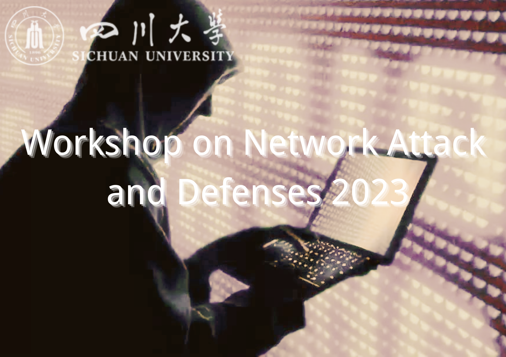

Call for Papers
School of Cyber Science and Engineering, Sichuan University

Call for Papers
With the development of artificial intelligence theory and technology, the application scope of artificial intelligence in various fields is also expanding. In order to strengthen the construction of national cyberspace security and promote artificial intelligence to achieve more academic innovation and Technological Development in more Cyberspace Security related fields, “2021 Sichuan University artificial intelligence society” will be held in Chengdu in May 2021 under the guidance of the school of Cyberspace Security of Sichuan University. The conference will conduct academic exchanges and discussions on typical applications of Cyberspace Security, analyze hot issues, propose technological innovations and show results. To this end, the conference will solicit academic papers in this field from home and abroad.
In order to showcase the latest research results of Sichuan University in artificial intelligence algorithms and its applications, and to deepen the technical exchanges between multiple application fields, the conference has extensively collected academic papers in this field in the School of Network Security.
In order to ensure the availability and professionalism of the research, AAISCU will review the papers according to the research directions and innovation points corresponding to their research fields.
Topics
-
Network & Systems Security
Track chair: Xingshu Chen(SCU, CHN)
See Example Paper
This topic demonstrates the methods of using artificial intelligence tools for Network&systems security, including but not limited to the following aspects：
- Anti-malware techniques: detection, analysis, and prevention
- Cyber attack (e.g., APTs, botnets, DDoS) prevention, detection, investigation, and response
- Cyber-crime defense and forensics (e.g., anti-phishing, anti-blackmailing, anti-fraud techniques)
- Security and privacy of mobile/smartphone platforms
- Security and privacy for blockchains and cryptocurrencies
- Security of Web-based applications and services
- Threat intelligence analysis
- Software testing
- Network traffic analysis
- Public opinion monitoring
- Program analysis technology
-
Multimedia Security
Track chair: Hongxia Wang(SCU, CHN)
See Example Paper
This topic demonstrates the methods of using artificial intelligence tools for multimedia security, including but not limited to the following aspects：
- Tamper detection
- Steganography and steganalysis
- Synthetic multimedia detection
- Anti-spoofing detection
- Generative adversarial networks
- Fake news generative
- Fake multimedia synthetise
Important Dates
- July 01, 2021: Full Paper & Special Session Submission.
- August 20, 2021: Notification of Paper Acceptance.
- August 30, 2021: Camera-ready Paper Upload.
Submission
- Send your full paper to the email asetrc@126.com directly.
Format Download

Copyright@School of Cyber Science and Engineering
Call for Paper
The ACM Conference on Computer and Communications Security (CCS) is the flagship annual conference of the ACM Special Interest Group on Security, Audit and Control (SIGSAC). For over three decades, CCS has been the premier forum for presenting and discussing novel research in computer security, cybersecurity, and privacy. As the digital landscape continues to evolve rapidly—fueled by emerging technologies such as artificial intelligence, quantum computing, decentralized systems, and large-scale data infrastructures—security and privacy research is more critical than ever.
ACM CCS 2025 invites high-quality, original research contributions that advance the state of the art in the theory, design, implementation, analysis, and application of secure systems. We welcome work from academia, industry, and government that spans disciplines, challenges assumptions, and explores innovative directions in security and privacy. Submissions will be evaluated based on scientific merit, novelty, relevance, and potential impact.
Join us at CCS 2025 as we shape the future of secure computing together.
Topics of interest
- Software Security
- Web Security
- Network Security
- Formal Methods and Programming Languages
- Hardware, Side Channels, and Cyber Physical Systems
- Applied Cryptography
- Machine Learning and Security
- Security Usability and Measurement
- Blockchain and Distributed Systems
- Privacy and Anonymity
Submission Instructions
- Format: Submissions must be in PDF format, using the double-column ACM format (sigconf style).
- Length: Maximum of 12 pages, excluding bibliography, well-marked appendices, and supplementary material.
- Anonymization: All submissions should be properly anonymized; papers not properly anonymized may be rejected without review.
- Formatting Compliance: Do not alter fonts or margins. Submissions not adhering to the required format may be rejected without review.
- Review Strategy: All submitted papers will be evaluated based on their merits, particularly their importance to practical aspects of computer and communications security and privacy, novelty, quality of execution, and presentation. For papers that might raise ethical concerns, authors are expected to convince reviewers that proper procedures (such as IRB approval or responsible disclosure) have been followed, and due diligence has been made to minimize potential harm.
Important Dates
| IMPORTANT DATE | DATE |
|---|---|
| Paper submission deadline | Jun 28, 2025 |
| Notification of early-rejection papers | Jul 27, 2025 |
| Author rebuttal period | Aug 18-22, 2025 |
| Rebuttal deadline | Aug 22, 2025 |
| Author notification | Sep 3, 2025 |
Organizers
- Yani Xu, Sichuan University, China
- Xinyao Tang, Sichuan University, China
Call for Papers

ACMSCU COMPASS 2021
（Association for Computing Machinery of SCU）
24 May – 28 May 2021 (virtual)
In order to strengthen the construction of the national cyberspace security guarantee system, innovate and develop national cyberspace security technologies, and promote academic prosperity and technological progress in the fields of cyberspace security and trusted computing. Sponsored by the Computer Society of Sichuan University (SCU), guided by the SCU Cyberspace Security Professional Teaching Steering Committee, and co-organized by the SCU Information Security Institute Professional Committee, the “2021 Sichuan University Computer Society Academic Workshop” (ACMSCU COMPASS 2021) will be held in May 2021 Held in Chengdu. The workshop will conduct academicexchanges and display results on the theoretical hotspots, key technologies and typical applications of cyberspace security. To this end, the workshop solicits academic papers in this field from home and abroad.
With the rapid development of the information industry and the widespread use of information technology, information security has become a major concern in our society. In the information society, in addition to being a part of human society and the physical world, all persons are considered to belong to the information space. It is generally accepted that safety and reliability in human society are closely related to the security and trust associated with the information space. To ensure a safe, harmonious, prosperous and progressive human society, we must ensure that there exist security and trust in both the human society and information space simultaneously.
To ensure security and trust in the information space, there needs to be an integrated approach to implementing cryptography, network security, information system security, content security and other security technologies. Trusted computing is an effective system security technology that has been rapidly developing in recent years, and which has been widely used.
The Internet of Things, Big Data and Cloud Computing are hot topics in the current information field, The Internet of Things promotes the informatization of society by connecting the social space with physical space. Then, Big Data is generated in the information society. Also, the processing of Big Data relies on Cloud Computing. All of these systems require Trusted Computing and other information security technologies to ensure that security and trust are maintained.
To show the latest research results of information security and trusted computing in Sichuan University, and to promote technological communication in these fields, the workshop solicits academic papers in this field in School of Cyber Security.
Important Dates
Friday 1 May (AoE): Submission Deadline
Friday 10 May 2021: Decisions & Reviews
Friday 20 May (AoE): Camera Ready Papers
Monday 24 May– Friday 28 May: Virtual workshop
Tracks
To ensure strong research contributions, the ACMSCU COMPASS 2021 workshop will review papers based on focus tracks corresponding to the research areas they draw upon. The key focal tracks are:
Cloud Computing and Big Data Security
Track chair: Tao Li (SCU, CHN)
See Example Paper
This track takes paper submissions for new research and development of Cloud Computing and Big Data Security. Topics may include, but are not limited to:
- Cloud computing security architecture.
- Virtual machine security.
- Security analysis based on big data.
- Security management of big data.
- Big data visualization technology
Trusted Computing
Track chair: Xinshu Chen(SCU, CHN)
See Example Paper
This track takes paper submissions for new theories and architectures of trusted computing in the context of rapid development of infrastructure and industrial Internet. Topics may include, but are not limited to:
- Trusted computing theory or model
- Trusted Computing Architecture
- Trusted hardware and software
- Trusted Computing Technology and Application
- China’s Trusted Computing Theory Innovation and Application Practice
Network Security
Track chair: JiaYong Liu(SCU, CHINA)
See Example Paper
This track takes paper submissions for new research and development of Network Security. Topics may include, but are not limited to:
- Network communication security theory
- Network communication security technology
- Wireless Network Security
- New Network Security
- SDN security
Cryptography
Track chair: AnMin Zhou(SCU, CHN)
See Example Paper
This track takes paper submissions for the latest research and applications related to cryptography in the context of the rapid development of network authentication scenarios. Topics may include, but are not limited to:
- Crypto theory
- Password design
- Cryptanalysis
- Cryptographic protocol
- Password application
- Blockchain technology application
Information Content Security
Track chair: Anmin Zhou(SCU, CHINA)
See Example Paper
This track takes paper submissions for new research and development of Information Content Security. Topics may include, but are not limited to:
- Information retrieval Information content identification
- Information content control
- Information hiding
- Privacy protection
Submission Instructions
The manuscript can only be written in English, usually no more than 10 pages.
The EasyChair system will be used for paper submission. For detailed requirements, please visit the column of paper submission on the official website of the workshop∶
All submitted materials will go through a double blind review process, so the author’s name or affiliation should not appear on the title page, and the document should avoid revealing its identity in the text and document metadata. For each paper accepted by the workshop, the author shall promise that at least one author will participate in the workshop for communication. Papers that do not participate in the workshop will not be published. Contributors must provide a valid email address and mobile phone number.
ACMSCU COMPASS IS SPONSORED BY:

Copyright © 2021 ACMSCU COMPASS
Call for Paper
ACSAC (Annual Computer Security Application Conference) is indeed an academic conference hosted by Sichuan University, providing an excellent platform for practitioners, researchers, and developers in the field of information system security to exchange and learn. Here, attendees can delve into key issues related to protecting users, business enterprises, and national information infrastructure, and jointly seek practical solutions. For professionals who are committed to addressing practical issues related to information security, ACSAC is undoubtedly an unmissable event. By attending this conference, you can not only exchange insights and share experiences with industry peers, but also learn about the latest security technologies and development trends. In addition, submitting your work results to ACSAC is also an excellent opportunity to showcase your talents and abilities.
Topics of interest
ACSAC covers a wide range of information security issues, from access control and security to auditing, from anonymity and privacy protection to application security, including the application of big data in the security field, cloud and virtualization security, network physical systems, embedded systems, and Internet of Things security. At the same time, the meeting also focused on key areas such as data integrity protection, denial of service attack defense, deployment of trusted systems, digital forensics, distributed system security, enterprise security management, and emergency response. In addition, hardware and supply chain security, identity management, intrusion detection and prevention, machine learning security, malware, mobile/wireless security, network security, operating system and system security, resilience, and other issues are also key concerns of ACSAC. Finally, the meeting also explored the cutting-edge topics of generative artificial intelligence in security applications, as well as software security and software defined programmable security, emphasizing the importance of usability and human centered security, as well as web security.
Through the exploration of these themes, ACSAC provides a platform for experts, researchers, and practitioners in the field of information security to exchange the latest research results, share practical experience, and jointly address challenges. The specific theme categories are as follows:
- Access Control, Assurance, Audit
- Anonymity, Privacy
- Application Security
- Big Data for Security
- Cloud and Virtualization Security
- Cyber-Physical Systems, Embedded Systems, and IoT Security
- Data Integrity and Protection
- Denial of Service Attacks and Defenses
- Deployable Trustworthy Systems
- Digital Forensics
- Distributed Systems Security
- Enterprise Security Management and Incident Response
- Hardware and Supply Chain Security
- Identity Management
- Intrusion Detection and Prevention
- Machine Learning Security
- Malware
- Mobile/Wireless Security
- Network Security
- OS and Systems Security
- Resilience
- Security Applications of Generative AI (Hard Topic)
- Software Security
- Software-defined Programmable Security
- Usability and Human-centered Security
- Web Security
Submission Instructions
Submission Instructions:
The submission process for the International Conference on Industrial Control Network Security (ICNS) has been updated to incorporate three submission deadlines. Each submission will receive one of the following decisions:
- Acceptance: The review strategy of ACSAC is a rigorous and systematic process aimed at ensuring the quality and originality of submitted papers, and selecting research work that has made significant contributions to the field of information security. ACSAC has established a review committee composed of industry experts who have a profound academic background and rich practical experience to comprehensively evaluate the technical level, innovation, and practicality of papers. The review process is usually divided into multiple stages. In the preliminary screening stage, the review committee will conduct a preliminary review of the submitted paper to evaluate whether it meets the theme and scope of the conference, as well as whether it meets basic academic requirements. The purpose of this stage is to eliminate papers that do not match the conference theme or have significantly lower quality. The papers that have passed the preliminary screening will enter the detailed review stage. At this stage, members of the review committee will carefully read the paper, evaluate the importance of the research question, the innovation of the method, the effectiveness of the experiment, and the reliability of the results. They will also pay attention to the theoretical depth and practical application value of the paper, as well as its potential impact on the field of information security. Articles that pass the review will be accepted.
- Paper Format: Please ensure that your submission consists of a PDF file of no more than 10 double-column pages, excluding well-marked references and appendices limited to a maximum of 5 pages. The full PDF document must not exceed a total of 15 pages. Please note that PC members are not required to read the appendices and that page limits will be strictly enforced.Papers must be appropriately anonymized to the dual anonymous review process. Author names and affiliations must not be included in the PDF submission. Authors can cite and refer to their own prior work, but must do so in the third person, as if it was written by someone else. In the rare case that citing previous work in the third person is not possible, please anonymize the reference and notify the Program Chairs.Other format requirements refer to the attachment.
- Paper Artifacts: Authors of accepted papers are strongly encouraged to submit their software and data artifacts for formal evaluation by the Artifacts Evaluation Committee and to make them publicly available to the entire community. During submission, authors of papers whose main contributions and experimental results rely primarily on new or reproduced artifacts (e.g., code and/or data) should indicate whether they will separately submit their artifacts for evaluation, if their paper is accepted.
All papers accepted by the specified date will be included in the conference proceedings and invited to present their work. This includes papers submitted in previous rounds that were accepted without revision, as well as those that underwent major revisions and resubmissions. For example, papers submitted in June, 2024 and accepted without revision, or papers submitted in May 2023, underwent major revisions, and were resubmitted in subsequent rounds.
Important Dates
- Paper Submission Deadline: June 1, 2024
- Notification of Acceptance: June 15, 2024
- Camera Ready Submission Deadline: June 25 , 2024
- Conference: Aug 1 - 10 , 2024
Organizers
- Zilu Zhang, Sichuan University
- Hangrui Zhang, Sichuan University
- Qiaoyang Yang, Sichuan University
Call for Paper
ACSPP 2025
The Symposium on AI-Driven Cyber Security and Privacy Preservation aims to bring together researchers, practitioners, and others interested in the latest advances in the AI-driven cyber security and privacy preservation from the global cybersecurity community to jointly explore AI-driven cyber security technologies and privacy protection strategies, promoting the deep integration and innovative development of AI and cybersecurity.
Topics of interest
Refereed paper submissions are solicited in all areas relating to systems research in cyber security and privacy preservation. This topic list is not meant to be exhaustive; ACSPP is interested in all aspects of AI-driven cyber security and privacy preservation. Papers without a clear application to cyber security or privacy preservation driven by AI, however, will be considered out of scope and may be rejected without full review.
AI-Driven Threat Detection and Defense
- Machine learning-based malware detection
- Application of deep learning in intrusion detection systems
- AI-driven network traffic analysis and anomaly detection
- Automated network attack response and defense strategies
Privacy Protection and Data Security
- Application of differential privacy in cybersecurity
- Practice of homomorphic encryption and secure multi-party computation in privacy protection
- Privacy leakage risks and protection mechanisms in AI models
- Data encryption and access control technologies
Security of AI Models
- Adversarial attacks and defense mechanisms
- Explainability and transparency of AI models
- Security assessment and certification of AI models
- Robustness and reliability of AI systems
Instructions for Paper Submission
- All submissions must be original work;
- The submitter must clearly document any overlap with previously published or simultaneously submitted papers from any of the authors;
- Simultaneous submission of the same paper to another venue with proceedings or a journal is not allowed and will be grounds for automatic rejection.
- All submissions must be written in English.
- All submissions should not exceed 20 pages, including reference and appendices.
- All submissions should follow the IEEE conference paper style. You can get it in https://www.ieee.org/conferences/publishing/templates.html.
- The review process will be double-blind. Authors must remove their names and affiliations form the submissions.
Important Dates
| Full paper submission deadline | June 20, 2025 |
|---|---|
| Notification of paper acceptance | July 20, 2025 |
| Camera-ready of accepted papers | July 30, 2025 |
| Symposium | August 10-11, 2025 |
Note: All deadlines are in accordance with Beijing time (BKG -7h).
Organizers
- Yuke Wang (Sichuan University,Chengdu,China)
- Lisha Yuan (Sichuan University,Chengdu,China)
Contact Information
Email: xxxxxx@acspp.com
Call for Papers
The Symposium on AI and Cross-Disciplinary System Security (ACSS) is a new premier forum for researchers and practitioners to exchange advances at the intersection of artificial intelligence and practical system security. The 2027 ACSS Symposium will be held in Singapore (tentative). The target audience includes security engineers, AI researchers, hardware designers, and policy makers concerned with the security and privacy of real-world intelligent systems.
The primary goal of ACSS is to foster the secure design, deployment, and evaluation of AI-driven systems and to understand the security challenges introduced by AI when applied to traditional systems (e.g., networks, OS, cloud, IoT). All submitted papers will be reviewed by a Program Committee. Accepted papers will be published in the Proceedings of the 2027 ACSS Symposium by the ACSS Association (an open-access digital publisher). Proceedings will be freely available online. Authors retain the right to post final versions on personal or institutional repositories.
Important Guidelines
- Bulk Submission Limit: Maximum of 6 papers per author per cycle (total 12 across two cycles).
- Mandatory pre-registration: Registration (title, author list, non-blank abstract, topics) required one week before submission deadline. No author changes after registration.
- Ethical Considerations appendix required (up to 1 page, after main body, before references).
- Open Science appendix required (up to 1 page), listing all anonymized artifacts (code, data, models) available at submission time. If not available, detailed justification must be provided.
- Anonymous submission: No author names/affiliations; self-citations in third person; anonymized repositories (e.g., Anonymous GitHub).
- No author may be added after submission deadline.
- Withdrawal policy: Papers may be withdrawn any time before review comments are sent. Afterwards, withdrawal is not allowed.
- Use of generative AI is permitted but must be disclosed if used for generating substantial text/figures; minor editing does not require disclosure.
Failure to meet these requirements will result in desk rejection.
Paper Submission Information
ACSS 2027 features two review cycles: Spring and Fall. All deadlines are 11:59 PM AoE (UTC-12).
Spring Cycle (Tentative)
| Event | Date | |——-|——| | Mandatory registration | March 10, 2026 | | Paper + artifact submission | March 17, 2026 | | Early reject notification | April 21, 2026 | | Rebuttal period | May 12–19, 2026 | | Final notification | June 2, 2026 | | Shepherded revision due | June 16, 2026 | | Camera-ready due | July 7, 2026 |
Fall Cycle (Tentative)
| Event | Date | |——-|——| | Mandatory registration | July 21, 2026 | | Paper + artifact submission | July 28, 2026 | | Early reject notification | September 1, 2026 | | Rebuttal period | September 23–30, 2026 | | Final notification | October 14, 2026 | | Shepherded revision due | October 28, 2026 | | Camera-ready due | November 11, 2026 |
Review Outcomes
Each submission will receive one of the following decisions:
- Accept – No major required changes.
- Shepherd Approval – Paper accepted conditionally on completing minor revisions overseen by a shepherd.
- Major Revision – Paper considered promising but requires substantial rework (e.g., new experiments, stronger evaluations). Authors may resubmit to the same cycle’s revision deadline with a detailed response to reviewer tasks. Only one major revision allowed.
- Reject – Paper not appropriate for ACSS 2027; cannot be resubmitted to the same year’s second cycle.
Areas of Interest
We welcome submissions on topics including but not limited to:
- Security of AI systems: adversarial ML, data poisoning, model extraction, backdoor attacks, prompt injection, jailbreak attacks for LLMs, defense mechanisms.
- AI for security: ML/DL applied to intrusion detection, malware analysis, vulnerability discovery (fuzzing), network forensics, anomaly detection.
- System security for AI infrastructure: hardware/software attacks on ML accelerators (GPUs, TPUs), TEE-based protection for models, secure aggregation in federated learning.
- Privacy of AI: membership inference, model inversion, differential privacy in deep learning, privacy-preserving machine learning (e.g., MPC, ZK).
- Cross‑domain AI security: AI in cyber-physical systems (autonomous vehicles, industrial control), smart home/IoT AI agents, AI-assisted code generation security.
- Measurement and understanding: large-scale measurement of AI vulnerabilities, reproducibility studies, SoK papers on AI security/privacy.
- Human factors in AI security: user perceptions of AI‑based security tools, usability of secure AI systems, deceptive AI.
Papers without a clear contribution to the security or privacy of computing systems (including AI systems) are out of scope and will be desk rejected.
Special Submission Types
Replication Papers
We encourage replication studies that verify, refute, or refine prior results, particularly in AI security (e.g., reproducing attack success rates or defense efficacy). These must be marked as “Replication” during submission.
Systematization of Knowledge (SoK)
SoK papers must provide new insights, not just a survey. They should identify gaps, offer perspectives, and may include new experiments to compare prior approaches. Title must be prefixed with “SoK: ”.
Anonymous Submission & Double‑Blind Review
- Author names, affiliations, and acknowledgements must be omitted.
- Self-citations must use third person (e.g., “Previous work by Zhang et al. [5] showed…”). If unavoidable, anonymize the reference.
- Artifacts must be shared via anonymous repositories (e.g., Anonymous 4OpenScience, an OSF anonymized link). Do not use GitHub personal repos with identifying info.
- Papers revealing author identity will be rejected without review.
Ethical Considerations Appendix (Required)
A section titled “Ethical Considerations” must appear after the main body (and before references). It must cover:
- Stakeholder analysis: who may be impacted (users, companies, society, research team).
- Potential harms: tangible (financial, psychological) and rights-based (privacy, informed consent).
- Mitigations: steps taken to reduce harm (e.g., responsible disclosure, IRB approval, data anonymization).
- Decision rationale: why the research and publication are justified despite risks.
- Disclosure of vulnerabilities: if vulnerabilities are studied, state to whom and when they were disclosed, and the disclosure plan.
If IRB approval was obtained, mention it; however IRB approval alone is not sufficient. Papers with missing or inadequate ethics discussions may be rejected.
Open Science & Artifact Availability (Required)
A section titled “Open Science” (up to 1 page) must:
- List all artifacts needed to evaluate the paper’s claims (code, datasets, models, experiment scripts, etc.).
- Provide anonymized access instructions (e.g., link to a tarball on Anonymous 4OpenScience or a DOI from a repository that supports anonymization).
- If any artifact cannot be shared (legal restrictions, commercial sensitivity, prevention of immediate harm), provide a detailed justification.
- Artifacts must be available at submission time. For accepted papers, the camera‑ready version will include a non‑anonymized persistent link; availability will be re‑checked.
We strongly encourage authors to register artifacts for full functional and reproducibility evaluation after acceptance.
Formatting and Page Limits
- Main body: max 13 pages, 10pt Times Roman, two columns, US letter.
- Required appendices: “Ethical Considerations” (≤1 page) and “Open Science” (≤1 page) – placed immediately after main body, before references.
- Optional appendices: unlimited at submission (reviewers not required to read).
- Camera‑ready total: max 20 pages (including all appendices, bibliography, references).
- Template: Use the ACSS official template (based on USENIX Security template). Any whitespace-compression tricks (negative vspace, savetrees, etc.) are forbidden and will lead to rejection.
Bulk Submission Limit
- Each author may appear on at most 6 papers per cycle (12 total). Submissions beyond 6 per cycle will be desk rejected (the 7th+ with the highest submission ID will be dropped).
- This limit is enforced per author: if a co‑author violates the limit, all their papers may be rejected.
- No author may be added or removed after the registration deadline.
Conflicts of Interest
- Authors must declare conflicts with PC members (institutional affiliation, advisor/advisee, collaboration/publication in past 2 years, close personal relationship, or any prior knowledge of the submission).
- PC members with a conflict are excluded from reviewing that paper.
- Declaring a false conflict (to avoid a non‑conflicted reviewer) is prohibited and may result in rejection.
Dual Submission & Plagiarism
- Simultaneous submission to other conferences/journals is not allowed.
- Papers previously rejected from ACSS Spring Cycle may not be resubmitted to the Fall Cycle of the same year.
- Overlap with own prior work must be disclosed by email to the PC chairs (securely anonymized in the submission). Violations will be treated as misconduct.
Use of Generative AI
- Generative AI (LLMs for text, code, or images) may be used, but substantial AI‑generated content (whole sections, tables, figures) must be disclosed at submission (e.g., “Section 3 was drafted with GPT‑4, then revised by authors”).
- Minor editing (spelling, grammar, clarity) does not require disclosure.
- Authors are fully responsible for the correctness and originality of all content, including AI‑generated parts.
Conference Attendance & Presentation
At least one author of each accepted paper must register for the full conference (non-student rate) and present the paper in person. Exceptions require prior approval from the organizers.
Contact
For questions about submissions, ethics, or conflicts, contact the Program Committee Chairs at acss2027-chairs@acss-symposium.org.
Organizers
- Yan Wang (王严) – Student ID: 2025XXXXXX010
Call For Papers
The Internet of Things (IoT) facilitates the interconnection and data exchange of modern objects across every aspect of our lives, including our homes, cars, and even our bodies. By 2025, forecasts suggest that there will be more than 75 billion Internet of Things (IoT) connected devices in use. However, due to the open nature of Internet connectivity, IoT brings a big challenge for the security community; hackers may exploit critical vulnerabilities in a wide range of IoT applications and devices for carrying out their nefarious activities. As a result, IoT security has already become an issue of high concern. Undoubtedly, in terms of offensive security, there is an urgent need to understand IoT-related attacks. This will help toward designing the appropriate security mechanisms. This special issue focuses on IoT-related attacks and defences, and aims to solicit original research papers that discuss novel ways in compromising and protecting IoT networks and devices. We would like to cordially invite you to participate in this special issue by submitting your current research results within a research article or a short communication. Review articles are also considered provided that the topic of the review is discussed in advance.
Topics of interest
We encourage the submission of high-quality contributions regarding the recent advances in IoT attacks and defenses. Topics of interest include, but are not limited to the ones listed below.
- Malware and unwanted software for IoT
- Vulnerability analysis and reverse engineering for IoT
- IoT Cyber crime
- Denial-of-Service attacks for IoT
- IoT security and privacy
- IoT forensic techniques
- Usable security and privacy for IoT
- Intrusion detection and prevention for IoT
- Cyber intelligence techniques for IoT
- IoT infrastructures and mitigation techniques
- IoT Hardware security
- Cyber physical systems security
- Adversarial learning for IoT
- Security measurement for IoT
- IoT security visualization techniques
Submission Guidelines:
Submitted papers must contain original work, which has neither been previously published nor it is currently under review by another journal or conference. Previously published or accepted conference papers must contain at least 40% new material to be considered for the special issue. All papers will be peer-reviewed by at least three independent reviewers. Requests for additional information should be addressed to the corresponding guest editor.
Important Dates:
- Submission deadline: June 4, 2021
- Initial notification: June 5, 2021
- Final acceptance/rejection notification: June 18 , 2021
- Publication: As per the policy of journal
Call For Papers
At present, Internet technology has occupied a vital position in political, economic, cultural, military and other fields. However, with the expansion of the application scope of Internet, the problem of network security has become increasingly prominent. Hackers use the vulnerabilities in the program to invade the network, destroy the system and steal information, which seriously endangers network security. Fuzz testing is one of the most effective vulnerability detection technologies at present. In the past 10 years, researchers have used this technology to find thousands of vulnerabilities in applications, OS kernel, protocols, smart contracts, Internet of things systems, databases, compilers and others. Fuzz testing shows great development potential. This special issue focuses on the research and development related to fuzz testing, and aims to solicit original research papers which discuss the latest research results, analysis methods, technologies, and applications in the field of fuzz testing. We welcome all researchers, scientists, engineers and practitioners who study fuzz testing to contribute.
Topics of interest
- Seed set selection
- Seed Schedule
- Byte Schedule
- Mutation Operator Schedule
- Diverse Information For Fitness
- Evaluation Theory
- Theory of searching inputs space
- Automatic Execution of PUTs
- Automatic Detection of Bugs
- Improvement of Execution Speed
Submission Guidelines
This special issue accepts two ways of submission. You can choose to submit drafts or full papers. A draft is a full paper sans the evaluation or experiments. If the draft is accepted, you need to submit the full paper before the final submission deadline. Each submission will be reviewed by at least three committee members with the key objective of providing constructive feedback. Submitted drafts should include no more than 8 pages, excluding references. There are no page limits on the references. Papers must be formatted according to the AFSCU requirements. Templates are available in AFSCU official website.
Important Dates
- Drafts/Full Paper Submission Deadline: March 31, 2022
- Notification of Acceptance/Rejection: April 14, 2022
- Final Paper Submission Deadline: August 26, 2022
- Publication: September 27, 2022
The 1st symposium on Artificial Intelligence and Algorithm Security seeks submissions presenting novel contributions related to all aspects of AI security application and AI algorithm security. Theoretical papers must make a convincing case for the relevance of their results to practice. Authors are encouraged to write the abstract and introduction of their paper in a way that makes the results accessible and compelling to a general computer-security researcher. In particular, authors should bear in mind that anyone on the program committee may be asked to review any paper.
Paper Submission Information
All submissions must be received by 11:59 PM AoE (UTC +8) on the day of the corresponding deadline. Submitted papers must not substantially overlap with papers that have been published or accepted for publication, or that are simultaneously in submission to a journal, conference, or workshop with published proceedings. All submissions should be properly anonymized; papers not properly anonymized may be rejected without review.
All submitted papers will be evaluated based on their merits, particularly their importance to practical aspects of computer and communications security and privacy, novelty, quality of execution, and presentation. For papers that might raise ethical concerns, authors are expected to convince reviewers that proper procedures (such as IRB approval or responsible disclosure) have been followed, and due diligence has been made to minimize potential harm.
Submitted papers may be rejected for being out of scope, at the discretion of the PC chairs. Authors who have questions about whether their paper is in scope are encouraged to ask the PC chairs in advance.
Paper Format
Submissions must be a PDF file in IEEE/ACM Transactions on Networking format. Submissions not following the required format may be rejected without review.
Important Dates
- Paper submission deadline: June 31, 2021
- Rebuttal period: July 5-20, 2021
- Author notification: September 20, 2021 September 22, 2021
- Resubmission of revised papers: October 20, 2021 October 22, 2021
- Decisions on revised papers: November 5, 2021
Call for Paper
The International Conference on Artificial Intelligence 2023 (AI2023) aims to provide an international platform for researchers, scholars and engineers to exchange the latest research results and discuss future directions. The theme of the conference is “Artificial Intelligence and the Future Smart Society”, covering various fields of AI and its applications in the construction of a smart society. The conference will invite famous scholars and enterprise representatives from home and abroad to give keynote speeches, and set up several sub-forums, welcome scholars and engineers to contribute and attend the conference.
Topics of interest
Submissions are solicited in all areas related to artificial intelligence, including but not limited to:
- Machine Learning and Deep Learning
- Natural Language Processing
- Artificial Intelligence Algorithms and Models
- Machine Vision
- Data Mining and Knowledge Discovery
- Intelligent Internet of Things and Smart Manufacturing
- Human-Computer Interaction and Intelligent Transportation
- Artificial Intelligence and Health Care
Submission Instructions
- The conference accepts submissions of papers and technical reports in Chinese or English, with a maximum length of 10 pages (including references).
- All papers are subject to strict peer review, and accepted papers will be included in the conference proceedings and published by the publisher. Some high level papers will be recommended for publication in reputable journals.
- The deadline for submission of papers is May 1, 2023.
- All submitted articles should be original works, no plagiarism or plagiarism.
Important Dates
| IMPORTANT DATE | DATE |
|---|---|
| Deadline | May 1, 2023 |
| Notification of acceptance | May 25, 2023 |
| Deadline for final version | June 10, 2023 |
| Conference Dates | June 20, 2023 - June 25, 2023 |
Organizers
- Workshop co-chair(s): Judong Yang, ZhuChao Yuan
Workshop on AI-Driven Technologies and Challenges in Cybersecurity (AI4Cyber)
With the rapid development of artificial intelligence, its application in the field of cybersecurity has become increasingly prominent. This workshop aims to bring together researchers and practitioners in the intersection of AI and cybersecurity to explore how AI technologies can enhance cyber defense capabilities, as well as the new security challenges that may arise in real-world deployments. We welcome submissions presenting research on AI-driven cybersecurity.
Workshop Topics
This workshop focuses on (but is not limited to) the following topics:
- Intrusion detection and defense systems based on machine learning/deep learning
- AI-driven malware detection and attribution
- Intelligent algorithms for phishing and fraud detection
- Security of AI systems and adversarial examples
- AI-enhanced security strategy optimization and automated response
- Applications of federated learning in distributed security systems
- Modeling and simulation of cyber attacks
- Applications of large language models (LLMs) in security automation
Submission Guidelines
- Format: Please use the IEEE conference paper template (two-column format) and submit in PDF.
- Page Limit: Full papers must not exceed 6 pages, and short papers must not exceed 4 pages (including references).
- Submission System: Papers should be submitted via EasyChair (submission link will be provided on the official site).
- Review Process: Single-blind peer review. All submissions will be reviewed by at least two experts to ensure fairness and high quality.
- Notification: Accepted papers will be included in the workshop proceedings. Selected outstanding papers may be recommended to partner journals (TBD).
Organizers
- Organizers:
- Chen Yingjun, 20240041, Sichuan University
Invited Talks (Tentative)
We plan to invite experts in cybersecurity and artificial intelligence (e.g., professors from universities or research institutes) to deliver keynote talks. Groups interested in taking on organizational responsibilities are encouraged to invite relevant faculty members.
For any inquiries, please feel free to contact the organizers.
```
Call for Paper
With the rapid advancement of generative artificial intelligence, multimedia processing, and large-scale content distribution platforms, the boundary between authentic and manipulated digital content is becoming increasingly blurred. While modern intelligent systems significantly improve the efficiency of content creation and dissemination, they simultaneously introduce unprecedented challenges in copyright protection, ownership verification, and media authenticity.
Traditional copyright protection mechanisms primarily rely on centralized registration, metadata labeling, or legal enforcement procedures. However, such approaches often fail to provide robust protection in highly distributed digital ecosystems where content can be duplicated, modified, or redistributed within seconds. In particular, the emergence of diffusion models, large language models, and neural rendering technologies has enabled the generation of highly realistic synthetic media, making unauthorized reproduction and copyright infringement more difficult to detect and trace.
At the technical level, digital watermarking technologies are evolving from conventional visible and frequency-domain methods toward intelligent, adaptive, and imperceptible embedding mechanisms. Modern watermarking systems are expected not only to survive compression, cropping, and adversarial perturbations, but also to support ownership authentication, tamper localization, and traceability in cross-platform environments. The integration of deep learning further enables semantic-aware watermarking strategies capable of balancing robustness, invisibility, and computational efficiency.
Meanwhile, the rapid proliferation of deepfake technologies presents another critical challenge to the digital copyright ecosystem. Deepfake content generated through generative adversarial networks and neural synthesis frameworks can imitate voices, faces, and behaviors with remarkable realism, threatening the credibility of digital evidence and media authenticity. As a result, reliable detection frameworks, provenance verification mechanisms, and trustworthy content authentication systems have become essential research directions.
In addition, emerging paradigms such as blockchain-based copyright management, trusted execution environments, federated learning, and privacy-preserving AI are reshaping the future of digital rights protection. These technologies aim to establish decentralized and verifiable trust infrastructures capable of protecting intellectual property while maintaining scalability, privacy, and interoperability.
Therefore, continuously understanding the technologies and mechanisms adopted in digital watermarking, deepfake detection, media forensics, and trustworthy AI is essential for building secure and reliable copyright protection systems in the next-generation digital environment.
Topics of Interest
This conference invites original research contributions related to copyright protection and multimedia security, including but not limited to:
- Digital watermarking and fingerprinting techniques
- Robust and imperceptible watermark embedding
- AI-generated content identification and provenance tracking
- Deepfake detection and synthetic media analysis
- Multimedia forensics and tamper localization
- Copyright authentication for images, audio, and video
- Adversarial attacks and defenses in watermarking systems
- Blockchain-based copyright management and traceability
- Privacy-preserving copyright verification
- Trusted media distribution architectures
- Neural network watermarking and model ownership protection
- Federated learning for secure multimedia applications
- Detection of AI-generated text and multimedia content
- Secure content sharing in social media platforms
- Explainable AI for media authenticity analysis
- Real-time copyright monitoring and infringement detection
- Watermark robustness against compression and transformation
- Ethical and legal issues in synthetic media governance
- Security challenges in metaverse and virtual content ownership
- Benchmark datasets and evaluation metrics for deepfake detection
Submission Instructions
Authors are invited to submit original and unpublished research papers written in English. Submitted manuscripts must not be under consideration for publication elsewhere.
- Paper Format: IEEE Conference Template
- Paper Length: 6–8 pages, including figures and references
- Submission Language: English
- Submission System: Online submission portal
- Review Process: Double-blind peer review
- Evaluation Criteria: Originality, technical quality, relevance, clarity, and practical impact
All accepted papers will be included in the conference proceedings and presented during the conference sessions.
Important Dates
- Paper Submission Deadline: August 15, 2026
- Notification of Acceptance: September 20, 2026
- Camera-Ready Submission: October 5, 2026
- Conference Date: October 25–27, 2026
Organizers
- Yuhang Chen, Sichuan University, Email: 1760304164@qq.com
- Xinyi Huang, Sichuan University, Email: 2297731900@qq.com
AI-Driven Cybersecurity and Privacy Workshop
Overview
Artificial intelligence has become an important technology in modern cybersecurity and privacy protection. Machine learning, deep learning, large language models, and other AI techniques are increasingly used in intrusion detection, malware analysis, vulnerability discovery, phishing detection, privacy protection, and automated security analysis. These techniques provide new opportunities to improve the efficiency and accuracy of security systems.
At the same time, AI systems themselves also introduce new security and privacy risks. For example, adversarial examples may mislead machine learning models, data poisoning may affect the training process, model inversion may cause privacy leakage, and large language models may be misused to generate phishing emails, malicious code, or misleading information.
The AI-Driven Cybersecurity and Privacy Workshop aims to provide a platform for students, researchers, and practitioners to discuss recent advances, practical challenges, and future research directions at the intersection of artificial intelligence, cybersecurity, and privacy. The workshop welcomes both mature research results and early-stage ideas that can inspire academic discussion.
Topics of Interest
We invite submissions on topics related to AI-driven cybersecurity and privacy, including but not limited to:
- AI-based intrusion detection and anomaly detection
- Machine learning for malware detection and analysis
- AI-assisted vulnerability discovery and program analysis
- Security of large language models and generative AI systems
- Adversarial attacks and defenses in machine learning
- Data poisoning, backdoor attacks, and model robustness
- Privacy-preserving machine learning
- Federated learning security and privacy
- AI-based phishing detection, fraud detection, and spam filtering
- Automated security analysis using large language models
- Explainable artificial intelligence for cybersecurity
- Security and privacy issues in cloud, edge, and IoT systems
- Dataset construction and benchmark design for AI-based security systems
- Ethical, legal, and social issues of AI in cybersecurity
Submission Guidelines
Authors are invited to submit original research papers, short papers, position papers, and work-in-progress papers. Submissions can be written in either Chinese or English and should be submitted in PDF format.
The workshop accepts the following types of submissions:
- Full papers: up to 8 pages, excluding references
- Short papers: up to 4 pages, excluding references
- Position papers or work-in-progress papers: up to 2 pages, excluding references
All submissions should clearly describe the research problem, motivation, proposed method or idea, preliminary results if available, and possible future work. Since this workshop encourages academic communication, submissions with incomplete but promising ideas are also welcome.
Submissions should be anonymized for double-blind review. Authors should remove names, affiliations, acknowledgements, and other information that may reveal their identities.
Review Process
Each submission will be reviewed by at least two reviewers. The review process will follow a double-blind peer review policy.
Reviewers will evaluate submissions based on the following criteria:
- Relevance to the workshop topic
- Novelty and originality of the idea
- Technical soundness
- Clarity of presentation
- Potential impact on cybersecurity and privacy research
- Suitability for workshop discussion
The workshop encourages constructive reviews. Reviewers are expected to provide detailed comments and suggestions to help authors improve their work.
Important Dates
- Submission deadline: May 11, 2026
- Notification of acceptance: May 18, 2026
- Camera-ready version due: May 25, 2026
- Workshop date: June 2026
All deadlines are 23:59:59, Anywhere on Earth.
Workshop Format
The workshop will include paper presentations, invited talks, poster sessions, and open discussions. Accepted papers will be presented by the authors in oral or poster sessions.
The workshop especially encourages discussion on early-stage research ideas, practical challenges, and future research directions. Possible discussion topics include:
- How can AI improve the efficiency of cybersecurity analysis?
- How should AI-based security systems be evaluated?
- What are the major security risks introduced by large language models?
- How can privacy be protected when training and deploying AI models?
- What datasets and benchmarks are needed for future research?
- How can researchers balance automation, security, privacy, and ethical concerns?
Invited Talk
The workshop plans to invite a researcher or teacher with experience in artificial intelligence, cybersecurity, or privacy protection to give an invited talk. The invited talk will focus on recent research trends, practical challenges, and possible future directions in AI-driven cybersecurity.
Organizers
- HJYBD, Sichuan University
Contact
For questions about the workshop, please contact the organizer:
- 王一逢: 1119780959@qq.com
Call for Papers
The 1st International Workshop on AI-driven Cybersecurity for Smart Systems (AICSS 2026)
Co-located with International Conference on Intelligent Computing and Security (ICICS 2026)
📍 Overview
The rapid deployment of Artificial Intelligence (AI) in critical infrastructures such as smart grids, intelligent transportation systems, and cyber-physical systems has introduced unprecedented security challenges. While AI enhances system efficiency and adaptability, it also opens new attack surfaces, including adversarial attacks and false data injection (FDI).
The AICSS 2026 Workshop aims to provide an international forum for researchers and practitioners to present and discuss the latest advances in AI-driven cybersecurity, with a particular focus on smart systems and critical infrastructure protection.
🎯 Scope and Topics
We solicit high-quality original submissions on (but not limited to) the following topics:
🔹 Track 1: AI for Cybersecurity
- Machine learning for intrusion detection
- Deep learning-based anomaly detection
- AI-based threat intelligence
🔹 Track 2: Security in Cyber-Physical Systems
- False Data Injection (FDI) attacks and defense
- Security in smart grids and energy systems
- Industrial control system (ICS) security
🔹 Track 3: Trustworthy and Robust AI
- Adversarial machine learning
- Explainable AI for security applications
- Robust and resilient AI models
🔹 Track 4: Emerging Technologies and Security
- Blockchain-based security mechanisms
- Federated learning security
- Internet of Things (IoT) security
- Edge computing security
📝 Submission Guidelines
- Manuscripts must be written in English
- Paper length: 6–8 pages, following IEEE conference format
- Submissions must be anonymous for double-blind review
- Papers must present original work not submitted elsewhere
All submissions will be peer-reviewed by at least two Program Committee members.
📅 Important Dates
- Paper Submission Deadline: May 11, 2026 (23:59:59)
- Notification of Acceptance: May 18, 2026
- Camera-ready Submission: May 25, 2026
- Workshop Date: June 2026 (To be announced)
🏆 Publication and Presentation
- Accepted papers will be included in the AICSS 2026 Proceedings
- Selected high-quality papers will be invited to submit extended versions to SCI/EI indexed journals
- At least one author of each accepted paper must register and present the work
🎤 Keynote Speakers
Invited keynote speakers from academia and industry will deliver talks on cutting-edge topics in AI security and smart systems.
(Speakers to be announced)
👥 Organization
General Chair
- TBD
Program Chairs
- TBD
Program Committee
- Researchers from universities, industry, and research institutes worldwide
🏛️ Sponsors (Tentative)
- Academic institutions and industry partners in AI and cybersecurity
📮 Submission System
Papers should be submitted via the workshop submission system (e.g., EasyChair / CMT).
👉 Submission Repository:
https://gitee.com/scu-ccse-kaigao/cfp.git
📬 Contact Information
For inquiries, please contact:
🌐 Keywords
Artificial Intelligence, Cybersecurity, Smart Systems, FDI Attack, PINN, Smart Grid, Adversarial Learning
Call for paper
The Workshop on AI-Driven Cybersecurity and Defense (AIDef 2026) invites submissions of original research addressing the intersection of artificial intelligence and cybersecurity, focusing on AI-powered offense, defense, and the security challenges introduced by machine learning systems themselves. As cyber threats grow more sophisticated and automated, AI/ML is transforming both offensive attack vectors and defensive strategies. This workshop aims to explore cutting-edge research on leveraging AI to enhance security resilience, while addressing the vulnerabilities, biases, and adversarial risks of AI systems in critical security applications.
Topics of interest
Submissions are solicited in all areas of data security, including but not limited to:
- AI-Powered Offensive Cybersecurity
- Automated vulnerability discovery and exploit generation
- AI-driven phishing, social engineering, and adversarial deception
- ML-assisted penetration testing and red-teaming automation
- Generative AI for malware and attack payload obfuscation
- AI-Driven Defensive Mechanisms
- Machine learning for intrusion detection and threat hunting
- Anomaly detection in network, host, and IoT environments
- AI-powered threat intelligence and predictive defense
- Automated incident response and security orchestration
- Security of AI/ML Systems
- Adversarial attacks on ML models (evasion, poisoning, backdoors)
- Defenses against adversarial examples and model theft
- Privacy-preserving machine learning for security applications
- Robustness and reliability of ML-based security tools
- Emerging Paradigms and Challenges
- AI security in zero-trust and cloud-native environments
- Large language models (LLMs) for cybersecurity: opportunities and risks
- Federated learning and distributed AI security
- Bias, fairness, and explainability in AI-driven security decisions
- Legal, ethical, and governance aspects of AI in cybersecurity
Submission Instructions
Evaluation Rules
AIDef 2026 adopts a double-blind peer review process to ensure fairness and objectivity throughout the evaluation procedure.
Authors must anonymize their submissions and must not include any identifying information in the manuscript, such as author names, affiliations, email addresses, acknowledgments, or self-identifying references.
Language
All submissions must be written in clear and professional English.
Authors are responsible for ensuring grammatical correctness, readability, and compliance with academic writing standards. Authors are strongly encouraged to proofread their manuscripts carefully before submission.
Paper Format and Page Limits
Submitted papers may include up to 13 pages of text (including figures and tables). References may use up to 2 additional pages (not counted within the 13 pages). An optional appendix may be added using up to 3 additional pages (beyond the 13+2 pages). The total page limit (text + references + appendix) is 18 pages.
- Reviewers are not required to read the appendix; the main contribution must be understandable from the first 13 pages of text and the references.
- The camera-ready paper must not exceed the 18‑page total. At the PC chairs’ discretion, a small number of additional pages may be allowed.
Papers must be formatted for US letter (preferred) or A4 paper.
- For LaTeX: use
\documentclass[conference,compsoc]{IEEEtran}withIEEEtran.clsversion 1.8b or any later compatible version (e.g., 1.9, 2.0). - The document class options shall not override the compsoc margins, font, or spacing. Packages that alter the layout (e.g.,
\usepackage{usenix}) are forbidden. - For A4 paper, add the
a4paperoption:\documentclass[a4paper,conference,compsoc]{IEEEtran}. The resulting PDF will be correctly formatted for A4 while preserving the required type area and font sizes.
Microsoft Word users are strongly advised to use the LaTeX template. If using Word is unavoidable, you must manually replicate the compsoc style (margins: top/bottom 0.75 in, left/right 0.625 in; main font: 10 pt Times New Roman; line spacing: single with 10 pt after headings). A verified Word template is not provided by the conference; authors are solely responsible for matching the compsoc layout exactly.
All submissions must be in PDF format.
Papers that fail to use the correct paper size (US letter or A4) or deviate from the compsoc style (margins, font, spacing, or space scrunching) are subject to rejection without review. Authors must verify their format against the reference Overleaf template.
Links to submission:AIDef 2026
Originality
Submitted papers must satisfy the following originality requirements:
- The work must be original and unpublished.
- The submission must not be under review or submitted simultaneously to another conference, journal, or publication venue.
- The manuscript must not contain plagiarism, fabricated data, or any form of academic misconduct.
Authors are solely responsible for any copyright disputes or ethical violations related to their submissions.
Important Dates
Paper submissions due: Wednesday, June 17, 2026, 23:59
Notification to authors:Friday, July 10, 2026
Camera-ready deadline:Tuesday, July 21, 2026
Workshop dates:Thursday, August 20, 2026 – Friday, August 21, 2026
Publication and Presentation
Accepted papers will be published in the workshop proceedings. At least one author must register and present the work at the workshop (either in-person or virtually via a live or pre-recorded session).
Organizers
- Yuying Rao，Sichuan University
- Zixin Yan，Sichuan University
- Zijie Ye， Sichuan University
Overview
The AI-Driven Graphics and Visual Computing Workshop (AIGVC) serves as a dedicated forum for students, researchers, and practitioners working at the intersection of artificial intelligence and computer graphics. Recent years have witnessed a paradigm shift driven by neural rendering (e.g., NeRF, 3D Gaussian Splatting), generative 3D models, differentiable simulation, and AI-assisted real-time rendering. These techniques promise unprecedented visual fidelity and content creation efficiency, yet they also introduce fundamental questions about physical correctness, controllability, and practical deployability.
AIGVC aims to bridge the gap between pure visual “illusion” and physically grounded graphics. We welcome contributions ranging from mature results to early-stage explorations that can spark critical discussion. The workshop encourages a balanced examination of both the breakthroughs and the inherent limitations of AI-driven methods in graphics and visual computing.
Topics of Interest
We invite submissions on all aspects of AI-driven graphics and visual computing, including but not limited to:
- Neural rendering, radiance fields, and view synthesis
- 3D Gaussian splatting and point-based graphics
- Differentiable rendering and differentiable physics simulation
- Generative AI for 3D assets, textures, and scenes
- AI-assisted real-time global illumination and path tracing
- AI-based denoising and super-resolution for rendering
- Animation, character control, and motion synthesis via machine learning
- Adversarial robustness for visual computing models
- Evaluation metrics and perceptual studies for generative 3D content
- Failure modes of neural rendering: floaters, artifacts, and hallucination
- Bridging the gap between research prototypes and industry standards (e.g., PBR compliance)
- Datasets, benchmarks, and experimental protocols for AI-driven graphics
- Ethical, legal, and artistic implications of AI-generated visual content
Submission Guidelines
Authors are invited to submit original research papers, short papers, position papers, and work-in-progress reports. Submissions may be written in English or Chinese and must be in PDF format.
The workshop accepts three categories:
- Full papers: up to 8 pages, excluding references
- Short papers: up to 4 pages, excluding references
- Position or work-in-progress papers: up to 2 pages, excluding references
Submissions should clearly describe the research problem, motivation, proposed method or idea, preliminary results (if available), and anticipated future work. Early-stage ideas with promising yet unverified results are explicitly encouraged, as the workshop values vibrant discussion over polished finality.
Anonymization: AIGVC follows a double-blind review policy. Authors must remove all identifying information, including names, affiliations, and acknowledgments.
Review Process
Each submission will receive at least two reviews under the double-blind policy. Reviewers will evaluate papers based on:
- Relevance to the workshop’s topics
- Novelty and originality of the idea or problem formulation
- Technical soundness (even for early-stage work, the reasoning should be clear)
- Clarity of presentation
- Potential to spark discussion and influence future research
- Suitability for the workshop format
Constructive reviewing is central to AIGVC. Reviewers are expected to provide detailed, actionable feedback that helps authors refine their work, regardless of the acceptance decision.
Important Dates
- Submission deadline: May 11, 2026
- Notification of acceptance: May 18, 2026
- Camera-ready due: May 25, 2026
- Workshop date: June 2026
All deadlines are at 23:59:59 (Anywhere on Earth).
Workshop Format
AIGVC will feature paper presentations (oral and poster), an invited talk, and structured open discussions. Accepted papers will be allocated to oral or poster sessions based on their maturity and discussion potential.
The workshop places special emphasis on live, constructive debate. Possible discussion topics include:
- Is photorealism sufficient, or must neural rendering be physically correct?
- When do neural rendering artifacts become unacceptable for industry?
- Can differentiable physics simulation justify its cost in production pipelines?
- How should we evaluate the quality and realism of generated 3D assets?
- What benchmarks are most urgently needed to test the robustness of AI-driven graphics?
- How do we balance artistic control with generative automation?
Invited Talk
The workshop plans to feature an invited talk by a researcher or practitioner experienced in neural rendering, generative 3D, or real-time graphics. The talk will focus on recent advances, unresolved challenges, and the road ahead for AI-driven graphics.
Organizers
邓善聪, School of Computer Science, Sichuan University, China
Contact
Questions about submissions, reviewing, and workshop organization can be sent to the workshop organizers through the submission system or by email after the workshop website is announced.
Call for Paper
AIHT 2024 serves as the premier international platform for researchers, developers, and practitioners to exchange the latest advances, challenges, and opportunities in applying artificial intelligence and machine learning in the health technology sector. The conference is scheduled to be held in Chengdu, China, from October 5th to 8th, 2024, aiming to foster interdisciplinary dialogue and innovation in this vital and rapidly evolving area.
In response to ongoing adjustments in the post-pandemic era, AIHT 2024 will be conducted in a flexible hybrid format, allowing for both on-site participation at Chengdu’s cutting-edge conference facilities and online attendance. This approach is designed to encourage wider participation from the global community while ensuring the health and safety of all attendees.
Topics of interest
Submissions are invited on a broad range of research topics, including but not limited to:
-
AI-driven diagnostic and therapeutic solutions
-
Machine learning algorithms for genomic and bioinformatics data analysis
-
AI applications in telemedicine and remote health monitoring
-
Robotics and automation in surgery and patient care
-
Deep learning for medical imaging and diagnostics
-
Ethical considerations and bias mitigation in AI for healthcare
-
Integration of IoT devices with AI for health monitoring
-
Predictive analytics for epidemic and pandemic forecasting
-
Personalized medicine through AI
-
Blockchain for secure patient data management
-
Security issues in smart medical field
Submission Instructions
- The conference accepts submissions of papers and technical reports in Chinese or English, with a maximum length of 10 pages (including references).
- AIHT 2024 welcomes original, unpublished research papers that are not currently under review in any other forum. Papers should present novel theoretical insights, experimental results, or applications in the field.
- Submissions will undergo a stringent double-blind review process, adhering to the highest academic standards.
Important Dates
| IMPORTANT DATE | DATE |
|---|---|
| Paper Submission Deadline | June 15, 2024 |
| Notification of Acceptance | August 1, 2024 |
| Camera-Ready Submission | September 1, 2024 |
| Conference Dates | October 5-8, 2024 |
For more information on submission instructions, registration, and program details, please visit our official website: [AIHT 2024 Official Website].
We look forward to your contributions and to welcoming you in Chengdu for an engaging exchange of ideas at the forefront of artificial intelligence in health technology.
Organizers
- Workshop co-chair(s): Huijia Liang, Dongqing Jia
Call For Papers
With the continuous expansion and rapid development of the Internet, the network environment has become more and more complex, and the risks are also increasing. Therefore, network security has become a very important issue. Defects in the network may lead to network attacks and affect the privacy of users. In order to ensure network information security, network security technologies such as data encryption and network intrusion detection have received extensive attention. As an emerging technology to simulate biological population and individual behavior, bionic algorithm relies on its strong adaptability, diversity, learning, recognition and memory characteristics, which has received great research and attention, and has shown its unique advantages in the field of information security.
The Bionic-Driven Safety Symposium (WBDS) seeks budding, disruptive and unconventional ideas for biomimetic-driven safety. These ideas can be inspired by aspects such as biological activities and social behaviors of living things, and submissions often address the limitations of current cybersecurity, discuss problems from fresh perspectives, and lead to new solutions.
Topics of interest
We encourage submissions of high-quality contributions on recent advances in artificial immunity, biomimicry, and defense. Topics of interest include, but are not limited to, the topics listed below.
- Intrusion detection
- Attack detection and defense
- Privacy protection
- Data encryption
- Optimization
- Network and system security
- Immunization technology
- Crowd intelligence
Submission Guidelines:
- Submitted papers must contain original work, which has neither been previously published nor it is currently under review by another journal or conference. Previously published or accepted conference papers must contain at least 40% new material to be considered for the special issue.
- Authors of published papers should submit the full paper for peer review
- The paper should be written in accordance with the conference official website template, no less than 4 pages
Important Dates:
- Title and abstract Submission 28 April 2022
- Full Paper Submission deadline 25 May 2022
- Notification deadline 05 June 2022
- Start of Workshop 10 June 2022
- End of Workshop 11 June 2022
Call for Papers
The 1st International Conference on Artificial Intelligence Security and Trust (AISEC 2026) invites researchers, students, engineers, and industry practitioners to submit original and unpublished work on the security, privacy, robustness, and trustworthy deployment of artificial intelligence systems.
Artificial intelligence technologies are now widely used in software engineering, cybersecurity, finance, healthcare, education, transportation, and public services. However, the rapid development of machine learning models and large language models also introduces new security risks, including adversarial attacks, data leakage, model misuse, unsafe generated content, and vulnerabilities in AI-powered applications. AISEC 2026 aims to provide a forum for discussing how to build secure, reliable, and accountable AI systems.
Submissions should present clear research problems, sound methodologies, meaningful experiments or analysis, and original contributions. Both theoretical research and practical security studies are welcome, especially work that connects AI techniques with real-world security challenges.
Topics of Interest
AISEC 2026 welcomes submissions on topics including, but not limited to:
- Adversarial attacks and defenses for machine learning models
- Security and privacy of large language models
- Robustness evaluation and model safety testing
- Data poisoning, backdoor attacks, and model supply chain security
- Privacy-preserving machine learning and federated learning security
- AI for malware detection, intrusion detection, and threat intelligence
- Detection and mitigation of deepfakes and synthetic media abuse
- Secure deployment of AI systems in real-world applications
- Explainable and trustworthy AI for cybersecurity
- Ethical, legal, and social issues in AI security
Submission Instructions
Authors are invited to submit original and unpublished papers written in English. All submissions should follow academic writing standards and clearly describe the research background, methodology, experiments or analysis, results, and conclusions.
- Format: Papers must be submitted in PDF format using a double-column ACM conference template.
- Length: Full papers should be 8 to 12 pages, including figures, tables, and references. Short papers should be 4 to 6 pages.
- Originality: Submissions must not have been published previously or be under review by another conference or journal.
- Review Process: AISEC 2026 adopts a double-blind peer review process. Authors should remove names, affiliations, acknowledgements, and other identifying information from the submitted manuscript.
- References: Papers should include sufficient and relevant references. Authors are encouraged to cite recent high-quality work from conferences, journals, and authoritative academic sources.
- Language: Submissions must be written in clear academic English.
- Supplementary Materials: Authors may submit appendices, datasets, source code, or demo links as supplementary materials when appropriate.
Important Dates
| Important Date | Date |
|---|---|
| Paper Registration Deadline | March 15, 2026 |
| Full Paper Submission Deadline | March 22, 2026 |
| Notification of Acceptance | May 10, 2026 |
| Camera-ready Submission Deadline | May 31, 2026 |
| Conference Date | July 18-20, 2026 |
Publication
Accepted papers will be included in the AISEC 2026 conference proceedings. Selected high-quality papers may be invited for extension and submission to a special issue on artificial intelligence security and trustworthy AI systems.
Organizers
- Wenzhu Zhang, Sichuan University, China
Call for Paper
We are pleased to announce the first edition of AISP 2026, a premier international conference dedicated to the security, privacy, and trustworthy aspects of Artificial Intelligence systems. As AI technologies, especially large language models and deep learning systems, are increasingly deployed in security-critical domains, understanding and mitigating their vulnerabilities has become a pressing research priority. AISP aims to bring together researchers, practitioners, and industry leaders to advance the frontiers of AI security research and applications.
We invite submissions of high-quality, original research papers that address theoretical, technical, or practical aspects of artificial intelligence security and privacy.
Topics of Interest
Submissions are solicited in all areas related to AI Security and Privacy, including but not limited to:
- Adversarial Attacks and Defenses
- Privacy-Preserving Machine Learning
- Robustness and Fairness of AI Systems
- AI for Cybersecurity and Threat Detection
- Interpretability and Explainability of AI
- Model Stealing and Inversion Attacks
- Federated Learning Security
- Alignment and Safety of Large Language Models
- Deepfake Detection and Content Authentication
- Ethics, Policy and Societal Impact of AI Security
Submission Instructions
- Paper Format: Please submit your paper in PDF format using IEEE double-column conference format (available at https://www.ieee.org/conferences/publishing/templates.html ).
- Paper Length: There will be a strict upper limit of 9 pages for the main text of the submission, with unlimited additional pages for citations.
- Review Process: Submissions will be double-blind reviewed. Authors must anonymize their submissions by removing author names, affiliations, and acknowledgments. Self-citations should be written in the third person.
- Language: Papers should be written in English and proofread by professionals for language and grammar. We encourage authors to use clear and concise language, and ensure that the text body is complete and self-contained.
- Originality: Submissions must be original and not concurrently submitted to or published in any other venue.
- Number of Keywords: Between 5~8 keywords for each paper.
Important Dates
| IMPORTANT DATE | DATE |
|---|---|
| Full Paper Submission Deadline | June 10, 2026 |
| Notification of Acceptance | July 5, 2026 |
| Deadline for Final Version | July 20, 2026 |
| Conference Dates | August 15-17, 2026 |
Organizers
Xinhe Feng, Sichuan University Yuhang Wang，Sichuan University Shike Chen，Sichuan University
Call for Paper
The proliferation of large-scale networked systems—spanning cloud platforms, edge computing infrastructures, Internet-of-Things (IoT) ecosystems, and 5G/6G networks—has introduced unprecedented cybersecurity challenges. Meanwhile, Artificial Intelligence (AI) and Machine Learning (ML) techniques have demonstrated remarkable potential in automating threat detection, vulnerability analysis, and adaptive defense. However, AI itself also introduces new attack surfaces, including adversarial machine learning, model poisoning, and privacy leakage through inference attacks.
The International Workshop on AI-Driven Security for Networked Systems (AISec-Net) aims to bring together researchers, practitioners, and industry professionals to explore the intersection of AI/ML and cybersecurity in the context of modern networked systems. The workshop focuses on both leveraging AI to enhance network security and understanding the security risks introduced by AI components embedded in networked environments.
Topics of Interest
AISec-Net 2026 solicits original research contributions on topics including but not limited to:
- AI/ML for network intrusion detection and anomaly detection
-
Malware traffic analysis and threat intelligence using AI
- Reinforcement learning for adaptive network defense
- Large language models (LLMs) for cybersecurity applications
- Adversarial attacks and defenses for AI systems
- Privacy-preserving and trustworthy AI in networked environments
- AI security for SDN, NFV, 5G/6G, and edge computing
- AI-driven security for IoT, CPS, and vehicular networks
- Blockchain and decentralized AI for secure networking
- Benchmark datasets, explainable AI, and evaluation frameworks for cybersecurity
Submission Instructions
Paper Format
- All submissions must follow the IEEE Conference Proceedings format (double-column, 10pt font). LaTeX and Word templates are available on the IEEE Author Tools page.
- Full papers: up to 10 pages, excluding references and appendices.
- Short papers / Work-in-Progress: up to 6 pages, excluding references and appendices.
- Systematization of Knowledge (SoK) papers: up to 12 pages, excluding references. SoK submissions must include the prefix “SoK:” in the title.
- Appendices may be included but will be read at the discretion of the reviewers.
Review Process
- The review process will be double-blind. Authors must remove their names, affiliations, and any identifying information from the submitted document. Self-citations should be written in the third person.
- Each submission will be reviewed by at least three members of the Technical Program Committee (TPC).
- Papers will be evaluated on the basis of originality, technical soundness, significance, relevance to the workshop themes, clarity of presentation, and reproducibility.
- The workshop adopts a one-shot revision policy: borderline papers may receive a conditional accept with a required revision, which will be verified by a shepherd before final acceptance.
Submission Guidelines
- Submissions must be in Portable Document Format (.pdf).
- Submissions must represent original, unpublished work that is not currently under review at any other venue. Concurrent submissions to journals, conferences, or other workshops are not permitted.
- Accepted papers will be published in the IEEE Workshop Proceedings and made available through IEEE Xplore Digital Library.
- At least one author of each accepted paper must register for the workshop and present the paper in person.
Open Science Policy
- Authors are strongly encouraged to make their code, datasets, and experimental artifacts publicly available upon acceptance to promote reproducibility. Papers with available artifacts will be eligible for the Artifact Evaluation Badge.
Important Dates
All deadlines are 11:59 PM AoE (Anywhere on Earth).
- Abstract Registration Deadline: June 1, 2026
- Full Paper Submission Deadline: June 8, 2026
- Author Notification: July 3, 2026
- Camera-Ready Deadline: July 25, 2026
- Workshop Dates: September 15–16, 2026
Organizers
- Yanxi He, Sichuan University
- Yinuo Jin, Sichuan University
2026 International Symposium on AI Security and Privacy (AISecP 2026)
Call for Papers
Official Abbreviation: AISecP 2026
Conference Dates: December 19–22, 2026
| Venue: Chengdu, China | Hybrid (In-Person + Virtual Online) |
Official Website: https://aisecp2026.org
Submission System: https://aisecp2026.hotcrp.com
Sponsor: School of Cyber Science and Engineering, Sichuan University
1. Conference Scope & Mission
The International Symposium on AI Security and Privacy (AISecP 2026) is an international forum for researchers, practitioners, and industry experts working at the intersection of artificial intelligence, cybersecurity, privacy, and trustworthy computing.
AISecP 2026 aims to foster the development of scientifically rigorous, practically relevant, and ethically responsible research addressing the security and privacy challenges posed by modern AI systems. The symposium welcomes original research contributions spanning theoretical foundations, empirical studies, system designs, benchmarks, measurement studies, and real-world deployments.
The conference particularly encourages interdisciplinary work bridging machine learning, systems security, cryptography, privacy engineering, human-centered security, and AI governance.
2. Topics of Interest
We solicit submissions across the full spectrum of AI security and privacy research, including but not limited to the following areas:
- Adversarial Machine Learning: Novel attacks and defenses for ML/LLM systems, evasion, poisoning, backdoor attacks, robustness evaluation, and certified defenses
- Foundation Model & LLM Security: Alignment and jailbreaking defense, prompt injection, model theft and watermarking, output safety, hallucination mitigation, and red teaming for LLMs
- AI Privacy & Confidential Computing: Privacy-preserving ML, differential privacy, federated learning, secure multi-party computation for AI, model and data privacy leakage, and membership inference attacks
- Multi-modal AI Security: Security risks and defenses for vision-language models, diffusion models, generative AI, deepfake detection, and AI-generated content (AIGC) safety
- Formal Verification for AI: Formal methods for AI system safety, robustness verification, logical consistency checking, and trustworthy AI certification
- AI System & Supply Chain Security: AI model supply chain attacks, dataset integrity, open-source AI component security, and AI infrastructure security
- AI for Cybersecurity: AI-driven threat detection, vulnerability discovery, malware analysis, intrusion detection, and security automation
- Edge & Embedded AI Security: Security and privacy for on-device AI, IoT AI systems, and lightweight AI model protection
- AI Security Governance, Ethics & Regulation: AI security compliance, risk assessment frameworks, ethical AI design, and legal and policy implications of AI security
- Systematization of Knowledge (SoK): Critical reviews, benchmarking, and systematic analysis of existing research in AI security and privacy
- Emerging Topics: Novel security and privacy challenges in AGI, embodied AI, quantum AI, and other cutting-edge AI paradigms
3. Paper Categories
AISecP 2026 accepts four categories of submissions, all of which will undergo the same rigorous double-blind peer review process:
- Research Papers: Full-length papers presenting original, high-impact research with complete theoretical analysis, experimental validation, and novel contributions. Page limit: 13 pages of main text, with unlimited additional pages for references and well-marked appendices. Reviewers are not required to read appendices.
- Systematization of Knowledge (SoK) Papers: Papers that consolidate, clarify, and critically evaluate existing research in a major area of AI security. SoK papers must go beyond literature surveys, identifying key research gaps, challenging widely held assumptions, and providing new insights to guide future research. Page limit: 13 pages of main text. Titles must be prefixed with “SoK:”.
- Short Papers: Concise papers presenting preliminary but promising research results, innovative ideas, proof-of-concept implementations, or focused case studies. Page limit: 6 pages of main text, including references.
- Poster & Demo Papers: Papers describing work-in-progress, system demonstrations, educational tools, or practical security implementations relevant to the AI security community. Page limit: 4 pages of main text, including references.
4. Important Dates
All deadlines are 23:59 Anywhere on Earth (AoE, UTC-12). No extensions will be granted for any deadlines.
| Event | Deadline |
|---|---|
| Abstract Registration Mandatory Deadline | August 13, 2026 |
| Full Paper Submission Deadline | August 20, 2026 |
| Conflict of Interest (COI) Declaration Deadline | August 27, 2026 |
| Rebuttal Period | October 31 – November 3, 2026 |
| Acceptance Notification | November 7, 2026 |
| Camera-Ready Paper & Copyright Form Submission | November 28, 2026 |
| Author Registration Deadline | December 5, 2026 |
| Artifact Submission Deadline | December 2, 2026 |
| Conference Dates | December 19–22, 2026 |
5. Submission Policies & Guidelines
5.1 Format Requirements
- All submissions must be in PDF format, typeset in two-column, 10-point Times Roman font on 12-point leading, using the official IEEE Computer Society Proceedings LaTeX template (
\documentclass[conference,compsoc]{IEEEtran}). The template is available for download on the conference website. - Manuscripts must be in English, with clear logical structure, proper academic formatting, and intelligible figures and tables when printed in grayscale.
- Papers that exceed the page limit or violate formatting requirements will be desk-rejected without review.
5.2 Double-Blind Review & Anonymity Policy
AISecP 2026 employs a strict double-blind peer review process. Failure to comply with anonymity requirements will result in immediate desk rejection.
- The title page, main text, appendices, and supplementary materials must not contain any author names, affiliations, funding numbers, acknowledgments, or any other identifying information.
- When referencing your own prior work, you must cite it in the third person, as if it were written by unrelated authors. Self-citations that reveal author identity are strictly prohibited.
- Links to supplementary materials (code, datasets, etc.) must be to anonymized repositories (e.g., Anonymous GitHub). The linked content must not contain any identifying information about the authors.
- Authors may post preprints of their work on arXiv or other platforms, but must not update the preprint during the review period, must not include a link to the submitted paper, and must not publicize the submission to the conference. Preprints must not be used to reveal author identity to reviewers.
5.3 Originality & Dual Submission Policy
- All submissions must be original, unpublished work, and must not be under review at any other conference, journal, or publication venue at the time of submission. Concurrent dual submission is strictly prohibited.
- Submissions may not extend work that has been previously published in a peer-reviewed venue, unless the extension contains significant novel contributions (at least 30% new technical content) and clearly cites the prior work.
- Papers that violate the originality policy will be rejected immediately, and the authors will be reported to their institutions.
5.4 Conflict of Interest (COI) Policy
All authors must declare all potential conflicts of interest with Program Committee (PC) members during the abstract registration phase, in accordance with IEEE TCSP guidelines. A conflict of interest exists if:
- A PC member is a co-author of the paper.
- A PC member has been affiliated with the same institution as any author within the past 2 years.
- A PC member has collaborated on a research publication with any author within the past 2 years.
- A PC member has a close personal or professional relationship with any author that could bias the review process.
- For student authors, a conflict exists with their PhD supervisors and members of their home research group.
Failure to declare all relevant COIs will result in desk rejection of the paper.
5.5 Ethics & Responsible Research Policy
All submissions must adhere to the highest standards of ethical research.
- Research involving human subjects must include a statement confirming that the study was approved by the relevant Institutional Review Board (IRB) and that informed consent was obtained from participants.
- Papers describing offensive security research (e.g., LLM jailbreaking, adversarial attacks) must include a responsible disclosure plan, a detailed discussion of mitigation strategies, and a clear justification for the public benefit of the work. We will not accept papers that only present harmful attacks without corresponding defenses.
- Authors must disclose any potential biases, limitations, or negative societal impacts of their research.
- Papers that violate ethical guidelines will be rejected immediately, regardless of technical merit.
5.6 Reproducibility & Artifact Policy
AISecP 2026 prioritizes the reproducibility of research results.
- All submissions are strongly encouraged to include anonymized supplementary materials (code, datasets, experimental configurations, etc.) to support reproducibility at the time of submission.
- All accepted papers are required to submit their artifacts for availability verification by the Artifact Evaluation Committee (AEC). Authors are expected to openly share their artifacts, or provide a clear justification for why sharing is not possible (e.g., proprietary data, legal restrictions).
- Authors may optionally submit their artifacts for full functionality and reproducibility assessment. Accepted artifacts will receive official badges, and outstanding artifacts will be awarded the Distinguished Artifact Award.
- Artifact submission will not affect the paper review process, as artifacts will only be shared with the AEC after paper acceptance decisions are finalized.
5.7 Use of Generative AI Tools
Authors may use generative AI tools (e.g., large language models) for limited assistance in language editing or code completion. However, authors are fully responsible for the accuracy, originality, and integrity of all submitted content.
Generative AI tools may not be listed as authors. Submissions containing fabricated results, fake citations, or AI-generated content without proper human verification may be rejected for academic misconduct.
6. Review Process
All valid submissions will undergo a rigorous, multi-stage review process aligned with the top cybersecurity conferences:
- Desk Reject Screening: The Program Chairs will first screen all submissions for compliance with formatting, anonymity, originality, and scope requirements. Non-compliant papers will be desk-rejected without entering the full review process.
- PC Review: Each valid submission will be assigned to at least 3 independent PC members with relevant expertise, and will receive at least 3 detailed peer reviews. Reviews will be based on novelty, technical rigor, scientific soundness, real-world impact, and clarity of presentation.
- Rebuttal Phase: Authors will have a 4-day window to respond to factual errors or misunderstandings in the reviews. Authors may not add new technical content or experimental results during the rebuttal period.
- PC Meeting: The Program Committee will hold a virtual meeting to discuss all submissions, taking into account the reviews and author rebuttals, and make final acceptance decisions.
- Final Notification: Authors will be notified of acceptance or rejection, along with the full set of reviews and detailed feedback.
7. Publication & Indexing
- Accepted papers will be submitted for inclusion into IEEE Xplore, subject to IEEE approval.
- Proceedings will be submitted for indexing to EI Compendex, Scopus, and the Computer Science Bibliography (DBLP).
- Selected high-quality papers may be invited to submit extended versions to special issues of reputable journals in cybersecurity and AI security.
- Accepted papers will be made available via open access on the conference website after the conference, in compliance with IEEE open access policies.
8. Registration & Presentation Requirements
- At least one author of each accepted paper must complete full conference registration by the author registration deadline. Student registrations are only eligible for papers where the first author is a full-time student.
- Every accepted paper must be presented at the conference, either via an oral presentation (for Research and SoK papers) or a poster presentation (for Short, Poster & Demo papers).
- Papers without a registered author and a confirmed presentation will be removed from the proceedings and the IEEE Xplore Digital Library, and will not be indexed. No exceptions will be made.
- Registration fees, policies, and details are available on the official conference website.
9. Awards
AISecP 2026 will present the following awards to recognize outstanding research contributions:
- Best Paper Award
- Best Student Paper Award (for papers where the first author is a full-time student)
- Best SoK Paper Award
- Distinguished Artifact Award
- Best Poster Award
- Best Demo Award
All award winners will receive official certificates from the IEEE Computer Society, and selected winners will receive cash prizes and travel grants to support their attendance at the conference.
10. Organizing Committee
General Chairs
- LXH, Sichuan University, China
- YJ, Sichuan University, China
- YHJ, Sichuan University, China
Program Committee Chairs
- LXH, Sichuan University, China
Artifact Evaluation Committee Chairs
- YJ, Sichuan University, China
Organizing Committee Chair
- YHJ, Sichuan University, China
Program Committee
The full list of Program Committee members is available on the conference website: https://aisecp2026.org/committee
11. Contact & Code of Conduct
General Inquiries
Email: info@aisecp2026.org
Program Committee Inquiries
Email: pc-chairs@aisecp2026.org
Code of Conduct
AISecP 2026 follows the IEEE Code of Conduct and the ACM Anti-Harassment Policy. All conference participants, including authors, reviewers, and attendees, are expected to adhere to these policies. The full code of conduct is available on the conference website. Violations will be addressed promptly, including removal from the conference and reporting to relevant institutions.
Call for Paper
The integration of machine learning (ML) techniques with cybersecurity has emerged as a critical frontier in safeguarding digital ecosystems. The ML4CyberSec Workshop invites researchers and practitioners to contribute their latest findings, methodologies, and applications at the intersection of machine learning and cybersecurity.
Topics of interest
Submissions are solicited in all areas related to computer security, including but not limited to:
| Adversarial machine learning for cybersecurity | ML-based intrusion detection and prevention systems |
| Anomaly detection and behavior analysis using ML | ML approaches for malware detection and classification |
| Secure and privacy-preserving ML for cybersecurity | ML-enabled threat intelligence and risk assessment |
| ML-driven cyber threat hunting and response | Deep learning techniques for network security |
| Explainable AI in cybersecurity applications | Human factors in ML-enabled cybersecurity |
Submission Instructions
Prospective authors are invited to submit original research contributions or extended abstracts of ongoing work relevant to the workshop theme. Submissions must adhere to the following guidelines:
- Full papers: Up to 8 pages, excluding references, formatted according to the workshop template.
- Extended abstracts: Up to 2 pages, outlining the research problem, methodology, and preliminary results.
- All submissions must be in PDF format and adhere to the IEEE conference proceedings format.
Important Dates
| DATe | |
|---|---|
| Full paper submission: | 22 January 2023 |
| Early reject notification: | 26 March 2023 |
| Notification to authors: | 2 April 2023 |
Organizers
- Workshop co-chair(s): Hongyu Gao, Xinyu Wang, Zhiwei Wang
Call for Papers
Overview
This proposal is distributed on behalf of the Academic Norms for Cyber Science and Engineering (ANCSE) to be held in this semester of 2021. This conference aims at bringing together post-graduate students, researchers and practitioners from School of Cyber Science and Engineering of SCU to discuss and exchange their experiences, lessons learned, and insights related to computer, network and communications security.
Technical papers and panel proposals are solicited. Authors are encouraged to write the abstract and introduction of their paper in a way that makes the results accessible and compelling to a general computer-security researcher. All submissions will be reviewed by the Program Committee and accepted submissions will be published.
Paper Submission Information
For each submission to one of the two review cycles, one of the following decisions will be made:
- Accept: Papers in this category will be accepted for publication in the proceedings and presentation at the conference.
- Minor Revision: Papers in this category will be accepted for publication in the proceedings and presentation at the conference, if and only if they undergo a minor revision and the revision is determined satisfactory by their shepherds.
- Reject: Papers in this category are not allowed to be resubmitted to ANCSE 2021.
Important Dates for Authors
April 28, 2021 (Beijing standard time) Call for Proposal May 21, 2021 (Beijing standard time) Literature Review of Related Work June 4, 2021 (Beijing standard time) Call for Paper June 18, 2021 (Beijing standard time) Review July 2, 2021 (Beijing standard time) Presentation
Conference Topics
Submissions are solicited in, but not limited to, the following areas:
- Anti-malware techniques: detection, analysis, and prevention
- Cyber-crime defense and forensics (e.g., anti-phishing, anti-blackmailing, anti-fraud techniques)
- Security for future Internet architectures and designs (e.g., Software-Defined Networking)
- Implementation, deployment and management of network security policies
- Cyber attack (e.g., APTs, botnets, DDoS) prevention, detection, investigation, and response
- Security and privacy of mobile/smartphone platforms
- Trustworthy Computing software and hardware to secure networks and systems
- Engineering issues of cryptographic protocols and security systems
- IoT security and privacy
- E-Commerce security and trust issues
Conference Name: International Conference on Network Security (ICNS) 2024
Conference Date: May 20 , 2024
Location: ChengDu，China
Theme: Advancements in Network Traffic Encryption Classification
Overview: The International Conference on Network Security (ICNS) is a premier platform that brings together researchers, practitioners, and experts from academia and industry to discuss the latest trends, challenges, and innovations in the field of network security. In its 12th edition, ICNS 2024 focuses on the critical theme of “Advancements in Network Traffic Encryption Classification.”
Scope: The widespread adoption of encryption techniques has significantly enhanced data security and privacy in network communications. However, this proliferation of encrypted traffic poses formidable challenges for network security practitioners. ICNS 2024 seeks to explore innovative approaches, methodologies, and technologies for effectively classifying and analyzing encrypted network traffic.
Topics of Interest: We invite submissions on, but not limited to, the following topics:
- Machine learning and deep learning approaches for encrypted traffic classification
- Behavioral analysis of encrypted network traffic
- Encrypted traffic feature extraction and selection techniques
- Performance evaluation and benchmarking of encryption classification algorithms
- Privacy-preserving techniques for encrypted traffic analysis
- Traffic flow correlation and pattern recognition in encrypted communications
- Novel encryption detection and evasion techniques
- Threat intelligence and situational awareness in encrypted environments
- Intrusion detection and prevention systems for encrypted traffic
- Standards and protocols for encrypted traffic classification
Submission Guidelines: Prospective authors are invited to submit original research contributions or survey papers that address the conference theme and topics of interest. All submissions must be formatted according to the conference template and adhere to the specified page limits. Submissions will undergo a rigorous peer-review process by the program committee.
Important Dates:
- Paper Submission Deadline: March 20 , 2024
- Notification of Acceptance: April 20 , 2024
- Camera-Ready Paper Submission: May 5 , 2024
Publication: Accepted papers will be included in the conference proceedings, which will be submitted for inclusion in IEEE Xplore®. Selected high-quality papers will be considered for publication in reputable journals special issues.
Conference Chairs:
- Xin Zhang , SiChuan University
- Qisen Yan , SiChuan University
- Yiyao Yang , SiChuan University
Contact Information: For inquiries regarding paper submissions, please contact 1432xxxx10@qq.com.
Join us at ICNS 2024 to exchange ideas, engage in discussions, and contribute to advancing the state-of-the-art in network security. We look forward to your participation!
Website: www.icns.com
Call for Paper
1st International Symposium on Autonomous Perception and Intelligent Navigation for Mobile Robots (APIN-MR 2026)
This symposium focuses on the core enabling technologies for mobile robots to operate safely and efficiently in unstructured and dynamic environments. With the rapid development of artificial intelligence, sensor technology and edge computing, mobile robots have been widely applied in logistics, manufacturing, healthcare and other fields. However, significant challenges remain in achieving robust perception, accurate localization and intelligent decision-making under complex real-world conditions with sensor noise, dynamic obstacles and environmental changes.
This symposium aims to provide a premier forum for graduate students and senior undergraduate students to exchange the latest research advances and discuss future directions in autonomous perception and intelligent navigation for mobile robots. We welcome original submissions on topics including but not limited to:
- Multi-sensor fusion and environmental perception
- Simultaneous Localization and Mapping (SLAM) technologies
- Global and local path planning algorithms
- Motion control and obstacle avoidance
- Intelligent decision making based on machine learning
- Multi-robot collaboration and coordination
- Robot navigation in adverse weather conditions
- Industrial and service mobile robot applications
Submission Instructions
- The review process will be double-blind. Authors must remove all names, affiliations and identifying information from the submitted document.
- Papers should be written in English and formatted strictly according to the IEEE conference paper template.
- Full papers should be 6-8 pages in length, including all references, figures and tables.
- Submitted papers must be original and not currently under review by any other conference or journal.
- Submissions should be made electronically through the symposium online submission system.
- Accepted papers will be published in the official symposium proceedings.
Important Dates
- Abstract submission deadline: July 15, 2026
- Full paper submission deadline: August 1, 2026
- Notification of acceptance: September 1, 2026
- Camera-ready paper submission: September 15, 2026
- Symposium date: October 20-22, 2026
Organizers
- Workshop co-chair: 陆文鹏, Sichuan University, China
- Workshop co-chair: 张智嵘, Sichuan University, China
Call for Papers: Workshop on Adversarial Robustness and AI Safety (ARAS 2026)
Workshop Overview
The rapid proliferation of machine learning systems — from image classifiers and large language models to autonomous decision-making agents — has introduced a new class of security vulnerabilities that classical security research is only beginning to address. Adversarial attacks can cause a stop-sign classifier to misread a speed limit, a content moderation system to approve harmful material, or a safety-aligned language model to produce outputs its designers explicitly forbade. These are not hypothetical concerns: they reflect fundamental tensions between the statistical nature of learned models and the deterministic guarantees that security requires.
The Workshop on Adversarial Robustness and AI Safety (ARAS 2026) provides a dedicated venue for researchers working at the intersection of machine learning and security. We welcome work that studies how AI systems fail under adversarial conditions, develops principled defenses, characterizes the theoretical limits of robustness, and examines the broader safety implications of deploying AI in high-stakes environments. The workshop deliberately bridges the ML-security community divide: submissions grounded in either tradition are equally welcome, provided they engage seriously with both.
ARAS 2026 will be held at Sichuan University, Chengdu, China, in the summer of 2026.
Topics of Interest
We invite original research contributions on all aspects of adversarial robustness and AI safety, including but not limited to:
1. Adversarial Examples and Evasion Attacks
- Gradient-based adversarial attacks (FGSM, PGD, C&W, AutoAttack, etc.)
- Black-box and query-efficient adversarial attacks
- Physical-world adversarial examples (patches, wearables, lighting)
- Adversarial attacks in the frequency domain and feature space
- Transferability of adversarial perturbations across models
- Certified and empirical robustness evaluation methodologies
2. Backdoor Attacks and Data Poisoning
- Trigger-based backdoor injection in training data
- Clean-label and invisible backdoor attacks
- Backdoor attacks on federated learning systems
- Poisoning attacks against recommender systems and graph neural networks
- Detection and mitigation of backdoor threats
- Supply chain risks in pre-trained model ecosystems
3. Model Stealing and Intellectual Property
- Model extraction via black-box query interfaces
- Membership inference and training data reconstruction
- Watermarking and fingerprinting of ML models
- Defenses against intellectual property theft in ML-as-a-service
- Privacy risks in model outputs and explanations
4. Safety and Alignment of Large Language Models
- Jailbreaking and prompt injection attacks on LLMs
- Red-teaming methodologies for foundation models
- Reward hacking and specification gaming in RLHF
- Robustness of LLM-based agents to adversarial environments
- Hallucination, factual inconsistency, and their security implications
- Safety evaluation benchmarks for generative AI systems
5. Defenses and Robustness Certification
- Adversarial training and its computational trade-offs
- Certified defenses: randomized smoothing, interval bound propagation, etc.
- Ensemble and ensemble-free robustness methods
- Detection-based defenses and their adaptive adversaries
- Robustness under distribution shift and covariate shift
- Formal verification of neural network properties
6. AI Safety in High-Stakes Applications
- Robustness of AI in autonomous driving, medical imaging, and critical infrastructure
- Fail-safe mechanisms and out-of-distribution detection
- Human oversight and corrigibility in deployed AI systems
- Regulatory frameworks and standards for AI robustness (e.g., EU AI Act, NIST AI RMF)
- Societal implications of adversarially fragile AI
Submission Guidelines
Paper Types
ARAS 2026 accepts the following submission categories:
- Full Papers (8–12 pages): Complete research with rigorous evaluation and thorough related work. All claims should be supported by experiments or formal proofs.
- Short Papers (4–6 pages): Early-stage work, negative results, position papers, or focused technical contributions that stimulate discussion.
- SoK (Systematization of Knowledge) Papers (8–14 pages): Papers that systematize, evaluate, and contextualize existing work in a sub-area of adversarial ML or AI safety. SoK papers must provide new insights beyond a literature survey.
Page limits exclude references. Appendices are allowed but not guaranteed to be read by reviewers.
Formatting
- All submissions must use the ACM SIGCONF two-column template. LaTeX authors should begin with
\documentclass[sigconf,anonymous]{acmart}. - Language: English. Chinese-language submissions are also accepted and will be reviewed by bilingual Program Committee members; Chinese authors should use the CCF 中文模板.
- Submissions must be in PDF format.
- Font size must be no smaller than 9pt; do not modify margins or line spacing.
Review Policy
- ARAS 2026 uses a double-blind review process. All author names, affiliations, acknowledgements, and identifying self-references must be removed from the submission. Violations will result in desk rejection.
- Each submission will receive at least three independent reviews from the Program Committee.
- Evaluation criteria: novelty and significance of contribution, technical correctness, quality of experimental evaluation (or formal proofs), clarity of writing, and relevance to the workshop scope.
- Reproducibility: Authors are strongly encouraged to provide code and/or datasets to support reproducibility. Links to anonymous repositories (e.g., Anonymous GitHub) are permitted.
- Ethics statement: Submissions that introduce new attacks, exploit publicly deployed systems, or involve human subjects must include an ethics statement describing potential harms and any responsible disclosure steps taken.
Dual Submission Policy
Papers must not be simultaneously under review at another venue. Papers that have appeared at workshops without formal proceedings may be submitted. Authors must disclose any substantial overlap with prior or concurrent work.
Submission Portal
Submit via EasyChair:
Select the correct paper type (Full / Short / SoK) during submission.
Important Dates
| Event | Date |
|---|---|
| Paper Submission Deadline | April 28, 2026 (23:59 AoE, UTC-12) |
| Author Notification | June 2, 2026 |
| Camera-Ready Deadline | June 22, 2026 |
| Workshop Date | July 13–14, 2026 |
All deadlines are strict. No extensions will be granted under any circumstances.
Publication and Presentation
Accepted papers will be published in the workshop proceedings via the ACM Digital Library. At least one author of each accepted paper must register for the workshop and deliver an in-person presentation. Exceptional papers may be invited to submit extended versions to a special issue of a peer-reviewed journal on machine learning security (to be announced at the workshop).
Organizers
- 李文杰, Sichuan University
- 刘旭, Sichuan University
- 郑彦哲, Sichuan University
Program Committee (To Be Announced)
The Program Committee will include researchers from leading universities and industrial AI labs with expertise in adversarial machine learning, AI safety, formal verification, and security. A full list will be posted on the workshop website prior to the submission deadline.
Contact
For questions regarding paper submissions, scope, or workshop organization:
aras2026@scu.edu.cn
Call for Paper
Computer security is concerned with the protection of information in environments where there is a possibility of intrusion or malicious action. The aim of ASORICS is to further the progress of research and development in computer security by establishing a Asian community for bringing together academia and industry in this area. Progressively organized in a series of Asian countries, the symposium is confirmed as one of the biggest Asian conferences in computer security. Nowadays, the symposium has also explored the R&D directions on AI, machine learning, privacy-enhancing technology, network security, software, and hardware security, block-chain, smart contract, and real-world applied cryptography. We are looking for papers with high-quality, original and unpublished research contributions.
Topics of interest
Submissions are solicited in all areas related to computer security, including but not limited to:
| Access Control | Anonymity and Censorship Resistance |
| Applied Cryptography | Artificial Intelligence for Security |
| Audit and Accountability | Authentication and Biometrics |
| Data and Computation Integrity | Database Security |
| Digital Content Protection | Digital Forensics |
| Formal Methods for Security and Privacy | Hardware Security |
| Information Hiding | Identity Management |
| Information Flow Control | Information Security Governance and Management |
| Intrusion Detection | Language-based Security |
| Malware and Unwanted Software | Network Security |
| Phishing and Spam Prevention | Privacy Technologies and Mechanisms |
| Risk Analysis and Management | Secure Electronic Voting |
| Security Economics and Metrics | Security and Privacy of Systems based on Machine Learning and A.I. |
| Security and Privacy for Mobile / Smartphone Platforms | Security for Emerging Networks (e.g., Home Networks, IoT, Body-Area Networks, VANETs) |
| Security, Privacy, and Resilience for Large-Scale, Critical Infrastructures (e.g., Smart Grid, AirPorts, Ports) | Security and Privacy in Social Networks |
| Security and Privacy in Wireless and Cellular Communications | Software Security |
| Systems Security | Trustworthy Computing to Secure Networks and Systems |
| Usable Security and Privacy | Web Security |
Submission Instructions
Submitted papers must not substantially overlap with papers that have been published or that are simultaneously submitted to a journal or a conference / workshop with proceedings. Submitted papers must follow the LNCS template from the time they are submitted. Submitted papers should be at most 16 pages (using 10-point font), excluding the bibliography and well-marked appendices, and at most 20 pages total.
Important Dates
| DATe | |
|---|---|
| Full paper submission: | 22 January 2023 |
| Early reject notification: | 26 March 2023 |
| Notification to authors: | 2 April 2023 |
Organizers
- Workshop co-chair(s): Qingyuan Hou, Mingming Zhan
Call For Papers
BDRCE 2021 | BY BackRed
China Chengdu The 1st Meeting of the Backup and Disaster Recovery in Cloud Environment ShuangLiu, ChengDu, April 4-28
In the modern world all the peoples having a smart device to access the whole world beyond the limit with the use of the internet so cloud computing take the major part to store the real world processed information like MicroBlog, AliPay, WechatPay, Taobao, online ticket booking web sites, etc. Major problem in now a day is a data security issue because trillion and trillions of people are storing the information in the cloud. Unfortunately, there are several issues reduce the cloud computing security, such as data missing, lack of backup services, API and storage gateway. The security problem is considered a major factor that could prevent the development of cloud computing. Cloud backup service is ideally suitable for those who wish to provide valuable data backup solution and hold data safely beyond data center. When a natural or man-made disaster occurs data centers and IT server farms may fully or partially go down. Disaster recovery (DR) mechanisms have been devised that should guarantee business continuity. The affordability, multi-region availability, agility, and adaptability of cloud environments have inspired worldwide enterprises to embrace the cloud idea, which is especially true when it comes to fulfilling the distinct goals of disaster recovery. With the rapid development of computer technology, IT hardware price continues to decrease. Equipment is no longer important, while data is becoming increasingly vital. However, the challenge in backup and disaster recovery in cloud environment is yet to be addressed such as recovery rate problem.Technical scope of this special issue includes, but is not limited to:
- Performance analysis of Replicate data to the cloud or between clouds
- The cost efficiency of storage in the cloud
- The reliability of DR environment
- The security of the secondary site
- Cloud backup services in the personal computing environment
- Deduplication for cloud backup services
- Backup resource allocation in cloud
- Auditing a cloud provider’s compliance with data backup requirements
- Cloud storage system based on distributed storage systems
- Data reduction and encryption of personal data in cloud backup services
Submission Guidelines
Electronic submissions will include the following:
- Select Presentation Format (Workshop, General Session, Breakout, Solutions Track, Panel Session/Roundtable Discussion)
- Contact Information (name, address, title, company, email, etc.)
- Brief biography (1-2 sentences)
- Synopsis (with clear definition of session and take-aways, 250-word limit)
Important Dates
Manuscript Submission Deadline: 15 June 2021, 3:00 pm US Eastern Time Decision Notification: 25 June, 2021
Contact Information
Email: 1246530298@qq.com
General chairs
Luo Rui (Sichuan University) Liu Guoying (Sichuan University) Mao Yiping (Sichuan University)
Conference Name: International Symposium on Blockchain and Network Security (ISBNS) 2025
Conference Date: August 10, 2025
Location: Sichuan, China
Theme: Blockchain-Driven Innovations in Network Security
Overview:
The International Symposium on Blockchain and Network Security (ISBNS) 2025 provides an open platform for scholars, engineers, and professionals to present their latest research findings, technologies, and real-world applications in the convergence of blockchain and network security. With the exponential growth in cyber threats and data privacy concerns, blockchain technologies offer novel decentralized, transparent, and tamper-resistant mechanisms to enhance modern network security infrastructures.
Scope:
This year’s symposium invites original contributions that explore how blockchain technologies can be effectively leveraged to improve security, privacy, trust, and accountability in networks and distributed systems.
Topics of Interest:
Topics include, but are not limited to:
- Blockchain-based authentication and access control
- Smart contract vulnerabilities and security testing
- Blockchain for secure IoT communications
- Consensus algorithms and network resilience
- Decentralized identity management
- Blockchain-powered intrusion detection systems
- Privacy-preserving protocols using blockchain
- Cross-chain security and interoperability
- Threat modeling and risk assessment in blockchain-enabled systems
- Case studies of blockchain applications in cyber defense
Submission Guidelines:
Authors are invited to submit original research papers, case studies, or comprehensive surveys that align with the symposium’s theme. All submissions must follow the symposium formatting guidelines and should not exceed 10 pages. Each submission will undergo a double-blind peer-review process by the program committee.
Important Dates:
- Paper Submission Deadline: May 31, 2025
- Notification of Acceptance: July 1, 2025
- Camera-Ready Submission: July 20, 2025
Publication:
All accepted papers will be published in the ISBNS 2025 proceedings and indexed by major databases including IEEE Xplore®, Scopus, and DBLP. Outstanding submissions will be invited for journal special issues.
Conference Chairs:
- Yiheng Tang, Sichuan University
- Chengping Zheng, Sichuan University
- Honghua Liu, Sichuan University
Contact Information:
For questions about submissions or the program, please contact: isbns2025@scu.edu.cn
Website: www.isbns2025.org
We look forward to your contributions and to seeing you at ISBNS 2025 in Sichuan!
-
Call for Papers
Advanced Topics in Binary Security and Software Exploitation (BinSec 2025)
Binary security plays a critical role in defending modern software systems. As attackers increasingly focus on low-level software vulnerabilities, the demand for advanced techniques in binary analysis, reverse engineering, and exploit mitigation has never been higher.
BinSec 2025 aims to bring together researchers and practitioners working on cutting-edge topics in binary security. We invite original and high-quality research papers on all aspects of binary analysis and exploitation.
## Topics of Interest
Topics of interest include but are not limited to:
- Binary analysis and reverse engineering
- Vulnerability discovery and automated exploit generation
- Fuzzing techniques and frameworks
- Malware analysis and evasion detection
- Obfuscation and deobfuscation techniques
- Symbolic execution and taint analysis
- Decompilation and binary lifting
- Applications of AI/ML in binary security
- Hardware-assisted security mechanisms
- Case studies of real-world binary vulnerabilities
## Submission Guidelines
- Language: All submissions must be in English.
- Format: Please use the IEEE conference template (double-column PDF).
- Page Limit: Submissions must not exceed 8 pages, excluding references and appendices.
- Originality: Submitted papers must not be published or under review elsewhere.
- Review Policy: Single-blind review. Each submission will be evaluated by at least two independent reviewers. Criteria include originality, relevance, technical quality, clarity, and impact.
## Important Dates (Tentative)
- Paper Submission Deadline: June 20, 2025
- Notification of Acceptance: July 15, 2025
- Camera-Ready Deadline: July 30, 2025
- Workshop Date: August 2025 (TBD)
## Organizers
- 代宇（2024XXXXXX015）
- 陈愉鑫（2024XXXXXX015）
## Contact
xxx
Call for Paper
The International Conference on Cyber Attack, Defense and Gaming aims to promote academic exchanges and cooperation in the field of cyber security. This conference will focus on cyber attack, cyber defense and cyber game related security fields, including but not limited to network security technology, information security management, network privacy protection, cyber threat intelligence, penetration testing, network security policy and other research areas. The conference will provide an academic exchange platform for scholars, experts and practitioners to share their research findings, experiences and insights.
We invite submissions of technical papers, case studies and group proposals on cyber offensive and defensive gaming, including but not limited to:
- Network attack technology and method
- Network defense technology and strategy
- Game safety and protection
- Cyber threat intelligence and intelligence sharing
- Information security management and policy
- Network privacy protection and data security
- Penetration testing and vulnerability analysis
- The application of artificial intelligence in network security
- Blockchain technology and network security
- Cloud computing security and virtualization security
- Cyber security laws, regulations and compliance
Submission guidelines
-
The paper should be original and not published in other conferences or journals;
-
The paper format should conform to the conference submission template;
-
The paper should be no more than 10 pages in length (excluding references, but including appendices);
-
Please submit through the official submission system.
-
The review process will be double-blind. Authors must remove their names and affiliations from their submissions.
Important Dates
| Paper submission deadline | April 18, 2023 |
|---|---|
| Date of receipt of paper notification | April 25, 2023 |
| Reviews released to authors | April 28, 2023 |
| Workshop Date | April 30, 2023 |
Organizers
Guofeng Xie (Sichuan University) Chuhao Tang (Sichuan University) Wencan Zeng (Sichuan University)
Call for Paper
The Evolution of Cloud Computing: Revolutionizing the Digital Landscape aims to explore the transformative power of cloud computing in reshaping the way we store, process, and access data. Besides,to discuss the benefits, challenges, and future implications of this groundbreaking technology. The theme of the conference is”To explore the transformative power of cloud computing in arious industries”. What is more,The conference will invite famous scholars and enterprise representatives from home and abroad to give keynote speeches, and set up several sub-forums, welcome scholars and engineers to contribute and attend the conference.
Topics of interest
Submissions are solicited in all areas related to Cloud Computing, including but not limited to:
- Cloud Computing Infrastructure
- Cloud Computing Security
- Cloud Computing Performance Optimization
- Cloud Computing Applications
- Cloud Computing Standards and Regulations
- Cloud Computing Cost and Benefits
Submission Instructions
- Formatting: Ensure the article is formatted according to the submission requirements provided by the publication or platform.
- Permissions: Obtain permissions for any copyrighted material used in the article, such as images, quotes, or excerpts.
- Language: Use clear and concise language, proofread for grammar and spelling errors before submission.Both Chinese and English will be accepted.
- Submission Deadline:The deadline for submission of papers is May 1, 2025.
Important Dates
| IMPORTANT DATE | DATE |
|---|---|
| Deadline | May 1, 2025 |
| Notification of acceptance | May 25, 2025 |
| Deadline for final version | June 10, 2025 |
| Conference Dates | June 20, 2024 - June 25, 2025 |
Organizers
- Workshop co-chair(s):Xianhui Deng, Chengjin Liao
Call for Paper
Cloud computing has emerged as today’s most exciting computing paradigm for deploying, managing and offering services by a shared infrastructure, which opens a new door for resolving the conflicts between the explosive growth of digital resource demands and large outlays. Cloud computing can be said to be an upgrade of virtualization technology. By deploying cloud computing systems in data centers, businesses can be migrated without awareness between multiple data centers, and services can be provided to the public at the same time. At this point, data centers become cloud data centers. However, cloud computing also raises many research challenges, such as research management, data security, privacy, trusted computing.
Topics of interest
This workshop looks for submissions from first-year graduate students or senior undergraduate students on topics including but not limited to:
- Cloud Computing Architecture and Systems
- Security Policy, Security Theory and Models Based on Big Data
- Trust Model, Data Aggregation and Information Sharing
- Steganography and Steganalysis
- Data Security and Privacy in the IoT
- Digital Watermarking, Fingerprinting and Forensics
Submission Instructions
The Submitted papers must be original work. A paper with substantial overlap with the submission must neither be already published, nor be currently under review for publication in any other venue. The review process will be double-blinded. The authors must remove their names and affiliations in the submitted document. The submitted paper must be the PDF format. Each paper is limited to 12 pages (or 14 pages with over length charge) but not less than 10 pages including figures and references. Authors can refer to the standard LNCS(Lecture Notes in Computer Science) format to prepare their papers.
Important Dates
- Submission deadline: June 4, 2021
- Initial notification: June 5, 2021
- Final acceptance/rejection notification: June 18 , 2021
- Publication: As per the policy of journal
Organizers
- Workshop co-chair(s): Ziyue Luo , Siyu Xie , Xin Li
Call for Paper
Overview
Information security refers to the confidentiality, integrity, verifiability, and non repudiation of information transmitted in a network. Cryptography, as the core technology and fundamental support for network information security, plays an irreplaceable role in ensuring information security in communication systems. In recent years, with the rise of new generation information technologies such as big data and artificial intelligence, the popularity of password technology applications has greatly increased.
CCAT 2023 will be held from July 10th to 23th, 2023 at Sichuan University in Chengdu, Sichuan Province, China. CCAT 2023 will be organized by the unnamed group of Sichuan University.The proceedings of CCAT 2023 will be published on the Lecture Notes in Computer Science (LNCS) by Springer.
Topics of Interest
The conference solicited original contributions on all technical aspects of cryptography. Welcome to submit comments on any cryptographic technology topic, including but not limited to:
- foundational theory and mathematics
- the design, proposal, and analysis of cryptographic primitives and protocols
- secure implementation and optimization in hardware or software
- applied aspects of cryptography
- cryptography in information security
Paper Submission Guidelines
Paper formatting requirements
Papers should be submitted in PDF format and must use the Springer LNCS format with the default margins and font. Please ensure that the paper length does not exceed 30 pages (including references and appendices).
Anonymity requirements:
To ensure fairness in the review process, papers should remove all personal information of the authors, such as names, contact information, affiliations, etc. Also, any reference, citation, or acknowledgment that may reveal the author’s identity should be removed. Please confirm that your paper is anonymous before submission.
Content requirements
Papers should have clear research questions and contributions, provide detailed research methods and experimental results, and be described in clear and accurate language. At the same time, papers should demonstrate the originality and significance of the research. In the paper, please clearly state the contribution of the research and the differences from other relevant work.
Citation formatting requirements
All cited references must be marked in the text, and the format should follow the international standard. List all referenced literature in the references section, and ensure that the citation format is clear and understandable.
Other requirements
Please make sure to include an abstract and keywords in your submitted paper. The abstract should summarize the research question, contribution, and novelty, while the keywords should express the main direction and research methods of the research.
Important Dates
- Title and abstract Submission 25 April 2023
- Full Paper Submission deadline 25 May 2023
- Notification deadline 23 June 2023
- Start of Workshop 10 July 2023
- End of Workshop 23 July 2023
Organizers
Xiaoyu Liu (Sichuan University) Lingtao Wang (Sichuan University) Hongsheng Zuo (Sichuan University)
The area conference on cloud and big data (ACBD 2021) act as a forum that focuses on cloud computing and big data, which mainly force on infrastructure, platforms and architecture, cloud virtualization, cloud application, data storage, management, big data application, etc. Enterprises have begun to be concern about cloud computing issues that may cause infrastructures costs and profitability problems. The goal of this conference is to bring together researchers and practitioners from academia and industry to exchange novel ideas and results in all aspects of cloud computing and big data.
This workshop seeks submission including but not limited to the following topics:
Cloud computing:
- Virtualization on platforms in the cloud
- Fault localization and cause analysis
- Social clouds (Social Networks in the Cloud)
- Containers and Kubernetes platform
- Microservices and serverless computing
- Anomaly detection in cloud
- Security techniques for the cloud
- Resource allocation and support (CPU, memory, network, etc.)
- Trust and security in cloud platform
- Attack paths in cloud environment
- Software-defined network (SDN)
- Hybrid-clouds & multi-clouds integration
Big Data:
- Big Data Techniques, models and algorithms
- Big Data Infrastructure, platform and frameworks
- Big Data Search and Mining
- Big Data Security, Privacy and Trust
- Big Data Applications
- Machine Learning and AI for Big Data
- Big Data Analytics and Social Media
- Cloud and grid computing for Big Data
- Big Data Tools and systems
Paper Submission and Guidelines:
Authors are invited to submit papers through the Conference Submission System by June 04, 2021. Submissions must be original and should not have been published previously or be under consideration for publication while being evaluated for this conference. All accepted and presented papers will be published by IEEE and the authors will be invited to make a speech at the conference. Other requirements are as follows:
- Language: English
- Way of writing: Using the LaTex tools and the format should meet the submission requirements of IEEE Transactions on Networking
- Paper limit: Every full paper submission can include no less than 3 pages and up to 10 pages for the main contents.
- File format: Limit the size of a single PDF file to be 10 MB
Important Date:
- Submission Deadline: June 04, 2021
- Authors Notification: June 18, 2021
- Final Manuscript Due: June 26, 2021
Call for Paper
The International Conference on Cloud Computing, Edge Intelligence and Security 2026 (CCEIS 2026) is a dedicated academic forum for researchers, practitioners, and students to exchange cutting-edge ideas, original research findings, and practical experiences in the interdisciplinary fields of cloud computing, edge intelligence, and information security. With the rapid integration of cloud-edge synergy, artificial intelligence, and cybersecurity technologies, traditional cloud computing models are facing new opportunities and challenges—such as intelligent resource scheduling, edge-cloud data security, privacy-preserving computing, and resilient defense against emerging cyber threats.
CCEIS 2026 aims to bridge the gap between academic research and industrial practice, providing a platform to discuss innovative solutions, explore new research directions, and promote collaboration among scholars, engineers, and policymakers. We welcome high-quality, original submissions from academia, industry, and research institutions worldwide, including both theoretical and experimental works that address the latest challenges and advancements in the conference’s focus areas. Submissions will be evaluated based on scientific merit, novelty, technical rigor, relevance to the conference theme, and potential impact on the field.
Whether you are exploring fundamental theories, developing practical technologies, or analyzing real-world applications, CCEIS 2026 invites you to share your insights and contribute to shaping the future of cloud-edge intelligence and security.
Topics of Interest
Submissions are solicited in all areas related to computer security, including but not limited to:
- Cloud-Edge Synergy & Resource Management
- Edge Intelligence & AI Security
- Cloud Data Security & Privacy
- Trusted Cloud and Edge Systems
- Cloud-Edge IoT Cybersecurity
- Emerging Cloud Security Technologies
- Practical Applications & Case Studies
- Challenges and Future Directions
Submission Instructions
-
Format: Submissions must be in PDF format, using the double-column ACM sigconf style.
-
Length: Maximum of 12 pages, excluding bibliography, well-marked appendices, and supplementary material.
-
Anonymization: All submissions must be properly anonymized; non-anonymized papers may be rejected without review.
-
Formatting Compliance: Do not alter fonts or margins. Non-compliant submissions may be rejected without review.
-
Review Strategy: All papers will be evaluated on merit, including importance to practice, novelty, execution quality, and presentation. Ethical concerns must be addressed (e.g., IRB approval, responsible disclosure).
-
Abstract Requirement: Abstract submission is mandatory by the abstract deadline.
Important Dates
| Event | Date |
|---|---|
| Full Paper Submission Deadline | June 15, 2026 |
| Short Paper Submission Deadline | June 22, 2026 |
| Reviewer Comments Notification | July 30, 2026 |
| Author Rebuttal Period | August 5-8, 2026 |
| Final Acceptance Notification | August 20, 2026 |
| Camera-Ready Paper Submission Deadline | September 15, 2026 |
| Conference Dates | October 24-26, 2026 |
Organizers
- Workshop co-chair(s): Haonan Deng , Jiawei Zhang , Xufeng Liu
Call for Paper
Cybersecurity is a crucial area in today’s digital age and covers a number of sub-domains. Among these sub-domains, cloud security, industrial control security and intelligence analysis are three areas that have received much attention.
This conference aims to provide a platform to exchange and share the latest research results, technological advances and application cases in these areas. Through this conference, attendees will have the opportunity to learn about the latest technologies and trends in the areas of cloud security, industrial control security and intelligence analysis, and have the opportunity to have in-depth exchanges and discussions with students and teachers who are also working in the related fields, in the hope of further promoting research and development in the related fields.
In addition, the conference hopes to promote communication and cooperation among the fields of cloud security, industrial control security and intelligence analysis, and we are looking forward to the participants’ new ideas in the research process.
Cloud Security
This session focuses on Cloud Security topics including, but not limited to:
- Risk assessment and control of cloud security;
- The application of big data analytics in cloud security;
- Privacy protection and data security in cloud computing;
- Authentication and access control in cloud computing environments;
- Cloud computing security standards and certification.
Intelligence Analysis
This session focuses on Intelligence Analysis topics including, but not limited to:
- The application of big data analytics to intelligence analysis;
- Social intelligence acquisition and mining techniques;
- Public opinion dynamics;
- Artificial intelligence and machine learning techniques in intelligence analysis.
Industrial Control Security
This session focuses on Industrial Control Security topics including, but not limited to:
- Analysis and defense of industrial control system security vulnerabilities;
- Industrial control system security testing and validation;
- Industrial control system attack detection and response;
- ICS security standards and certification.
Submission Instructions
The review process will be double-blind. The authors must remove their names and affiliations in the submitted document.
- Paper format : Submitted report drafts should include no less than 4 pages, excluding references. There are no page limits on the references. Papers must be formatted according to the [IFW- requirements].Papers must be in PDF format.
- Ethics and code of conduct : Submissions must be original and should not have been published previously or be under consideration for publication while being evaluated for this workshop.
All submitted manuscripts will be peer-reviewed by at least three members of the program committee.
Important Dates
- Submission deadline: June 5, 2023
- Initial notification: June 6, 2023
- Final acceptance/rejection notification: June 18 , 2023
- Publication: As per the policy of journal
Organizers
-
Shi Yi, Sichuan University
-
Yanyi Zhang, Sichuan University
-
Xuxia He, Sichuan University
(Only applicable when only-for-homework is false)
- Invited talk: Kai Gao
CCS 2026: Cybersecurity and Safety Workshop
A Student-Led Academic Workshop on Intelligent, Secure, and Trustworthy Cyber Systems
Rethinking Cybersecurity in the Age of Artificial Intelligence
Overview
The Cybersecurity and Safety Workshop (CCS 2026) is the first edition of a student-led academic workshop designed for undergraduate and graduate students interested in cybersecurity, artificial intelligence, and trustworthy computing.
As artificial intelligence becomes increasingly integrated into software systems, network infrastructures, and security operations, cybersecurity research is facing two closely related challenges: how AI can be used to improve security, and how AI systems themselves can be secured. This workshop aims to provide a forum for discussing both AI for Security and Security/Safety of AI, while also welcoming high-quality work in traditional and emerging cybersecurity areas.
As a student-led workshop, CCS 2026 welcomes early-stage ideas, preliminary results, position papers, system prototypes, datasets, benchmarks, and critical surveys, provided that the problem, method, and evidence are clearly presented. The workshop values technical depth, clear academic writing, responsible research practice, and awareness of the broader impact of security technologies.
Topics of Interest
We invite submissions on topics including, but not limited to, the following areas.
Track 1: AI for Security
This track focuses on using artificial intelligence, machine learning, or large language models to solve cybersecurity problems.
Relevant topics include:
- AI-assisted vulnerability discovery
- LLM-assisted program analysis
- AI for fuzzing and test generation
- AI-assisted binary analysis and reverse engineering
- AI for malware detection and analysis
- Intrusion detection and threat intelligence
- AI-assisted protocol analysis
- Security log analysis and incident response
- AI-based phishing, spam, or abuse detection
- Intelligent security monitoring and automated defense
- AI-supported software security auditing
- AI-driven cyber threat modeling
Track 2: Security and Safety of AI
This track focuses on the security, reliability, privacy, and safety of AI systems.
Relevant topics include:
- Adversarial machine learning
- Data poisoning and training-time attacks
- Model backdoors and Trojan attacks
- Model stealing, model extraction, and membership inference
- Privacy leakage in machine learning systems
- Prompt injection and jailbreak detection
- LLM red teaming and safety evaluation
- Robustness and reliability of AI systems
- AI supply-chain security
- Security risks in AI agents and autonomous systems
- Evaluation of AI safety mechanisms
- Trustworthy and explainable AI for security-sensitive applications
Track 3: Traditional and Emerging Cybersecurity
This track welcomes work on classical and emerging cybersecurity problems, especially when connected to modern systems, networks, or privacy challenges.
Relevant topics include:
- Software security
- System security
- Network security
- Protocol security
- Web security
- Privacy and anonymity
- Fuzzing and vulnerability discovery
- Binary analysis and reverse engineering
- Malware analysis
- Intrusion detection
- Secure system design
- Cyber-physical system security
- Security of distributed and cloud systems
Track 4: Measurement, Datasets, and Responsible Evaluation
This track welcomes work that improves how security and AI security research is evaluated.
Relevant topics include:
- Security benchmarks and evaluation frameworks
- Dataset construction, curation, and auditing
- Reproducibility studies
- Comparative studies of security tools or models
- Measurement of real-world security threats
- Responsible disclosure case studies
- Artifact evaluation
- Survey papers and Systematization of Knowledge (SoK) papers
- Evaluation methodology for AI security and LLM safety
Submission Types
CCS 2026 welcomes multiple types of submissions.
Full Papers
Full papers should present mature research with a clear problem statement, technical contribution, related work discussion, and evaluation or argumentation.
Short Papers
Short papers may present preliminary results, focused technical ideas, early-stage systems, or concise empirical findings.
Position Papers
Position papers should present a clear argument, new perspective, research agenda, or critical reflection on an important topic in cybersecurity, AI security, or trustworthy computing.
Demo/Poster Papers
Demo and poster papers may describe tools, systems, datasets, benchmarks, or practical demonstrations.
There is no strict page limit for submissions. However, authors are expected to write clearly, concisely, and proportionally to the contribution of the work. Unnecessarily long submissions may be judged less favorably if they reduce clarity or readability.
Submission Guidelines
Submissions may be written in Chinese or English. English submissions will receive additional consideration in the academic writing evaluation.
Submissions should be prepared in Word or LaTeX using a clear academic format. Authors are encouraged to follow ACM-style or IEEE-style formatting when possible.
All submissions should include:
- Title
- Author information
- Abstract
- Introduction
- Main technical content or argument
- Related work or background discussion when appropriate
- Evaluation, case study, or supporting evidence when applicable
- Ethical considerations when applicable
- References
Submissions should be original and should not present fabricated results, citations, code, or datasets as real. Papers that rely on existing datasets, open-source projects, or previously published results are welcome, but authors must cite the original sources clearly.
Review Process
CCS 2026 will adopt a double-blind review process. Authors should avoid revealing their identities in the main submission whenever possible.
Submissions will be evaluated based on the following criteria:
- Relevance to cybersecurity, AI security, or trustworthy computing
- Originality and significance of the research problem
- Technical soundness of the proposed method or argument
- Quality of evaluation, case study, or supporting evidence
- Clarity of writing and organization
- Ethical awareness and responsible disclosure
- Awareness of AI-specific risks, limitations, and potential misuse
Artifact Policy
Authors are encouraged to submit artifacts when applicable. Artifacts may include:
- Source code
- Datasets
- Model checkpoints
- Prompts
- Experimental scripts
- Configuration files
- Logs
- Benchmark descriptions
- Reproducibility instructions
- Demo materials
Open-source artifacts, real-world datasets, and reproducible experimental settings will be considered positively during review.
Synthetic datasets, simulated experiments, and prototype systems are welcome when they are clearly labeled and methodologically justified. Authors must not present fabricated code, data, citations, or experimental results as real.
Use of Generative AI Tools
Authors may use generative AI tools for grammar improvement, brainstorming, code assistance, formatting, or literature organization.
However, authors remain fully responsible for the correctness, originality, and integrity of their submissions. AI-generated text, code, data, or experimental results must be disclosed when they materially affect the work. Generative AI tools must not be listed as authors.
Fabricated citations, unverifiable results, or undisclosed AI-generated content presented as original work are not allowed.
Ethics and Responsible Dual-Use Research
Cybersecurity and AI security research may involve dual-use techniques. CCS 2026 requires authors to consider the ethical and social implications of their work.
Submissions involving vulnerability discovery, malware analysis, jailbreaks, prompt injection, exploit generation, red-team evaluation, or other potentially sensitive topics must clearly explain their defensive, analytical, or educational purpose.
Authors should avoid unnecessary operational details that could enable misuse. Work involving real systems, users, or sensitive data must discuss privacy protection, risk mitigation, and responsible disclosure when applicable.
Submissions that primarily enable abuse without clear security, educational, or analytical value will be considered out of scope.
Out of Scope
The following types of submissions are considered out of scope:
- Papers with no clear connection to cybersecurity, AI security, or trustworthy computing
- Purely speculative essays without technical argument, evidence, or literature support
- Submissions that present fabricated experiments, unverified results, or fake citations as real
- Work that describes harmful techniques without clear defensive, educational, or analytical value
- Papers that violate privacy, academic integrity, or responsible disclosure principles
Presentation and Invitation
Accepted submissions will be included in the workshop program. Selected submissions may be invited for oral discussions, poster discussions, or demo sessions, depending on the final course arrangement.
Invited Talks and Keynote Sessions
Depending on the final course arrangement, CCS 2026 may include invited talks or keynote sessions by instructors, senior students, or researchers in cybersecurity, AI security, or trustworthy computing.
These sessions are intended to introduce research frontiers, academic writing practices, research ethics, and responsible cybersecurity research. They may also provide students with opportunities to discuss early-stage research ideas and receive feedback from more experienced participants.
Important Dates
All deadlines are 11:59 PM AoE (UTC-12).
- Call for Papers Released: May 11,2026
- Submission Deadline: June 12,2026
- Notification of Acceptance: June 24,2026
-
Camera-ready Deadline: June 30,2026
Organizing Committee
Workshop Chairs
- Jiaxing Liu, Sichuan University
- Yueyao Li, Sichuan University
- Hui Shi, Sichuan University
Program Committee
- Student reviewers from the Academic Writing Course
- Invited reviewers from related cybersecurity and AI research groups
Contact
For questions about CCS 2026, please contact the workshop organizing committee.
Call For Papers
CDBDR 2022
China Chengdu _The 1st Meeting of the Cloud Data Backup and Disaster Recovery ShuangLiu, ChengDu, April 4
With the widespread popularity of the Internet, all walks of life have established their own portals and data centers to store large amounts of data. These important data determine the future development of the enterprise. Due to the increasing importance and societal value of digital data, data backup and disaster recovery/business continuity issues have become increasingly important. Cloud disaster recovery backup integrates cloud computing technology, cloud storage, and cloud disaster recovery features to truly ensure disaster recovery and efficient business continuity management. Consumers prefer to store large amounts of private data in the cloud. Unfortunately, if cloud corruption results in the loss of all important and private data, there should be some mechanism in place to back up the data and make it available in the event of cloud failure or data loss. To this end, many different method techniques have been proposed so far. The technical scope of this special issue includes, but is not limited to:
- Fast backup data to the cloud
- Business Continuity Plan (BCP)
- Disaster Recovery Plan (DRP)
- Achieving target recovery requirements in terms of cloud-based recovery time objective (RTO) and recovery point objective (RPO)
- Deduplication of cloud backup data
- Cloud storage system based on distributed storage system
- Cloud backup data security issues
- Data consistency problems during data transmission
- Comparison of the performance of backup strategies such as full backup, incremental backup and differential backup in cloud environment
- Cloud backup data management optimization
Submission Guidelines
CDBDR 2022 welcomes paper submissions. The submission methods are as follows:
- Originality and copyrights：All submissions must be original works and have not been published or recorded in other publications or media. Contributors must obtain prior written authorization from the relevant person if they include any copyrighted material in their manuscript. The authors are solely responsible for the writing, and the opinions expressed by them do not represent the position of this seminar.
- Authors’ information：Contributors, please list the information of all authors on the first page, including: name, title, affiliation, and contact information (such as address, contact number, fax number and email address, etc.).
- Style and format：Manuscripts must be written in accordance with the publication guidelines established by CDBDR (Second Edition).
- Language and length：Manuscripts must be written in English and should be between 5,000 and 7,000 words.
- The abstract is about 150 to 200 words and should be placed at the beginning of the article. Keywords Up to 5 keywords, placed below the abstract. References are in accordance with the publication guidelines of CDBDR (Second Edition).
- Submit documents as PDF
Important Dates
Submission Deadline: 10 May 2022, 5:00 pm US Eastern Time Decision Notification: 15 June 2022 Final Version Due：June 30,2022
Contact Information
Email: 1553057065@qq.com
Organizing Committee
Cheng Zhiyuan (Sichuan University) Chen Hanlin (Sichuan University)
Call for Paper
China Chengdu The 1st Cyber-crime Defense and Forensics Symposium ShuangLiu, Chengdu, April 3
The 1st Cyber-crime Defense and Forensics Symposium (CDFS) provides a forum for researchers, practitioners, and law enforcement professionals to exchange knowledge and ideas on digital forensics, cybercrime investigation, and related topics. The target audience includes academics, researchers, practitioners, and law enforcement professionals interested in the practical aspects of cybercrime investigation and digital forensics.
Topics of Interest
We invite submissions of technical papers, case studies, and panel proposals on all aspects of cybercrime investigation and digital forensics, including but not limited to:
- Digital forensic investigation techniques and tools
- Network and system forensics
- Mobile and cloud forensics
- Cybercrime investigation and incident response
- Active and passive cybercrime defense techniques, tools and analysis
- Legal and ethical issues in cybercrime investigation
- Digital evidence analysis and presentation
- Cybercrime and digital forensics education and training
All submissions will be reviewed by the Program Committee, and accepted papers will be published in the conference proceedings. Authors are encouraged to write the abstract and introduction of their paper in a way that is accessible and compelling to a general audience.
Authors are also free to post the camera-ready versions of their papers on their personal pages and within their institutional repositories. Reproduction for commercial purposes is strictly prohibited and requires prior consent.
Join us at CDFS 2023 to share your latest research and ideas with fellow experts in cybercrime investigation and digital forensics.
Submission Instructions
The Submitted papers must be original work. A paper with substantial overlap with the submission must neither be already published, nor be currently under review for publication in any other venue. The review process will be double-blind. The authors must remove their names and affiliations in the submitted document.
The submitted paper must be the PDF format. Each paper is limited to 8 pages (or 10 pages with over length charge) but not less than 12 pages including figures and references. Authors can refer to the IEEE Computer Society Proceedings Format to prepare their papers.
Important Dates
- Title and abstract Submission 25 April 2023
- Full Paper Submission deadline 25 May 2023
- Notification deadline 23 June 2023
- Start of Workshop 10 July 2023
- End of Workshop 23 July 2023
Organizers
- Workshop co-chair(s): Yutong Zeng, Shuyi Jiang, Zhihao Li
Call for Papers
Conference Theme: Adversarial Approaches in Channel Estimation Analysis
Abstract
The analysis of channel estimation is vital in various communication systems, ensuring reliable data transmission. However, with the advancement of technology, adversaries exploit vulnerabilities within these estimation methods. This conference aims to explore adversarial methods within channel estimation analysis, encompassing both theoretical insights and practical applications.
Topics of Interest
We invite submissions on innovative research and advancements in adversarial methods within channel estimation analysis. Topics include but are not limited to:
- Adversarial Attacks on Channel Estimation
- Defense Mechanisms against Adversarial Attacks
- Machine Learning Approaches in Channel Estimation Security
- Privacy-preserving Channel Estimation Techniques
- Robust Channel Estimation Algorithms
- Applications of Adversarial Learning in Channel Estimation
Submission Guidelines:
-
Language: Manuscripts must be written in English and should not exceed 10 pages.
-
Paper Originality: Submissions must be original and must not have been previously published or be under consideration for publication elsewhere.
-
File Format: Submitted manuscripts should contain a minimum of 4 pages (excluding references) and must adhere to the [IFW-requirements]. Papers must be formatted according to the specified guidelines and submitted in PDF format.
-
Paper Anonymity: To facilitate double-blind review, author names or affiliations should not appear on the title page or anywhere in the manuscript that may reveal the authors’ identity. Proper anonymization of submissions is essential; failure to do so may result in rejection without review.
-
Double-blind Review: ISTSP2023 employs a double-blind review process. Each submission will undergo evaluation by at least three independent program committee members. Evaluation criteria include novelty, significance, clarity, practical relevance, and potential impact.
-
Valid Contact: Contributors must provide a valid email address and mobile phone number for communication purposes.
-
Attendance Responsibilities: Authors of accepted papers must ensure that at least one author attends the conference for presentation and discussion. Papers without a presenter at the conference will not be published.
Please ensure compliance with these guidelines to facilitate the review and publication process.
Important Dates:
- Paper Submission Deadline: April 30, 2024
- Notification of Acceptance: June 30, 2024
- Conference Date: August 30-31, 2024
Organizers:
- Wei Sun (Contact: sunwei@scu.com)
- Lingla Jiang (Contact: jianglingla@scu.com)
Overview
Fuzz testing, also known as fuzzing, is a software testing technique aimed at identifying software vulnerabilities. In recent decades, fuzzing has gained increasing popularity in the research community. However, existing studies led by fuzzing experts mainly focus on improving the coverage and performance of fuzzing techniques. That is, there is still a gap in empirical knowledge regarding fuzzing, especially about the challenges developers face when they adopt fuzzing. Understanding these challenges can provide valuable insights to both practitioners and researchers on how to further improve fuzzing processes and techniques.This call for papers invites researchers, practitioners, and enthusiasts to contribute their insights and findings related to fuzzing.
Topics of Interest
- Fuzzing Techniques and Strategies
- Fuzzing Tools and Frameworks
- Case Studies and Vulnerability Discovery
- Integration with Development Workflows
- Fuzzing Web Applications and APIs
- Fuzzing Binary Protocols and File Formats
Important Dates
Submission Deadline: April 4,2024
Notification Due: April 18,2024
Paper Submission
Authors are invited to submit papers through the Submission System by April 4, 2024. Submissions must be original and should not have been published previously or be under consideration for publication while being evaluated for this conference.
Call for Paper
CSSAI 2026 — In conjunction with USENIX ATC 2026
July 14, 2026 — Boston, MA, USA
Workshop Theme & Scope
Artificial intelligence is rapidly reshaping the landscape of social science research. From large language models that simulate human discourse to agent-based models that scale qualitative insights into quantitative frameworks, computational methods are opening new frontiers while also raising profound questions about validity, ethics, and interpretability. The Workshop on Computational Social Science in the Age of AI (CSSAI 2026) aims to bring together researchers from computer science, social sciences, applied mathematics, and engineering to explore how AI can be harnessed for computational social systems research . At the same time, it seeks to critically examine the assumptions embedded in algorithmic approaches and the ways in which social structures shape—and are shaped by—these technologies.
We invite original contributions that bridge computational methods and social inquiry, with particular interest in works that engage with both technical rigor and substantive social questions. Topics of interest include, but are not limited to:
- AI for social simulation and modeling. LLM-based agent simulations, generative models for social processes, and novel approaches to modeling emergence and collective behavior.
- Bias detection and mitigation in algorithmic systems. Methods for identifying, measuring, and reducing social, cultural, and algorithmic biases in large language models and AI systems.
- Fairness, accountability, and transparency in AI. Algorithmic fairness, explainability, value alignment, and governance frameworks for responsible AI
- Computational methods for massive and dynamic social data. Social sensing, cross-modal social media analytics, and novel machine learning techniques for social computing
Important Dates
| Event | Date |
|---|---|
| Paper submission deadline | April 20, 2026 |
| Author notification | May 18, 2026 |
| Camera-ready deadline | June 10, 2026 |
| Workshop date | July 14, 2026 |
Submission Instructions
Authors are invited to submit original, unpublished work that is not simultaneously under review elsewhere. The official language of the workshop is English.
1.Types and Limits
- Full papers: 8–10 pages (including figures and tables, excluding references)
- Short papers / work-in-progress reports: 4–6 pages (including figures and tables, excluding references)
2.Formatting Requirements
All submissions must adhere to the USENIX proceedings format and be submitted as a single PDF file. Please use the official USENIX paper templates, available on the USENIX publications website:
- LaTeX template
- Microsoft Word template: USENIX two‑column format
Submissions failing to comply with the formatting guidelines may be rejected without review.
3.Anonymity and Double‑Blind Review
The review process is double‑blind. Authors must remove all identifying information from the submitted manuscript, including:
- Author names, affiliations, and contact details
- Acknowledgments to funding agencies, colleagues, or institutions
- Any explicit references to personal websites, repositories under identifiable usernames, or project pages that disclose authorship
Anonymity must be maintained throughout the PDF, including metadata (PDF author field must be blank). Submitted papers will be evaluated by at least three Program Committee members based on originality, technical soundness, clarity, and relevance to the workshop theme.
4.Attendance Requirement
At least one author of each accepted paper must register for the workshop and present the work in person at USENIX ATC 2026. Failure to register by the author registration deadline may result in the paper being withdrawn from the final program and proceedings.
Organizers
- Workshop co-chair: Menglin Yang
Call for Paper
Computer vision is a crucial field in today’s era of artificial intelligence, covering various sub-domains. Among these sub-domains, image processing, image generation, and pattern recognition are three areas that have received widespread attention.
The objective of this conference is to provide a platform for exchanging and sharing the latest research findings, technological advancements, and application cases in these fields. Through this conference, attendees will have the opportunity to learn about the latest technologies and trends in the areas of image processing, image generation, and pattern recognition. They will also have the chance to engage in in-depth discussions and exchanges with students and teachers working in related fields, with the aim of further promoting research and development in these domains.
Furthermore, this conference aims to foster communication and collaboration among the fields of image processing, image generation, and pattern recognition. We look forward to participants bringing forth new ideas during the research process.
Image Processing
This session focuses on the theme of image processing, including but not limited to the following topics:
- Risk assessment and control of image processing
- The application of big data analytics in image processing
- Privacy protection and data security in image processing
- Authentication and access control in image processing environments
- Image processing security standards and certification
Image Generation
This session focuses on the theme of image generation, including but not limited to the following topics:
- Risk assessment and control of image generation
- The application of big data analytics in image generation
- Privacy protection and data security in image generation
- Authentication and access control in image generation environments
- Image generation security standards and certification
Pattern Recognition
This session focuses on the theme of pattern recognition, including but not limited to the following topics:
- Risk assessment and control in pattern recognition
- The application of big data analytics in pattern recognition
- Privacy protection and data security in pattern recognition
- Authentication and access control in pattern recognition environments
- Pattern recognition security standards and certification
Submission Instructions
The review process will be double-blind. The authors must remove their names and affiliations in the submitted document.
- Paper format : Submitted report drafts should include no less than 4 pages, excluding references. There are no page limits on the references. Papers must be formatted according to the [IFW- requirements].Papers must be in PDF format.
- Ethics and code of conduct : Submissions must be original and should not have been published previously or be under consideration for publication while being evaluated for this workshop.
All submitted manuscripts will be peer-reviewed by at least three members of the program committee.
Important Dates
- Submission deadline: June 1, 2024
- Initial notification: June 5, 2024
- Final acceptance/rejection notification: June 17 , 2024
- Publication: As per the policy of journal
Organizers
-
Yi Xie, Sichuan University
-
Weiqiang Peng, Sichuan University
-
Maoqi Shi, Sichuan University
(Only applicable when only-for-homework is false)
- Invited talk: Kai Gao
Call for Papers
With the rapid development of industrial digitalization, intelligent manufacturing, smart grids, industrial Internet of Things, and critical information infrastructure, industrial control systems have become increasingly connected, intelligent, and data-driven. While these technologies greatly improve production efficiency and system automation, they also introduce new cybersecurity risks and attack surfaces. Traditional industrial control systems were often designed for reliability and real-time operation, but many of them lack sufficient security protection against modern cyber threats.
In recent years, attacks targeting industrial control networks, smart grids, manufacturing systems, transportation systems, and energy infrastructures have become more frequent and sophisticated. Threats such as false data injection attacks, malicious command injection, unauthorized access, industrial malware, supply chain attacks, and advanced persistent threats may seriously affect the safety, stability, and continuity of industrial systems. Therefore, cybersecurity in industrial control systems has become an important research topic for both academia and industry.
This conference aims to provide a platform for researchers, engineers, and practitioners to exchange the latest research results and practical experience in the field of industrial control system cybersecurity. The conference welcomes high-quality submissions on security theories, key technologies, system design, attack detection, risk assessment, secure communication, privacy protection, and intelligent defense mechanisms for industrial control environments.
Topics of Interest
Submissions are solicited in all areas related to industrial control system cybersecurity, including but not limited to:
- Industrial control system security architecture
- Industrial Internet of Things security
- Identity authentication and access control for industrial systems
- Secure communication protocols for industrial control networks
- Post-quantum cryptography for industrial control systems
- Smart grid cybersecurity and attack detection
- False data injection attack detection and defense
- Intrusion detection for industrial control networks
- Vulnerability discovery and patching in industrial devices
- Security of PLCs, RTUs, sensors, and edge devices
- Industrial malware detection and analysis
- Digital twin-based industrial security testing
- Industrial big model security and trustworthy AI
- Large language models for industrial security operation
- Adversarial attacks against AI-based industrial security systems
- Privacy protection and data security in industrial environments
- Security risk assessment for critical information infrastructure
- Security monitoring and situational awareness in industrial networks
- Secure data sharing and trusted computing for industrial systems
- Cyber-physical system security and resilience
- Industrial security policies, standards, and compliance
Submission Instructions
- Papers should be written in English and comply with academic paper formatting requirements.
- Paper Formatting Requirements: Please use the IEEE format. The template can be obtained from https://www.ieee.org/conferences/publishing/templates.html.
- Page Limit: Papers should not exceed 10 pages, including the main text, references, figures, tables, and appendices.
- Review Policy: All submitted papers will undergo double-blind peer review. The identities of authors and reviewers will remain anonymous during the review process. Review criteria include originality, technical quality, methodology, practical significance, and innovation.
- Presentation: Accepted papers will be presented at the conference as oral presentations or posters.
Important Dates
Submission Deadline: June 1, 2026
Acceptance Notification: July 1, 2026
Meeting Date: August 1-3, 2026
Contact Information
For any inquiries or further information, please contact 123456@scu.com.
Important Note
Please ensure that your paper aligns with the conference theme and submission requirements. We welcome submissions from universities, research institutes, enterprises, and industrial organizations. We look forward to your active participation and high-quality research contributions.
Organizers
Yaoxuan Wang
Sichuan University, Chengdu, China
Chengqi Hou
Sichuan University, Chengdu, China
Jiacheng Feng
Sichuan University, Chengdu, China
Call for Paper
The offensive and defensive game in cyberspace always exhibits the evolutionary characteristics of a dynamic balance. Each leap in security defense technology often gives rise to more groundbreaking attack methods. Currently, the security field is undergoing a transformation in three dimensions:
At the basic defense level, the traditional protection system based on feature matching has obvious blind spots when dealing with encrypted communication flows. However, intelligent monitoring technology based on an adaptive learning model can, by constructing multi-dimensional behavior baselines, capture latent threats that are difficult to detect with traditional methods.
In terms of the reconstruction of the cryptography system, the breakthrough in quantum computing capabilities is shaking the reliability of the cornerstone of traditional encryption. The engineering application of a new generation of quantum-resistant algorithms faces the dual challenges of protocol adaptation and computing power consumption. Especially, the performance optimization in high-concurrency scenarios remains a problem to be solved.
In the Internet of Everything ecosystem, the ubiquity of edge devices has significantly expanded the attack surface, and the attack chain presents a new pattern of “terminal penetration - lateral movement”. This drives the security architecture to extend towards the hardware root of trust. By relying on a trusted execution environment, a protection system covering the entire data life cycle is constructed, ensuring that key operations are always within the verifiable security boundaries. This paradigm shift from software-defined to hardware-strengthened is redefining the defense benchmark in the digital age.
In the network security ecosystem, human factors always constitute a crucial vulnerable interface. Configuration deviations during the system deployment phase, operational oversights in policy execution, and regulatory loopholes in the authority management process often give rise to an exploitable attack surface that goes beyond pure technical defects. This type of human-induced failure mode is fundamentally different from protocol vulnerabilities or cryptographic defects. It cannot be repaired through the traditional patching mechanism and requires the construction of a deep defense system with full-domain linkage.
Therefore, continuously understanding the technologies and mechanisms adopted in the fields of risk analysis, behavior-based security, and socially-based attacks is helpful for formulating effective defense strategies.
Topics of interest
This special issue invites research on cybersecurity attacks and defenses, including:
-
Attack strategies (APTs, ransomware) in networks and systems
-
Automated incident response in cloud/virtualized environments
-
Trusted computing and secure execution environments
-
IoT/embedded system security (vehicular networks, medical devices)
-
Authentication, zero-trust architectures, decentralized identity
-
ML/DL for attack/malware detection (explainable, evasion-resistant)
-
Post-quantum algorithm integration (protocols, hybrid systems)
-
Trust management (blockchain accountability, threat intelligence)
-
Novel intrusion detection (behavioral anomalies, quantum-resistant tools)
-
Privacy technologies (homomorphic encryption, secure computation)
-
Emerging paradigms (5G, edge computing, metaverse security)
-
Software supply chain security (CI/CD pipelines, artifact signing)
-
Human-centric security (cognitive bias mitigation, neurosecurity)
-
Legal compliance (GDPR/CCPA, ethical AI governance)
Submission Instructions
Original research articles, case studies, and systematic reviews aligned with the above topics are welcome.Manuscripts must adhere to the journal’s formatting standards and undergo a double-blind peer-review process.
Timeline
Submission Open Date：10/04/2025
Final Manuscript Submission Deadline：25/10/2025
Editorial Acceptance Deadline：15/02/2026
Organizers
- Yan Liang, Sichuan University, Email: 2910166005@qq.com
- Mengying Pan, Sichuan University, Email: 3186389611@qq.com
- Chenke Zhang, Sichuan University, Email: 851612465@qq.com
Call for Paper
We are pleased to invite researchers, practitioners, and experts from academia and industry to submit original research papers for the 2025 Conference on Computer Immunology and Network Security (CINS). The conference seeks novel contributions related to computer security, privacy, and resilience, with a specific focus on the intersection of cybersecurity and computational immunology. We encourage submissions that explore innovative techniques, theories, and applications in this emerging field. Papers should provide valuable insights into how immunological principles can inspire new security paradigms and solutions to combat evolving cyber threats.
Topics of interest
We welcome submissions on a wide range of topics within the field of computer security and computational immunology, including but not limited to:
- Computer Immunology
- Immunological models for network and system defense
- Bio-inspired methods for malware detection and prevention
- Immunological algorithms for adaptive threat detection
- Self-healing and immune system-inspired security architectures
- Mathematical models and simulations of immune-inspired security mechanisms
- Network Security
- Secure network protocols and communication
- Attack detection, mitigation, and prevention techniques
- Intrusion detection and response systems
- Security of cloud computing, IoT, and other distributed systems
- Secure software engineering practices for robust networks
- Privacy and Data Protection
- Privacy-preserving algorithms and techniques
- Data anonymization and obfuscation methods
- Secure data sharing and storage mechanisms
- Cryptography for privacy in networked systems
- Artificial Intelligence and Machine Learning for Security
- AI/ML techniques for intrusion detection and anomaly detection
- Immunity-based AI models for threat intelligence and prediction
- Reinforcement learning for adaptive defense mechanisms
- Explainable AI in the context of cybersecurity
- Ethical, Legal, and Social Aspects of Cybersecurity
- Ethical issues in the application of computer immunology
- Regulatory frameworks for cybersecurity in emerging technologies
- The role of cybersecurity in societal resilience
Submission Guidelines
- Originality: All submissions must be original and not published or under review elsewhere.
- Format: Papers should be submitted in PDF format,(maximum 12 pages, including references and appendices). Submissions should be properly anonymized, with authors’ identities hidden during the review process.
- Artifact Submission: Authors may submit artifacts (e.g., code, datasets, models) along with their paper. If the paper’s contributions rely on these artifacts, they should be accessible to reviewers.
- Review Process: All papers will be peer-reviewed, and acceptance will be based on their novelty, relevance, clarity, quality of execution, and potential impact on the field.
Important Dates
- Abstract Submission Deadline: May 10, 2025
- Full Paper Submission Deadline: May 17, 2025
- Notification of Early Rejection: June 1, 2025
- Rebuttal Period: June 5–7, 2025
- Final Paper Submission Deadline: June 20, 2025
- Author Notification: July 1, 2025
- Conference Date: August 15–17, 2025
Submission Site
Please submit your papers via the conference’s submission portal: [Link to Submission Site]
Mandatory Reviewing
Authors submitting more than 3 papers will be required to review other papers submitted to the conference. These authors will be asked to provide review preferences and complete an attestation on reviewing ethics. Authors failing to meet this requirement may have their papers rejected.
Conference Tracks
The conference will feature several tracks, with each track focusing on a specific aspect of computer immunology and network security. At the time of submission, authors must select the track most relevant to their paper. The tracks will include:
- Immunology-Inspired Security Models
- Network Defense Mechanisms and Secure Protocols
- Machine Learning for Cyber Defense
- Privacy and Data Protection
- Ethical, Legal, and Societal Impacts of Cybersecurity
Artifact Evaluation
In line with efforts to improve reproducibility, we will offer an optional artifact evaluation (AE) process for accepted papers. Authors will be encouraged to submit their experimental artifacts (e.g., code, data) to be reviewed by the Artifact Evaluation Committee (AEC). This will help ensure that the contributions can be validated and reproduced by the broader community.
Conflict of Interest
All authors must disclose any conflicts of interest with members of the program committee. Conflicts include, but are not limited to, current or former advisors, co-authors within the past two years, and close personal or professional relationships. The program chairs reserve the right to exclude any paper with unreported conflicts of interest from review.
Diversity and Inclusion
The Conference on Computer Immunology and Network Security is committed to fostering diversity and inclusion. We encourage authors, reviewers, and attendees to be mindful of the language and examples used in submissions, ensuring they do not perpetuate bias or exclusion of underrepresented groups. We value diversity in all its forms and believe it enhances the overall quality and impact of research.
Conference Chair and Organizers
- Conference Chair:
- ChenYi Huang, Sichuan University, China
- Program Chairs:
- Jing Zhang, Sichuan University, China
- Ming Gu, Sichuan University, China
- Organizers: School of Cyberspace Security, Sichuan University.
Call For Papers
Conference on Information Security is an annual international conference, the purpose of the conference is to provide a platform for relevant researchers and practitioners in academia to share their research knowledge and results, both theoretically and practically, using various of technologies like artificial intelligence technology. The conference looks for significant research results, projects, surveying works and industrial experiences in information security fields, which deal with emerging security threats.
Papers on all technical aspects of information security are solicited for submission. Areas of interest include, but are not limited to:
- AI to IoT Security
- AI to Internet Security
- AI to Cloud Computing Security
- Android Security
- Cryptography
- Data Protection
- Hardware Security
- Intrusion Detection
- Information Privacy
- Information Security Engineering
- Network Security
- Security Evaluation
- Software Security
- Security Policy
- Threat Intelligence Analysis
Important Dates
- Paper submission: May 10, 2022
- Notification of acceptance: May 20, 2022
CITA 2024
Conference Dates: July 10-12, 2024
Location: Sichuan University in Chengdu, Sichuan Province, China.
About the Conference
The Conference on Identity Authentication Technologies and Applications (CITA) is a premier interdisciplinary forum for researchers, practitioners, and industry experts to present and discuss the latest advancements, trends, and challenges in the field of identity authentication. CITA aims to foster collaboration and exchange of ideas among academia, industry, and government agencies to address the pressing issues and explore innovative solutions in identity authentication technologies and their applications.
Conference Topics
CITA invites submissions of original research contributions, case studies, and innovative ideas addressing, but not limited to, the following topics:
- Biometric authentication systems
- Multi-factor authentication methods
- Identity management and access control
- Privacy-preserving authentication techniques
- Blockchain-based authentication and decentralized identity
- Secure authentication protocols
- User authentication in Internet of Things (IoT) environments
- Mobile and wearable authentication technologies
- Behavioral biometrics and continuous authentication
- Trustworthy authentication in cloud computing environments
- Authentication for critical infrastructure protection
- Usability and user experience in authentication systems
- Ethical and societal implications of authentication technologies
Submission Instructions
Authors are invited to submit original, unpublished research papers formatted according to the conference instructions. Submissions must be made electronically through the conference submission system. All submissions will undergo a rigorous peer-review process by the international program committee.
Important Dates:
- Paper Submission Deadline: May 15, 2024
- Notification of Acceptance: May 16-22, 2024
- Camera-Ready Submission: May 31, 2024
- Conference Dates: July 10-12, 2024
Publication
Accepted papers will be included in the conference proceedings, which will be submitted for inclusion in the IEEE Xplore Digital Library (pending approval). Selected papers will be invited for publication in special issues of reputed journals.
Contact Information
For inquiries regarding paper submission, conference registration, and general information, please contact the Conference Secretariat at yufan@stu.scu.edu.cn.
We look forward to your participation and contributions to CITA 2024!
CITA 2024
Conference Dates: July 10-12, 2024
Location: Sichuan University in Chengdu, Sichuan Province, China.
About the Conference
The Conference on Identity Authentication Technologies and Applications (CITA) is a premier interdisciplinary forum for researchers, practitioners, and industry experts to present and discuss the latest advancements, trends, and challenges in the field of identity authentication. CITA aims to foster collaboration and exchange of ideas among academia, industry, and government agencies to address the pressing issues and explore innovative solutions in identity authentication technologies and their applications.
Conference Topics
CITA invites submissions of original research contributions, case studies, and innovative ideas addressing, but not limited to, the following topics:
- Biometric authentication systems
- Multi-factor authentication methods
- Identity management and access control
- Privacy-preserving authentication techniques
- Blockchain-based authentication and decentralized identity
- Secure authentication protocols
- User authentication in Internet of Things (IoT) environments
- Mobile and wearable authentication technologies
- Behavioral biometrics and continuous authentication
- Trustworthy authentication in cloud computing environments
- Authentication for critical infrastructure protection
- Usability and user experience in authentication systems
- Ethical and societal implications of authentication technologies
Submission Instructions
Authors are invited to submit original, unpublished research papers formatted according to the conference instructions. Submissions must be made electronically through the conference submission system. All submissions will undergo a rigorous peer-review process by the international program committee.
Important Dates:
- Paper Submission Deadline: May 15, 2024
- Notification of Acceptance: May 16-22, 2024
- Camera-Ready Submission: May 31, 2024
- Conference Dates: July 10-12, 2024
Publication
Accepted papers will be included in the conference proceedings, which will be submitted for inclusion in the IEEE Xplore Digital Library (pending approval). Selected papers will be invited for publication in special issues of reputed journals.
Contact Information
For inquiries regarding paper submission, conference registration, and general information, please contact the Conference Secretariat at yufan@stu.scu.edu.cn.
We look forward to your participation and contributions to CITA 2024!
Call For Papers
CLIS 2022 | BY data_group
China Chengdu The 1st Meeting of the Computational Linguistics and Information Security ShuangLiu, ChengDu, April 4-28
Overview
The Computational Linguistics and Information Security mainly focus on linguistic science and content-based text information security in Natural Language Processing(NLP). Computational linguistics is the scientific study of language from a computational perspective. Work in computational linguistics is in some cases motivated from a scientific perspective in that one is trying to provide a computational explanation for a particular linguistic or psycholinguistic phenomenon; and in other cases, the motivation may be more purely technological in that one wants to provide a working component of a speech or natural language system. Content-based text information security is a research branch of information security, which focuses on security issues of natural language text on social media, such as Facebook, Twitter, Sina Weibo, and so on.
Topics of Interest
- Computational Social Science and Cultural Analytics
- Dialogue and Interactive Systems
- Discourse and Pragmatics
- Ethics and NLP
- Generation
- Information Extraction
- Information Retrieval and Text Mining
- Machine Learning for NLP
- Question Answering
- Sentiment Analysis, Stylistic Analysis, and Argument Mining
- Summarization
- Text adversarial attack
- Text adversarial defense
- Protocol security
- Secure information flow
- Security and privacy metrics
- Security in Online Social Networks
Submission Guidelines
Electronic submissions will include the following:
- Select Presentation Format (Workshop, General Session, Breakout, Roundtable Discussion, etc.)
- Contact Information (name, address, title, company, email, etc.)
- Brief biography (1-2 sentences)
- Synopsis (200-word limit)
Paper Format
Submissions must be a PDF file in double-column format, no more than 12 pages long, excluding the bibliography, well-marked appendices, and supplementary material. Note that reviewers are not required to read the appendices or any supplementary material. Submissions not following the required format may be rejected without review.
Important Dates
| Matter | Deadline | | —- | —- | | Anonymity period begins | Tuesday April 29, 2022 | | Submissions due (long & short) | Tuesday May 10,2022 | | Author response period starts | Friday June 10, 2022 | | Notification of acceptance | Wednesday July 6, 2022 | | Final versions of papers due | Wednesday July 20, 2022 | | Main conference | Monday July 25, 2022|
Note: All deadlines are in accordance with Beijing time (BKG -7h).
Conflicts of Interest
The conference requires cooperation from both authors and program-committee members to ensure a fair review process. For this purpose, authors must report all program-committee members who, in their opinion, have a conflict of interest and therefore may not be able to provide an unbiased review. Mandatory declared conflicts of interest include current or former doctoral advisor/advisee, members of the same institution, close family members, and recent co-authors (within the past 2 years). For any other declared conflict, authors are required to explain the nature of the conflict, which will be reviewed by the Conference Co-Chairs and the Track Chairs. The chairs reserve the right to request further explanation and can remove non-mandatory conflicts at their discretion.
Contact Information
Email: 1250524966@qq.com
General chairs
Wang Xiaodi (Sichuan University)
Liu Jiamiao(Sichuan University)
Su Liyuan (Sichuan University)

Call for Paper
Conference on Multimedia and Computer Vision(CMCV) 2023 will be held in Chengdu, China from May 4, 2023. CMCV 2023 will convene leading researchers and practitioners to share the latest developments and advances in the discipline. The conference will showcase high quality oral and poster presentations. Moreover, CMCV 2023 is sponsored by Sichuan University and hosted by The School of Cyber Science and Engineering of Sichuan University.
Authors are invited to submit full-length high-quality papers in multimedia processing, computer vision and related areas for CMCV 2023. Submitted papers will be refereed on their originality, presentation, empirical results, and quality of evaluation.
Topics of interest include, but are not limited to:
- 2D object recognition
- 3D computer vision
- Artificial Intelligence/Machine Learning based Multimedia
- Multimedia analysis and understanding
- Multimedia communications, networking and mobility
- Multimedia databases and data mining
- Multimedia quality assessment and metrics
- Multimedia security, privacy and forensics
- Multimedia standards, trends and related research
- Vision + language, vision + other modalities
- Medical, biological and cell microscopy
- Explainable AI, fairness, accountability, privacy, transparency and ethics in vision
Submission guidelines
- Originality and copyrights：All submissions must be original works and have not been published or recorded in other publications or media. Contributors must obtain prior written authorization from the relevant person if they include any copyrighted material in their manuscript. The authors are solely responsible for the writing, and the opinions expressed by them do not represent the position of this seminar.
-
The review process will be double-blind. The authors must remove their names and affiliations in the submitted document.
-
Each paper will be reviewed by at least two reviewers.
- Language and format: Manuscripts must be written in English. The submitted paper must be the PDF format. Submitted papers should not exceed 9 pages (references are excluded, but appendices are included). The English format is based on the contributions of IEEE/CVF Computer Vision and Pattern Recognition Conference.
- The submitted papers are submitted directly by e-mail, and the e-mail address will be notified later.
Important Dates
| Paper submission deadline | April 13, 2023 |
|---|---|
| Supplementary material submission deadline | April 19, 2023 |
| Reviews released to authors | April 23, 2023 |
| Announcement of decisions | April 29, 2023 |
Organizers
Yiping Zhou (Sichuan University) Zhiwei Liang (Sichuan University)
Call for Paper
Overview
As an important direction in the field of computer science and artificial intelligence, Natural Language Processing (NLP) research can realize various theories and methods for effective communication between humans and computers using natural language. Deep learning is being increasingly used for NLP applications in academia and industry. Today, NLP technologies are among the most active research and development areas due to rapid advancement of the Internet as well as the worldwide proliferation of mobile devices and social media.Therefore,designing expressive yet tractable models and studying efficient learning and inference algorithms become important issues.
CNLP will focus on Natural Language Analysis and Understanding in Big Data including Text Mining, Knowledge Graph, Information Extraction, Question Answering, Information Retrieval, Chatbot, NLP for Social Networks, as well as the Applications of Language Computing. We would like to cordially invite you to participate in this special issue by submitting your current research results within a research article or a short communication. Review articles are also considered provided that the topic of the review is discussed in advance.
Topics of interest
We encourage the submission of high-quality contributions regarding the recent advances in Natural Language Processing. Topics of interest include, but are not limited to the ones listed below.
-
Automatic Speech Recognition
-
Chatbot & User Interaction
-
Deeping Learning for Strucrured Prediction
-
Emotional Analysis
-
Information Retrieval & Extraction
-
Knowledge Base Question Answering
-
Knowledge Graph
-
Language Modeling
-
Machine Translation
-
Natural Language Inference
-
Part-Of-Speech Tagging
-
Semantic Textual Similarity
-
Sentiment Analysis
-
Syntactic Analysis
-
Word Sense Disambiguation
-
Web/Text Mining & Big Data
Paper Submission Guidelines
-
Submitted papers must contain original work, which has neither been previously published nor it is currently under review by another journal or conference.
-
All papers will be peer-reviewed by at least three independent reviewers. Requests for additional information should be addressed to the corresponding guest editor.
-
We invite submissions of full papers (8 pages), short papers (4 pages), and extended abstracts (2 pages). Page lengths are excluding references and metrics.
-
Please send your full paper to the email NLP@scu.edu.cn directly before the deadline.
Paper Format
-
Submissions must be in PDF format with sample templates. Submissions not following the required format may be rejected without review.
Important Dates
- Submission deadline: July 15, 2022
- Initial notification: July 20, 2022
- Final acceptance/rejection notification: July 25 , 2022
- Publication: As per the policy of journal
Origanizers
-
Hosts: Sichuan University, School of Cyber Science and Engineering
-
General Chairs:
Yingjie Sun, Sichuan University
Yunjia Cheng, Sichuan University
Call for Paper
Conference on Pattern Recognition and Computer Vision(CPRCV) 2025 will be held in Chengdu, China from May 4, 2025. CPRCV 2025 will convene leading researchers and practitioners to share the latest developments and advances in the discipline. The conference will showcase high quality oral and poster presentations. Moreover, CPRCV 2025 is sponsored by Sichuan University and hosted by The School of Cyber Science and Engineering of Sichuan University.
Authors are invited to submit full-length high-quality papers in multimedia processing, computer vision and related areas for CPRCV 2025. Submitted papers will be refereed on their originality, presentation, empirical results, and quality of evaluation.
Topics of interest include, but are not limited to:
- 2D object recognition
- 3D computer vision
- Artificial Intelligence/Machine Learning based Multimedia
- Multimedia analysis and understanding
- Multimedia communications, networking and mobility
- Multimedia databases and data mining
- Multimedia quality assessment and metrics
- Medical images security, privacy and forensics
- Multimedia standards, trends and related research
- Vision + language, vision + other modalities
- Medical, biological and cell microscopy
- Explainable AI, fairness, accountability, privacy, transparency and ethics in vision
Submission guidelines
- Originality and copyrights：All submissions must be original works and have not been published or recorded in other publications or media. Contributors must obtain prior written authorization from the relevant person if they include any copyrighted material in their manuscript. The authors are solely responsible for the writing, and the opinions expressed by them do not represent the position of this seminar.
-
The review process will be double-blind. The authors must remove their names and affiliations in the submitted document.
-
Each paper will be reviewed by at least two reviewers.
- Language and format: Manuscripts must be written in English. The submitted paper must be the PDF format. Submitted papers should not exceed 9 pages (references are excluded, but appendices are included). The English format is based on the contributions of IEEE/CVF Computer Vision and Pattern Recognition Conference.
- The submitted papers are submitted directly by e-mail, and the e-mail address will be notified later.
Important Dates
| Paper submission deadline | April 15, 2025 |
|---|---|
| Supplementary material submission deadline | April 19, 2025 |
| Reviews released to authors | April 23, 2025 |
| Announcement of decisions | April 29, 2025 |
Organizers
Bo Yang (Sichuan University)
Call for Paper
Cybersecurity Based-on Fuzzing Test (CSBFT) has been committed to leveraging fuzzing testing techniques for vulnerability discovery in the field of network security. In fuzz testing, a program is attacked with randomly generated bad data (also known as fuzz), and then observation is made to identify points of failure. The essence of fuzz testing lies in its illogical approach: automated fuzz testing does not attempt to predict which data will cause failure (as a human tester might), but rather inundates the program with as much chaotic data as possible. The failure patterns validated by this testing often come as a complete shock to programmers, as they defy logical reasoning. The advantage of fuzz testing is its versatility, as it can be applied to nearly any system, model, or tool. CSBFT has now emerged as one of the most significant conferences in the field of fuzz testing. We earnestly invite high-quality, original research papers that have not been previously published.
Topics of interest
Submissions are solicited in all areas related to fuzzing test, including but not limited to:
- Fuzzy testing of databases
- Fuzzy testing of deep neural network models
- Fuzzy testing of browser engines
- Fuzzy testing of network protocols
- Fuzzy testing of operating systems
- Fuzzy testing of embedded systems
- Fuzzy testing of virtualization software
Submission Instructions
- The conference accepts submissions of papers and technical reports in Chinese or English, with a maximum length of 25 pages with references not included .
- All papers will undergo a rigorous peer-review process, and high quality papers will be included in the conference, which is based on the principle that it is better to have fewer papers than more.
- The deadline for submission of papers is June 1, 2024.
- All submitted articles should be original works, no tolerance for plagiarism.
Important Dates
| IMPORTANT DATE | DATE |
|---|---|
| Deadline | June 1, 2024 |
| Notification of acceptance | June 20, 2024 |
| Deadline for final version | July 10, 2024 |
| Expected time for publication | September 25, 2024 |
Organizers
- Workshop co-chair(s): Dalin Yuan, Jiale Luo
Call for Paper
Overview
With the rapid development of Internet technology, the whole society has been forcibly pushed into the era of “big data”. Network security has become an important field in today’s digital age. “Cloud security” is an important application of “cloud” technology after “cloud computing” and “cloud storage”. IT is an extension of the traditional concept of security in the IT field in the era of cloud computing. It has been widely used in anti-virus software and has played a good role. At the same time, how to protect data security and people’s privacy has become an important issue in the field of cyber security.
The purpose of this conference is to provide a platform to exchange and share the latest research results, technological progress and application cases in these fields. Through this conference, participants will have the opportunity to learn about the latest technologies and trends in the field of cloud cyber security and privacy protection, and have the opportunity to have in-depth exchanges and discussions with students and teachers who are also engaged in related fields, hoping to further promote research and development in related fields.
Topics of Interest
Cloud Cyber Security
This session focuses on Cloud Cyber Security topics including, but not limited to:
- Risk assessment and control of cloud security;
- Authentication and access control in cloud computing environments;
- Cloud computing security standards and certification.
Data Privacy Protection
This session focuses on Intelligence Analysis topics including, but not limited to:
- Information system penetration test;
- Software vulnerability mining;
- Traceability tracing;
- Remote control and detection;
- Big data application;
- Artificial intelligence security vulnerability mining；
- Privacy computing.
Submission Instructions
The review process will be double-blind. The authors must remove their names and affiliations in the submitted document.
- Paper format : Submitted report drafts should include no less than 4 pages, excluding references. There are no page limits on the references. Papers must be in PDF format.
- Ethics and code of conduct : Submissions must be original and should not have been published previously or be under consideration for publication while being evaluated for this workshop.
All submitted manuscripts will be peer-reviewed by at least three members of the program committee.
Other requirements
Please make sure to include an abstract and keywords in your submitted paper. The abstract should summarize the research question, contribution, and novelty, while the keywords should express the main direction and research methods of the research.
Important Dates
- Title and abstract submission deadline: May 10, 2023
- Full Paper submission deadline: June 10, 2023
- Initial notification: June 11, 2023
- Final acceptance/rejection notification: June 25 , 2023
- Publication: As per the policy of journal
Organizers
- Qixuan Wu, Sichuan University
- Jiacheng Xiong, Sichuan University
- Xurui Xu, Sichuan University
Call for Paper
The Communication Security and Data Protection (CSDP 2025) conference aims to bring together researchers, practitioners, and industry experts to discuss the latest advancements, challenges, and solutions in the fields of cybersecurity, data privacy, secure communication protocols, and emerging threats.
This conference provides a platform for sharing cutting-edge research, fostering collaborations, and exploring innovative approaches to safeguarding digital communication and sensitive data in an increasingly interconnected world.
Topics of interest
-
We invite submissions on (but not limited to) the following topics:
1. Communication Security
- Secure network protocols (TLS, VPNs, etc.)
- Authentication and access control mechanisms
- Intrusion detection and prevention systems
- Side-channel attacks and mitigations
- Quantum-safe cryptography
2. Data Protection & Privacy
- Encryption techniques (homomorphic, post-quantum, etc.)
- GDPR, CCPA, and regulatory compliance
- Privacy-preserving data analytics
- Anonymization and pseudonymization techniques
- Secure multi-party computation
3. Emerging Threats & Countermeasures
- AI/ML in cybersecurity (attack vs. defense)
- Ransomware, phishing, and social engineering attacks
- IoT and edge security challenges
- Blockchain for security and trust
- Zero-trust architecture
4. Human & Organizational Aspects
- Security awareness and training
- Insider threats and behavioral analysis
- Risk management and governance
- Ethical hacking and penetration testing
Submission Instructions
We welcome the following types of submissions:
- Full Papers (8–12 pages): Original research contributions.
- Short Papers (4–6 pages): Work-in-progress or case studies.
- Posters/Demos (2-page abstract): Early-stage research or practical implementations.
- Authors must use the provided two-column format for CSDP conferences and submit their work in PDF format. Non-adherence to submission guidelines will result in automatic rejection.
- Manuscripts should be submitted via email to the journal’s editorial office at mjxvtxtk1@gmail.com. Authors are required to provide contact information for all contributors and to prefix the submission title with “CSDP2025”.
Formatting: Submissions must follow [IEEE/ACM/Springer] template (specify if applicable).
Important Dates
| IMPORTANT DATE | DATE |
|---|---|
| Paper Submission Deadline | June 15, 2025 |
| Notification of Acceptance | August 1, 2025 |
| Camera-Ready Submission | September 1, 2025 |
| Conference Dates | October 5-8, 2025 |
Organizers
- Workshop co-chair(s): Xuan Tian, Junyi Liu
2021 Workshop on Cyber Security and Data Science（CSDS）
Introduction
We cordially invite you to submit your paper and attend the Workshop on Cyber Security and Data Science,witch will be held in SiChuan,China September 5th-8th 2021,and it will be jointly organized by the Cyber Security,Sichuan University. The Cyber Security scholars and data processing expert will be welcomed,the workshop will be hybrid,allowing physical and online attendance.
Cybersecurity is the set of technologies,process and practices designed to protect networks,computers,programs and data from attack,damage or unauthorized access.It is widely used in various fields,and has a profound impact on the current network environment.Data science is the research of data collection, processing, analysis and other technologies based on big data environment,It is one of the important directions of information construction,To maximize the social and economic benefits of technology, issues of interoperability, data and service mash-ups, the development of open platforms, and standardization across technology layers have to be addressed. The technological disruption is generating an impact on society and leading to a new industrial revolution. This social and industrial change presents new technological environments constituted by ubiquitous systems and large amounts of information, which requires a change in the way how cybersecurity is applied. The use of big data, machine learning, data science, data mining, strengthens the cognitive skills of security analysts to face new forms of cybersecurity attacks. This new trend, called cognitive security, poses new challenges for researchers and companies to seek proactive security proposals according to this technological change.
the workshop on Cyber Security and Data Science（CS-DS）will be held in Sichuan University for the first time,The workshop aims to present and discuss the most recent innovations, trends, and concerns as well as practical challenges encountered and solutions adopted in the fields of Data Science and Cyber Security.
Submission Topics
The CS-DS 2021 workshop program will be split into the following tracks:
Cyber Security
Track 1 : Cyber Mimic Defense
Track 2: Blockchain
Track 3: Cyber Security of Virtual infrastructures
Track 4: Cloud of Security
Data Science
Track 5: Dynamic Data Masking
Track 6: Generative Adversarial Networks
Track 7:Federated Leardning
Track 8: Natural Language Processing
Areas of interest include, but are not limited to:
- Attacks on Virtualized Systems
- Blockchain technology and CyberSecurity
- Cognitive Security
- Cyber-attacks Cloud-oriented vs Cyber defense Cloud-oriented
- Data Center Network Control, Security and Optimization
- Designing a Security Policy
- Hardware-Based Attacks
- Network security design
- Security in Fog/edge Computing
- System security for wired and wireless networks
- Infection Malware
- Machine learning
- Artificial Intelligence and Applications
- Numerical and Scientific Computation
- Data partitioning and resampling
- Statistical models and data fitting
- Clustering and classification
- High-dimensional data analysis
- Functional data analysis
- Parametric and semi parametric models
- Robust statistics
- Symbolic data analysis
- Time series analysis
Submission Guidelines
Please submite your paper by 30 May 2021, online submission system(https://www.editormanagement.com/paper/). Please observe the instructions on manuscript formatting and length. Submission guidelines and general author guidelines are available at http://www.bise-example.com/author_guidelines.
Each submission will be reviewed anonymously (double-blind process) by at least two referees concerning its relevance, originality, and research quality. In addition to the special issue editors, distinguished international scholars will be involved in the review process as associate editors.
Important Dates
Manuscript Submission Deadline: 30 May 2021
Initial Decision Date: 1 July 2021
Revised Manuscript Due: 1 Augest 2021
Final Decision Date: 1 September 2021
Final Manuscript Due: 15 October 2021
Publication Date: November 2021
Committee
CONSTITUTION & BYLAWS COMMITTEE CHAIR
Li Chen,XingYang
Sichuan University
DISTINGUISHED LECTURER COMMITTEE CHAIR
Richard Black
Senior Professor
Harvard University
United States
FELLOWS EVALUATION COMMITTEE CHAIR
Tiffiny Chen
Sichuan University
China
FELLOWS ID COMMITTEE CHAIR
Marco Parvis Politecnico di Torino
FINANCE COMMITTEE CHAIR
Jeffrey Rubin JNR LLC United States
MEETINGS COMMITTEE CHAIR
Andy Judy Catronic Enterprise United States
NOMINATIONS & APPOINTMENTS COMMITTEE CHAIR
Robert C. Kathray Raytheon (Retired) United States
PUBLICATIONS COMMITTEE CHAIR
John Carbone University of Perugia Italy
Guest Editors
Ming Xiao
SiChuan University of Cyber Security,China
Ammar Rayes
Cisco Systems,USA
Call for Paper
As mobile devices and the Internet of Things become ubiquitous, federated learning has emerged as a promising approach to training machine learning models in a decentralized and privacy-preserving manner. Federated learning enables multiple devices to collaboratively learn a global model while keeping data local, which reduces the privacy risks associated with centralized data aggregation. However, federated learning also poses significant technical and practical challenges that need to be addressed to fully realize its potential.
This workshop aims to bring together researchers and practitioners from academia and industry to discuss recent advances and challenges in federated learning. We welcome submissions of original research papers, survey papers, and position papers on topics related to federated learning, including but not limited to:
- Federated learning algorithms and architectures
- Privacy and security in federated learning
- Communication-efficient federated learning
- Federated transfer learning and domain adaptation
- Heterogeneous and non-IID data in federated learning
- Federated learning for edge devices and IoT
- Federated learning in healthcare and other sensitive domains
- Federated learning in large-scale and dynamic environments
- Theoretical analysis of federated learning
- Practical implementation and deployment of federated learning systems
- Clustered Federated Learning
All submissions will be peer-reviewed, and accepted papers will be presented at the workshop and published in the proceedings. We also plan to invite keynote speakers and organize panel discussions to facilitate lively discussions on federated learning.
Submission Instructions
Papers should be submitted in PDF format via the workshop’s EasyChair submission page. Submissions should be in English, follow the NeurIPS format, and not exceed 8 pages (excluding references and supplementary material).
Important Dates
Paper Submission Deadline: July 15, 2023 Notification of Acceptance: August 15, 2023 Camera-Ready Deadline: September 1, 2023 Workshop Date: November 1, 2023
Organizers
- Xiangrun Liu, Sichuan University
- Anqi Wang, Sichuan University
- Zhehao Zen, Sichuan University
Call For Papers
The Conference on Smart Grid Cybersecurity and Privacy (CSGCP) aims to bring together leading academic researchers and research scholars of SCU to exchange and share their experiences and research results on all aspects of Smart Grid Cybersecurity and Privacy. It also provides a premier interdisciplinary platform for researchers, practitioners, and educators to present and discuss the most recent innovations, trends, and concerns as well as practical challenges encountered and solutions adopted in the fields of Smart Grid Cybersecurity and Privacy.
CSGCP will investigate the cyber layer of the smart grid and how it connects, interacts, and impacts the physical layer. The focus will be on innovative technologies, solutions, and methodologies that advance smart grid cybersecurity while considering the prevailing privacy issues. Papers describing cyber-resilient infrastructure, communication architectures, risk assessment and measurement, cyber-physical security will be in scope.
Areas of interest
We invite high quality submissions of research papers describing original contributions that are unpublished and not under review elsewhere. The research papers will focus on the following three focus areas.
– Focus Area 1: Secure and resilient cyber-physical and communication architectures
- Tamper-resistant device technologies and root of trust
- Cryptography, key management, authentication, provenance, and access control
- Detection, prevention, and mitigation of cyber data attacks and false data injection
- (Distributed) Denial of Service resilience
- Cloud security
- Resilience through novel network architecture or heterogeneous networks
– Focus Area 2: Security and privacy risk assessment, measurement and management
- Models of smart grid security and privacy
- Cross-Domain (power to cyber) intrusion and security event detection, analysis, and response
- Big data and machine learning approaches for smart grid security and privacy
- Deception technologies for smart grid (e.g., honeypot)
- Privacy preservation and inference
– Focus Area 3: Smart Energy and Cyber-Physical Applications of Security
- Security and Privacy for the Internet of Things (IoT)
- Supervisory Control And Data Acquisition (SCADA) and legacy system security
- Security design and verification tools
- End-to-end security for smart energy systems
- Blockchain technologies for power grid
- Cyber-physical security for distributed energy resources
Paper Submission
The conference solicits outstanding original research and practice papers on all aspects of service-oriented computing. Papers should clearly demonstrate the research or practical contribution, the relevance to the field, and the relationship to prior work. Submitted papers will be evaluated according to their rigor, significance, originality, technical quality, and exposition. All papers will be reviewed by at least three members of the Program Committee.
Papers should be formatted according to Springer’s LNCS Formatting Guidelines. Submissions must not exceed 15 pages. Each paper must be submitted on or before the provided deadlines. Authors are kindly invited to respect the abstract submission deadline, set one week before the paper submission.
For each accepted paper, at least one author must attend the conference and present the paper. The deadline for identifying and registering this individual author will be at the time when the camera-ready version is submitted.
Important Dates
- Submission due: June 4, 2022
- Initial notification to authors: June 5, 2022
- Final acceptance/rejection notification to authors: June 18 , 2022
- Camera ready manuscripts due: August 15 , 2022
- Conference dates: October 20 , 2022 - October 22 , 2022
Best Paper Award
The Best Paper Award will be given to the paper that the Program Committee judges to be the best in quality, execution, and impact among all the accepted papers in the conference.
Call For Papers
CSICS 2022
Full name: 2022 1st Cyber Security in Industrial Control System (CSICS 2022)
Date: December 16-18, 2022
Held in: Chengdu, China
Hosted-by: Sichuan University
Industrial control system cyber security is related to industrial production and operation, national economic security, people’s life and property security. Supervisory control and data acquisition (SCADA), distributed control system (DCS), process control system (PCS), programmable logic controller (PLC) and other industrial control systems are widely used in industry, energy, transportation, water conservancy, municipal administration and other fields. With the development of computer and network technology, especially the deep integration of informatization and industrialization and the rapid development of the Internet of Things, industrial control system products increasingly use general protocols, general hardware and general software. Connecting to public networks such as the Internet in various ways, this close connection makes the physically isolated ICS face the possibility of being attacked by cyber viruses. The main security problem currently faced by industrial control systems is network security vulnerabilities. The forms of network security vulnerabilities mainly include vulnerabilities in system software/hardware or communication protocol design used in industrial control networks, and database security vulnerabilities. Attackers can use these vulnerabilities to hinder or interrupt the normal work of the system, and can also gain access and control rights to the system without authorization, thereby compromising the safe operation of the industrial control system. From this, the problem of information security of industrial control systems has become increasingly prominent. Technical scope of this special issue includes, but is not limited to:
- Industrial Cyber-Physical Systems
- Industrial IoT Systems
- ntelligent Computer Control Systems
- Industrial Communications, Networked Embedded Systems
- Computer Vision and its Industrial Applications
- Real-Time Control and Communication System
- Flexible and Collaborative Intelligent Manufacturing Systems
- ndustrial Informatics Aspects in Software-Defined Vehicles and Robotics
- Industrial Smart Grid, Power and Energy Systems
- Systems Interoperability and Human Machine Interaction
- AI Enhanced Intelligent Systems and its Industrial Applications
- Signal Processing & Analysis
Submission Guidelines
The following aspects should be considered by all authors:
- Papers are reviewed on the basis that they do not contain plagiarized material and have not been submitted to any other conference at the same time (double submission);
- The subject of the paper must be in accordance with Technical scopes;
- Papers should be addressed to the industrial audience and contain useful procedures and methodologies. Theoretical and academic divagations (theorems and proofs) should be avoided; Authors should not focus only on the technical subject, but also on how to present the subject in an easy-to-understand way. This can be accomplished by synergistic use of the text, graphics, equations, examples, and experiments;
- Presented results should be compared to results obtained with other methodologies;
- The page length limit for all initial submissions for review is SIX (6) printed pages (10-point font) and must be written in English. Initial submissions longer than SIX (6) pages will be rejected without review;
Important Dates
Paper Submissions: 16 April 2022
Initial notification: 10 July, 2022
Final acceptance/rejection notification: 25 July 2022
Contact Information
Please address all questions to the CSICS 2022 Conference Chairs:
Yujie Chang, Sichuan University, CHN
Email: 192837465@scu.edu.cn
Youtong Chen, Sichuan University, CHN
Email: 019283745@scu.edu.cn
Call for Papers
The field of computer systems and network security encompasses a range of technologies and policies aimed at attacking or protecting target systems, networks, or data, preventing unauthorized access or disclosure of sensitive information by exploiting vulnerabilities or weaknesses. With the continuous expansion and diversification of digital ecosystems, the demand for powerful network security measures has become increasingly important.
The 1st Sichuan University Conference on Computer Systems and Network Security will be held from August 14th to 16th, 2024 in Shuangliu District, Chengdu City, Sichuan Province, China. The conference brings together researchers, practitioners, system programmers, and others interested in computer systems and network security, and encourages all researchers to submit papers covering novel and scientifically significant practical work in computer security.
Important Dates
- Paper submissions due: Thursday, February 8, 2024, 11:59 pm AoE
- Early reject notification: Monday, March 18, 2024
- Rebuttal Period: April 24–26, 2024
- Notification to authors: Wednesday, May 8, 2024
- Final paper files due: Thursday, June 13, 2024
Organizers
Program Co-Chairs
Kai Gao, SiChuan University, China
Program Vice Co-Chairs
Yuntao Yang, SiChuan University, China
Jiyang Song, SiChuan University, China
Conference Topics
- System security
- Operating systems security
- Web security
- Mobile systems security
- Distributed systems security
- Cloud computing security
- Network security
- Intrusion and anomaly detection and prevention
- Network infrastructure security
- Denial-of-service attacks and countermeasures
Refereed Papers
- The workshop aims to facilitate conversations on the current advancements and trends in Computer Systems and Network Security. The authors are also invited to submit research papers on related topics that have not been mentioned above. Furthermore, the format of the paper should meet the following requirements:
- Article Content: The article should focus on the subject of computer systems and network security and explore the new trends and technological developments in this field. The article should be both academic and practical, containing clear views and research conclusions.
- Evaluation Rules: To ensure objectivity and fairness in the review process, this conference adopts a double-blind review approach, where authors and reviewers remain anonymous to each other to protect the privacy of both parties. Authors are requested not to reveal any identifying information in their papers.
- Paper Format: Please submit your paper in PDF format using LaTeX and double-column ACM format. The paper should have 10 references at least. Please ensure that the references are relevant to the theme and content of your paper, and have been certified by authoritative academic institutions or publishers.
- Language: The conference accepts submissions of papers and technical reports in Chinese or English, with a maximum length of 10 pages (including references).
- Originality: The author is required to ensure the originality of the submitted manuscript and that it is free from plagiarism issues. If any copyright dispute arises later, the author voluntarily accepts any corresponding consequences.
- Number of Keywords: Between 5~8 keywords for each paper.
Call for Paper
The International Conference on Cyber Space Protection 2024 will be held from May 30 – June 1, 2024, in Chengdu, China. This three-day event is expected to attract over 100 participants including academics, practitioners, and vendors providing opportunities for business and intellectual engagement among attendees. The Symposium is organized by Sichuan University(China).
The focus of this year’s conference is on emerging topics including the use of Artificial Intelligence and Machine Learning in digital forensics as well as adversary engagement and threat intelligence for cyber security. In addition, we will have our traditional security and forensics topics of digital investigations, cyber security, behavioral cyber security, incident response, risk management, business, etc. Given below is an indicative list of possible topics.
Topics of interest
We welcome contributions from the following fields:
- Digital and Multimedia Evidence and Forensics, Multimedia Forensics (including but not limited to Image-, Audio-, and Video Analysis, Biometrics, Linguistic Analysis of Texts);
- Mobile & Network Forensics;
- Cybercrime investigation, Terrorism, Computer-Related Fraud, Computer-Related Forgery, Content-Related offenses (Child abuse materials, Promotion of extremism), Copyright Infringement;
- Other Legal Aspects of Digital Evidence Procedure and Applications; Cloud Computing Security;
- Web Application Security;
- Database Security;
- Intrusion Detection/Prevention;Network Security;
- Mobile Device Security; Smart Grid Security;
- Self-Organized Resilient Systems;
- Critical Infrastructure Security;
- Security of “Internet of Things”;
- Quantum Computing Security;
- Digital Currency Security; Security of Wearable Devices;
- Digital Rights Management Applications / Issues in National and International Security Issues, Human Rights Trans-National Cyber crime Investigations and Mutual Legal Assistance;
- Internet-based Espionage & Advanced Persistent Threats;
- International Cyber Conflicts;
- International Cyber Laws and Confidence Building Measures;
- Applications in Organizational Security and Incident Response;
- Insider Threat Management;
- Risk Management;
- Behavioral Information Security;
- Certifications;
- Hands-on Security Laboratories and Tabletop Exercises;
- Diversity in Security/Forensics Education
Publication
All registered papers will be submitted for publishing by TEST and made available through TEST Digital Library.
Proceedings will be submitted for inclusion in leading indexing services, such as Web of Science,Compendex, Scopus, DBLP, EU Digital Library, IO-Port, MatchSciNet, Inspec and Zentralblatt MATH.
Submission Instructions
Papers should be submitted to tovey_zhou@foxmail.com.
- Regular papers should be up to 12-15+ pages in length.
- Short papers should be 6-11 pages in length.
All conference papers undergo a thorough peer review process prior to the final decision and publication. This process is facilitated by experts in the Technical Program Committee during a dedicated conference period. All review assignments are ultimately decided by the responsible Technical Program Committee Members while the Technical Program Committee Chair is responsible for the final acceptance selection. You can learn more about Community Review here.
Important Dates
| IMPORTANT DATE | DATE |
|---|---|
| Full Paper Submission deadline | May 20, 2024 |
| Notification deadline | May 25, 2024 |
| Camera-ready deadline | May 28, 2024 |
| Start of Conference | May 30, 2024 |
| End of Conference | June 1,2024 |
Organizers
- Workshop co-chair(s): 周辰昕(2019141500201); 雍梓芸(2020141530093); 林可心(2020141530127).
Overview
Ever since the advent of computers, the security and privacy issues of computer systems have been a concern. Through the last few decades, almost every aspect of modern society has been empowered by computer systems.
The International Seminar of Computer System Security and Privacy (CSSP) has always been a venue for researchers to present their novel contribution on all real-world security and privacy issues on computer systems. While traditional security research areas continue attracting interest, recent booming generative AI technologies has motivated a new wave of research interest of AI systems. CSSP 2024 aims to cover the newest research trends in security and privacy, not limited to theoretical nor practical works.
Topics of Interest
Topics of interest includes (but not limited to) the following areas:
- Applied cryptography
- Attacks with novel insights, techniques, or results
- Cloud computing security
- Cyber physical systems security
- Distributed systems security
- Economics of security and privacy
- Formal methods and verification
- Hardware security
- Human-centered security and privacy
- Machine learning and computer security
- Malware and unwanted software
- Network security and measurement
- Operating systems security
- Privacy-enhancing technologies, anonymity, and censorship
- Program and binary analysis
- Protocol security
- Security and privacy metrics
- Security and privacy policies
- Security architectures
- Software supply chain security
- Systems security
- User studies for security and privacy
- Web security and privacy
- Wireless and mobile security/privacy
This year, CSSP encourages more research works about generative AI. Other works are also welcome.
Important Dates
Submission Deadline: June 4,2024
Notification Due: June 13,2024
Instructions Paper Submission
Page Limit and Formatting
- Submitted papers may include up to 8 pages of text and unlimited pages for references and appendices, totaling no more than 12 pages. Reviewers are not required to read appendices.
- If you are using LaTeX, you may make use of this template for ACM conference proceedings.
Submission Server
Submissions must be in Portable Document Format (.pdf). Links to submission servers:
Review Policy
All submitted papers will be reviewed based on their quality and relevance through double-blind policy, where the identities of the authors are withheld from the reviewers and vice versa.
Presentation
CSSP will be held at classroom XXX on June 23 (the date and location are not determined yet, please don’t miss our mail notification). One of the authors of the accepted paper is expected to register and present the paper at the seminar. The quality of the presentation and research will be considered in the final decision of the best paper award. Please try to make your speech simple and try to extract and convey the core idea of your research.
Organizing Committee
The following chairs are responsible for all preparations:
- Luo Jian, Sichuan University
- Chen Yi Xin, Sichuan University
Call for Paper
CSVCC 2024
We are pleased to announce a call for papers on “Security in Virtualization and Cloud Computing” for an upcoming conference. As the technological landscape continues to evolve, virtualization and cloud computing have emerged as pivotal paradigms revolutionizing the IT industry. However, alongside the benefits they offer, security challenges have become increasingly prevalent and complex. This conference aims to bring together researchers, practitioners, and experts to explore the various dimensions of security challenges and solutions in virtualized and cloud environments.
This conference marks the continuation of a successful series that began in Chengdu, China, where the inaugural event was hosted by the School of Cyberspace Security at Sichuan University. Building upon the success of the previous editions, we are excited to invite researchers, practitioners, and experts to submit their original papers and actively participate in shaping the conversation on security in virtualization and cloud computing. For submission guidelines and important dates, please visit our conference website. Together, let us advance our understanding and implementation of security measures in virtualized and cloud environments.
Organizers
Jiahao Duan, Sichuan University Botao Xu, Sichuan University Shuo Ma, Sichuan University
Topics of Interest
This workshop looks for papers on topics including but not limited to:
- Threat modeling and risk assessment in virtualized and cloud environments
- Security challenges in multi-tenant cloud environments
- Virtual network security and isolation techniques
- Secure virtualization technologies and hypervisor security
- Security implications of containerization and orchestration platforms (e.g., Docker, Kubernetes)
- Secure migration of virtualized workloads across cloud platforms
- Security considerations in serverless computing and Function-as-a-Service (FaaS) architectures
- Data encryption and key management in cloud storage and virtualized environments
- Identity federation and single sign-on (SSO) for cloud-based applications
- Security aspects of software-defined networking (SDN) and network function virtualization (NFV)
- Compliance, governance, and regulatory issues in cloud security (e.g., GDPR, HIPAA)
Submission Instructions
All submissions should be made electronically via our conference management system. All submissions must be received by 11:59 PM AoE (UTC-12) on the day of the corresponding deadline. Please adhere to the following submission guidelines:
-
Formatting Requirements: Papers must comply with the Springer format specified by the conference and must be in PDF format. LaTeX users can use the “pdflatex” command to convert a LaTeX document into PDF format. Please carefully read and adhere to the requirements outlined in the paper template before submission. Please also make sure your submission, and all embedded figures, are intelligible when printed in grayscale.
-
Page Limit: Regular papers should be up 12-16 pages (content) in length while short papers should be 6-10 pages (content) in length. (both excluding appendices, references, appreciation,…). Be mindful of the page limit for your paper and ensure it falls within the specified range. Papers exceeding the page limit may be rejected or requested for revision.
-
Review Policy: Submitted papers will be evaluated based on their originality, relevance, correctness, and clarity. All papers will undergo a thorough peer review process prior to the final decision and publication. This process is facilitated by experts in the Technical Program Committee during a dedicated conference period. Ensure that your paper clearly and accurately describes the research content and provides sufficient experimental results and analysis.
-
Duplicate Submissions: Submitted papers must not substantially overlap with papers that have been published or accepted for publication, or that are simultaneously in submission to a journal, conference, or workshop with published proceedings. Duplicate submissions may result in rejection or be considered academic misconduct.
-
Other nitices: All submissions should be properly anonymized; papers not properly anonymized may be rejected without review. Note that no modifications to the author list on a paper may be made after submission.
Questions? Please visit our conference website or email us directly at sec24chairs@csvcc.org. We look forward to your participation and anticipate that your paper will contribute to fostering the security of virtualization and cloud computing environments.
Important Dates
| Important Dates | Date |
|---|---|
| Paper Registration Deadline | March 8, 2024 |
| Paper Submission Deadline | March 15, 2024 |
| Notification of Acceptance | May 20, 2024 |
| Final Manuscript Submission | June 10, 2024 |
| Conference Dates | July 10-12, 2024 |
Polices
In submitting a manuscript to CSVCC, the authors acknowledge that no paper substantially similar in content has been or will be submitted to another conference or workshop during the review period (March 15, 2024 – May 20, 2024). Please refer to the Author Guidelines on the conference web site for additional details on dual submissions and guidelines concerning prior work.
By submitting a paper to CSVCC, the authors agree to the review process and understand that papers are processed by CSVCC chairs to match each manuscript to the best possible area reviewers.
Please ensure that you and your co-authors obtain an ORCID ID, so you can complete the publishing process for your accepted paper. All registered papers will be submitted for publishing by Springer and made available through SpringerLink Digital Library.
Call for Paper
With the rapidly evolving cyber threats, cyber-crimes against critical infrastructure, operational technology, IoT, and large organizations have become more complex and hybridized and are executed at machine speed. Traditional security strategies struggle to defend against persistent, advanced threats in a timely and effective manner. To combat these attacks, security practitioners transition from manual and reactive approaches to more automated and proactive, summarize and exchange their knowledge about attacks across organizations in the form of cyber threat intelligence (CTI) reports. CTI allows security teams to benefit from increased situational awareness and thus minimize their organizations’ attack surfaces. Based on the detection maturity of an organization, such intelligence can update cyber defense components in an automated manner based on the established trust between the entity sharing the intelligence and the entity consuming it, or in more proactive approaches such as threat hunting and risk assessment. For example, TTPs utilized in adversarial operations can support threat hunting efforts where the objective is to detect unidentified malicious activity that evaded existing security solutions. The CTIH conference aims to present research in the areas of cyber-threat hunting, cyber-threat intelligence, and security orchestration, automation, and response.
The conference welcomes research in the following areas.
- Cyber Threat Intelligence
- Models for forecasting cyber-attacks and measuring impact
- Threat actor groups & techniques
- Semantic modeling, data representation and fusion for CTI
- Indicators of compromise and behavior and how to detect/mitigate
- Visualization techniques for intelligence analysis and investigation
- Legal, privacy and ethical factors in intelligence analysis
- Threat Hunting
- Intrusion and anomaly detection and prevention
- Monetization of cybercrime
- Open source cybersecurity tools
- Intelligence-driven incident response
- Intelligence (knowledge) representation, management, and dissemination (symbolic AI/ontologies/templating approaches)
- Visualisation techniques for CTI
- Security automation
Submission Instructions
1.The authors are invited to submit a full-length paper (up to 10 pages) or short papers (up to 6 pages). 2.All kinds of falsification and other academic misconduct are strictly prohibited. Violators will be punished heavily. 3.At least two reviewers will conduct double-blind review for the originality, relevance, authenticity, etc. of the paper. All authors must avoid providing information that can identify the author of the paper.
Important Dates
Submission deadline and notification will be notified later.
Paper Formatting
1.Full paper must be written in English, typed using Times New Roman (normal style and font size 12)All text (except non-Latin scripts and mathematical formulas) should be set in Times Roman. If Times Roman is unavailable, you may use Times New Roman or Computer Modern Roman.
2.Page size should be A4, single column with 2.5 cm margin on both sides with single line spacing.
3.All pages of the manuscript (including Tables and Figures) should be numbered.
Organizers
- Organizer: International Conference on Cyber Threat Intelligence and Hunting
- Hosts: Sichuan University, School of Cyber Science and Engineering
- General Chairs:
- Lerong Li, Sichuan University, Chengdu, China
- Mingshan Du, Sichuan University, Chengdu, China
Call for Paper
Theme
The Workshop on Cyber Threat Intelligence Entity Extraction aims to bring together researchers, cybersecurity professionals, and industry experts to explore cutting-edge advancements in automatically identifying and classifying entities within cyber threat intelligence (CTI). As cyberattacks grow in sophistication, extracting actionable insights from unstructured threat data (e.g., reports, logs, dark web forums) is critical for proactive defense. This workshop seeks to foster innovation in entity extraction techniques, tools, and frameworks to enhance threat analysis, attribution, and response.
Topics of Interest
We invite submissions related to, but not limited to, the following topics:
- Entity Recognition Algorithms: Novel methods for detecting threat-related entities (e.g., attackers, malware families, vulnerabilities, campaigns) in unstructured text, network logs, or multimodal data.
- Cross-Lingual and Cross-Platform Extraction: Techniques for handling multilingual threat intelligence or entities across diverse platforms (e.g., social media, dark web, IoT).
- Knowledge Graph Integration: Linking extracted entities to structured threat knowledge bases or ontologies for contextual analysis.
- Adversarial Entity Obfuscation: Detecting and mitigating adversarial tactics to obscure malicious entities (e.g., typosquatting, encoding).
- Benchmark Datasets: Development and evaluation of annotated datasets for CTI entity extraction tasks.
- Real-World Applications: Case studies on integrating entity extraction into threat-hunting systems, SIEM tools, or incident response pipelines.
- Ethical and Privacy Considerations: Addressing challenges in handling sensitive data, attribution risks, and compliance with privacy regulations.
Submission Instructions
Authors are invited to submit original research papers, work-in-progress reports, or position papers. Submissions should adhere to the following guidelines:
- Format: Papers must follow the conference template (e.g., ACM, IEEE).
- Page Limit: Full papers (8 pages max), short papers (4 pages max), and extended abstracts (2 pages max).
- Double-Blind Review: Author names and affiliations must be anonymized.
- Language: Submissions must be in English.
- Supplementary Materials: Publicly sharable datasets, code, or tools are encouraged but optional.
Review Process
All submissions will undergo a rigorous double-blind peer review by at least three domain experts. Criteria for evaluation include:
- Originality: Novelty of the proposed approach or insights.
- Technical Rigor: Methodological soundness and reproducibility.
- Impact: Potential to advance CTI analysis or operational cybersecurity practices.
- Clarity: Coherence of presentation and adherence to ethical guidelines.
Accepted papers will be presented at the workshop and published in the conference proceedings. Outstanding contributions may be invited for extended versions in a partner journal.
Important Dates
- Paper Submission Deadline: April 30, 2025
- Notification of Acceptance: May 15, 2025
- Camera-Ready Paper Due: June 1, 2025
- Workshop Date: July 15, 2025
Organizers
- Lijun He (Sichuan University)
- Puting Luo (Sichuan University)
- Jianyou Liao (Sichuan University)
Join us in shaping the future of automated cyber threat intelligence! We look forward to your contributions.
Call for Paper
Abstract
Computer vision content security is a technology field that involves computer vision and security. Its purpose is to protect users from the negative impact of harmful content, and to ensure the authenticity and integrity of content. This technology can be applied to various fields, including online social media, video sharing websites, and digital advertising. The application areas of computer vision content security are very broad. In the field of social media, this technology can be used to protect users from malicious images and videos. In the video sharing website, this technology can be used to automatically detect and filter illegal videos. In the field of digital advertising, this technology can be used to detect and filter fraudulent ads. Although computer vision content security technology has made great progress, there are still some challenges. For example, for some complex content, such as malicious images and videos, the accuracy of recognition still needs to be improved. In addition, as technology develops, malicious users will also adopt more advanced techniques to evade security checks, which requires more complex and advanced security technologies to cope with.
Topics of Interest
We encourage the submission of high-quality contributions regarding the recent advances in computer vision content security . The primary focus of the conference is on new and original research results in the areas of theoretical findings, design, implementation, and applications. Both theoretical paper and simulation (experimental) results are welcome. Topics of interest include, but are not limited to:
- Violent Video Detection
- Deepfake Video Detection
- Fake Image Detection
- Fake Advertisement Detection
- User Privacy Security Detection
- Anomaly Detection
- Video privacy protection
- Porn Video Detection
- Object Tracking
- Activity Recognition
Submission Instructions:
- Your paper should include sections such as title, abstract, introduction, literature review, methods, results, discussion, conclusion, and references. Please ensure that the structure of your paper is clear and concise, and follows the requirements of academic papers.
- Please ensure that your paper is original, and when citing the views, research findings, or data of other authors, please ensure that you comply with the citation standards.
- The language for the paper is limited to Chinese and English.
- The entire content of the paper should be no less than 5 pages.
- The review strategy for the paper is conducted in a double-blind format.
Important Dates:
-
Paper Submission Deadline: April 27,2023
-
Notification Date: June 30,2023
-
Workshop Date: July 30,2023
Organizers:
- Pengyu Wang (Sichuan University)
- Lijun Han (Sichuan University)
Call for Paper
In the digital age, the proliferation of digital content across various platforms, including online social media, video sharing websites, and digital advertising networks, presents both opportunities and challenges for content security. The rapid evolution of computer vision technology has become a pivotal tool in ensuring the safety, authenticity, and integrity of online content, protecting users from the adverse effects of harmful material. The Computer Vision and Information Forensics Conference (CVIF) aims to address the cutting-edge developments, applications, and challenges in leveraging computer vision for content security.
Papers in the main technical program must describe high-quality, original research. Topics of interest include all aspects of computer vision and information forensics including, but not limited to:
- Image and video forgery detection
- Adversarial attack and defense
- Deepfake image and video detection
- Image and video synthesis and generation
- Explainable deep learning
- Image and video forensics
- Image augmentation
- Model compression
- Multimodal learning (Vision + X)
- Synthetic Image and video attribution
Submission Instructions
- Your paper should include sections such as title, abstract, introduction, literature review, methods, results, discussion, conclusion, and references. Please ensure that the structure of your paper is clear and concise, and follows the requirements of academic papers.
- Please ensure that your paper is original, and when citing the views, research findings, or data of other authors, please ensure that you comply with the citation standards.
- Language and format: Manuscripts must be written in English. The submitted paper must be the PDF format. Submitted papers should not exceed 9 pages (references are excluded, but appendices are included).
- The review strategy for the paper is conducted in a double-blind format.
Important Dates
| Matter | Deadline | | ———————————|——————————| | Paper Registration Deadline | November 3, 2024 | | Submission Deadline | November 17, 2024 | | Supplementary Materials Deadline | November 26, 2024 | | Reviews Released | January 23, 2025 | | Rebuttal Period | January 23-30, 2025 | | Final Decisions | February 26, 2025 |
Organizers
Workshop co-chair(s): Jialing Xu , Liyue Ming
Call for Paper
We are pleased to announce the first edition of COLLM 2025, a premier international conference dedicated to the exploration, development, and application of Large Language Models (LLMs). The rapid advancements in generative AI and transformer-based architectures are revolutionizing how machines understand and generate human language. COLLM aims to bring together researchers, practitioners, and industry leaders to advance the frontiers of LLM research and applications.
We invite submissions of high-quality, original research papers that address theoretical, technical, or practical aspects of large language models.
Topics of interest
Submissions are solicited in all areas related to Large Language Models, including but not limited to:
- Model Architecture & Pretraining
- Training, Fine-tuning & Optimization
- Capabilities & Evaluation
- Interpretability & Alignment
- Applications & Systems
- Infrastructure & Deployment
- Ethics, Policy & Societal Impact
Submission Instructions
- Paper format: ACM / IEEE / NeurIPS format, as preferred.
- Paper Length: There will be a strict upper limit of 9 pages for the main text of the submission, with unlimited additional pages for citations.
- Review process: Submissions will be double blind.
Important Dates
| IMPORTANT DATE | DATE |
|---|---|
| Paper Submission Deadline | May 10, 2025 |
| Notification of Acceptance | May 31, 2025 |
| Camera-Ready Submission | June 10, 2025 |
| Conference Dates | July 6-8, 2025 |
Organizers
- Fei Wu, Sichuan University
- Kaiyu Xu, Sichuan University
- Shuo Feng, Sichuan University
Call for Papers: International Workshop on Cybersecurity and Trustworthy Artificial Intelligence 2026 (CyTAI 2026)
网络安全与可信人工智能国际研讨会 / International Workshop
Dates: November 18–20, 2026
Location: Chengdu, Sichuan, China (hybrid: in-person sessions in Chengdu with remote participation encouraged)
Website: https://cytai2026.example.org
Submission Site: https://openreview.net/group?id=CyTAI/2026/Workshop (placeholder)
The International Workshop on Cybersecurity and Trustworthy Artificial Intelligence 2026 (CyTAI 2026) invites high-quality submissions on the foundations, systems, measurement, governance, and deployment of secure, reliable, and accountable AI technologies. CyTAI 2026 is a simulated international workshop intended for academic exercise and community planning; it does not represent or impersonate any existing conference. The in-person program hub will be hosted in Chengdu (Sichuan, China) to highlight regional cybersecurity and trustworthy-AI ecosystems in western China while remaining globally open online.
Artificial intelligence is now embedded in security operations, software supply chains, identity systems, critical infrastructure, autonomous agents, and decision-making pipelines. At the same time, AI systems have introduced new attack surfaces: prompt injection, model theft, data poisoning, privacy leakage, tool misuse, insecure agentic workflows, and opaque deployment practices. CyTAI 2026 seeks work that treats cybersecurity and trustworthy AI as a coupled problem: AI must be secured, and security practice must be strengthened through responsibly designed AI.
We welcome rigorous empirical studies, principled technical contributions, systems papers, measurement papers, negative results, reproducibility studies, and thoughtful position papers. Submissions should clearly state their threat model, assumptions, limitations, and ethical considerations.
组织者信息（课程作业要求）
本条对应课程作业文稿需写明的会务组织者信息:
- 组织者: 黄楚锋
- 学号: 2021xxxxxx225
- 会务联系: pyuyi233@gmail.com
特邀报告与邀请主讲说明（任选环节）
在完成征稿通知撰写的同步，有意承办会议组织工作的小组可参考真实会议的惯例，向本校或其它高校网络空间安全 / 人工智能等相关方向任课教师发出邀请，商请担任特邀报告（keynote 或教程式报告/tutorial）。本环节不以是否实际邀请到教师作为本次作业的硬性完成指标，仅用于体现会议筹办中的常见工作安排。
Topics of Interest
CyTAI 2026 solicits papers including, but not limited to, the following areas:
- AI Security and Adversarial Machine Learning
- Evasion, poisoning, backdoor, extraction, inversion, and membership inference attacks
- Security evaluation of large language models, multimodal models, and foundation models
- Robust training, certified defenses, red teaming, and attack benchmarking
- Security of retrieval-augmented generation, tool-use agents, and autonomous workflows
- Trustworthy AI Systems
- Reliability, interpretability, accountability, and auditability of AI systems
- Uncertainty estimation, calibration, monitoring, and failure detection
- Model governance, provenance, lineage, and lifecycle risk management
- Trust boundaries for AI-assisted decision systems in high-stakes domains
- Cybersecurity with AI
- AI-assisted vulnerability discovery, exploit analysis, and patch generation
- Malware detection, phishing detection, intrusion detection, and threat intelligence
- Secure software engineering with AI coding assistants
- Human-AI collaboration in security operations centers
- Privacy, Data Protection, and Confidential Computing
- Privacy-preserving machine learning, federated learning, and secure aggregation
- Differential privacy, synthetic data risks, and data minimization
- Secure enclaves, confidential inference, and encrypted computation for AI
- Privacy risks in model deployment, logging, telemetry, and user interaction traces
- Systems, Infrastructure, and Supply Chain Security
- Secure MLOps, model registries, dataset registries, and artifact signing
- Supply chain risks in pretrained models, plugins, tools, and dependencies
- Security of AI accelerators, edge AI, cloud inference, and distributed training
- Incident response and forensic methods for AI-related security events
- Policy, Ethics, and Societal Impacts
- Responsible disclosure for AI vulnerabilities
- Dual-use risk assessment and publication norms
- Regulatory compliance, standards, and assurance cases
- Fairness, accessibility, and harms in security-oriented AI systems
Special Topic Tracks
CyTAI 2026 will include at least the following special tracks:
Track A: Secure Agentic AI and Tool-Using Models
This track focuses on the security of AI systems that plan, call tools, browse repositories, operate computers, execute code, or interact with external APIs. Topics include prompt injection, sandboxing, permission models, agent memory risks, delegation safety, secure tool orchestration, and incident analysis for autonomous or semi-autonomous AI agents.
Track B: AI for Critical Infrastructure Defense
This track focuses on AI-enabled security for energy systems, transportation, healthcare infrastructure, telecommunications, financial networks, and public-sector systems. Papers should address realistic deployment constraints, evaluation methodology, operator trust, resilience under attack, and safety-security interactions.
Track C: Model Supply Chain and Provenance
This optional special track welcomes work on dataset provenance, model signing, reproducible training, watermarking, SBOM-style documentation for AI artifacts, tamper detection, and verifiable lineage for models and inference services.
Submission Categories
Authors may submit to one of the following categories:
- Full Research Papers: Up to 12 pages, excluding references and appendices. Full papers should present mature, technically substantial contributions with clear evaluation.
- Short Papers: Up to 6 pages, excluding references and appendices. Short papers may present focused results, early findings, or compact system contributions.
- Poster and Demo Abstracts: Up to 2 pages. Suitable for prototypes, datasets, benchmarks, tools, or preliminary empirical findings.
- Position Papers: Up to 5 pages. Position papers should make a clear, well-argued claim about research direction, policy, methodology, or community practice.
- Reproducibility and Negative Results Papers: Up to 6 pages. Submissions may document failed replications, measurement pitfalls, benchmark limitations, or lessons from non-confirmatory results.
Accepted full and short papers will be presented in oral or spotlight sessions. Posters, demos, and selected position papers will be presented in interactive sessions.
Important Dates
All deadlines are 23:59 Anywhere on Earth (AoE).
- Abstract Submission Deadline: July 24, 2026
- Full Paper Submission Deadline: July 31, 2026
- Poster, Demo, and Position Paper Deadline: August 14, 2026
- Author Rebuttal Period: September 18–22, 2026
- Acceptance Notification: October 2, 2026
- Camera-Ready Deadline: October 23, 2026
- Workshop Dates: November 18–20, 2026
Formatting Requirements
Submissions should use a recommended IEEE or ACM two-column conference template with 10-point font. Page limits apply to the main body and exclude references and clearly marked appendices. Reviewers are not required to read appendices; the main paper must be self-contained.
Submissions must be in PDF format. Authors should avoid formatting tricks, including reduced margins, compressed spacing, unreadably small figures, or excessive use of appendices to bypass page limits. Papers that substantially violate formatting rules may be rejected without review.
Where appropriate, authors are encouraged to include artifact availability statements, dataset documentation, code release plans, and reproducibility notes.
Anonymous Review Policy
CyTAI 2026 will use double-anonymous peer review for full papers, short papers, and position papers. Author names, affiliations, acknowledgments, and obvious identifying metadata must be removed from the submitted manuscript.
Authors may cite their own prior work when necessary, but should do so in the third person where feasible. Public preprints are permitted, but authors should not take actions designed to reveal authorship to reviewers during the review period. Poster and demo abstracts may be reviewed single-anonymously at the discretion of the chairs.
Ethics and Conflicts of Interest
Submissions involving human subjects, user data, operational systems, malware, vulnerability discovery, or dual-use capabilities must include a clear ethics statement. Authors should describe data collection procedures, consent where applicable, institutional review status where applicable, safeguards, responsible disclosure steps, and potential misuse risks.
Authors must declare conflicts of interest in the submission system. Conflicts include recent collaboration, institutional affiliation, advisor-advisee relationships, close personal relationships, financial interests, or other circumstances that could reasonably affect impartial review. Program committee members with conflicts will not access, discuss, or review conflicted submissions.
CyTAI 2026 reserves the right to reject work that creates unacceptable risk, lacks appropriate authorization, violates privacy, or omits material ethical considerations.
Submission System
Submissions should be uploaded through the CyTAI 2026 submission portal:
https://openreview.net/group?id=CyTAI/2026/Workshop
This URL is a placeholder for the simulated workshop. The submission system will collect paper metadata, topic areas, declared conflicts, artifact availability statements, and optional track selections.
Program Committee Structure
General Chairs
- Dr. Elena Marquez, Pacific Institute of Technology
- Prof. Wei-Chen Liu, National University of Singapore
Program Chairs
- Dr. Priya Raman, University of Edinburgh
- Prof. Daniel Hartmann, Technical University of Munich
- Dr. Michael Okafor, University of Toronto
Special Track Chairs
- Secure Agentic AI: Dr. Hannah Kwon, Seoul Advanced Institute of Science and Technology
- Critical Infrastructure Defense: Prof. Omar El-Sayed, Delft Cyber Systems Lab
- Model Supply Chain and Provenance: Dr. Clara Jensen, Nordic Center for Secure AI
Steering and Ethics Advisory Committee
- Prof. Nadia Petrova, University of Amsterdam
- Dr. Samuel Brooks, Center for Responsible Computing
- Prof. Linh Tran, Melbourne Institute for Digital Trust
Technical Program Committee
- Aisha Benali, University of Montreal
- Marco Feld, ETH Zurich
- Yuki Nakamura, Kyoto Institute of Technology
- Sofia Almeida, University of Lisbon
- Arjun Mehta, Indian Institute of Science
- Grace Osei, University of Cape Town
- Leo Schneider, CISPA Helmholtz Center for Information Security
- Mei Zhang, Tsinghua University
- Victor Chen, Georgia Institute of Technology
- Sara Lindholm, KTH Royal Institute of Technology
- Fatima Al-Karim, Qatar Computing Research Institute
- Jonas Becker, University of Stuttgart
- Irene Castillo, Universidad Politécnica de Madrid
- Thomas Reed, Northeastern University
- Min-seo Park, Korea University
- Beatrice Rossi, University of Bologna
Diversity, Equity, and Inclusion Statement
CyTAI 2026 is committed to fostering an inclusive research environment. We welcome participation from researchers across regions, career stages, disciplines, institutions, and backgrounds. The workshop encourages submissions from underrepresented communities and from authors whose work bridges technical, social, legal, and operational perspectives.
The organizing committee will seek diversity in invited speakers, session chairs, reviewers, and panel participants. Harassment, discrimination, intimidation, and exclusionary conduct are incompatible with the goals of the workshop.
Contact
For questions about scope, submissions, conflicts, accessibility, special tracks, or submission-system issues, please contact:
CyTAI 2026 Organizing Liaison
pyuyi233@gmail.com
Call For Papers
D&DAPT 2023
Full name: Detection and Defense of Advanced Persistent Threat attack
Date: April 16-18, 2023
Held in: Chengdu, China
Hosted-by: Sichuan University
Advanced cyber attacks, such as advanced persistent threat (APT) attacks, have penetrated into many well-defended targets and plagued many well-protected businesses, causing significant financial losses. These attacks usually exploit multiple types of vulnerabilities to infiltrate into the target system in multiple stages, and combine various advanced attack techniques (e.g., 0-day, fileless and living off the land) into different attack steps, making the entire attack more stealthy, posing challenges for effective countermeasures.This special issue aims to bring together researchers and practitioners to present their latest research and ideas in the field of APT attack detection.
We welcome high-quality research papers that cover a wide range of topics related to APT attack detection, including but not limited to:
- Machine learning and deep learning approaches for APT detection
- Behavioral analysis for APT detection
- Lateral Movement Detection
- Threat intelligence and information sharing for APT defense
- Malicious Code Analysis and APT Attack Traceability
- Application of new technologies such as big data and cloud computing in APT attack detection
- Detection and Prevention of Internal Security Threats in Enterprises
Submission Guidelines
APTDD 2023 welcomes paper submissions. The following aspects should be considered by all authors:
- The subject of the paper must be in accordance with Technical scopes.
- All submissions should be in English. Format your submission according to the requirements of the conference or journal, including font, font size, spacing, citation style, and so on.
- Papers must be original and should not have been previously published or currently under review elsewhere.
- If your submission involves experimental or simulation results, please ensure that these results are accurate and that your methods and techniques are reproducible and verifiable.
- Full papers should be no more than 25 pages long, including references and appendices. Short papers should be no more than 6 pages long, including references and appendices.
Important Dates
Paper Submission Deadline: 15 May, 2023
Notification of Acceptance: 20 June, 2023
Final Version Due: June 30,2023
Conference dates: 10-12 October, 2023
Contact Information
Email: D_DAPT_SCU@163.com
Organizing Committee
Wang Hongchao (Sichuan University)
Zhang Yuxuan (Sichuan University)
Call for Paper
Overview
Deep learning has become a fundamental paradigm in modern artificial intelligence, enabling breakthroughs in computer vision, natural language processing, and intelligent systems. However, challenges remain in terms of model generalization, scalability, interpretability, and deployment in real-world scenarios.
This workshop aims to provide a platform for students and researchers to present and discuss recent progress, emerging ideas, and practical applications of deep learning methods.
Scope and Topics
The workshop invites submissions on topics including, but not limited to:
- Deep learning architectures (e.g., CNNs, Transformers)
- Object detection and image understanding
- Training strategies (e.g., transfer learning, knowledge distillation)
- Data-centric AI and dataset construction
- Model efficiency (e.g., pruning, quantization)
- Multimodal learning
- Self-supervised and few-shot learning
- Robustness and generalization
- Applications of deep learning in engineering and industry
Submission Guidelines
- Papers must be written in English
- Format: PDF
- Length: 4–6 pages
- Submissions should present original research or preliminary work
- Review process: Double-blind peer review
All submissions must comply with academic integrity standards.
Review Criteria
Submissions will be evaluated based on:
- Novelty and originality
- Technical quality
- Clarity of presentation
- Relevance to workshop topics
- Potential impact
Final decisions will be made after reviewer discussion.
Important Dates
- Submission Deadline: May 11, 2026
- Notification: May 18, 2026
Notes
This workshop is intended for academic exchange and discussion, especially for student research contributions.
Call For Papers
DNNBAD 2023
China Chengdu _The 1st Meeting of the Deep Neural Network Backdoor Attack and Defense ShuangLiu, ChengDu, April 2
Deep neural network (DNN) backdoor attack refers to a malicious modification of the DNN model that inserts a “backdoor” signal that can be triggered under specific input conditions. This results in incorrect predictions or classifications on certain data inputs, which is usually desirable for the attacker. Such attacks can pose a significant threat to artificial intelligence systems. In order to prevent neural network backdoor attacks, it is necessary to adopt both passive and active methods. Among them, passive defense measures include data set quality control, input data filtering, etc., and encryption technology can also be used to ensure data security. Active defense measures rely on improving machine learning algorithms to enhance the robustness and security of the model. For example, some deep learning counter sample techniques can be used to improve the security of the model, while also emphasizing user privacy and data security to reduce the risk of backdoor attacks. The technical scope of this special issue includes, but is not limited to:
- Machine learning algorithms
- Data sampling and preprocessing methods
- Adversarial attack techniques
- Rule-based secure design methods
- Model pruning technology
- Encryption technology
- Security auditing
- Explainable machine learning
- Support vector machine technology
- User privacy protection technology
Submission Guidelines
DNNBAD 2023 welcomes paper submissions. The submission methods are as follows:
- Originality and copyrights：All submissions must be original works and have not been published or recorded in other publications or media. Contributors must obtain prior written authorization from the relevant person if they include any copyrighted material in their manuscript. The authors are solely responsible for the writing, and the opinions expressed by them do not represent the position of this seminar.
- Authors’ information：Contributors, please list the information of all authors on the first page, including: name, title, affiliation, and contact information (such as address, contact number, fax number and email address, etc.).
- Style and format：Manuscripts must be written in accordance with the publication guidelines established by DNNBAD (Second Edition).
- Language and length：Manuscripts must be written in English and should be between 5,000 and 7,000 words.
- The abstract is about 150 to 200 words and should be placed at the beginning of the article. Keywords Up to 5 keywords, placed below the abstract. References are in accordance with the publication guidelines of DNNBAD (Second Edition).
- Submit documents as PDF
Important Dates
Submission Deadline: 15 May 2023, 5:00 pm US Eastern Time Decision Notification: 20 June 2023 Final Version Due：June 30,2023
Contact Information
Email: 17671200459@163.com
Organizing Committee
Zhang Siqi (Sichuan University) Fan Qi (Sichuan University) Wu Chunlu (Sichuan University)
call for paper
Blockchain technology originated from the emergence of Bitcoin. With the boom of bitcoin and other digital currencies in the financial market, blockchain technology has drawn wide attention from all walks of life. Consensus mechanism is the core technology to build trust in blockchain. The ledger and data on blockchain are the products of consensus mechanism. Once the security of consensus mechanism is compromised, the availability and credibility of blockchain will be severely hit.
Topics of Interest
This special issue aims to provide a comprehensive overview of the latest developments in blockchain consensus mechanism security; It also aims to improve existing consensus algorithms such as proof-of-work mechanism (PoW) and proof-of-interest mechanism (PoS) to resist various attacks, such as 51% attack, and explore a more secure, efficient and energy-saving new consensus mechanism. Our focus is on the security protection of blockchain consensus mechanisms and providing high quality research papers.
-More secure, efficient and energy-saving consensus mechanism design -Design and application of novel cryptographic algorithms -Improvement of existing PoW, PoS, Dpos and other algorithms -Defense against Byzantine attacks, witch attacks, 51% attacks and various new attacks -Explore new loopholes in the existing consensus mechanism
Submission Guidelines
The submitted paper must be an original work that has not been previously published and is not currently being reviewed by another journal or conference. Previously published or accepted conference papers must contain at least 40% new material before they can be considered for inclusion in the special issue.
Papers must be in PDF format and no less than 6 pages
All papers will be peer-reviewed by at least three independent reviewers. For more information, please contact the appropriate staff.
Important Days
- Submission deadline. June 4, 2022
- Initial notification. June 5, 2022
- Notification of final acceptance/rejection. 18 June , 2022
Call for Paper
The Workshop on Digital Watermarking 2026 (DWM 2026) invites original submissions on the theory, design, implementation, and evaluation of digital watermarking techniques. The workshop focuses on research problems arising from copyright protection, media authentication, tamper detection, provenance tracking, and trustworthy dissemination of digital content.
DWM 2026 aims to provide a focused venue for researchers and practitioners working on watermarking in images, video, audio, text, and multimodal content. With the rapid growth of generative models and large-scale online media platforms, watermarking is increasingly important for content ownership verification, traceability, and the detection of manipulated or synthetic media. The workshop welcomes both foundational and applied work.
Topics of interest
Topics of interest include, but are not limited to, the following:
- Robust watermarking for image, audio, video, text, and multimodal data
- Fragile watermarking for integrity verification and tamper localization
- Watermarking methods for AI-generated and synthetic content
- Blind, semi-blind, and informed detection or extraction techniques
- Reversible data hiding and lossless watermarking schemes
- Watermark security models, attacks, and removal resistance
- Adversarial analysis of watermark embedding and detection
- Watermarking for copyright management and ownership verification
- Content provenance, traceability, and distribution tracking
- Watermark deployment in social media, cloud, and streaming systems
- Privacy, fairness, and ethical issues in watermark applications
- Datasets, benchmarks, evaluation metrics, and reproducibility studies
Submission Guidelines
- Submissions must describe original, unpublished work that is not under review by any other conference, workshop, or journal.
- The review process is double-blind. Submitted manuscripts must not reveal the identities or affiliations of the authors.
- Each paper will be evaluated by at least two reviewers on originality, technical soundness, significance, clarity of presentation, and relevance to the workshop.
- Manuscripts must be written in English, prepared in PDF format, and follow the standard IEEE two-column conference template.
- The maximum length is 6 pages, excluding references. Authors may include an appendix only for supplementary, non-essential material.
- Accepted papers will be included in the workshop program and presented either as oral presentations or posters, depending on the final scheduling.
- At least one author of each accepted paper must complete registration and present the paper at the workshop.
- Submission instructions and the final submission link will be announced by the organizing committee.
Important Dates
| Item | Date |
|---|---|
| Paper submission deadline | September 15, 2026 |
| Review notification | October 20, 2026 |
| Camera-ready deadline | November 5, 2026 |
| Workshop date | November 28, 2026 |
Organizers
- Zhenying Wu, Sichuan University
- Jie Xiong, Sichuan University
Call for Paper
Data Mining & Knowledge Management provides a forum for researchers who address this issue and to present their work in a peer-reviewed forum.
Authors are solicited to contribute to the conference by submitting articles that illustrate research results, projects, surveying works and industrial experiences that describe significant advances in the following areas, but are not limited to these topics only.
Topics of interest
Data Mining Foundations
- Parallel and Distributed Data Mining Algorithms
- Data Streams Mining, Graph Mining
- Spatial Data Mining, Text Video
- Multimedia Data Mining, Web Mining
- Pre-processing Techniques, Visualization
- Security and Information Hiding in Data Mining
Data Mining Applications
- Databases, Bioinformatics
- Biometrics
- Image Analysis
- Financial Modeling
- Forecasting, Classification
- Clustering
- Social Networks
- Educational Data Mining
Knowledge Processing
- Data and Knowledge Representation
- Knowledge Discovery Framework and Process
- Integrating Constraints and Knowledge in the KDD Process
- Exploring Data Analysis, Inference of Causes
- Prediction, Evaluating
- Consolidating, and Explaining Discovered Knowledge
- Mining from Low-Quality Information Sources
Submission Instructions
Authors are invited to submit papers through the DaKN Submission System by April 08, 2023. Submissions must be original and should not have been published previously or be under consideration for publication while being evaluated.
Important Dates
Second Batch : (Submissions after March 06, 2023)
-
Submission Deadline : April 08, 2023
-
Authors Notification : May 20, 2023
-
Registration & Camera-Ready Paper Due : May 27, 2023
Organizers
- Workshop co-chair(s): QiangZhang & Liangguo Chen & Zerui Shao
Call for Papers
SecureData Conference: Exploring Innovations in Data Security（EIDS） invites researchers, practitioners, and experts in the field of data security to submit their original research papers for consideration and presentation at our esteemed conference. This international event serves as a platform for sharing cutting-edge research, discussing emerging challenges, and exploring innovative solutions in the realm of data security and privacy.
Submission Guidelines
- Papers should be written in English and follow the conference template provided on the conference website.
- Submissions must be in PDF format and should not exceed 20 pages, including figures, tables, and references.
- All submissions will undergo a rigorous peer-review process conducted by an expert panel of reviewers.
- Papers must present original research work that has not been published or submitted elsewhere.
Important Dates
- Paper Submission Deadline: March 31, 2024
- Acceptance Notification: April 10, 2024
- Camera-Ready Paper Submission: April 15, 2024
- Conference Dates: April 25, 2024
Topics of Interest
We welcome submissions on various topics related to data security, including but not limited to:
- Cryptographic techniques for data protection
- Secure data storage and retrieval
- Data privacy and anonymization
- Access control and authentication
- Intrusion detection and prevention systems
- Secure data sharing and collaboration
- Threat modeling and risk assessment
- Secure data analytics and machine learning
- Blockchain technology for data security
- Network and system security
- Privacy-enhancing technologies
- Data breach detection and response
- Ethical and legal aspects of data security
Publication Opportunities
Accepted and presented papers will be included in the conference proceedings, which will be published in digital format and made available to the conference participants. Furthermore, selected high-quality papers will be recommended for publication in reputable journals or edited volumes.
Registration
All participants, including authors and attendees, are required to register for the conference. Early bird registration rates will be available, offering discounted fees for those who register before the specified deadline. Further details regarding registration fees and procedures can be found on the conference website.
Organizers
Workshop co-charis：Jinhan Bai, Ruiling Guo, Yudan Guo
Join us at SecureData Conference: Exploring Innovations in Data Security to be part of a dynamic community of researchers and practitioners dedicated to advancing data security and privacy. Share your insights, exchange knowledge, and contribute to the collective understanding of this critical field.
If you have any queries, please contact us at 1592625265@qq.com.
SecureData Conference: Exploring Innovations in Data Security Organizing Committee
ETCT 2026: Workshop on Encrypted Traffic Analysis and Covert Threat Detection
Call for Papers
The Workshop on Encrypted Traffic Analysis and Covert Threat Detection (ETCT 2026) will take place in Chengdu, China. This workshop aims to provide a focused forum for researchers, engineers, and practitioners to discuss emerging challenges and recent advances in encrypted traffic analysis, covert communication detection, stealthy attack identification, and AI-enhanced network defense.
With the rapid development of encryption protocols, privacy-preserving communication, cloud services, and intelligent network applications, encrypted traffic has become the dominant form of modern Internet communication. While encryption is essential for protecting user privacy and data security, it also creates new opportunities for malicious actors to hide attacks, command-and-control communication, data exfiltration, botnet activities, and covert channels. Traditional traffic inspection and rule-based detection methods are increasingly limited in such environments.
At the same time, covert and low-rate network threats are becoming more difficult to identify. Attackers may use TLS/SSL, DNS tunneling, HTTPS-based communication, VPNs, proxy services, or other encrypted protocols to conceal malicious behaviors. They may also reduce traffic intensity, imitate normal user behavior, or use long-term stealthy communication patterns to evade detection systems. These trends bring serious challenges to cyberspace security, network governance, and threat intelligence analysis.
ETCT 2026 will highlight both theoretical research and practical solutions for detecting and analyzing encrypted and covert network threats. The workshop encourages interdisciplinary work across network security, artificial intelligence, traffic measurement, cryptography, data mining, and security operations. We welcome original research papers, system papers, dataset papers, benchmark studies, case studies, and survey papers related to encrypted traffic analysis and covert threat detection.
Researchers, students, engineers, industry experts, and policymakers are invited to participate in ETCT 2026 and contribute to discussions on building more secure, trustworthy, and resilient network environments.
Research of Interest
Topics of interest include, but are not limited to:
- Encrypted traffic analysis and classification
- Detection of TLS/SSL-based covert channels
- Identification of low-rate and stealthy network attacks
- Traffic analysis of encrypted malicious communications
- Machine learning and deep learning for encrypted traffic detection
- Large language models and security agents for traffic analysis
- Detection of command-and-control communication in encrypted traffic
- DNS tunneling and covert communication detection
- VPN, proxy, and Tor traffic identification
- Malware traffic analysis under encrypted environments
- Botnet detection based on encrypted network behavior
- Real-time monitoring and classification of encrypted threats
- Network anomaly detection without payload inspection
- Flow-level and packet-level feature extraction for encrypted traffic
- Robust and generalizable AI models for network threat detection
- Adversarial attacks and evasion against traffic detection systems
- Explainable AI for encrypted traffic analysis
- Privacy-preserving traffic analysis methods
- Federated learning for network intrusion detection
- Novel datasets and benchmarking methods for encrypted traffic analysis
- Evaluation metrics for covert threat detection
- Security operation platforms for encrypted threat monitoring
- Cyber threat intelligence for encrypted and covert attacks
- Case studies of real-world encrypted network threats
- Network security governance and cyber pollution management
Important Dates
| Event | Date |
|---|---|
| Paper Submission Deadline | May 20, 2026 |
| Author Notification | May 30, 2026 |
| Revision Due | June 30, 2026 |
| Final Decisions | July 15, 2026 |
| Camera-ready Submission | July 30, 2026 |
| Workshop Date | To be announced |
All deadlines are based on Beijing Time, UTC+8.
Submission Instructions
All submissions must be written in English and submitted in PDF format.
Submitted papers should be complete manuscripts with clear research motivation, technical method, experimental design, evaluation results, and conclusion. The workshop may desk-reject papers that have severe editorial problems, broken references, missing figures, serious grammar errors, incomplete content, or clear violations of the submission requirements.
Paper Length
All submissions must not exceed 10 pages for the main text, including figures, tables, appendices, and other main content. Up to 2 additional pages containing only references are permitted.
Accepted papers may be allowed one extra page for the main text in the camera-ready version. The final camera-ready paper should not exceed 13 pages, including references and appendices.
Templates
Authors should use one of the following templates:
- English paper template: ACM Primary Article Template
Submission Requirements
Authors should ensure that:
- The paper is submitted in PDF format.
- The paper follows the required template.
- The paper does not exceed the page limit.
- The paper is complete and ready for peer review.
- All figures and tables are clear and properly numbered.
- References are complete and consistently formatted.
- The manuscript is within the scope of ETCT 2026.
- The manuscript has not been published elsewhere.
- The manuscript is not under review or submitted for review elsewhere during the ETCT 2026 review process.
Papers that violate the concurrent submission policy will be regarded as a serious breach of academic ethics, and appropriate action may be taken.
Review Policy
ETCT 2026 will employ a double-anonymous review process. Authors must make every effort to ensure that their submissions do not reveal their identities.
Each submitted paper will be reviewed by at least two reviewers. The review process will evaluate papers based on the following criteria:
- Relevance to the workshop theme
- Originality and technical contribution
- Soundness of methodology
- Quality of experiments and evaluation
- Clarity of writing and organization
- Reproducibility and reliability of results
- Practical value for encrypted traffic analysis or covert threat detection
- Compliance with academic integrity and submission requirements
To preserve anonymity, authors should remove names, affiliations, acknowledgements, student IDs, project identifiers, and other information that may reveal their identities. Self-citations should be written in a neutral manner.
Academic Ethics and Originality
Papers submitted to ETCT 2026 must be original work. Authors must not submit papers that have been published previously or are under review elsewhere.
The following behaviors are strictly prohibited:
- Plagiarism
- Data fabrication or falsification
- Image or experimental result manipulation
- Improper authorship
- Duplicate submission
- Misleading citation
- Excessive or undisclosed use of AI-generated content
If AI tools are used for language polishing, translation, code assistance, or content organization, authors should carefully verify the output and remain fully responsible for the final manuscript. The use of AI tools should be disclosed when it has made a substantial contribution to the writing or research process.
Submission Method
All manuscripts must be submitted before the submission deadline through email.
Submission email addresses include:
2022XXXXXX105@stu.scu.edu.cn
2022XXXXXX060@stu.scu.edu.cn
2022XXXXXX061@stu.scu.edu.cn
Call for Paper
The accelerating digitization and proliferation of intelligent systems have made network security a daily concern for governments, enterprises and individuals. AI-driven attacks, deepfakes, ransomware and data breaches continue to surge, making cybersecurity one of the most sought‑after research areas. ETNS 2026 seeks to bring together researchers and practitioners from academia and industry to discuss the latest challenges, technologies and practices in network security and to foster collaboration and the exchange of new ideas.
Scope and Topics
We invite original research papers, system practice reports and systematization‑of‑knowledge (SoK) submissions in all areas of network security. Topics of interest include, but are not limited to:
- AI‑powered attacks and defences – adversarial AI models that bypass firewalls and automate attacks; machine‑learning‑based intrusion detection and real‑time anomaly detection; AI‑against‑AI defensive strategies.
- Deepfake detection and mitigation – detection models for synthetic audio/video; blockchain‑based verification of digital media; misinformation prevention tools; ethical and legal considerations of generative AI.
- Post‑quantum cryptography and quantum security – quantum‑safe encryption algorithms, comparisons of post‑quantum schemes, quantum key distribution (QKD) and the impact of quantum computing on global cybersecurity.
- Zero‑trust architectures and identity management – implementation of Zero Trust in cloud environments; ZTA for IoT and 5G networks; multifactor authentication and continuous verification.
- Intrusion, anomaly detection and denial‑of‑service protection – network infrastructure protection, distributed denial‑of‑service attack mitigation, wireless security and protocol analysis.
- Software and system security – malware analysis, automated security analysis of source code and binaries, program analysis, fuzzing and vulnerability discovery.
- Machine‑learning security and privacy – secure ML systems, privacy‑preserving computation, differential privacy and defenses against adversarial ML.
- Privacy and anonymity – privacy metrics, anonymity techniques, privacy attacks, censorship and surveillance.
- Hardware and embedded systems security – secure computer architectures, embedded/industrial control systems security, detection of malicious or counterfeit hardware, side‑channel attacks.
- Cryptography and blockchain applications – analysis of deployed cryptographic protocols, new cryptographic primitives with real‑world applications, blockchain and distributed ledger security.
- Human factors, policy and education – usable security and privacy, security education and training, security law/policy and ethics, research into misinformation, harassment and abuse prevention.
We welcome submissions on topics not explicitly listed above, as long as they are clearly relevant to the security or privacy of networked systems.
Submission Instructions
Language and Format
- Language: All submissions must be written in English. ETNS 2026 does not accept Chinese‑language submissions.
- Paper Length: Full papers should not exceed 10 pages of main content (including figures and tables but excluding references and appendices).
- Template: Authors should use the latest USENIX Security or IEEE conference LaTeX/Word template. Submissions that attempt to alter formatting (e.g., negative vspaces, titlesec, savetrees) may be rejected without review.
Double‑Blind Review
ETNS 2026 follows a double‑blind review process. Submitted papers must not reveal author identities (names, affiliations, funding acknowledgements, self‑references, etc.). Author information can be included in the submission system but must not appear in the PDF. System artefacts or code repositories should be anonymized when possible.
Ethics and Open Science
If a submission involves human subjects, user data or potential impact on real systems, the paper must include an Ethical Considerations appendix describing how ethical concerns were addressed. Authors must also include an Open Science appendix outlining the availability of artefacts (datasets, code, models) used to evaluate the work. Where artefacts cannot be shared, authors should justify the reasons.
Originality and Multiple Submissions
Submissions must present original, unpublished work and must not substantially overlap with work currently submitted to another conference or journal. Each author may appear on no more than three submissions. Violations will result in the rejection of all associated submissions.
Submission Process
Papers must be registered in the online submission system one week before the final deadline, including the complete list of authors, title, abstract and selected topics. The author list cannot be changed after registration. Final submissions should be uploaded in PDF format along with source files. All submissions will be peer reviewed by members of the program committee.
Attendance Requirement
For each accepted paper, at least one author must register for the workshop and present the work. Papers may be accepted outright or conditionally accepted subject to minor revisions (shepherding).
Important Dates (UTC+8)
| Stage | Date |
|---|---|
| Paper registration deadline | 1 July 2026 |
| Submission deadline | 8 July 2026 |
| Early‑rejection notification | 12 August 2026 |
| Rebuttal period | 19–25 August 2026 |
| Final notification | 5 September 2026 |
| Camera‑ready deadline | 15 September 2026 |
| Workshop date | 5 October 2026 |
Organizing Committee
General Chair: TBA (professors or researchers in network security are welcome to apply)
Program Chairs: TBA
Organizers:
- Hanlin Sun, School of Cyber Science and Engineering, Sichuan University, Student ID 2025XXXXXX015
- Kunshu Song,School of Cyber Science and Engineering, Sichuan University, Student ID 2025XXXXXX030
- Haotian Mou,School of Cyber Science and Engineering, Sichuan University, Student ID 2025XXXXXX054
Contact Email: sunhanlin@stu.scu.edu.cn
Additional Information
The workshop plans to invite distinguished speakers on topics such as AI security, post‑quantum cryptography and deepfake detection, and will include poster sessions to encourage discussion and collaboration.
Copyright
By submitting a paper to ETNS 2026, the authors agree that, if the submission is accepted for publication, at least one author will register for the workshop and present the paper. Authors retain ownership of the copyright, but will grant the workshop organizers the right to publish the paper in the workshop proceedings.
Call For Papers
With the continuous development and progress of computer science and technology, the concept of the Internet of Things is gradually emerging and occupying an important position in various countries. The laying of IoT (Internet of Things) devices is also gradually widespread, such as network cameras, smart cars, smart homes, routers and other terminal devices, which have been widely used. The era of the Internet of Things has arrived. The difference between IoT devices and embedded devices is that in the design and configuration process of embedded devices, the establishment of their own connection to the public internet has never been taken into account. It is precisely because many manufacturing companies have not considered the consequences of device networking, so with the increasing number of networked devices, large-scale exploit against IoT devices has emerged, and led to a number of record large-scale distributed denial of service (DDoS) attacks.
Exploring Vulnerabilities in IoT Firmware (EVIoTF) will focus on firmware vulnerability mining and exploitation techniques, hoping to achieve runtime operations on firmware through analysis of firmware content. We need to roll up our sleeves to discuss how to disassemble firmware, how to use common firmware tools to analyze firmware content and architecture, and how to modify firmware for attacks.
Topics of Interest
We encourage submission of high-quality contributions regarding the latest progress in IoT firmware vulnerability mining. The topics of interest include but are not limited to the ones listed below.
- Firmware Analysis
- Protocol Analysis
- Hardware modification
- Firmware simulation
- File System Analysis
- Binary file analysis
- Intrusion detection
- Firmware security reinforcement
- Threat Modeling
Submission Instructions:
- Submitted papers must contain original work, which has neither been previously published nor it is currently under review by another journal or conference. Previously published or accepted conference papers must contain at least 40% new material to be considered for the special issue.
- The charts in the article should be meaningful, clear and clear, the formulas should be complete, and cannot be missing, ensuring the readability of the overall layout.
- Authors of published papers should submit the full paper for peer review
- The paper should be written in accordance with the conference official website template, no less than 8 pages
Important Dates:
- Title and abstract Submission 26 April 2023
- Full Paper Submission deadline 31 May 2023
- Notification deadline 10 June 2023
- Start of Workshop 08 July 2023
- End of Workshop 10 July 2023
Organizers:
Workshop co-chair(s): Hao Cao , Yulin He , Jinrong Xu
Call for Papers
Workshop on Fuzzing and Automated Vulnerability Discovery 2026
Fuzzing has become one of the most practical and influential techniques for software security testing. By continuously generating and mutating program inputs, fuzzing can expose memory corruption, logic errors, parser inconsistencies, API misuse, denial-of-service defects, and other security-relevant bugs in complex software systems. With the rapid growth of operating systems, compilers, protocol stacks, cloud services, deep learning frameworks, blockchain platforms, and AI-agent applications, fuzzing is no longer limited to traditional binary testing. It is increasingly connected with program analysis, symbolic execution, sanitizers, coverage feedback, machine learning, large language models, automated debugging, and responsible vulnerability disclosure.
The Workshop on Fuzzing and Automated Vulnerability Discovery (FAVD 2026) aims to provide a focused forum for researchers, graduate students, security engineers, and practitioners to discuss new methods, systems, empirical studies, benchmarks, and engineering experiences related to fuzzing and automated vulnerability discovery. The workshop welcomes both mature research and work-in-progress submissions. We particularly encourage submissions that connect algorithmic innovation with practical vulnerability discovery, reproducible evaluation, and real-world security scenarios.
Topics of Interest
FAVD 2026 solicits original submissions on topics including, but not limited to:
- Coverage-guided greybox fuzzing, blackbox fuzzing, whitebox fuzzing, and hybrid fuzzing
- Seed selection, seed scheduling, corpus minimization, mutation strategies, and input generation
- Grammar-aware, protocol-aware, stateful, API-level, and specification-guided fuzzing
- Fuzzing for operating systems, kernels, drivers, browsers, compilers, databases, and network services
- Fuzzing for deep learning libraries, model compilers, tensor operators, and AI infrastructure
- Fuzzing for smart contracts, blockchain systems, Web3 applications, and distributed systems
- Fuzzing for AI agents, tool-using systems, LLM-based applications, and autonomous software workflows
- Combination of fuzzing with symbolic execution, concolic execution, taint analysis, static analysis, and dynamic instrumentation
- Crash triage, bug deduplication, root-cause localization, exploitability analysis, and patch validation
- Sanitizers, runtime monitoring, differential testing, metamorphic testing, and oracle design
- Benchmark datasets, evaluation metrics, reproducibility studies, and large-scale empirical studies of fuzzing systems
- Engineering practices for deploying fuzzing in CI/CD pipelines, security testing platforms, and industrial vulnerability discovery workflows
- Ethical issues, responsible disclosure, dual-use risks, and risk-control mechanisms in vulnerability discovery research
Submission Types
The workshop accepts the following types of submissions:
| Track | Page Limit | Expected Contribution |
|---|---|---|
| Full Papers | Up to 8 pages | Completed or relatively mature research with clear methodology, implementation, and evaluation |
| Short Papers | Up to 4 pages | Early-stage research, new ideas, preliminary results, negative results, or position papers |
| Demo and System Papers | Up to 4 pages | Practical fuzzing systems, vulnerability discovery tools, benchmark platforms, or engineering experiences |
| Poster Abstracts | Up to 2 pages | Work-in-progress ideas suitable for open discussion and feedback |
References and appendices are not counted toward the page limit. Supplementary materials, such as source code, benchmark programs, crash samples, Docker images, reproduction scripts, or artifact descriptions, may be submitted together with the paper when available. Submissions involving real vulnerabilities should remove sensitive exploit details when necessary and should follow responsible disclosure principles.
Submission Instructions
All submissions should be original and must not be simultaneously submitted to another venue with formally published proceedings. Submissions should be prepared in PDF format using the ACM two-column conference template. The workshop accepts both English and Chinese submissions, but English titles, abstracts, and keywords are encouraged to support broader academic communication.
FAVD 2026 will use a double-blind peer-review process. Authors should remove names, affiliations, acknowledgements, project repository ownership information, and other directly identifying information from the submitted manuscript. Each submission will be reviewed by at least two reviewers. Reviewers will evaluate submissions based on relevance to the workshop theme, novelty, technical soundness, clarity of presentation, reproducibility, security impact, and potential value for discussion.
For papers reporting newly discovered vulnerabilities, authors are expected to describe the affected software category, testing environment, vulnerability type, validation method, and disclosure status in a responsible manner. For submissions involving dual-use security experiments, AI-assisted vulnerability discovery, or real-world target systems, authors should explain the ethical considerations and risk-control measures.
Accepted papers will be presented in oral, demo, or poster sessions depending on paper type and review feedback. The workshop encourages open discussion of incomplete but promising work, especially when the submission clearly states the research problem, current progress, limitations, and expected next steps.
Important Dates
All deadlines are in Beijing Time (UTC+8).
| Event | Date |
|---|---|
| Paper submission deadline | July 12, 2026 |
| Notification of acceptance | August 12, 2026 |
| Camera-ready submission deadline | August 26, 2026 |
| Workshop date | September 13, 2026 |
Review Policy
FAVD 2026 follows a constructive review policy. Review comments should focus on the paper itself rather than the authors. Reviewers are encouraged to provide evidence-based comments and actionable suggestions. Since fuzzing research often depends on implementation details and experimental settings, reviewers will pay particular attention to whether the submission clearly describes target programs, instrumentation methods, fuzzing configurations, baselines, evaluation time, hardware environment, coverage metrics, crash validation methods, and reproducibility materials.
The review process will consider both academic quality and discussion value. Promising early-stage work may be accepted if it presents a meaningful research problem, a plausible technical direction, and sufficient preliminary evidence to stimulate discussion within the workshop scope.
Organization
FAVD 2026 is organized by graduate students from the School of Cyber Science and Engineering, Sichuan University. The organizers are responsible for preparing the call for papers, coordinating the review process, arranging the workshop program, and communicating with invited speakers and participants.
Organizers
- 谭嘉阳, School of Cyber Science and Engineering, Sichuan University, Student ID: 2025XXXXXX073
- 毛一杰, School of Cyber Science and Engineering, Sichuan University, Student ID: 2025XXXXXX058
Contact
For questions about submissions, review policies, or workshop organization, please contact the organizers through the course communication channel.
Call for Paper
Overview
FutureTech Summit 2024 aims to bring together researchers, practitioners, and experts from academia and industry to exchange and share their experiences, ideas, and research results on all aspects of technology and its applications. The conference will feature keynote speeches, paper presentations, workshops, and networking opportunities.
Topics of interest
- Artificial Intelligence and Machine Learning
- Cybersecurity and Privacy
- Internet of Things (IoT)
- Cloud Computing
- Big Data and Data Analytics
- Human-Computer Interaction
- Robotics and Automation
- Software Engineering
- Blockchain Technology
- Virtual and Augmented Reality
- Emerging Technologies and Trends
Paper Submission Guidelines
Authors are invited to submit original, unpublished research papers that are not being considered for publication elsewhere. Papers should be formatted according to the conference template and should not exceed 8 pages, including references. Submissions will undergo a double-blind peer-review process.
Important Dates
- Paper Submission Deadline: June 30, 2024
- Notification of Acceptance: August 15, 2024
- Camera-Ready Paper Due: September 15, 2024
- Conference Dates: October 15-17, 2024
Submission Link
Submit your paper online at [submission link]
Registration
All accepted papers must have at least one author registered for the conference by the early registration deadline to be included in the proceedings.
Origanizers
-
Hosts: Sichuan University, School of Cyber Science and Engineering
-
General Chairs:
Diqing Xu, Sichuan University
Jingwen Wang, Sichuan University
Haixin Hu, Sichuan University
Call for Paper
Overview
FutureTech Summit 2024 aims to bring together researchers, practitioners, and experts from academia and industry to exchange and share their experiences, ideas, and research results on all aspects of technology and its applications. The conference will feature keynote speeches, paper presentations, workshops, and networking opportunities.
Topics of interest
- Artificial Intelligence and Machine Learning
- Cybersecurity and Privacy
- Internet of Things (IoT)
- Cloud Computing
- Big Data and Data Analytics
- Human-Computer Interaction
- Robotics and Automation
- Software Engineering
- Blockchain Technology
- Virtual and Augmented Reality
- Emerging Technologies and Trends
Paper Submission Guidelines
Authors are invited to submit original, unpublished research papers that are not being considered for publication elsewhere. Papers should be formatted according to the conference template and should not exceed 8 pages, including references. Submissions will undergo a double-blind peer-review process.
Important Dates
- Paper Submission Deadline: June 30, 2024
- Notification of Acceptance: August 15, 2024
- Camera-Ready Paper Due: September 15, 2024
- Conference Dates: October 15-17, 2024
Submission Link
Submit your paper online at [submission link]
Registration
All accepted papers must have at least one author registered for the conference by the early registration deadline to be included in the proceedings.
Origanizers
-
Hosts: Sichuan University, School of Cyber Science and Engineering
-
General Chairs:
Diqing Xu, Sichuan University
Jingwen Wang, Sichuan University
Haixin Hu, Sichuan University
Call for Papers
The Workshop on Generative AI Security and Digital Trust aims to provide a forum for researchers, students, and practitioners to discuss emerging security, privacy, and trust challenges brought by generative artificial intelligence and AI-generated digital content.
Recent advances in large language models, text-to-image generation, voice synthesis, video generation, and multimodal AI systems have greatly changed the way digital content is created and distributed. While these technologies provide powerful tools for education, software development, creative design, scientific research, and human-computer interaction, they also introduce serious risks, including deepfakes, misinformation, privacy leakage, prompt injection, model misuse, AI-assisted phishing, and the abuse of generative AI in cyber attacks.
GenAISec 2026 invites high-quality and original submissions on the detection, analysis, prevention, and mitigation of security threats related to generative AI systems and AI-generated content. The workshop welcomes technical and interdisciplinary studies, including detection methods, defense mechanisms, system designs, measurement studies, surveys, position papers, preliminary results, practical systems, and well-motivated research ideas.
Topics of Interest
Topics of interest include, but are not limited to:
- Security risks of large language models
- Prompt injection and jailbreak attacks
- Deepfake generation and detection
- AI-generated text, image, audio, and video detection
- Digital watermarking for AI-generated content
- Content provenance and digital content authentication
- Privacy leakage in generative AI systems
- Data poisoning and model manipulation
- Misinformation, disinformation, and digital trust
- Abuse of generative AI in phishing, fraud, and social engineering
- AI-assisted malware generation and cyber attacks
- Security evaluation of generative AI applications
- Robustness and reliability of AI-generated content detectors
- Trustworthy deployment of generative AI systems
- Legal, ethical, and social challenges of generative AI security
Submission Instructions
- Format: Submissions must be in PDF format. Authors are encouraged to use a standard double-column conference format, such as the ACM sigconf style.
- Length: Submissions should normally be 4 to 6 pages, including references. Short papers, position papers, survey papers, system reports, and preliminary research ideas are welcome.
- Language: Submissions may be written in English or Chinese. English submissions are encouraged.
- Originality: Submissions should present original ideas, methods, systems, analyses, or discussions related to generative AI security and digital trust.
- Scope: Each submission should clearly explain its relevance to the workshop theme, including the security problem, research motivation, proposed method or viewpoint, and potential contribution.
- Review Strategy: All submitted papers will be reviewed by the organizers or invited reviewers. Reviews will consider relevance, clarity, originality, technical soundness, practical value, and potential for academic discussion.
- Ethical Considerations: For papers involving security experiments, user data, AI-generated harmful content, vulnerability analysis, or social impacts, authors should explain how they reduce potential risks and follow responsible research practices.
Important Dates
| IMPORTANT DATE | DATE |
|---|---|
| Paper submission deadline | Jun 28, 2026 |
| Notification of early-rejection papers | Jul 27, 2026 |
| Author rebuttal period | Aug 18-22, 2026 |
| Rebuttal deadline | Aug 22, 2026 |
| Author notification | Sep 3, 2026 |
Organizers
- Tingting Pan, Sichuan University, China
- Yi Zheng, Sichuan University, China
- Maojia Du, Sichuan University, China
Call For Papers
In the Internet age, multimedia data such as audio, image and video have become the main medium of information. Meanwhile, the rapid development of multimedia technology and the popularity of smart devices have made data sharing an indispensable part of people’s lives. However, multimedia data usually has the characteristics of easy reproduction, processing and dissemination, and more and more tools are capable of generating and processing multimedia data, making it easier to perform illegal operations on data, such as maliciously tamper, illegally copy, and even abusing private data. By compromising the integrity and authenticity of multimedia data, attackers can obtain illegal benefits. Undoubtedly, ensuring the integrity and authenticity of multimedia data has become a critical research issue.
This workshop is open to researchers in academia and industry and aims to explore and share new ideas, methods, theories, and practices focused on addressing the integrity and authenticity of multimedia data in real-world applications. Authors are invited to submit original research and high-quality survey articles on topics including, but not limited to:
- Multimedia steganography and steganalysis
- Theoretical steganology
- Fake multimedia forensics and anti-forensics
- Media source forensics and identification
- Digital watermarking and Multimedia content protection
- Information theoretic, stochastic and capacity aspects of data hiding
- Encryption of multimedia data
- Multimedia content hash
- Blockchains for multimedia
- Biometric-based media protection
- Deep learning for multimedia security
Submission Guidelines
Paper size: A4, 6-8 pages, including references Paper format: the LNCS template (available from http://www.springeronline.com/lncs )
All submissions will be anonymized for a double-blind review, with final acceptance decisions made by the organizers based on reviewer comments. Simultaneous submissions of papers to multiple venues is not allowed. Submissions not meeting these guidelines risk rejection without consideration of their merits. Authors of accepted papers must agree with IAM copyright and guarantee that their papers will be presented at the workshop.
Important Dates
- Paper submission deadline: 20th April, 2022
- Rebuttal: 1st-10th June, 2022
- Notification of Paper Acceptance: 11st June, 2022
- Camera-read Submission: 1st July, 2022
Contact Information
Email: IAMcfp@gmail.com
Editorial Board Members
- Sijiang Meng, Sichuan University, China
- Yuyuan Xiang, Sichuan University, China
IASTW 2023: International Automated Software Testing Workshop
Overview
Software becomes an indispensable component in both industry and digital society, for its conciseness and effectiveness in completing tasks. Meanwhile, software security has caused great attention now for the emerging needs of both industry and digital society. However, the potential risk of time-consuming, design errors and poor integrations may lead to unreliable testing. The challenges for software testing are quite clear: how to test automatically and how to make sure the software is reliable and high-quality.
International Automated Software Testing Workshop encourages the submission of high-quality technical research papers, experience reports, demonstrations, and short papers about emerging topics on software test automation.
Topics of Interest
Submissions on IASTW 2023 theme are especially encouraged, but papers on other topics relevant to automated software testing are also welcome. Topics of interest include, but are not limited to the following:
- Fuzzing
- Automated Test Generation: Techniques and Tools
- Test Automation in Software Process and Evolution, DevOps, Agile, CI/CD flows
- Theoretical foundations of test automation
- Search-based Software Testing
- Fuzzer Benchmarking and Evaluation
- Reproducibility Studies
- Test-driven development
- Test automation of large complex system
- Testing with software usage models
- Automated software testing for AI applications
- AI for Automated Software Testing
Submission Instructions
The workshop welcomes the presentation and discussion of new ideas and emerging problems. We sincerely hope to provide an environment to present and discuss your work at different stages of maturity. Therefore, we have three submission formats:
- Full papers (up to 14 pages), which will be included in the proceedings;
- Position papers (up to 4 pages), for work in progress, ideas in early stages;
- Quick talks about entirely new ideas/projects and/or demos.
Submissions must be original and should not have been published previously or be under consideration for publication while being evaluated for IASTW.
To submit a paper please use the official “ACM Master article template”, which can be obtained from the ACM Proceedings Template pages. IASTW will employ a double-anonymous policy for all submissions. Please ensure that the authors remain anonymous in your submission. Use the sigconf option as well as review and anonymous, i.e., place the following at the start of the latex document: \documentclass[sigconf,review,anonymous]{acmart}.
Submit your papers via the IASTW 2023 submission website.
Each submission will be reviewed by two members of the program committee. Authors will have an opportunity to respond to reviews during a rebuttal period. Submissions will be evaluated based on originality, the importance of contribution, soundness, evaluation, quality of presentation, and appropriate comparison to related work.
Authors with further questions on submission are encouraged to contact the General Chair by email.
Important Dates
| Matter | Deadline |
|---|---|
| Submission deadline | Sun 30 Apr 2023 |
| Author response | Mon 29 - Tue 30 May 2023 |
| Notification of accetpance | Fri 30 Jun 2023 |
| Camera-ready deadline | Sun 30 Jul 2023 |
| Conference | Mon 28 - Tue 29 Aug 2023 |
Organizers
- Organizer: International Automated Software Testing Workshop
- Hosts: Sichuan University, School of Cyber Science and Engineering
- General Chairs:
- Rui Pan, Sichuan University, 2022xxxxxx029@stu.scu.edu.cn
- Rong Liu, Sichuan University, 2022xxxxxx032@stu.scu.edu.cn
ICAAI 2025 Call for Papers
We cordially invite all members of the global artificial intelligence research community to submit their most original and impactful work to the 1st International Conference on Advanced Artificial Intelligence (ICAAI-2025), to be held from September 20 to 25, 2025, in Chengdu, China.
Artificial intelligence is reshaping human society at an unprecedented pace. With significant advances in large-scale pre-trained models, multimodal learning, generative AI, and trustworthy AI, the field is undergoing a paradigm shift from perceptual intelligence to cognitive intelligence. However, these advancements also bring forth complex challenges, including privacy protection, algorithmic bias, ethical scrutiny, computational efficiency, and broader societal implications.
ICAAI-2025 aims to bring together researchers, developers, and industry practitioners from around the world to explore the latest breakthroughs, cutting-edge applications, and future directions in artificial intelligence. The conference seeks to foster a deep integration between foundational research and real-world deployment.
The conference will be held in person. We welcome high-quality submissions across all areas of AI. All papers will undergo a double-blind peer review process, evaluated based on originality, technical depth, practical relevance, reproducibility, and academic contribution. Accepted papers will be presented as oral presentations or poster/focus sessions—the presentation format will be based on scheduling logistics and does not reflect the scientific merit of the submission.
Topics
We welcome submissions in all areas of artificial intelligence, and especially encourage work that aligns with the following key tracks and their subthemes:
Foundations and Algorithms
- Theoretical foundations of machine learning and deep learning
- Reinforcement learning and meta-learning
- Probabilistic reasoning and modeling under uncertainty
- Graph neural networks and structured representation learning
- Federated learning and privacy-preserving machine learning
Perception and Multimodal AI
- Computer vision and image understanding
- Natural language processing and large language models (LLMs)
- Multimodal learning and cross-modal reasoning
- Speech recognition and synthesis
- Generative AI (AIGC) and creative applications
Intelligent Systems and Human-AI Collaboration
- Robotics and embodied intelligence
- Multi-agent systems and swarm intelligence
- Planning and sequential decision-making
- Human-centered AI and human-computer interaction
- Explainable AI and model transparency
Additional Emerging Topics (Highly Encouraged)
- AI applications in vertical domains such as healthcare, finance, agriculture, and education
- Efficient training, compression, and inference acceleration for large models
- AI for scientific discovery
- Intersection of AI and quantum computing
- Intelligent agents and autonomous systems
- Open-source AI platforms and dataset development
Submission Instructions
The review process will be double-blind. The authors must remove their names and affiliations in the submitted document.
- Language and Format: All submissions must be written in English and formatted according to the IEEE LaTeX template for double-blind review. The main body of the paper is limited to 8 pages, with a maximum of 1 additional page permitted for references.
- Typesetting: Excessive use of typesetting tricks to fit content is not permitted. Do not modify the style files or layout parameters.
- Abstract Registration: Registering an abstract (around 100-300 words in plain text) is required in advance of the paper submission deadline. You will be asked to provide additional information (such as keywords) at that time.
- Submission Website: Please submit your paper via ICAAI-2025.
Important Dates
- Submission Site Opens: Tuesday, April 15, 2025
- Paper Submission Deadline: Thursday, May 15, 2025
- Rebuttal Period: Monday–Wednesday, June 23–25, 2025 (72 hours)
- Author Notification: Thursday, July 10, 2025
- Early Registration Deadline: TBC
All deadlines are 11:59 PM AoE (Anywhere on Earth, UTC-12) on the date specified.
Note: Requests to formally withdraw a paper from review may take up to one week to process and may not be accommodated if received after June 25, 2025.
Supplementary Material
You may accompany your submission with supplementary material (e.g., technical appendix, code, data) up to 50 MB.
- Important: Supplementary material is optional and will be reviewed at the discretion of reviewers.
- Anonymity: Ensure the supplementary material does not compromise the anonymity of your submission.
- Availability: Accepted papers should make supplementary material available in archival form (e.g., via Zenodo or arXiv) and reference it in the camera-ready version.
Resubmission from Other Conferences
If your paper was previously rejected from another conference with archival proceedings and double-blind review within the last 12 months ), you may supplement your submission with a single PDF document containing:
- A cover letter (up to 1 page) summarizing your response to the previous reviews and improvements made.
- All anonymised reviews, including any meta-review (a screenshot from the submission system is acceptable).
- An unedited copy of the earlier submission.
This is voluntary and intended to help reviewers appreciate the improvements made.
Ethics Statement
Research reported at ICAAI 2025 should avoid harm, be honest and trustworthy, fair and non-discriminatory, and respect privacy and intellectual property. Where relevant, authors should include in the main body of their paper, or on the reference page, a short ethics statement that addresses ethical issues regarding the research and its broader impact.
Reviewers will flag possible violations of ethical principles, and such submissions will be reviewed by a senior member of the programme committee. Authors may be asked to revise their paper to include discussions of potential ethical concerns and their mitigations.
Policies
By submitting to ICAAI-2025, you confirm that you agree to the following policies:
- Originality: Submissions must not have substantial overlap with work previously accepted as a full paper in another archival forum. Workshops (without archival proceedings) and preprints are acceptable.
- Concurrent Submission: Work submitted must not be under review elsewhere between submission and notification.
- Anonymity: Maintain double-blind review standards by removing any identifying information from the submission.
- Links: Do not include pointers to supplementary material on the web that cannot be guaranteed unaltered during the review process.
- Social Media: Actively promoting a submission on social media during the review period is discouraged.
- Reproducibility: Submit relevant code and data as supplementary material where feasible.
- Confidentiality: Submissions, including author information and reviews, will be treated confidentially. However, they may be shared with organisers of other AI conferences to prevent duplicate submissions.
- Abstract Integrity: Abstracts must not be significantly altered after submission.
- Authorship: Only individuals who have made significant contributions should be listed as authors. Author order cannot be changed after submission.
- Submission Limit: No individual may be listed as an author on more than 8 submissions to ICAAI-2025.
- Generative AI: The use of AI systems to generate text is allowed only if properly documented. Assistance with polishing human-authored text is permissible.
- Attendance: At least one author of each accepted paper must register and intend to present the paper.
- Reviewing: Authors may be asked to help with reviewing papers for ICAAI-2025. Waivers may be granted in exceptional circumstances.
Organizers
- Workshop Co-Chairs: Jiayan Wang, Xinyi Jin, Xinghua Lu
- For inquiries, please contact us at xxxxx@icaai2025.org or visit the FAQ page.
Call for Papers:
The 2025 International Conference on Advanced Computing and Intelligent Systems (ICACIS 2025) aims to bring together researchers, engineers, and industry experts to share cutting-edge advancements in computing and intelligent systems. The conference will feature keynote speeches, technical sessions, and interactive workshops, fostering interdisciplinary collaboration and innovation. Topics span theoretical foundations, practical applications, and emerging trends in computer science and artificial intelligence.
Topics of Interest
Track 1: Artificial Intelligence and Machine Learning
- Deep learning architectures
- Reinforcement learning and multi-agent systems
- Explainable AI and ethical implications
- Federated learning and edge computing
Track 2: Computer Vision and Robotics
- 3D reconstruction and scene understanding
- Autonomous systems and human-robot collaboration
- Medical image analysis and biometrics
- Real-time object detection and tracking
Track 3: Natural Language Processing
- Large language models and generative AI
- Multilingual machine translation and cross-lingual tasks
- Sentiment analysis and social media mining
- Dialogue systems and conversational AI
Track 4: Emerging Technologies
- Quantum computing and neuromorphic engineering
- Blockchain for secure data sharing
- IoT-enabled smart cities and sustainable computing
- Metaverse applications and digital twins
Submission Instructions
- Language: Papers must be written in English.
- Originality: Submissions must be unpublished and not under review elsewhere.
- Formatting: Use Springer LNCS template (available on the conference website).
- Length: 6–12 pages (including figures and references).
- Plagiarism Check: Ensure similarity index ≤20% using iThenticate/Turnitin.
- Submission Portal: CMT Online System.
Important Dates
- Full Paper Submission Deadline: August 15, 2025
- Acceptance Notification: September 15, 2025
- Camera-Ready Submission: October 10, 2025
- Conference Dates: November 12-14, 2025
Presentation Formats
- Oral Presentation: 15-minute talk + Q&A.
- Poster Session: A0-sized poster + 5-minute video summary.
- Virtual Participation: Pre-recorded 15-minute video for remote attendees.
Organizers
- Peng Zhang, Sichuan University
- Qiang Chen, Sichuan University
- Ziheng Xu, Sichuan University
Join us in Chengdu,China to shape the future of computing!
Call for Paper
China Chengdu
The 1st International Conference on Artificial Intelligence Applications
shorttitle: ICAIA
ShuangLiu, Chengdu, June 14
The 1st International Conference on Artificial Intelligence Applications (ICAIA) provides a forum for researchers, practitioners, and industry professionals to exchange knowledge and ideas on artificial intelligence and its real-world applications in various fields such as healthcare, finance, education, and more. The target audience includes academics, researchers, industry professionals, and students interested in the practical implementation of AI technologies.
Topics of Interest
We invite submissions of technical papers, case studies, and panel proposals on all aspects of artificial intelligence applications, including but not limited to:
- Machine Learning Algorithms and Models
- Natural Language Processing
- AI in Healthcare and Medicine
- AI in Financial Technologies
- AI for Autonomous Vehicles
- Robotics and AI Integration
- Ethics and AI in Society
- AI for Smart Cities
- AI and Cybersecurity
- AI for Environmental Sustainability
Submission Instructions
The conference aims to bring together the latest research topics in the field of artificial intelligence and explore its potential impact on diverse industries and society. Authors are also invited to submit research papers on related topics not mentioned above.
- Article Content: The article should focus on the subject of artificial intelligence applications and explore the latest trends, challenges, and opportunities in this field. The article should be both academic and practical, containing clear views, methodologies, and research conclusions.
- Evaluation Rules: To ensure objectivity and fairness in the review process, this conference adopts a double-blind review approach, where authors and reviewers remain anonymous to each other to protect the privacy of both parties. Authors are requested not to reveal any identifying information in their papers.
- Paper Format: Please submit your paper in PDF format using LaTeX and double-column ACM format (available at https://www.acm.org/publications/proceedings-template). The paper should have at least 10 references, relevant to the theme and content, and certified by authoritative academic institutions or publishers.
- Language: Papers should be written in English and proofread by professionals for language and grammar. We encourage authors to use clear and concise language, and ensure that the text body is complete and self-contained.
- Originality: The author is required to ensure the originality of the submitted manuscript and that it is free from plagiarism issues. If any copyright dispute arises later, the author voluntarily accepts any corresponding consequences.
- Number of Keywords: Between 5~8 keywords for each paper.
Important Dates
| IMPORTANT DATE | DATE |
|---|---|
| Full Paper Submission deadline | May 15, 2025 |
| Notification of acceptance | June 5, 2025 |
| Deadline for final version | June 20, 2025 |
| Publication | June 30, 2025 - July 5, 2025 |
Organizers
- Workshop co-chair(s): Xiaoya Li, Na Yang, Huang Xiao
Call for Paper
We cordially invite the global research community in artificial intelligence and cybersecurity to submit their most original and impactful work to the 1st International Conference on Artificial Intelligence and Cybersecurity (ICAIC-2026), to be held from July 10 to 15, 2026, in Chengdu, China, a city known for its vibrant culture, strong digital economy, and rapidly expanding technological innovation ecosystem.
Artificial intelligence is reshaping the landscape of cybersecurity at an unprecedented speed. With the rapid development of machine learning, deep learning, large language models, generative AI, and intelligent automation, AI technologies are increasingly applied to intrusion detection, malware analysis, vulnerability discovery, threat intelligence, and security risk assessment. At the same time, the growing use of AI also introduces new security challenges, including adversarial attacks, data poisoning, model theft, privacy leakage, algorithmic bias, and the malicious use of generative AI.
ICAIC-2026 aims to bring together researchers, developers, cybersecurity experts, and industry practitioners from around the world to explore the latest breakthroughs, practical applications, and future directions at the intersection of artificial intelligence and cybersecurity. The conference seeks to promote the integration of intelligent technologies with secure and trustworthy digital infrastructure.
The conference will be held in person. We welcome high-quality submissions across all areas related to AI and cybersecurity. All papers will undergo a double-blind peer review process, with evaluation criteria including originality, technical depth, practical relevance, reproducibility, and academic contribution. Accepted papers will be presented either as oral presentations or poster/focus sessions. Presentation format is not indicative of scientific merit and will be scheduled based on program logistics.
Topics of interest
We welcome submissions in all areas of artificial intelligence and cybersecurity, and especially encourage work that aligns with the following key tracks and their subthemes:
AI-Driven Cybersecurity
- Machine learning for intrusion detection and prevention
- Deep learning for malware detection and classification
- AI for network traffic analysis and anomaly detection
- AI-based phishing, spam, and fraud detection
- Edge computing and IoT security
- Intelligent threat intelligence and security analytics
- Automated vulnerability discovery and risk assessment
Security and Trustworthiness of AI Systems
- Adversarial attacks and defenses
- Data poisoning and backdoor attacks
- Model stealing, model inversion, and membership inference attacks
- Privacy-preserving machine learning
- Robustness, fairness, and explainability of AI models
Emerging Topics in AI and Cybersecurity
- Security risks of large language models and generative AI
- Misuse prevention and detection for AIGC technologies
- AI for digital forensics and incident response
- Ethical, legal, and social issues in AI security
- Secure and trustworthy autonomous agents
Submission Instructions
The review process will be double-blind. The authors must remove their names and affiliations in the submitted document.
- Language and Format: All submissions must be written in English and formatted according to the IEEE LaTeX template for double-blind review. The main body of the paper is limited to 5 pages, with a maximum of 1 additional page permitted for references.
- Typesetting: Excessive use of typesetting tricks to fit content is not permitted. Do not modify the style files or layout parameters.
- Abstract Registration: Registering an abstract, around 100–300 words in plain text, is required in advance of the paper submission deadline. Authors will be asked to provide additional information, such as keywords, at that time.
- Submission Website: Please submit your paper via ICAIC-2026.
Important Dates
- Submission Site Opens: Monday, May 11, 2026
- Paper Submission Deadline: Friday, May 29, 2026
- Rebuttal Period: Tuesday–Thursday, June 23–25, 2026, 72 hours
- Author Notification: Friday, July 10, 2026
- Early Registration Deadline: TBC
All deadlines are 11:59 PM AoE, Anywhere on Earth, UTC-12, on the date specified.
Note: Requests to formally withdraw a paper from review may take up to one week to process and may not be accommodated if received after June 25, 2025.
Supplementary Material
Authors may accompany their submission with supplementary material, such as technical appendix, code, datasets, experimental logs, or security analysis reports, up to 50 MB.
- Important: Supplementary material is optional and will be reviewed at the discretion of reviewers.
- Anonymity: Authors must ensure that the supplementary material does not compromise the anonymity of their submission.
- Availability: Accepted papers should make supplementary material available in archival form, such as via Zenodo, GitHub, or arXiv, and reference it in the camera-ready version where appropriate.
Resubmission from Other Conferences
If your paper was previously rejected from another conference with archival proceedings and double-blind review within the last 12 months, you may supplement your submission with a single PDF document containing:
- A cover letter, up to 1 page, summarizing your response to the previous reviews and improvements made.
- All anonymised reviews, including any meta-review. A screenshot from the submission system is acceptable.
- An unedited copy of the earlier submission.
This is voluntary and intended to help reviewers appreciate the improvements made.
Ethics Statement
Research reported at ICAIC-2026 should avoid harm, be honest and trustworthy, fair and non-discriminatory, and respect privacy, security, and intellectual property. Where relevant, authors should include in the main body of their paper, or on the reference page, a short ethics statement that addresses ethical issues regarding the research and its broader impact.
For research involving cybersecurity experiments, vulnerability analysis, attack simulation, malware detection, or generative AI misuse, authors should clearly explain how potential risks are mitigated and how responsible disclosure principles are followed.
Reviewers will flag possible violations of ethical principles, and such submissions will be reviewed by a senior member of the programme committee. Authors may be asked to revise their paper to include discussions of potential ethical concerns and their mitigations.
Policies
By submitting to ICAIC-2026, you confirm that you agree to the following policies:
- Originality: Submissions must not have substantial overlap with work previously accepted as a full paper in another archival forum. Workshops without archival proceedings and preprints are acceptable.
- Concurrent Submission: Work submitted must not be under review elsewhere between submission and notification.
- Anonymity: Maintain double-blind review standards by removing any identifying information from the submission.
- Links: Do not include pointers to supplementary material on the web that cannot be guaranteed unaltered during the review process.
- Social Media: Actively promoting a submission on social media during the review period is discouraged.
- Reproducibility: Submit relevant code, data, experimental settings, and evaluation scripts as supplementary material where feasible.
- Confidentiality: Submissions, including author information and reviews, will be treated confidentially. However, they may be shared with organisers of other AI or cybersecurity conferences to prevent duplicate submissions.
- Abstract Integrity: Abstracts must not be significantly altered after submission.
- Authorship: Only individuals who have made significant contributions should be listed as authors. Author order cannot be changed after submission.
- Submission Limit: No individual may be listed as an author on more than 8 submissions to ICAIC-2026.
- Generative AI: The use of AI systems to generate text is allowed only if properly documented. Assistance with polishing human-authored text is permissible.
- Security Responsibility: Submissions must not include harmful executable code, undisclosed exploit details, or instructions that could enable real-world cyber abuse unless appropriately anonymised, contained, and justified for research purposes.
- Attendance: At least one author of each accepted paper must register and intend to present the paper.
- Reviewing: Authors may be asked to help with reviewing papers for ICAIC-2026. Waivers may be granted in exceptional circumstances.
Organizers
- Workshop Co-Chairs: Yiran Li, Junxiang Wang, Yu Lu
- For inquiries, please contact us at xxxxx@icaic2026.org or visit the FAQ page.
Call for Paper
With the rapid development of the Internet and the widespread adoption of information technology, cybersecurity has become an indispensable part of our daily lives and business operations. However, along with this development comes increasingly complex and diverse cybersecurity threats, for which traditional security defense mechanisms are no longer sufficient. In this context, artificial intelligence (AI) technology has emerged, bringing new opportunities and challenges to the field of cybersecurity.
AI technology, through the analysis of large-scale data and pattern recognition, can assist us in rapidly and accurately detecting and responding to various cybersecurity threats, thereby enhancing the defense capabilities and response speed of cybersecurity. For example, machine learning-based intrusion detection systems can automatically learn and identify malicious behavior patterns, achieving intelligent security defense; adversarial machine learning techniques can help us identify and counter adversarial attacks, protecting the security of machine learning models.
However, the application of artificial intelligence in the field of cybersecurity also faces many challenges and problems, such as data privacy protection, model interpretability, adversarial attacks, etc. Therefore, this conference aims to provide a platform for experts and scholars from academia and industry to exchange and share the latest research findings, explore cutting-edge technologies, and collaborate on solving problems, thereby promoting innovation and development of artificial intelligence in the field of cybersecurity.
Topics of interest
Submissions are solicited in all areas related to the applications of Artificial Intelligence in Cybersecurity, including but not limited to:
- Threat Detection and Intelligent Defense
- Intelligent Security Analysis and Response
- Behavior Analysis and User Authentication
- Vulnerability Discovery and Patching
- Adversarial Machine Learning
- Privacy Protection and Data Security
- Automated Security Operations and Maintenance
- Cybersecurity Policies and Laws
Submission Instructions
- Papers should be written in English and comply with academic paper formatting requirements.
- Paper Formatting Requirements: Please use the IEEE format(you can get it from https://www.ieee.org/conferences/publishing/templates.html).
- Page Limit: Not exceeding 10 pages, including all content (text, references, figures, tables, etc.).
- Review Policy: All submitted papers will undergo double-blind peer review, where reviewers and authors remain anonymous to each other. Review criteria include originality, academic quality, methodology, and innovation. Accepted papers will be presented orally or as posters at the conference.
Important Dates
Submission Deadline ：May 1, 2024
Acceptance Notification ： June 1, 2024
Meeting Date ： July 1-3, 2024
Contact Information:
For any inquiries or further information, please contact 123456@scu.com.
Important Note:
Please ensure that your paper aligns with the conference theme and submission requirements. We look forward to your active participation and exciting papers
Organizers
Hao Xu
Sichuan University,Chengdu,China
Yuheng Liu
Sichuan University,Chengdu,China
Xinkai Wang
Sichuan University,Chengdu,China
Call for Paper
The International Conference on Artificial Intelligence and Security (ICAIS 2024) invites researchers, academics, industry professionals, and students to contribute to the field of artificial intelligence (AI) and security by submitting their original research papers. ICAIS 2024 aims to explore the intersection of artificial intelligence and security, addressing the challenges and opportunities in this rapidly evolving field. ICAIS 2024 will feature renowned keynote speakers, specialized workshops, tutorial sessions, and panel discussions. The conference will provide a vibrant platform for researchers, practitioners, and industry experts to exchange ideas, present their research findings, and foster collaborations.
Topics of interest
Submissions are solicited in all areas related to artificial intelligence, including but not limited to:
- Machine Learning and Deep Learning
- Adversarial machine learning
- AI-enabled threat intelligence
- AI for cybersecurity
- AI applications in biometrics and authentication
- Secure AI algorithms and architectures
- AI in IoT and smart systems security
- Human factors in AI security
Submission Instructions
- Papers should be formatted according to the conference guidelines available on the conference website. Submissions must be original and should not have been published or under review elsewhere.
- All papers will undergo a rigorous peer-review process by an international panel of experts.
- Accepted papers will be published in the conference proceedings, which will be indexed in major scientific databases.
- Selected high-quality papers will be invited for publication in reputable journals specializing in AI and security.
- The deadline for submission of papers is May 1, 2024.
- The submitted paper must be the PDF format. Each paper is limited to 8 pages (or 10 pages with over length charge) but not less than 12 pages including figures and references.
Important Dates
| IMPORTANT DATE | DATE |
|---|---|
| Deadline | May 1, 2024 |
| Notification of acceptance | May 25, 2024 |
| Deadline for final version | June 10, 2024 |
| Conference Dates | June 20, 2024 - June 25, 2024 |
Organizers
- Workshop co-chair(s): KunQi Tan, JiaChen Guo.
Call for Paper
Blockchain-2025 is held in Chengdu, Sichuan, China, October 30- November 02, 2025. The goal of this conference is to promote community-wide discussion for identifying advanced applications, technologies and theories for blockchain. We seek submissions of papers that invent novel techniques, investigate new applications, introduce advanced methodologies, propose promising research directions and discuss approaches for unsolved issues.
As a promising technique to achieve decentralized consensus, blockchain has been successfully applied into digital currency, e.g., bitcoin, for serving as a public ledger for transactions. Its secure design for supporting a distributed computing system with high fault tolerance is attracting wide attention all over the world. Blockchain has a great potential to create new foundations for our socio-economic systems by efficiently establishing trust among people and machines, reducing cost, and increasing utilization of resources. On one hand, blockchain will play an important role for secure decentralization in such emerging fields as Internet of Things, Cyber Physical Systems, edge computing, social networking, crowdsourcing and next generation wireless communications, and even more other fields. On the other hand, its advance should be further evolved in terms of scalability, security, privacy, efficiency, flexibility, availability, real decentralization and high dependability.
Topics of interest
We welcome contributions from the following fields:
- Theories of blockchain and distributed ledger technology
- New blockchain architecture
- Distributed consensus and fault tolerance mechanisms
- Security, privacy and trust of blockchain and distributed ledger
- Cross-chain and off-chain technology
- Attacks and vulnerabilities of blockchain
- Blockchain scalability and performance optimization
- Simulation and performance evaluation techniques
- Smart contract and chain code
- Applications and services based on blockchain
- Protocols and algorithms based on blockchain
- Blockchain in the Internet of things (IoT)
- Blockchain in cyber physical systems
- Blockchain in social networking
- Blockchain in supply chain management
- Blockchain in agriculture
- Blockchain in connected and autonomous vehicles
- Blockchain in crowdsourcing and crowdsensing
- Blockchain in edge and cloud computing
- Blockchain in next generation communications and networks
- Blockchain and Cryptocurrency
- Blockchain and artificial intelligence
- Blockchain and game theory
- Blockchain and industry 4.0
- Redactable blockchain
Publication
All registered papers will be submitted for publishing by TEST and made available through TEST Digital Library.
Proceedings will be submitted for inclusion in leading indexing services, such as Web of Science,Compendex, Scopus, DBLP, EU Digital Library, IO-Port, MatchSciNet, Inspec and Zentralblatt MATH.
Submission Instructions
Papers should be submitted to xxx@foxmail.com.
- Regular papers should be up to 12-15+ pages in length.
- Short papers should be 6-11 pages in length.
All conference papers undergo a thorough peer review process prior to the final decision and publication. This process is facilitated by experts in the Technical Program Committee during a dedicated conference period. All review assignments are ultimately decided by the responsible Technical Program Committee Members while the Technical Program Committee Chair is responsible for the final acceptance selection. You can learn more about Community Review here.
Important Dates
| IMPORTANT DATE | DATE |
|---|---|
| Paper Submission | June 15, 2025 |
| Authors Notification | June 30, 2025 |
| Camera-Ready Submission | August 15, 2025 |
| Registration Due | August 31, 2025 |
| Conference Dates | October 30- November 02, 2025 |
Organizers
- Workshop co-chair(s): 宋浩(2024326240007); 冉桐(2024226240042).
Call for Papers
The International Conference on Cloud-Native Security (ICCNS) cordially invites submissions of original, unpublished research addressing all security dimensions of cloud-native applications and infrastructure ecosystems. As a premier interdisciplinary forum, ICCNS facilitates knowledge exchange among distinguished researchers, industry leaders, and government experts to advance the state-of-the-art in this dynamically evolving domain.
Topics of Interest
Researchers from both the industry and academia are encouraged to submit their original research contributions in all major areas, which include, but not limited to:
Emerging Technologies
- Security for serverless architectures
- Confidential computing in cloud-native environments
- AI/ML-powered cloud security solutions
- Post-quantum cryptography for cloud-native systems
Infrastructure Security
- Zero trust architectures for cloud-native
- Secure multi-cloud and hybrid-cloud deployments
- Hardware-based security for cloud infrastructure
- Edge computing security challenges
Development & Operations
- Secure software supply chain for cloud-native
- Policy-as-code implementations
- Automated security remediation
- Observability-driven security
Special Themes for ICCNS
- Security implications of WebAssembly in cloud-native
- Sustainable security for green cloud computing
- Regulatory compliance automation
- Metaverse infrastructure security
Submission Tracks
| Track | Page Limit | Presentation Format |
|---|---|---|
| Research Papers | 12 pages | 25-minute talk |
| Industry Reports | 8 pages | 20-minute talk |
| Work-in-Progress | 6 pages | 15-minute talk |
| Demo/Poster | 3 pages | Interactive session |
Submission Guidelines
Formatting Requirements
- Use ACM SIGCONF template (available on conference website)
- Anonymous submission for double-blind review
- Supplementary materials (max 50MB) allowed
- Mandatory artifact availability statement
Review Process
- Three-phase review with author rebuttal
- Artifact evaluation for reproducibility
- Conflict-of-interest aware assignment
- Cross-disciplinary reviewer matching
Important Dates
| Event | Date |
|---|---|
| Abstract Submission Deadline | June 1, 2025 |
| Full Paper Submission Deadline | June 15, 2025 |
| Author Notification | July 1, 2025 |
| Camera-Ready Deadline | July 15, 2025 |
| Conference Dates | September 15-17, 2025 |
Organizing Committee
Conference Chairs
- Junpeng Yao, Sichuan University
- Ninghao Liu, Sichuan University
For inquiries: iccns2025@scu.edu.cn
Website:
Call for Paper
The International Conference on Cloud-Native Security (ICCNS) invites researchers and practitioners to submit original and unpublished work on all aspects of security for cloud-native applications and infrastructures. ICCNS aims to bring together experts from academia, industry, and government to share their knowledge, insights, and experiences in this rapidly evolving field.
Topics of interest include, but are not limited to:
- Cloud-native security architectures and patterns
- Secure development and deployment of cloud-native applications
- Container and Kubernetes security
- Serverless security
- Service mesh security
- Cloud infrastructure security
- Secure supply chain for cloud-native environments
- Cloud security posture management
- Threat detection and response in cloud-native environments
- Incident response and forensics for cloud-native systems
- Security considerations for microservices and distributed systems
- Policy enforcement and compliance in cloud-native environments
- Security automation and DevSecOps for cloud-native applications
- Cloud-native security use cases and real-world experiences
ICCNS 2024 solicits submissions in the following categories:
- Full Papers Track – original research, at most 12 pages, excluding references
- Short Papers Track – original research, at most 6 pages, excluding references
- Posters with Extended Abstract Track – original work presented as a poster, accompanied by an extended abstract in the conference proceedings
Submission Instructions
Submission Guidelines
- Submissions should be in the form of technical papers, position papers, or case studies.
- Papers should be written in English and follow the IEEE conference format.
- Submissions must not exceed 8 pages (including references).
- Submissions should be original and unpublished work.
- Submissions will undergo a double-blind peer-review process.
Important Dates
| Matter | Deadline |
|---|---|
| Submission deadline | Sun 30 Apr 2024 |
| Author response | Mon 29 - Tue 30 May 2024 |
| Notification of acceptance | Fri 30 Jun 2024 |
| Camera-ready deadline | Sun 30 Jul 2024 |
| Conference | Mon 28 - Tue 29 Aug 2024 |
Organizers
-
General Chairs:
- Jie Wu,Sichaun University,<2023xxxxxxxxx.scu.edu.cn>
Call for Papers
This is a call for papers for the International Conference on Content Security (ICCS 2026), Sichuan University.
This workshop looks for submissions from first-year graduate students or senior undergraduate students on topics including but not limited to:
- Harmful content detection and filtering (violence, pornography, hate speech, suicide inducement, etc.)
- Disinformation, fake news, rumors, and misleading content – identification and traceability
- Deepfake generation and detection technologies
- Digital forensics and multimedia content integrity verification
- Text content security: sensitive information recognition, malicious speech analysis, privacy leakage detection
- Image and video content security: steganalysis, tampering detection, face forgery recognition
- Audio content security: synthetic speech forgery detection, malicious audio identification
- AI-driven active content defense and adversarial attack techniques
- Privacy protection in content security (e.g., differential privacy, federated learning)
Submission Instructions
- Format: PDF only.
- Page limit: 6–8 pages (including references), using the standard IEEE conference template.
- Review policy: Double-blind review. Authors must remove their names, affiliations, and any identifying information from the submitted document.
- Language: English or Chinese.
- How to submit: Upload via the EasyChair link (to be provided on the workshop website).
Important Dates
Submission deadline: October 15, 2026
Notification of acceptance: November 20, 2026
Camera-ready deadline: December 5, 2026
Workshop date: December 18, 2026
Organizers
Workshop co-chair(s):
- Yueming Su (Sichuan University,Chengdu,China)
- Ruiyu Liu (Sichuan University,Chengdu,China)
Call for Paper
In the digital epoch that defines our current era, the imperative to enhance cybersecurity measures has become increasingly paramount. Against the backdrop of an ever-evolving cyber threat landscape, there is a pressing need for innovative defense strategies. It is in this context that researchers have turned to the human immune system—a paragon of robust defense mechanisms—for inspiration, embarking on explorations into the principles of Artificial Immune Systems (AIS) to fortify network defenses. The International Conference on Cybersecurity Immune Systems (ICCSIS) stands at the forefront of this endeavor, aiming to elucidate innovative methodologies, methodologies, and technological advancements that harness AIS principles to augment the resilience and adaptability of cybersecurity frameworks.
Since its inception in 2014, ICCSIS has consistently served as a preeminent platform for the congregation of researchers, practitioners, and educators. It facilitates the presentation and discourse on the forefront of innovations, trends, and challenges within the cybersecurity domain, as well as the practical obstacles encountered and the solutions adopted therein. In light of our commitment to advancing the state of cybersecurity, we extend an earnest invitation to scholars and professionals to contribute papers and participate in our 10th annual meeting. This assembly is slated to occur from September 1 to 3, 2024, and promises to be a pivotal event in charting the future trajectory of cybersecurity research and practice.
Conference Objectives
- To provide a platform for researchers, academics, and industry experts to exchange ideas, insights, and best practices, fostering interdisciplinary collaboration in computer science, artificial intelligence, cybersecurity, and immunology.
- To showcase cutting-edge research and development in combating cybersecurity threats using AIS principles.
- To discuss practical applications, challenges, and future directions of integrating AIS technologies into real-world cybersecurity frameworks.
Conference History
Over a decade, ICCSIS has evolved from a small workshop focused on the basic principles of network security to a globally recognized conference that delves into complex network immune mechanisms and emerging threats. It has contributed to policy formation, technology advancement, and the cultivation of an international community of experts dedicated to protecting information infrastructures.
Conference Topics
For ICCSIS 2024, papers offering innovative research, insightful analyses, and significant findings in the following sub-topics are invited, including but not limited to:
-
Immune system-inspired intrusion detection and prevention systems.
-
Adaptive and self-learning security systems.
-
Applications of immune models in network traffic anomaly detection and classification.
-
Bio-inspired approaches to malware detection and control.
-
Applications of immune-inspired algorithms in cyber forensics and incident response.
-
Immune strategies in secure communication protocols and cryptography.
-
Immune system-based strategies for countering network attacks, enhancing network survivability, and resilience.
-
AIS solutions for protecting IoT devices and networks.
-
Applications of evolutionary computing and optimization techniques in cybersecurity.
-
Case studies and practical applications of AIS cybersecurity solutions.
Submission Guidelines
Language: English or Chinese Paper size: A4, 5-8 pages Paper format:English paper template: Conference format in the IEEE style
Number of Keywords: Up to five keywords are allowed for each paper File format: Limit the size of a single PDF file to be 6MB
Submission Requirements: Authors are invited to submit original, unpublished research papers. Submissions should conform to the conference’s formatting guidelines and be electronically submitted through the conference management system. All submissions will undergo rigorous peer review by an international committee.
Important Dates
- Paper submission deadline: May 15, 2024
- Acceptance notification date: July 1, 2024
- Final manuscript submission date: August 1, 2024
- Conference dates: September 1-3, 2024
Publication
Accepted papers will be published in the conference proceedings and submitted to major indexing databases. Extended versions of selected papers will be invited for publication in special issues of renowned journals.
Organizers
- Hosts: Sichuan University, School of Cyber Science and Engineering
- Conference Papers Chairs:
- Jiangchuan Chen, Sichuan University, China
- Jialin Chen, Sichuan University, China
- Jiahang Tang, Sichuan University, China
Conference Venue
[Chengdu, Sichuan]
Contact Information
For inquiries about paper submission, conference sponsorship, or general information, please contact 2023226245062@stu.scu.edu.cn
Call for Paper
The International Conference on Foundations and Frontiers of Artificial Intelligence (ICFFAI) is a premier annual forum dedicated to advancing the theoretical foundations, methodological innovations, and frontier applications of artificial intelligence. As AI systems transition from laboratory curiosities to ubiquitous infrastructure—powering everything from scientific discovery and medical diagnosis to autonomous transportation and financial markets—the need for rigorous, foundational research has never been more pressing. ICFFAI brings together leading researchers, practitioners, and students from academia and industry to present cutting-edge work that pushes the boundaries of what intelligent systems can achieve.
Artificial intelligence is at a pivotal moment. Large language models, multimodal systems, and foundation models have demonstrated remarkable capabilities while simultaneously revealing profound limitations in reasoning, robustness, interpretability, and generalization. Addressing these challenges requires not only incremental advances but also fundamental breakthroughs in our understanding of learning, inference, representation, and decision-making under uncertainty. ICFFAI 2026 invites high-quality, original research contributions that advance the state of the art across all areas of artificial intelligence, from theoretical insights to practical implementations.
We welcome submissions that span the full spectrum of AI research, including but not limited to machine learning, computer vision, natural language processing, knowledge representation, planning, robotics, multi-agent systems, and AI ethics. Submissions will be evaluated based on technical novelty, rigor of methodology, clarity of presentation, and potential for impact on the broader AI community. Join us at ICFFAI 2026 to shape the next generation of intelligent systems.
Topics of interest
- Machine Learning: Deep Learning, Reinforcement Learning, Transfer Learning, Federated Learning
- Computer Vision: Image Recognition, Video Understanding, 3D Vision, Generative Models
- Natural Language Processing: Language Modeling, Translation, Dialogue Systems, Information Extraction
- Knowledge Representation and Reasoning: Ontologies, Semantic Web, Common Sense Reasoning
- Planning and Decision-Making: Classical Planning, Probabilistic Planning, Multi-Agent Planning
- Robotics: Perception, Control, Manipulation, Human-Robot Interaction
- Multi-Agent Systems: Game Theory, Mechanism Design, Cooperative AI
- AI Fairness, Accountability, Transparency, and Ethics
- Trustworthy and Explainable AI
- Efficient AI: Model Compression, Acceleration, Green AI
Submission Instructions
- Format: Submissions must be in PDF format, using the double-column ACM format (sigconf style).
- Length: Maximum of 10 pages for the main paper, excluding references and well-marked appendices.
- Anonymization: All submissions must be fully anonymized for double-blind review. Author names, affiliations, and any identifying information should be removed. Papers that do not comply may be rejected without review.
- Originality: Submissions must represent original work that has not been previously published nor is currently under review elsewhere.
- Supplementary Material: Authors may submit additional supplementary material (code, data, proofs, videos) as a single zip file, though reviewers are not obligated to consider it.
- Ethical Compliance: For research involving human subjects, datasets with ethical concerns, or dual-use risks, authors must provide appropriate ethical statements and disclosures.
Important Dates
| IMPORTANT DATE | DATE |
|---|---|
| Paper submission deadline | May 15, 2026 |
| Notification of early-rejection | June 20, 2026 |
| Author rebuttal period | July 10-17, 2026 |
| Rebuttal deadline | July 17, 2026 |
| Final author notification | August 5, 2026 |
| Conference dates | October 12-15, 2026 |
Organizers
- Haowen Zheng, Sichuan University, China
Call for Paper
The objective of ICIFS2024 is to foster research in digital forensics and computer security, while also facilitating scientific exchange among researchers, practitioners, scientists, students, and engineers within the broader security domain and its related disciplines.One primary objective is to motivate and empower members of the Internet community to utilize, implement, and progress practical security technologies.
ICIFS2024 will explore various facets of computer security, including multimedia security,machine learning security,software and application security,etc. Emphasis will be placed on innovative technologies, solutions, and methodologies applicable to both offensive and defensive security measures, ultimately driving advancements in computer security.
Topics of interest
Submissions are solicited in all areas related to computer security, including but not limited to:
- Multimedia security(Deep learning for multimedia security,Multimedia steganography and steganalysis,Fake multimedia forensics and anti-forensics)
- Web Security
- Machine Learning and Security
- Image and video forensics
- Traceability of cyber criminals and forensics(e.g,anti-fraud techniques,anti-phishing)
- Data Privacy
- Anomaly detection
- Security and privacy of systems based on deep learning
- Software and application security
- Cloud computing security
Submission Instructions
- The manuscript should represent the author’s research findings, with data that is both authentic and reliable, possessing significant academic or practical value. It must not have been previously published in any domestic or international journals or conference proceedings, and should not be concurrently submitted elsewhere.
- Prior to submission, authors are advised to meticulously review the “paper format” guidelines to ensure compliance with the journal’s requirements.
- Manuscripts should be submitted via email to the journal’s editorial office at alkarssec@gmail.com. Authors are required to provide contact information for all contributors and to prefix the submission title with “ICIFS2024”.
Paper Format
- Submissions must be in English.
- Manuscripts must adhere to academic standards, including：
- Precise argumentation
- Reliable sources
- Accurate data
- Concise language
- Manuscripts are limited to:
- Review papers:do not exceed 5000 words, which corresponds to approximately 10 to 12 pages.
- Other sections:do not exceed 4000 words, corresponding to approximately 8 to 10 pages.
- LaTeX formatting is mandatory.Templates are available here . Authors should ensure their manuscripts adhere to the journal’s formatting guidelines.
Important Dates
| IMPORTANT DATE | DATE |
|---|---|
| Submission Deadline | June 30, 2024 |
| Review Results Notification | July 31, 2024 |
| Revised Manuscript Submission Deadline | September 28, 2024 |
| Final Review Deadline | August 15, 2024 |
| Publication Date | September 28, 2024 |
(Outstanding articles may be given priority for online publication on ICIFS)
Organization
- Organizer: International Conference on Information Forensics and Security
- Hosts: Sichuan University, School of Cyber Science and Engineering
- Conference Papers Chairs：
- Chang You, School of Cyber Science and Engineering, Sichuan University
- Kaifeng Chen, School of Cyber Science and Engineering, Sichuan University
- Zeqing Li, School of Cyber Science and Engineering, Sichuan University
Contact
- Editorial Office Email: alkarssec@gmail.com
- Editorial Office Phone: 19980848384
- Editorial Office Address: Editorial Department of Journal of Sichuan University (International Conference on Information Forensics and Security), Sichuan University, Shuangliu District, Chengdu City, Sichuan Province,
- Postal Code: 610064
- Website: http://ICIFS.scu.edu.cn
Call for Paper
Subject and Scope
We sincerely invite you to participate in the International Conference on Information Security and Cybersecurity (ICISC), to be held on Nov.29.2024 at Crucible Theatre. The conference aims to provide a platform for exchanging and sharing the latest research findings, discussing cutting-edge technologies and challenges in the field of information security and cybersecurity. We welcome scholars, researchers, and experts from academia, industry, and government to submit original research papers related to the conference theme.
Topics of Interest include but are not limited to:
- Advanced cryptographic algorithms and protocols
- Network security and privacy
- Secure software development
- Malware analysis and detection
- Cybersecurity in IoT and smart cities
- Cloud security and data protection
- Blockchain and decentralized systems
- Ethical hacking and incident response
- Social engineering and human factors in cybersecurity
- Policy, legal, and ethical aspects of cybersecurity
Papers will be judged on novelty, significance, correctness, and clarity. We expect all papers to provide enough detail to enable reproducibility of their experimental results. We encourage authors to make both the tools and data publicly available.
Submission Instructions
- Papers should conform to the Conference format in the IEEE style(https://www.ieee.org/conferences/publishing/templates.html).
- All papers will undergo peer review to ensure quality and originality.
- Please ensure that your paper complies with the Conference Ethics Requirements, such as Anti-plagiarism Policy.
Submission Process
- Please submit your paper through the https://easychair.org/my/conference?conf=icisc23.
- Submission Deadline: Aug.6.2024.
- Notification of Acceptance: Oct.8.2024.
Important Dates
- Submission Deadline: Aug.6.2024
- Notification of Acceptance: Oct.8.2024
- Registration Deadline: Oct.15.2024
- Conference Date: Nov.29.2024
Contact Information
- For any inquiries regarding this conference, please contact Bruce at Z155122@gmail.com.
- We look forward to your active participation and exploring the latest developments in information security and cybersecurity.
Call for Paper
The industrial landscape is becoming increasingly reliant on interconnected systems and automation, making industrial control network security a paramount concern. This call for papers invites researchers and practitioners to contribute their insights, innovations, and solutions to address the evolving challenges in industrial control network security. We seek submissions that explore novel approaches, methodologies, case studies, and best practices in safeguarding critical infrastructure, mitigating cyber threats, and ensuring resilience in industrial control systems.
Topics of interest
This track invites submissions that delve into various aspects of industrial control network security, including threat modeling, risk assessment, intrusion detection and prevention, secure communication protocols, cyber-physical system security, and more. We encourage contributions that address the unique challenges posed by SCADA and PLC systems, as well as those that explore the role of emerging technologies such as artificial intelligence and machine learning in enhancing industrial control network security.
Additionally, submissions discussing regulatory compliance, standards, incident response strategies, and real-world case studies are welcomed. This track aims to provide a platform for researchers, practitioners, and industry experts to share their insights, innovations, and best practices in safeguarding critical infrastructure and ensuring the integrity and security of industrial control systems.Topics of interest include, but are not limited to:
- Threat modeling and risk assessment in industrial control networks
- Intrusion detection and prevention systems for industrial environments
- Secure communication protocols for industrial IoT devices
- Cyber-physical system security and resilience
- Security challenges in SCADA and PLC systems
- Vulnerability analysis and penetration testing in industrial networks
- Secure firmware and software development for industrial systems
- Incident response and recovery strategies for industrial cyber attacks
- Role of artificial intelligence and machine learning in industrial control network security
- Regulatory compliance and standards for industrial cybersecurity
- Case studies, real-world deployments, and lessons learned in industrial security
Submission Instructions
Submission Instructions:
The submission process for the International Conference on Industrial Control Network Security (ICNS) has been updated to incorporate three submission deadlines. Each submission will receive one of the following decisions:
- Acceptance: Papers in this category will be accepted for publication in the conference proceedings and presentation at the event. Upon acceptance, authors must submit a camera-ready copy within one month, incorporating feedback from the reviewers. Accepted papers will be promptly published as open access in the conference’s digital library. They may be cited as To appear in the “International Conference on Industrial Control Network Security, 2024”.
- Conditional Acceptance: Papers in this category are provisionally accepted pending minor revisions suggested by reviewers. Authors are expected to address these revisions before the camera-ready deadline. Minor revisions typically involve straightforward editorial changes and do not require new experiments or analyses.
- Major Revision: A select number of papers will be invited to submit a major revision. Authors will receive specific expectations for the revision and must clearly explain how the revisions address reviewers’ comments in a well-marked appendix. The revised paper will be re-evaluated, and either accepted or rejected. Authors can submit the revised paper to the next two submission deadlines after the initial notification.
- Reject: Papers in this category are not accepted for inclusion in the conference. Rejected papers must wait for one year from the date of original submission before resubmission to ICNS. If there is substantial overlap (more than 40%) between the original submission and a resubmitted paper, it will be considered a resubmission.
All papers accepted by the specified date will be included in the conference proceedings and invited to present their work. This includes papers submitted in previous rounds that were accepted without revision, as well as those that underwent major revisions and resubmissions. For example, papers submitted in June, 2024 and accepted without revision, or papers submitted in May 2023, underwent major revisions, and were resubmitted in subsequent rounds.
Important Dates
- Paper Submission Deadline: June 21, 2024
- Notification of Acceptance: Aug 5, 2024
- Camera Ready Submission Deadline: Aug 18 , 2024
- Conference: Aug 22 - 25 , 2024
Organizers
- Chihang Xu, Sichuan University
- Wenyu Yang, Sichuan University
- Tao Li, Sichuan University
Call For Papers
ICS 2021 | BY data_group
China Chengdu The 1st Workshop of the Information and Content Security ShuangLiu, ChengDu, April 4-28
ICS, the Information and Content Security Special Interest Group on linguistic data and corpus-based approaches to NLP, invites you to submit your papers to ICS 2021 (November 2 – November 4, 2021) in Chengdu, China.
We invite the submission of long and short papers related to empirical methods in natural language processing and information security. Accepted papers will be presented as oral talks or posters. As in recent years, the conference will also include presentations of selected papers accepted by the Transactions of the ICS.
Topics
- Access control and authorization
- Accountability
- Anonymity
- Application security
- Attacks and defenses
- Authentication
- Censorship resistance
- Cloud security
- Distributed systems security
- Economics of security and privacy
- Embedded systems security
- Forensics
- Hardware security
- Intrusion detection and prevention
- Malware and unwanted software
- Mobile and Web security and privacy
- Language-based security
- Network and systems security
- Privacy technologies and mechanisms
- Protocol security
- Secure information flow
- Security and privacy for the Internet of Things
- Security and privacy metrics
- Security and privacy policies
- Security architectures
- Usable security and privacy
- Language Models, Segmentation
- Natural Language Generation
- Machine Learning for NLP
- Web, Social Media and Computational Social Science
- Ethics and Fairness in NLP
Important Dates
| Matter | Deadline |
|---|---|
| Anonymity period begins | Wednesday April 28, 2021 |
| Submissions due (long & short) | Wednesday May 5,2021 |
| Author response period starts | Friday June 4 5, 2021 |
| Notification of acceptance | Friday June 18, 2021 |
| Final versions of papers due | Friday June 25, 2021 |
| Main conference | Friday July 2, 2021 |
Note: All deadlines are in accordance with Beijing time (BKG -7h).
Submission Information
ICS2021 welcome both long and short papers and uses a double-blind review process. Each submission will be reviewed by three program committee members. Each Submission should follow the ICS 2021 guidelines.
Long paper
Long papers must describe substantial, original, completed and unpublished work. Wherever appropriate, concrete evaluation and analysis should be included.
Long papers may consist of up to eight (8) pages of content, plus unlimited pages of references. Final versions of long papers will be given one additional page of content (up to 9 pages) so that reviewers’ comments can be taken into account.
Short paper
Short paper submissions must describe original and unpublished work. Please note that a short paper is not a shortened long paper. Instead short papers should have a point that can be made in a few pages. Some kinds of short papers are:
- A small, focused contribution
- A negative result
- An opinion piece
- An interesting application nugget
IMPORTANT: Anonymity Period: ICS 2021 adopts new policies for submission, review, and citation.
Most importantly, the policies define an anonymity period, which starts on April 28nd, 2021 (11:59pm PDT).
During the anonymity period,you may not make a non-anonymized version of your paper available to the general community,update a non-anonymized version during the anonymity period, update a non-anonymized version, advertise an anonymized or non-anonymized version on social media, or take any other action that would compromise double-blind reviewing during the anonymity period.
For the background of the new policies, refer to the online version.
Formatting Requirements:
Both long and short papers must using the LaTeX style files or Word template,or use templates designed for other conferences. Submissions that do not conform to the required styles will be rejected.
Presentation Requirement
All accepted papers must be presented at the conference in order to appear in the proceedings. At least one author of each accepted paper must register for EMNLP 2018. Accepted papers will be presented orally or as a poster (at the discretion of the program chairs based on the nature rather than the quality of the work). There will be no distinction in the proceedings between papers presented orally or as posters.
Contact Information Email: 1160553681@qq.com
General chair Dai JinQiao (SiChuan University) Hu Yi (SiChuan University) Dong TengFei (SiChuan University)
Call for Papers
The Workshop of Information Content Security, affiliated with the Information Security Conference, invites submissions for original contributions to the field of information content security. We welcome researchers, practitioners, and students to submit their work for consideration.
Workshop Details
- Workshop Date: November 15-17, 2024
- Location: Chengdu, China
- Website: https://ics.cn/workshop
Topics of Interest
We invite submissions on various topics within the realm of information content security and social networking, including but not limited to:
- Data Encryption and Decryption Techniques
- Digital Watermarking and Copyright Protection
- Social Engineering and User Behavior Analysis
- Security and Privacy in Artificial Intelligence
- Security and Privacy in Big Data
- Biometric Technology and Identity Authentication
- Intelligent Security Monitoring and Intrusion Detection
- Security Data Analytics and Predictive Analysis
- Security and Privacy in Healthcare Information
Additionally, specific topics related to social networking include:
- Malicious User Identification and Behavior Analysis
- Fake News Detection and Identification
- Rumor Detection and Analysis in Social Networks
- Jargon and Slang Detection and Translation
- Information Propagation and Influence Analysis in Social Networks
- Privacy Protection and Data Leakage Detection in Social Networks
- Social Media Data Mining and User Profiling
- Automated Account Identification and Analysis in Social Networks
- Natural Language Processing Techniques in Information Content Security
- Transparency and Fairness of Algorithms in Social Networks
- Evaluation and Improvement of Social Network Platform Policies and Management Measures
We welcome submissions that explore these topics or other relevant areas bridging information content security and social networking.
Submission Instructions
- Submissions must be original and should not have been published previously or be under consideration for publication while being evaluated for this workshop.
- Papers should be formatted according to the ACM SIG Proceedings template: ACM Template.
- Submissions should be made electronically through the workshop submission system.
- Submitted papers should be at most 16 pages (using 10-point font), excluding the bibliography and well-marked appendices, and at most 20 pages total.
Important Dates
- Paper submission deadline: June 30, 2024
- Notification of acceptance: August 30, 2024
- Camera-ready papers due: September 30, 2024
- Workshop dates: November 15-17, 2024
Organizers
- Workshop co-chair(s): Wenhui Ye, Jing Li, Xinyue Zhang
We look forward to your submissions and participation in the Workshop of Information Content Security 2024!
Call for Paper
-
Since its inception in 2020, the International Seminar on Information Security and Cybersecurity (ISC) has established itself as a venue where leading researchers and practitioners from academia, industry, and the government are given the opportunity to present novel research in a unique venue to an engaged and lively community.
-
The conference is known for the quality and thoroughness of the reviews of the papers submitted, the desire to build a bridge between research carried out in different communities, and the emphasis given on the need for sound experimental methods and measurement to improve the state of the art in cybersecurity.
-
This year we are soliciting research papers on topics covering all well-motivated computer security problems. We care about techniques that identify new real-world threats, techniques to prevent them, to detect them, to mitigate them or to assess their prevalence and their consequences. Measurement papers are encouraged, as well as papers offering public access to new tools or datasets, or experience papers that clearly articulate important lessons learned.
Topics of interest
Specific topics of interest to ISC include, but are not limited to:
- Computer, network, and cloud computing security
- Malware and unwanted software
- Program analysis and reverse engineering
- Mobile Security
- Web security and privacy
- Vulnerability analysis techniques
- Usable security and privacy
- Intrusion detection and prevention
- Hardware security
- Cyber physical systems security and threats against critical infrastructures
- IoT security
- Statistical and adversarial learning for computer security
- Cyber crime and underground economies
- Denial-of-Service attacks and defenses
- Security measurement studies
- Digital forensics
Papers will be judged on novelty, significance, correctness, and clarity. We expect all papers to provide enough detail to enable reproducibility of their experimental results. We encourage authors to make both the tools and data publicly available.
Submission Instructions
-
Camera Ready version requirements
-
E-mail will be used to collect final papers.
-
Title, author, and abstract certification:
-
The final PDF’s title and author information, including author order and affiliation, and the abstract, must exactly match the information entered into the E-mail.
-
Please embed all fonts and make sure that your final paper PDF is searchable.
-
-
Papers
-
Paper submissions should be at most 10 typeset pages, excluding bibliography and well-marked appendices. These appendices may be included to assist reviewers who may have questions that fall outside the stated contribution of the paper on which your work is to be evaluated or to provide details that would only be of interest to a small minority of readers. There is no limit on the length of the bibliography and appendices but reviewers are not required to read any appendices so the paper should be self-contained without them.
-
Papers should be typeset on A4 pages. If you wish, please make use of Journal of Sichuan University (Natural Science Edition)’s template and style files when preparing your paper for submission. Failure to adhere to the page limit and formatting requirements can be grounds for rejection.
-
-
Proceedings by ISC
- Papers that have been formally reviewed and accepted will be presented at ISC 2023 and published in the Symposium Proceedings. By submitting a paper, you agree that at least one of the authors will attend the conference to present it. After last year’s success, we will continue to publish the Proceedings with ISC. The Proceedings will be available online on the opening day of the Symposium under an open access license.ISC also allows authors to retain ownership of the copyright in their works, requesting only that ISC be granted the right to be the first publisher of that work. See the sample consent form for the complete terms of publication.
-
Submission
-
Reviewing will be double-blind, meaning the authors’ identities will be hidden from the reviewers. All papers must be appropriately anonymized: author names or affiliations must not appear in the submission, you must refer to your own prior work in the third person, you should not give the paper a title that corresponds to a publicly available technical report, and should anonymize the bibliographic section in an appropriate manner, etc. Papers that are not properly anonymized may be rejected without review. While submitted papers must be anonymous, authors may choose to give talks about their work, post a preprint of the paper online, disclose security vulnerabilities to vendors or the public, etc. during the review process.
-
All submissions will be judged on originality, relevance, correctness, and clarity. Submissions must not substantially duplicate work that has already been published elsewhere or submitted in parallel to a journal or to any other conference or workshop with proceedings. Simultaneous submission of the same work to multiple venues, submission of previously published work, and plagiarism constitute dishonesty or fraud. ISC, like other scientific and technical conferences and journals, prohibits these practices and may, on the recommendation of the program chair, take action against authors who have committed them.
-
Important Dates
-
Paper Submission Deadline:
May 24, 2023, 23:59:59, Anywhere on Earth (UTC -12)
-
Notification to Authors:
June 7, 2023
-
Camera Ready Submission Deadline:
June 14, 2023
-
Conference:
June 15 - 22, 2023
Organizers
-
Organizer:
- Organizing Committee of the International Symposium on Information Security and Cybersecurity
-
Hosts:
-
The School of Cyber Science and Engineering, Sichuan University, Chengdu, China, 610065
-
Chengdu is located in the hinterland of the Western Sichuan Plain and is the capital of Sichuan Province. It is a cultural city with a history of over 2300 years. It has a unique charm of Bashu culture and diverse tourist attractions. Among them, Du Fu Thatched Cottage, Wuhou Temple, Wangjiang Tower, Yongling, Jinsha Ancient Shu Cultural Heritage Site, and others are well-known both domestically and internationally.
-
-
General Chairs:
- Weiheng Liang, Sichuan University, WeihengLiang@stu.scu.edu.cn
- Yilai Li, Sichuan University, YilaiLi@stu.scu.edu.cn
Call for Paper
[Conference Acronym/Name] 2025: The 1st International Conference on Information Content Security and Artificial Intelligence
Dates: [June 24 – June 25, 2025]
Location: [SiChuan University, Chengdu, China]
The 1st International Conference on Information Content Security and Artificial Intelligence 2025 invites researchers, practitioners, and industry experts to submit original contributions to the interdisciplinary fields of Information Content Security and Artificial Intelligence. This year’s conference emphasizes cutting-edge advancements in AI-driven security solutions, large-scale model safety, and socio-technical challenges in digital content governance. We welcome submissions spanning theoretical, empirical, and applied research.
Topics of interest
Submissions are encouraged (but not limited to) the following areas:
- AI Security & Ethics
- Safety, alignment, and robustness of large language models (LLMs)
- Adversarial attacks, defenses, and red-teaming for AI systems
- Privacy, fairness, and transparency in generative AI
- Digital Content Governance
- AI-powered public opinion analysis (sentiment detection, misinformation tracking)
- Social media monitoring, rumor detection, and crisis management
- Legal/ethical frameworks for AI-driven content moderation
- AI Technologies & Applications
- Deep learning for cybersecurity (malware detection, anomaly detection)
- Multimodal AI for cross-platform content understanding
- Federated learning and privacy-preserving AI
- Emerging Challenges
- AI misuse in disinformation campaigns
- Human-AI collaboration for content security
- AI regulations and policy-making
Submission Guidelines
Paper Types
- Full Papers: 12 pages (max, including references) – Original research contributions.
- Short Papers: 6 pages (max) – Work-in-progress, case studies, or position papers.
Formatting
- Use the [IEEE/ACM] conference template (download from ACM or IEEE).
- Submissions must be anonymized for double-blind review.
- All papers must be in English and submitted as PDF via EasyChair.
Important Dates
| Event | Date |
|---|---|
| Submission Deadline | [4th June 2025] |
| Notification of Acceptance | [18th June 2025] |
| Camera-Ready Deadline | [20th June 2025] |
| Conference Dates | [24th June 2025 - 15th June 2025] |
Organizing Committee
General Chairs
- YiJv Huang, ChengDu, China
Program Chairs
- ZiHao Tang, ChengDu, China
Publicity Chair
- JiLin Qiu, ChengDu, China
Additional Information
-
Special Sessions: Proposals for workshops/tutorials are welcome (deadline: [4th June 2025]).
- Awards: Best Paper, Best Student Paper, and Best Industry Application awards will be granted.
- Contact: [ICSAI@edu.com]
Call for Paper
As the digital and physical worlds become increasingly interconnected, the security and reliability of systems—spanning from embedded devices to expansive network infrastructures—have emerged as critical pillars for the functioning of modern society. Systems power our critical infrastructure, manage sensitive data, and enable communication across the globe, making their security and reliability not just a technical requirement, but a societal imperative. The International Conference on System Security and Reliability (ICSSR) 2024 is dedicated to advancing the state-of-the-art in the security and reliability of all systems, highlighting the interdisciplinary approaches necessary to tackle today’s challenges and tomorrow’s unforeseen threats.
Topics of interest include, but are not limited to, the following topics related to system security and reliability:
- Security architectures and models for operating systems
- Operating system security auditing and logging
- Secure operating system design and implementation
- Secure updates and patch management
- Vulnerability analysis and threat modeling
- Security policy enforcement and access control mechanisms
Submission guidelines
-
The paper should be original and not published in other conferences or journals;
-
The paper format should conform to the conference submission template;
-
The paper should be no more than 10 pages in length (excluding references, but including appendices);
-
Please submit through the official submission system.
-
The review process will be double-blind. Authors must remove their names and affiliations from their submissions.
Important Dates
| Paper submission deadline | April 18, 2024 |
|---|---|
| Date of receipt of paper notification | April 30, 2024 |
| Reviews released to authors | May 31, 2024 |
| Workshop Date | June 30, 2024 |
Organizers
Workshop co-chair(s): Hanjie Liu, Tianhao Ji, Ruohan Sun.
In today’s world, intelligent systems are widely deployed and investigated in many domains from the governments to industry players, from academics to consumer level demand. Intelligent systems and data analytics are important components when matters pertaining to effective security solution becomes subject of discussion. Meanwhile, the research on this is getting more and more attention due to the rapid development of computing and communication techniques. This will help reduce significantly the vulnerability of the systems as well as improve their resilience. Moreover, the data collected from advanced intelligent systems cloud systems, networks, sensors, computers, intrusion detection systems could be used to identify vital information. These information could be used to detect how vulnerable the systems are to risks factors, and so effective Cyber security solution can be developed. In addition to that, the utilization of data analytics tools in the cybersecurity field gives new insights through considering factors such as zero-day attack detection, real time analysis; resource constrained data processing among others. The workshop on intelligent data and security addresses the use of advanced intelligent systems in providing cybersecurity solutions in many fields, and the challenges, approaches, and future directions.
Important dates: Paper submission: May 1, 2021 Author notification: May 20, 2021 Camera-Ready: June 1, 2021 Registration: June 1, 2021 Workshop date: June 10-12, 2021
Topics of particular interest include, but are not limited to:
- Digital forensics in intelligent data
- Advanced Intelligent systems and data analytics for Cloud/Edge systems security
- Big data security, Database security
- Intelligent database and security
- Intelligent systems for intrusion detection in Internet of Things (IoT) systems
- Intelligent data mining in security, optimization, and cloud computing
- Social engineering, insider threats, advance spear phishing
- Cyber threat intelligence and implementations
- Cloud computing and networking models
Call for Papers
Conference on Intrusion Detection and Vulnerability Assessment of Sichuan University 2022
Jiang’an Campus, Sichuan University, Chengdu - July 28, 2022
General Information
Conference on Intrusion Detection and Vulnerability Assessment of Sichuan University is a venue that fosters information exchange among researchers and practitioners of computer, intrusion detection and vulnerability security. The target audience includes those interested in practical aspects of Intrusion system vulnerability and security, with a focus on actual system design and implementation. A major goal is to encourage and enable the Internet community to apply, deploy, and advance the state of practical security technologies.
Paper Submission
All authors are required to make use of the available Microsoft Word Template which incorporates all the recommended formatting guidelines.
All manuscripts shall have minimum of 5 to maximum of 10 pages (including references and appendix). The paper length can be exceeded for outstanding contributions.
Your paper submission should be anonymous to realize double blind review, and any papers that violate the anonymization rule will be rejected. Please remove author names and affiliation as well as avoid mentioning the name of grants, or funding institution in any sections of the paper.
Areas & Topics of Interest
IDVASCU solicits submissions of high-quality, original scientific papers presenting novel research on intrusion detection, vulnerability assessment, and related systems security topics. The specific topics of our particular interest include, but are not limited to:
Intrusion Detection
- Novel approches and domains
- The design of realtime intrusion detection
- Prevent and response to intrusions
- Privacy, legal and socical impact of intrusions to the information system
Vulnerability Assessment
- Vulnerability analyses
- Vulnerability exploitation and defences
- Hardware vulnerability
- Vulnerability quantitative evaluation
Important Dates
- May 15, 2022: Paper submission deadline
- May 18, 2022: Early reject notification
- May 20 to Jun 3, 2022: Author rebuttal
- Jun 10, 2022: Resubmission of revised papers
- Jun 15, 2022: Decision on accepted papers
- Jun 22, 2022: Camera-ready deadline
Call for Papers
The Internet Hardware and Software Security (IFSS) Symposium is a premier platform for fostering information exchange among researchers and practitioners in the field of internet hardware and software security. The 2027 Internet Hardware and Software Security (IFSS) Symposium and its co-located workshops will be held in 2027. The target audience includes all individuals interested in the practical aspects of internet hardware and software security. The primary goal of the symposium is to encourage and support the application, deployment, and advancement of practical security technologies within the internet community.
This call for papers is dedicated to technical papers. We encourage authors to write paper abstracts and introductions that are accessible and engaging to general security researchers. All submissions will be reviewed by the Program Committee, and accepted papers will be published by the Internet Society in the Proceedings of the 2027 Internet Hardware and Software Security IFSS Symposium. The proceedings will be available for free via the Internet Society website. Additionally, full or partial reproduction of the papers for non-commercial purposes is permitted free of charge, provided the copies include the Internet Society copyright notice found on the first page of the paper. Consequently, authors are free to post the final versions of their papers on personal webpages and institutional repositories. Reproduction for commercial purposes is strictly prohibited and requires prior permission.
Summary of Important Guidelines
- Bulk Submission Limit: A maximum of six (6) papers per author per cycle (12 total).
- No authors may be added to a manuscript after the submission deadline for any reason.
- Extensive promotion of papers is prohibited during the review period.
- Significant overlap between rejected submissions from the Summer cycle and submissions to the Fall cycle is not permitted.
- Papers can be withdrawn at any time before review comments are sent to the authors.
- Once review comments are sent to the authors, papers cannot be withdrawn.
Failure to meet these new requirements will constitute grounds for rejection.
Paper Submission Information
The 2027 IFSS Symposium will feature two review cycles: the Summer submission cycle and the Fall submission cycle. Important dates for each cycle are listed below. All submissions must be received by 11:59 PM (UTC-12) on the respective deadline dates.
For submissions to either review panel in the two cycles, one of the following decisions will be made:
- Accept: Papers in this category will be accepted, published in the conference proceedings, and presented at the conference.
- Minor Revision: Papers in this category will only be accepted for publication in the proceedings and presentation at the conference after minor revisions are made and the results are deemed satisfactory by the paper’s shepherd.
- Major Revision: Papers in this category are considered highly promising but require further refinement (e.g., new implementations, experiments, and/or proofs). Authors may choose to make appropriate revisions and resubmit these papers to the IFSS Symposium 2027 within the resubmission deadline specified below. The revision and second review of major revision papers will be based on a clear list of “revision tasks” specified by the original reviewers, which will be communicated to the authors upon notification. If the revised paper satisfactorily completes all revision tasks, it will be accepted to IFSS 2027. Each paper may undergo a maximum of one major revision.
- Reject: Papers in this category are not permitted to be resubmitted to the IFSS Symposium 2027.
Each submission cycle will involve two rounds of reviews. The first round aims to filter out papers worthy of further review and discussion by the Technical Program Committee members. The second round aims to select the final accepted papers for presentation at the conference. Advance notice will be provided after both rounds; results of the first round will be announced, notifying authors whether their paper was rejected or has advanced to the second round. Authors of papers advancing to the second round will have the opportunity to rebut review comments and interact with reviewers during an interactive discussion phase.
Authors of accepted papers must ensure their papers are presented at the conference in accordance with the conference attendance policy.
Bulk Submission Limit
Each author may submit a maximum of six (6) papers per cycle, totaling twelve (12) papers. In other words, each author may only be listed as a co-author on up to six (6) papers per cycle. We encourage authors to select and submit their highest-quality work to the 2027 IFSS Symposium.
Artifact Evaluation
We strongly encourage authors of accepted papers to open-source their results and submit them for artifact evaluation. Detailed information regarding artifact evaluation will be published on the IFSS Symposium website.
Important Dates
All deadlines are 11:59 PM AoE (UTC-12).
Summer Cycle (Tentative)
- Wednesday, May 11, 2026: Paper Submission Deadline
- Friday, June 12, 2026: Early Reject/Round 2 Notification and Round 1 Reviews
- Wednesday, July 22, 2026: Author Notification
- Wednesday, August 19, 2026: Resubmission of Major Revisions, Minor Revision Decisions
- Wednesday, September 2, 2026: Author Notification for Major Revisions
- Wednesday, September 30, 2026: Final Draft Delivery Deadline
Fall Cycle (Tentative)
- Wednesday, August 19, 2026: Paper Submission Deadline
- Friday, September 25, 2026: Early Reject/Round 2 Notification and Round 1 Reviews
- Wednesday, November 4, 2026: Author Notification
- Wednesday, December 2, 2026: Resubmission of Major Revisions, Minor Revision Decisions
- Wednesday, December 16, 2026: Author Notification for Major Revisions
- Wednesday, January 6, 2027: Final Draft Delivery Deadline
Areas of Interest/Topics
We welcome submissions on topics including, but not limited to, the following areas:
- Anti-malware techniques: detection, analysis, and prevention
- Prevention, detection, investigation, and response to cyberattacks (e.g., APTs, botnets, DDoS attacks)
- Cybercrime defense and forensics (e.g., anti-phishing, anti-ransomware, anti-fraud techniques)
- Integration of security into network protocols (e.g., routing, naming, and management)
- Mobile and wireless network security
- Implementation, deployment, and management of cybersecurity policies
- Privacy and anonymity in networks and distributed systems
- Public key infrastructure, key management, authentication, and revocation
- Security and privacy of blockchain and cryptocurrencies
- Security and privacy of mobile/smartphone platforms
- Security and privacy of operating systems, hypervisors, and virtual machines
- Security and privacy of systems based on machine learning, federated learning, artificial intelligence, and large language models
- Cloud/edge computing security
- Security of cyber-physical systems (e.g., autonomous vehicles, industrial control systems)
- Security of emerging networks (e.g., smart homes, IoT, body area networks, vehicular ad-hoc networks)
- Security for future internet architectures and designs (e.g., Software-Defined Networking, Intent-Driven Networking)
- Security assurance for large-scale critical infrastructures (e.g., e-voting, smart grids)
- Security, safety, and privacy of web-based applications and services (e.g., social networks, crowdsourcing, fake news/misinformation)
- Software/firmware/hardware security analysis, customization, and extension
- Special issues and case studies: e.g., tradeoffs between security and efficiency, usability, cost, and ethics
- Trustworthy computing software and hardware for securing networks and systems
- Usable security and privacy
Papers focusing on the Systematization of Knowledge (known as SoK papers at other conferences) fall within the scope of the IFSS Symposium, especially those providing new insights and compelling evidence. These papers do not require the “SoK:” prefix, though authors may choose to add it. Such papers go beyond summarizing prior research (e.g., surveys); they include comprehensive examinations and analyses of existing methods, highlighting deficiencies and limitations, presenting new insights or perspectives on specific important research areas, and may contain new experiments to reproduce and compare prior solutions.
Topic Fit
The IFSS Symposium primarily focuses on internet hardware and software security. Therefore, the Program Committee will look for papers closely related to real-world systems, networks, and their applications. Papers that do not align with the IFSS Symposium themes will be pre-screened by a dedicated “Topic Focus” subcommittee and may be directly rejected without review. Topic concerns include, but are not limited to:
- Papers focusing on theoretical cryptography but lacking implementation or evaluation on real systems
- Papers focusing on mathematical proofs without implementation/evaluation
- Papers whose primary contributions lie in other fields: artificial intelligence, machine learning, etc.
- Papers that do not present any security or privacy contributions; e.g., optimizing network performance
Review Goals
The work of the Program Committee (PC) is exceptionally demanding, requiring thousands of hours of volunteer service from its members. The goal of the IFSS Symposium is not only to select papers suitable for publication at this conference but also to assist authors of rejected papers in improving their work as much as possible. To better achieve this, we center our review feedback around the following goals:
- Propose specific measures to improve the work;
- Distinguish reviewers’ opinions from verifiable flaws;
- Provide clear citation sources when claims regarding novelty are made.
The Program Committee may establish a review working group to support this effort, consisting of PC members responsible for reading the reviews of multiple papers and ensuring all feedback meets these goals. While this does not make the peer review process perfect, it is intended to continuously improve the process.
Paper Format
Technical papers submitted to the IFSS Symposium must not exceed 13 pages (excluding the “Ethical Considerations” section, references, and appendices) and must be written in English. Papers must use US Letter size (not A4), two-column formatting, with each column no more than 9.25 inches high and 3.5 inches wide. The main text must use Times font, size 10-point or larger, with line spacing of 11-point or larger. Authors must use the IFSS template (the NDSS 2026 template is also acceptable). Submissions must be in PDF format. Authors should pay special attention to unusual fonts, images, and figures that might cause problems for reviewers. The document should display correctly when printed in black and white using Adobe Reader.
Each paper may optionally include an “Ethical Considerations” section before the references. For more details, see the “Ethical Considerations” section below.
Dual and Concurrent Submissions
Technical papers must not substantially overlap with published papers or papers simultaneously submitted to journals or conference/workshop proceedings. Duplicate submissions will be immediately rejected. The Program Committee may share information with other conference chairs and journal editors to identify such cases. Significant overlap between rejected papers from the first round and submissions to the second round is not allowed and will constitute grounds for direct rejection.
Ethical Considerations
Each paper may optionally include an “Ethical Considerations” section before the references. In this section, authors can discuss any ethical risks they believe exist in their research and the measures taken to mitigate such risks. If authors believe their research presents no ethical issues, they do not need to add this section.
Research can lead to adverse consequences. Individuals or organizations may suffer negative impacts during the research, after publication, or in the future. Authors must proactively anticipate and address potential negative consequences of conducting and publishing their research. If a paper fails to adequately address ethical issues, it may be rejected regardless of its scientific merit. If a paper involves human subjects, analyzes data from human subjects, potentially puts humans at risk, or may involve other ethical issues or introduce legal concerns of interest to the IFSS community, authors should disclose whether ethical review has been conducted (e.g., whether Institutional Review Board (IRB) approval was obtained) and discuss how ethical and legal issues are addressed in the paper. An IRB exemption may not be sufficient as an adequate justification for properly mitigating ethical concerns. If a paper reports a potentially high-impact vulnerability, authors should report or at least discuss their responsible disclosure plan. If there are any doubts, the chair will contact the authors. An Ethical Review Board (ERB) composed of Technical Program Committee (TPC) members will review papers flagged by reviewers as potentially containing ethically controversial research. We encourage authors to consult the Menlo Report to understand general ethical guidelines for computer and information security research. If a submitted paper fails to adequately demonstrate that ethical or related legal issues have been properly addressed, the Program Committee reserves the right to reject the submission.
Anonymous Submission
The IFSS Symposium employs a double-blind review process. Author names and affiliations must not appear in the paper. Authors should make reasonable efforts to avoid revealing their identities or institutional affiliations in the text, figures, photos, links, or other data of the paper. Citations to authors’ prior work must be in the third person; if this is not possible, the references should be anonymized. Submissions violating these requirements will be directly rejected without review. Author lists may not be changed during the paper review process without approval from the PC Chairs. While discouraged, posting technical reports to preprint repositories (e.g., arXiv) is not prohibited. Authors should avoid extensively promoting their research findings and must not contact PC members regarding submitted papers. If you have any questions or concerns, please contact the PC Chairs. Furthermore, new authors may not be added under any circumstances after the submission deadline.
Withdrawal Policy
Papers can be withdrawn at any time before review comments are sent to the authors. Once review comments are sent to the authors, papers cannot be withdrawn.
Conflicts of Interest
Authors and PC members must declare any conflicts of interest and their nature. A continuous conflict of interest exists between advisors and students (regardless of graduation date). Institutional relationships with authors and PC members are considered conflicts of interest. Professional collaborations (regardless of whether they resulted in published papers or grants) within the past two years, as well as close personal relationships, also constitute conflicts of interest. PC members (including chairs) with a conflict of interest regarding a paper will be excluded from the review of that paper. Other situations (gray areas) should be communicated to the PC Co-Chairs before the submission deadline.
PC Co-Chairs are not permitted to submit papers to the conference.
Special note on “fake conflicts of interest”: Declaring a conflict of interest to avoid certain PC members (with whom there is no actual conflict) is not allowed and may constitute grounds for rejection. The PC Chairs reserve the right to ask authors for further explanation of any declared conflicts of interest. If authors have concerns about the fair handling of their manuscript, they should contact the PC Chairs directly and provide compelling reasons to support any requested special considerations.
Application of Generative AI
The use of generative AI (i.e., tools capable of generating text, images, or other data using generative models, typically based on prompts) is permitted during the paper writing process, provided that: (1) the results do not plagiarize, misrepresent, or falsify content; (2) the final work as a whole accurately reflects the authors’ underlying work and innovative intellectual contributions, and is not primarily produced by the tool’s generative capabilities; (3) the authors are responsible for the authenticity and correctness of all materials in their paper, including any AI-generated materials.
The use of generative AI software tools must be disclosed upon submission. The level of disclosure should be proportional to the amount of new text or content generated by these tools. If entire (or partial) sections of a paper, including tables, figures, images, and other content, are generated by AI, authors must disclose which sections and the tools and tool versions used to generate them. If the amount of generated text is minor (limited to phrases or a few sentences), simply adding a citation or footnote in the submitted paper specifying the parts of the system used and a general disclaimer in the acknowledgments section is sufficient. If generative AI software tools are only used to edit and improve the quality of existing human-generated text—in a manner similar to using basic word processing systems to correct spelling or grammar, or using typing assistants to improve spelling, grammar, punctuation, clarity, or interactivity—then the use of such tools does not need to be disclosed in the paper.
Paper Submission
The submission site for the Summer review cycle will be announced on the IFSS Symposium website.
The submission site for the Fall review cycle will be announced on the IFSS Symposium website.
If you have any questions, please contact the Program Committee Chairs.
Organizers Information
The 2027 Internet Hardware and Software Security (IFSS) Symposium is organized by the following members:
- Mingxuan Li (李明萱)
- Student ID: 2025XXXXXX026
- Xin Lei (雷鑫)
- Student ID: 2025XXXXXX003
- Yunchuan Tian (田云川)
- Student ID: 2025XXXXXX086
Introduction
Security testing is one of the most effective vulnerability detection techniques for modern software. Among the security testing techniques, fuzz is regarded as the most effective and scalable, which provides various inputs to the program under test (PUT) and monitors for abnormal behaviors (e.g., stack or buffer overflow, invalid read/write, assertion failures, or memory leaks). Since the proposal, fuzzing has gained the popularity in industry and academia, and evolved into different types of fuzzers for different testing scenarios. Fuzzing has detected thousands of bugs and vulnerabilities in various applications. The International Fuzzing Workshop (IFW) solicits submissions of high-quality, original scientific papers presenting latest research findings, empirical analysis, techniques, and developed applications in the area of fuzzing and software testing for automated bug finding.
Areas of Interest
Submissions are solicited in, but not limited to, the following areas:
- Fuzzing
- Automated Test Generation: Techniques and Tools
- Mutation Analysis
- Symbolic / Concolic Execution
- Static Analysis
- Taint Analysis
- Fuzzer Benchmarking / Evaluation
- Reproducibility Studies
- Search-based Software Testing
Submission Instructions
- Submissions must be original and should not have been published previously or be under consideration for publication while being evaluated for this workshop.
- Submitted report drafts should include no less than 4 pages, excluding references. There are no page limits on the references. Papers must be formatted according to the IFW- requirements.
- Please submit your paper through the online submission system (https://www.ifw2022.com/submit/) before the deadline, and strictly abide by the paper writing specifications and typesetting requirements.
Important Dates
- Title and abstract Submission 30 April 2022
- Full Paper Submission deadline 24 May 2022
- Notification deadline 03 June 2022
- Start of Workshop 12 June 2022
- End of Workshop 13 June 2022
Organizer
Sichuan University, School of Cyber Science and Engineering
Program Committee
Chen Xie, Sichuan University, China
Genzuo Ye, Sichuan University, China
Call for Papers
Overview
For more than 20 years, the fields of Information Hiding and Multimedia Security have blended advances of multiple disciplines, accumulating a substantial body of knowledge. This workshop has established a reputation as one of the premier outlets for research in these and related areas. Continuing this tradition, the workshop’s 2022 edition solicits novel papers documenting research or industrial practice. The workshop will be held at the school of Cyber Science and Engineering, Sichuan University.
Submitted papers should address security and privacy aspects in relation to multimedia host signals in a broad sense (images, audios, videos, texts, QR code, web page, etc.):
- Forensics and counterforensics
- Steganography and steganalysis
- Watermarking and fingerprinting
- Anonymity and privacy
- Biometrics and deep fake analytics
- Encryption and decryption
Topics of interest include, but are not limited to, the use or advances of the following methods:
- Information, coding, and complexity theory
- Game and decision theory
- Statistical modelling
- Machine learning and deep learning
- Adversarial machine learning
- DNN watermarking
- Deep learning security
- Secure Signal Processing
- Obfuscation and Privacy-preserving systems
Submission Guidelines
Each research paper should be a validated contribution covering one or more of four styles of papers methodological, technology, applications, or systems. Papers are welcome that provide contributions in more than one of these areas. Authors should select a primary designation for submissions:
-
Attendance responsibilities: The authors agree that if the paper is accepted, at least one of the authors will register for the conference and present the paper there. We welcome paper submissions between 4 and 8 pages, NOT including references. Note that there are no distinct categories for short papers or technotes. The contribution of the paper will be weighed against its length during review. All submissions will receive at least three reviews by experts in the field to ensure quality of accepted submissions.
-
Review Process: By submitting a paper to our conference, the authors agree to the review process and understand that papers are processed by the conference system to match each manuscript to the best possible chairs and reviewers.
-
Double blind review: The conference reviewing is double blind, in that authors do not know the names of the area chair/reviewers of their papers, and area chairs/reviewers do not know the names of the authors. All authors must avoid providing information that may identify the authors in the papers.
-
Dual/Double Submissions: By submitting a manuscript to our conference, authors acknowledge that it has not been previously published or accepted for publication in substantially similar form in any peer-reviewed venue including journal, conference, workshop, or archival forums. The goals of the dual submission policy are (i) to have exciting new work be published for the first time at our conference, and (ii) to avoid duplicating the effort of reviewers.
Important Dates
- Submission deadline: 4 May 2022
- Notification of Acceptance: 18 May 2022
- Submission of Camera-Ready Versions: 1 June 2022
Organization
- Organizer: The Workshop of Information Hiding and Multimedia Security (IHMS)
- Hosts: Sichuan University, School of Cyber Science and Engineering
- Conference Papers Chairs:
- Heng Wang, Sichuan University, China
- Jinghan Zhang, Sichuan University, China
- Zihan Yan, Sichuan University, China
Introduction
For more than 20 years, the field of information hiding and multimedia security has combined multidisciplinary advances and accumulated a rich body of knowledge. In view of the current mainstream multimedia security and information hiding typical research direction, information hiding analysis, digital watermarking, multimedia content forensics and multimedia content privacy, etc., have attracted extensive attention. With the rapid development of social network, online media, mobile Internet and Internet of Things, multimedia security and information hiding have posed greater challenges. This workshop aims to showcase and discuss the application of various latest technologies in the field of information hiding and multimedia security and to address existing challenges.
Call For Papers
We invite you to submit the papers of IHMS2022 main conference. All papers will be reviewed by double-blind method and peer review method, and the approved papers will be submitted at the conference. Topics of interest include but not limited to:
- Forensics and counterforensics
- Steganography and steganalysis
- Watermarking and fingerprinting
- Anonymity and privacy
- Copyright protection
- Digital rights management
- Data hiding and cryptography
- Forensic watermarking
- Image coding and compression
- Video signal processing
- Signal and image processing
- Statistical modelling
- DNN watermarking
- Deep learning security and privacy
- Secure signal processing
- Obfuscation and privacy-preserving systems
- Multimedia intelligence
- Image/Video/Voice/Audio processing
- Multimedia systems and applications based on Internet of Things (IoT)
- Multimedia big data analysis
- Multimedia systems and emerging applications
- Multimedia and artificial intelligence
- Multimedia security and content protection
- Biometrics and deep fake analytics
Paper Submission Guidelines
Review Policy
All papers will be reviewed by double-blind process and peer review process. And all submissions must represent new and original work. Published papers are not allowed to participate in this conference. The specific review process is as follows:
Double-Blind Review
All papers submitted must be anonymous. IHMS2022 follows the principle of double-blind review. Absolutely, the authors do not know who is commenting on their paper, and jury members do not know who is the author of the submitted paper. Therefore, the submitted papers do not include author information, citations or discussions on relevant works, so as to make the identity of the author obvious.
Peer Review Policy
Each paper should be reviewed by at least two reviewers. Sometimes, a specific manuscript which have big differences about the review opinions will be reviewed by new additional reviewers who invited by the editorial department. To make high-quality, timely, fair and meaningful reviews, the peer reviewers are selected based their professional knowledge and ability.
In addition, peer review should also follow the above dual-blind principle. Peer reviewers can not let out the contents of the manuscripts to anyone. Without the permission of the editors, they must keep the contents of the manuscripts confidential.
Paper Formatting Requirements
- All papers submitted which can be written in Chinese or English must be referred in PDF format.
- All papers submitted shall be named as “paper title + author’s name”.
- All submission documents shall be written in A4 paper format, and the full text shall be limited to 15 pages.
- All English documents submitted must use 12 point font, single space, Times New Roman or similar font, A4 size paper, and numbered pages.
- All Chinese documents submitted must use small four point font, single space, Song font, A4 size paper, and numbered pages.
Publication and Presentation
After all the submitted papers are reviewed by the review department, the accepted papers will be published in the conference proceedings, which is authorized and certified by the school of Cyberspace Security of Sichuan University. The chairmen of all departments and committee members of the conference will select excellent papers from the accepted papers and publish them in the IHMS2022 special edition of the school of Cyberspace Security of Sichuan University.
Submission Site
Please submit your paper to email on time 2206042466@qq.com.
Welcome to contribute!
Important Dates
| Matter | Deadline |
|---|---|
| Paper Submission Start Date | Sunday May 1, 2022 |
| Paper Submission Deadline | Tuesday May 24, 2022 |
| Publication of Review Results | Wednesday June 1, 2022 |
| Excellent Paper Display | Friday June 3, 2022 |
Note: All deadlines are in accordance with Beijing time (BKG -7h).
Contact Information
If you have any questions about this submission, you can contact us through the following email.
Email:
2206042466@qq.com
924736213@qq.com
Call for Papers
Needs and Purposes
In today’s Internet era, the rapid development of network technology provides great convenience for the dissemination and utilization of information; At the same time, people are also faced with the great challenge of information security. How to protect the security of information in the process of transmission has become an important issue faced by human beings. The traditional solution is to encrypt the transmitted message, but with the development of computer processing speed and parallel processing technology, it is no longer impossible to decipher the encryption algorithm. Therefore, to find more solutions to the problem of safe transmission of information has become one of the important problems faced by mankind in the information age, and information hiding technology has emerged as The Times require. The purpose of this call is to collect papers on information hiding technology or the latest research in the field of information hiding, such as new steganographic methods, new algorithms, or breakthroughs in the analysis of previous steganographic algorithms. We welcome relevant researchers and practitioners to submit their research results and papers. Topics of particular interest include, but are not limited to:
- Information hiding for covert channels
- Numeric steganography in semantic and structural terms
- Anonymous communication
- Robust copyright identification using watermarks and fingerprints
- The copyright protection of fragile digital watermark
- Cryptography based on black box, white box and grey box
Submission Guidelines
Submitter should adjust the completed paper into a standard format before the deadline, and then send it to the designated email address. If the submission cannot be made before the deadline for any special reason, the situation should be explained in advance.
Important Dates
Submission Deadline: June 4, 2021 Final decision date: June 18, 2022 Final submission deadline: June 15, 2022 Publish Date: 25 June 2022
Call for Paper
Submission Instructions
1. Conference Theme
The theme of this conference is “Intelligent Information Processing and Interdisciplinary Innovative Applications”, focusing on the cutting-edge research and practical applications of intelligent information technology and its integration with various disciplines.
Relevant research fields include but are not limited to:
- Intelligent Algorithms and Machine Learning (deep learning, reinforcement learning, federated learning, etc.)
- Data Mining and Knowledge Discovery (big data analysis, text mining, image recognition, etc.)
- Information Systems and Software Engineering (system design, software development, operation and maintenance optimization)
- Interdisciplinary Applications of Artificial Intelligence (education, medical care, finance, intelligent manufacturing, etc.)
- Information Security and Privacy Protection (encryption technology, vulnerability detection, data desensitization)
We welcome original academic papers that conform to the conference theme and have high academic value.
2. Submission Instructions
2.1 Format Requirements
- Typesetting: Adopt standard academic paper format, typeset in LaTeX (the recommended template can be obtained from the organizer).
- Language: English.
- File Format: Submit in PDF format only.
- Basic Modules: Must include title, author information (name, affiliation, email), abstract, 3-5 keywords, introduction, main text, conclusion, and references; references must be standardized.
2.2 Page Limit
- Regular Papers: 8-10 pages (including abstract, references, figures and tables).
- Short Papers (Briefs): 4-6 pages.
- Review Papers: No more than 15 pages. Papers exceeding the page limit will be required to be condensed and resubmitted.
2.3 Review Policy
- Review System: Double-blind review, ensuring fairness, impartiality and openness.
- Review Criteria: Focus on originality (no plagiarism, no multiple submissions), academic value, scientificity of research methods, and standardization of expression.
- Review Process: After the submission deadline, each paper will be reviewed by 2-3 experts in related fields; review opinions include Accept, and Reject.
2.4 Other Requirements
- Papers must be original works of the authors, and plagiarism and multiple submissions are strictly prohibited; violations will result in revocation of acceptance qualification.
- A Paper Originality Statement signed by all authors must be submitted together with the paper.
2.5 Important Dates
| Event | Date & Time | |———————————–|——————-| | Call for Papers Release Date | May 12, 2026 | | Paper Submission Deadline | May 28, 2026 | | Review Result Notification Date | June 10, 2026 | | Conference Paper Collection Deadline | June 20, 2026 | | Conference Holding Date | June 26-28, 2026 |
3. Organizers Information
| Name | Position | Affiliation | Contact Information | |——-|—————————————-|——————–|———————| | Junfeng Hao | Chair of the Organizing Committee | Sichuan University | JunfengHao@scu.edu.cn | | Rui Guo | Vice Chair of the Organizing Committee | Sichuan University | RuiGuo@scu.edu.cn | | Chenxi Zhu | Liaison Officer | Sichuan University | ChenxiZhu@scu.edu.cn |
Official Consultation Email: IIP&IIAcfp@scu.edu.cn
Call for Paper
The International Journal of Emerging Cybersecurity Systems (IJECS) is committed to fostering scholarly exchange and innovation in the field of cybersecurity and trustworthy computing systems. IJECS offers a premier platform for researchers, developers, practitioners, and thought leaders to present pioneering work and share perspectives on the rapidly evolving landscape of digital security. Through this journal, contributors and readers alike can delve into critical issues ranging from the protection of end - users and enterprise environments to the defense of national cyberinfrastructures. Whether you’re a professional working to solve practical cybersecurity challenges or a researcher exploring the theoretical foundations of secure systems, IJECS invites you to participate in shaping the future of this essential field.
Topics of interest
IJECS welcomes submissions that explore a comprehensive range of cybersecurity topics and forward - looking innovations in digital trust. Areas of interest include, but are not limited to:
- Cyber attack prevention, detection, investigation, and response
- Implementation, deployment and management of network security policies
- Public key infrastructures, key management, certification, and revocation
- Big Data for Security
- Advanced Cybersecurity Technologies
- Trustworthy Computing Architectures
- End - user Cybersecurity Protection
- National Cyberinfrastructure Defense
- Innovative Approaches in Cybersecurity
- Theoretical Foundations of Secure Systems
- Practical Cybersecurity Solutions
- Evolution of Digital Security Landscape
- Scholarly Research in Cybersecurity
- Security for cyber - physical Systems
- Identity Management
- Intrusion Detection and Prevention
- Machine Learning Security
- Security for future Internet architectures and Designs
- Security for large - scale, critical infrastructures
- Security for cyber - physical systems
- Software - defined Programmable Security
- Usability and Human - centered Security
- Web Security
Submission Instructions
Submission Instructions:
IJECS accepts original research papers that have not been previously published nor are under consideration elsewhere. The review process is rigorous and double - blind, aimed at maintaining high standards of academic integrity and scholarly excellence. Authors are expected to anonymize their manuscripts and avoid identifying citations. Each submission will receive one of the following decisions:
- Acceptance: The review process at IJECS is highly rigorous and double - blind. Our review committee, composed of esteemed experts in the field of cybersecurity with both deep academic knowledge and extensive practical experience, conducts a multi - stage evaluation. In the initial screening, papers are quickly scanned to ensure they fall within the journal’s scope and meet basic academic criteria. Papers passing this stage move on to the in - depth review. Here, reviewers carefully assess the significance of the research problem, the novelty of the proposed approach, the soundness of experimental designs and results, as well as the theoretical depth and practical implications. Papers that demonstrate high - quality research, significant contributions to the field, and meet all the review criteria will be accepted.
- Paper Format: Submissions should be in PDF format, following a double - column layout and must not exceed 10 pages (excluding references and appendices, which may not exceed 5 additional pages). Authors must ensure that their submissions are anonymized for double - blind review.
- Paper Artifacts: Authors of accepted papers are encouraged to submit related artifacts (e.g., code, data, tools) for optional evaluation and replication support. Artifacts will be assessed by an independent evaluation committee, and those meeting established reproducibility standards will receive a corresponding badge.
All accepted papers will be published in the inaugural volume of the journal and will be invited for feature presentation in an accompanying online symposium, providing a global stage for authors to showcase their contributions.
Important Dates
- Paper Submission Deadline: May 15, 2025
- Notification of Acceptance: June 15, 2025
- Camera Ready Submission Deadline: June 20 , 2025
- Conference: July 4 - 8 , 2025
Organizers
- Xinyi Gao, Sichuan University
- Linghuan Kong, Sichuan University

Call for Papers
With the rapid development of social networks and artificial intelligence, in the context of the epidemic and war, there have been many phenomena of creating fake multimedia information(including images, audios and videos) to spread fake news, posing a huge challenge to multimedia security and cyberspace security. The presence of artificial intelligence makes it easier to tamper multimedia information and the abuse of multimedia information is also emerging in an endless stream. How to protect the security of multimedia information has become a common and important problem faced by mankind.
Intelligence multimedia information security is the intersection of multimedia intelligent information processing and cyberspace security, which focuses on multimedia encryption and confidential communication, multimedia processing, multimedia steganography and steganalysis, multimedia forensics and watermarking, as well as the application of artificial intelligence on those fields.
The purpose of this call is to collect papers on intelligence multimedia information security, including latest research, innovative methods, new algorithms and breakthroughs based on previous studies. We cordially invite you to participate in IMIS2022 by submitting your current research results and papers.
Topics of interest
Topics of interest of IMIS2022 are listed below(but are not limited to). We also encourage authors to combine these topics with artificial intelligence.
- Multimedia encryption
- Encryption and decryption schemes or algorithms for audios, images or videos
- Encryption and reliable transmission of multimedia information
- Biometrics and encryption
- Multimedia information hiding and digital watermarking
- Steganography and steganalysis in spatial domain or frequency domain
- Steganography based on Generative Adversarial Networks
- Copyright protection based on fingerprints or robust digital watermarks
- Fragile or semi-fragile digital watermarks
- Forensics analyze
- Multimedia source device identification algorithm
- Multimedia forensics(copy-move, splicing, remove, etc.)
- The generation and detection of Deepfake
- Computer vision and multimedia processing
- Encoding and decoding of multimedia information
- Audio sampling, compression, synthesis and speech recognition
- Image filtering, enhancement, compression, segmentation and noise
- Pattern recognition, object detection, image classification, semantic segmentation
- Artificial intelligence in multimedia
- The application of deep learning or machine learning algorithms in multimedia
- Feature extraction and analysis of multimedia information
Submission Guidelines
Paper Formats
While writing papers, authors should strictly follow the template provided by IMIS2022. Submitted papers must be original with at least 8 full pages apart from references. All papers should not have been published previously or be reviewed by other conferences at the same time.
Review Processes
IMIS2022 will adopt a double-blind review process，which means the reviewer does not know the author of the paper under review and the author does not know the assigned reviewers. So authors must avoid showing personal information in the paper. Each submission will be peer-reviewed by three committee members.
Review Results
There are three kinds of results after the review part, which are accepted, to be modified and rejected. If the paper is accepted for publication, at least one of the authors should attend this workshop and present research results with slides or pre-recorded videos. If the paper should be modified, authors can revise the paper based on the suggestions written by the experts and then submit it again. The revised paper will be transvalued. Rejected paper can not be submitted again.
Important Dates
| * | Schedule | Date | | :—–| :—-| :—-: | | 1 | Special Session & Workshop Proposal | March 25,2022 | | 2 | Notification of Special Session & Workshop Acceptance | April 25,2022 | | 3 | Full Paper & Special Session Submission | May 20,2022 | | 4 | Notification of Paper Acceptance | June 20,2022 | | 5 | Camera-ready Paper Upload | June 30,2022 |
Guest Editors
-
Bingling Luo (SiChuan University, China)
-
Songyuan Han (SiChuan University, China)
-
Jinghong Xia (SiChuan University, China)
Contact
For any questions about paper submissions, please contact us at Email: 10112534@scu.edu.com
call for paper
As the landscape of artificial intelligence continues to evolve, there is a pressing need to explore innovative techniques that optimize intelligent models within computational resource constraints.
The IMOA conference aims to create an interactive academic platform for researchers and practitioners to discuss the development, application and optimization strategies of intelligent models in resource-constrained environments. We contribute to the discussion of cutting-edge methods and techniques for addressing the challenges posed by limited computing resources, with a particular focus on the areas of model compression, lightweight, and efficient use of limited computing power.
Topics of interest include, but are not limited to:
-
Novel computational paradigms, architectures, and algorithms for modeling and simulating intelligent systems under resource constraints.
-
Techniques for optimizing intelligent models to operate efficiently within limited computational resources.
-
Approaches for compressing and lightweighting models while preserving their performance and functionality.
-
Applications of intelligent models in domains such as robotics, software systems, and other
resource-constrained environments.
-
Methods for evaluating the performance and effectiveness of optimized intelligent models.
Submission Instructions
Thank you for considering submitting your work to IMOA. Please ensure the following:
Originality: Submissions must be original work and not previously published.
Double-Blind Review: The review process will be double-blind. Ensure that author names and affiliations are removed from the manuscript to facilitate anonymous review.
Manuscript Format: Use the provided template and adhere to formatting guidelines. Times New Roman font, 12pt, double-spaced. Include page numbers and adhere to margins. Figures and tables should be clear and appropriately labeled.
Submission: Submit your manuscript via the online submission system in PDF format.
Important Dates
| Event | Date | | —————————————— | ————- | | Paper Submission deadline | April 15 2024 | | Supplementary material submission deadline | April 22 2024 | | Notification | April 29 2024 |
Organizers
- Haihong Yan, Sichuan University
- Jingwen Yang, Sichuan University
- Yifan Chen, Sichuan University
Contact Information
If you have any questions, Please contact 188888@stu.edu.cn
Call for Papers
The 1st International Conference on Intelligent Network and Distributed Systems Security 2026
1. Conference Theme
Conference Name: The 1st International Conference on Intelligent Network and Distributed Systems Security 2026 Abbreviation: INDSS Security 2026 Theme: Intelligent Network and Distributed Systems Security: Attacks, Defenses, Privacy, and Trustworthy Governance for AI, Cloud-Edge Computing, and Critical Infrastructure
INDSS Security 2026 focuses on emerging challenges in network security, distributed systems security, and intelligent systems security. The conference welcomes research on security threats, defense mechanisms, privacy protection, and trustworthy governance in areas such as artificial intelligence, large language models, cloud computing, edge computing, the Internet of Things, industrial control systems, and critical infrastructure.
The conference solicits original research papers that address real networked systems, practical attack scenarios, and verifiable security mechanisms. Submissions may present theoretical contributions, system designs, empirical studies, measurement results, or practical defense techniques.
Topics of Interest
Submissions are invited on topics including, but not limited to:
- Network intrusion detection, anomaly detection, and attack prevention
- DDoS attack analysis, mitigation, and network resilience
- Malware analysis, botnet detection, phishing defense, and cybercrime investigation
- Security of cloud computing, edge computing, container systems, and distributed platforms
- Security and privacy of artificial intelligence, machine learning, federated learning, and large language models
- Adversarial attacks, data poisoning, model extraction, and privacy leakage in intelligent systems
- Security of the Internet of Things, smart homes, industrial control systems, and cyber-physical systems
- Web security, mobile platform security, browser security, and application security
- Blockchain security, smart contract analysis, cryptocurrency security, and decentralized identity
- Network protocol security, routing security, DNS security, and public key infrastructure
- Privacy-enhancing technologies, anonymous communication, and secure data sharing
- Software vulnerability discovery, fuzzing, program analysis, and secure software engineering
- Digital forensics, incident response, threat intelligence, and security measurement
- Usable security, security governance, risk assessment, and responsible vulnerability disclosure
2. Paper Submission Guidelines
2.1 Format Requirements
- Papers must use the official LaTeX or Word template provided by the conference.
- Submissions must be in PDF format.
- The main text must use a font size of 10 points or larger.
- Papers should follow a two-column format with standard margins, spacing, and font settings.
- Authors must not manipulate margins, spacing, font size, figures, or tables to bypass the page limit.
2.2 Page Limit
- Full research papers must not exceed 12 pages for the main body.
- References and appendices are not included in the 12-page limit.
- Appendices may include additional experimental details, proofs, or supplementary data, but reviewers are not required to read them.
2.3 Anonymous Submission
- INDSS Security 2026 uses a double-blind review process.
- Submissions must not include author names, affiliations, acknowledgements, or other information that clearly reveals author identities.
- Authors should refer to their own prior work in the third person where appropriate.
- During the review period, authors should not actively publicize submitted papers in a way that may compromise anonymous review.
2.4 Originality Requirement
- Submissions must present original work that has not been previously published.
- Papers must not be under review at another conference, journal, or workshop with formal proceedings at the time of submission.
- If a submission is related to the authors’ previous work, the paper must clearly explain the differences and new contributions.
2.5 Review Strategy
The Program Committee will evaluate submissions according to the following criteria:
- Originality: Whether the paper proposes a new problem, method, system, attack model, or defense mechanism.
- Technical Quality: Whether the methodology, experiments, implementation, and analysis are rigorous and reliable.
- Security Contribution: Whether the paper makes a clear contribution to network security, systems security, or privacy protection.
- Practical Relevance: Whether the work addresses real systems, realistic threats, or application scenarios with deployment value.
- Clarity: Whether the paper is well organized, clearly written, and supported by understandable figures, tables, and results.
- Reproducibility: Whether the paper provides sufficient experimental details, data descriptions, or implementation information to support its conclusions.
Review outcomes include acceptance, conditional acceptance after revision, and rejection. For promising papers that require improvement, the Program Committee may request revisions within a specified period, followed by a final assessment by designated reviewers.
3. Organizer Information
3.1 Host Organization
International Alliance for Intelligent Network and Distributed Systems Security
3.2 General Chairs
- Changkun Wang
- Rongyu Liu
Call for Papers
The 1st Workshop on Intelligent Network Security and Cloud–Edge Collaborative Defense
INSCED 2026
1. Introduction
With the rapid development of cloud computing, edge computing, the Internet of Things, mobile Internet, industrial Internet, and artificial intelligence, cybersecurity threats are becoming increasingly stealthy, automated, intelligent, and continuously evolving. Traditional security defense mechanisms that rely on static rules, fixed features, and isolated detection points are no longer sufficient to address emerging challenges such as encrypted malicious traffic, unknown attacks, few-shot threats, cross-domain traffic drift, adversarial examples, and security risks in complex distributed systems.
At the same time, emerging technologies such as large language models, multi-agent systems, federated learning, self-supervised learning, contrastive learning, and explainable artificial intelligence have introduced new research paradigms for building intelligent cybersecurity defense systems. In particular, cloud–edge collaborative architectures enable edge-side systems to perform real-time detection, rapid response, and lightweight defense, while cloud-side systems can support global threat analysis, model updating, policy generation, knowledge abstraction, and security decision-making. Such architectures make it possible to build a new security defense framework characterized by real-time endpoint detection, collaborative edge processing, and intelligent cloud-based decision-making.
The 1st Workshop on Intelligent Network Security and Cloud–Edge Collaborative Defense, INSCED 2026, aims to provide an academic forum for researchers, graduate students, and practitioners working in network security, computer networks, AI security, cloud–edge collaborative systems, and trustworthy intelligent computing. The workshop solicits original research contributions related to real-world security and privacy problems, especially papers with practical system contexts, real data support, clear threat models, reproducible experiments, and deployable value.
2. Scope and Topics of Interest
INSCED 2026 focuses on intelligent network security, cloud–edge collaborative defense, malicious traffic detection, AI security, network quality-of-service assurance, and explainable security systems. Submitted papers must make a clear security or privacy contribution. Papers that merely apply machine learning to a general classification task without a well-defined security problem, threat model, real-world scenario, or privacy/security contribution may be considered out of scope.
2.1 Malicious Traffic Detection and Network Threat Identification
This topic area focuses on anomaly discovery, malicious communication identification, attack detection, and threat response in network traffic. We especially encourage research that addresses real-world network environments, encrypted communication scenarios, and open-world threats.
Relevant topics include, but are not limited to:
- Malicious traffic detection and classification;
- Encrypted traffic identification and analysis;
- Detection of VPN, Tor, proxy, and anonymous communication traffic;
- Detection of botnets, DDoS attacks, APT activities, and command-and-control communications;
- Network intrusion detection and anomaly detection;
- Open-world detection of unknown attacks;
- Few-shot, zero-shot, and self-supervised malicious traffic identification;
- Concept drift and cross-domain generalization in network traffic analysis;
- Threat intelligence mining and automated correlation analysis;
- Construction, cleaning, annotation, and evaluation of network traffic datasets;
- Measurement studies of malicious traffic in real-world networks;
- Lightweight models and systems for real-time detection.
2.2 Cloud–Edge–Endpoint Collaborative Security Defense
This topic area focuses on collaborative security mechanisms across cloud platforms, edge nodes, and endpoint devices. It addresses how to achieve efficient, reliable, and scalable defense under resource constraints, dynamic network conditions, and continuously evolving attacks.
Relevant topics include, but are not limited to:
- Cloud–edge–endpoint collaborative security architectures;
- Edge intelligence for security detection and rapid response;
- Cloud-based threat analysis, policy generation, and model updating;
- Distributed intrusion detection systems;
- Federated learning for network security;
- Privacy-preserving collaborative threat detection;
- Deployment of lightweight security models on endpoint and edge devices;
- Optimization of communication overhead, latency, and detection performance in cloud–edge collaboration;
- Cloud–edge security for IoT, vehicular networks, and industrial Internet;
- Trusted execution, remote attestation, and secure updates in cloud–edge environments;
- Attack detection and isolation in multi-tenant cloud environments;
- Conflict detection and automated repair of security policies in cloud–edge systems.
2.3 Network Quality of Service and Security Co-Assurance
This topic area focuses on the relationship between security mechanisms and network quality of service. It studies how to maintain system performance, reliability, and availability while enabling detection, defense, and response.
Relevant topics include, but are not limited to:
- Impact of security detection on network latency, throughput, and resource consumption;
- Low-latency malicious traffic detection and real-time response;
- Joint optimization of network security and quality of service;
- Security-aware resource scheduling in cloud–edge collaborative environments;
- Lightweight security defense for real-time services;
- Evaluation of the impact of security policies on service quality;
- Security and QoS assurance for 5G/6G, vehicular networks, and industrial Internet;
- High availability and scalability of security detection systems;
- Trade-offs among security, performance, cost, and availability;
- Deployment experience of security mechanisms in large-scale network systems.
3. Submission Categories
INSCED 2026 welcomes the following types of submissions.
3.1 Research Papers
Research papers should present new problems, methods, algorithms, system architectures, or empirical findings. They should include a clear problem definition, sufficient discussion of related work, a well-defined threat model, a sound technical approach, and comprehensive evaluation.
3.2 System Papers
System papers should present working and verifiable network security systems or platforms. They should emphasize system design, implementation details, deployment models, performance overhead, scalability, and effectiveness in realistic scenarios.
3.3 Measurement and Dataset Papers
Measurement and dataset papers should address traffic collection, attack behavior measurement, threat trend analysis, data annotation methods, or public dataset construction in real-world network environments. Such papers must describe data sources, collection methods, privacy protection measures, ethical risks, and reproducibility.
3.4 Experience Papers
Experience papers should summarize deployment experience, engineering challenges, failure cases, performance trade-offs, and lessons learned from real-world security systems. These papers do not necessarily need to introduce a new theoretical model, but they should provide practical insights of value to the academic or industrial community.
3.5 Systematization of Knowledge Papers
INSCED 2026 welcomes Systematization of Knowledge, or SoK, papers. An SoK paper should not merely summarize prior work. Instead, it should systematically analyze an important research area and provide a new taxonomy, evaluation framework, research perspective, or set of open challenges. A strong SoK paper should help researchers rethink a field and identify gaps, limitations, and future research directions.
4. Topic Fit
Submissions must have a clear connection to intelligent network security, cloud–edge collaborative defense, network and distributed system security, AI security, or privacy protection. The following types of papers may be considered out of scope:
- Papers that propose only a general machine learning model without a clear security or privacy problem;
- Papers that optimize network performance without a security, defense, or privacy contribution;
- Papers that provide only theoretical derivations without realistic systems, security scenarios, or experimental validation;
- Papers that perform simple classification experiments on public datasets without a new security problem, method, or analysis;
- Papers that focus only on model tuning or combinations of existing algorithms without substantive innovation;
- Papers that lack a threat model, attack assumptions, or justification of the experimental setup;
- Papers that lack analysis of false positives, false negatives, robustness, generalization, or deployment overhead;
- Papers that involve user data, vulnerabilities, malware, or real-system testing without an ethical discussion.
5. Submission Requirements
5.1 Originality
Submissions must present original research. Plagiarism, data fabrication, result falsification, duplicate submission, and redundant publication are strictly prohibited.
A submitted paper must not substantially overlap with any paper that has been published, accepted for publication, or is concurrently under review at another conference, journal, or workshop. If a submission is related to the authors’ prior work, the authors must clearly explain the differences and additional contributions.
5.2 Paper Format
Submissions should use a two-column format, preferably following the ACM or IEEE conference template. The main body of the paper should not exceed 10 pages. References, appendices, ethical considerations, and the Open Science statement do not count toward the main-body page limit.
A submission should include at least the following components:
- Title;
- Abstract;
- Keywords;
- Introduction;
- Background and related work;
- Threat model or problem definition;
- Methodology or system design;
- Experimental setup and result analysis;
- Discussion of limitations;
- Ethical considerations;
- Open Science statement;
- Conclusion;
- References.
5.3 Anonymous Submission
INSCED 2026 uses double-blind review. Submissions must not include author names, affiliations, funding information, acknowledgments, identifiable code repositories, project homepages, or any other information that may reveal the authors’ identities.
When citing their own prior work, authors should use the third person. For example, authors may write, “Prior work proposed a contrastive-learning-based method for malicious traffic detection,” rather than “In our previous work, we proposed…”
5.4 Author Limits and Author Changes
Authors may not be added after the submission deadline. The author order should not be changed after the submission deadline except under exceptional circumstances and with approval from the program chairs.
Each author may participate in at most six submissions to INSCED 2026. This limit is intended to encourage high-quality submissions rather than a large number of low-quality submissions.
5.5 Conflict of Interest Disclosure
Authors must accurately declare conflicts of interest with program committee members in the submission system. Conflicts of interest include, but are not limited to:
- Recent co-authorship;
- Recent employment or study at the same institution;
- Advisor–advisee relationships;
- Joint research projects or shared funding;
- Family, close personal relationships, or other relationships that may affect impartial review;
- Any other situation that may compromise fair evaluation.
Failure to declare conflicts of interest may result in rejection.
6. Open Science and Artifacts
INSCED 2026 encourages open science and reproducible research. For papers that rely on code, datasets, models, system implementations, experimental scripts, or evaluation platforms, authors are encouraged to submit anonymized artifacts so that reviewers can better understand and validate the core contributions.
6.1 Open Science Statement
Each submission should include an “Open Science Statement” describing:
- What artifacts are associated with the paper, such as code, data, models, scripts, configuration files, or experimental logs;
- Whether these artifacts can be made available during anonymous review;
- If artifacts cannot be shared, why not, such as privacy concerns, legal restrictions, licensing constraints, security risks, or responsible disclosure requirements;
- If full datasets cannot be released, whether anonymized, synthetic, sampled, or partial versions can be provided;
- Whether the results in the paper can be reproduced by other researchers.
6.2 Artifact Anonymization
To preserve double-blind review, artifacts must not contain author names, affiliations, real GitHub accounts, project homepages, internal file paths, or any other identity-revealing information. Authors may provide artifacts through anonymous repositories or anonymized file-sharing services.
6.3 Artifact Evaluation
Accepted papers may voluntarily participate in Artifact Evaluation. Artifact Evaluation will focus on whether:
- The code can be executed;
- The data can be loaded;
- The experimental scripts are complete;
- Key results can be reproduced;
- The documentation is clear;
- The artifact supports the paper’s core claims.
Papers that successfully pass Artifact Evaluation may receive a corresponding badge on the workshop website and in the proceedings.
7. Ethical Considerations
Papers involving any of the following must include an “Ethical Considerations” section:
- User network traffic, logs, behavioral data, or other sensitive data;
- Malware, attack samples, exploit code, or attack tools;
- Measurement or testing of real systems, real networks, or third-party platforms;
- Human-subject experiments or user studies;
- Security tools, automated attack techniques, or agentic systems that may be misused;
- Risks of misjudgment, unauthorized actions, or loss of control caused by large language models, agents, or automated systems;
- Security risks arising from data sharing, model release, or tool open-sourcing.
The ethical discussion should explain:
- Whether the data sources are legal and compliant;
- Whether data were anonymized or de-identified;
- Whether user consent or institutional ethics approval was involved;
- Whether the study affected real systems;
- What risk mitigation measures were adopted;
- Whether vulnerability disclosure was involved and, if so, how responsible disclosure was handled;
- How the benefits and potential risks of the research were balanced.
8. Policy on Generative AI Use
Authors may use large language models or other generative AI tools for language polishing, literature organization, code debugging, experimental script development, or figure preparation. However, the following requirements apply:
- Generative AI tools must not be listed as authors;
- Authors are fully responsible for all content in their papers;
- The use of AI to generate or substantially rewrite text, code, experimental descriptions, figures, or data must be clearly disclosed;
- Authors must not use AI to fabricate experimental results, generate false data, invent references, or create non-existent related work;
- All AI-assisted content must be carefully checked by the authors;
- If generative AI is part of the research method, the paper should describe the model, usage procedure, validation method, and limitations;
- Papers using large language models for security analysis should discuss hallucination, non-reproducibility, privacy leakage, and misleading outputs.
9. Review Process
INSCED 2026 uses double-blind peer review. Each paper will normally be assigned to at least three reviewers. The program committee will evaluate submissions according to the following criteria:
- Topic relevance: Whether the paper fits intelligent network security, cloud–edge collaborative defense, network and distributed system security, AI security, or privacy protection;
- Security contribution: Whether the paper defines a clear security or privacy problem;
- Novelty: Whether the paper introduces a new method, system, dataset, measurement result, theoretical insight, or practical lesson;
- Technical correctness: Whether the method design, theoretical analysis, experimental process, and conclusions are sound;
- Clarity of threat model: Whether the attacker’s capabilities, attack surface, defense goals, and applicability conditions are clearly defined;
- Completeness of evaluation: Whether datasets, baselines, metrics, ablation studies, and statistical analyses are sufficient;
- Real-world relevance: Whether the paper addresses real network systems, real security problems, or practical deployment needs;
- Reproducibility: Whether the paper provides sufficient details and artifacts to support reproduction;
- Ethical compliance: Whether the paper adequately discusses issues related to data, vulnerabilities, users, and real systems;
- Presentation quality: Whether the abstract, introduction, figures, experimental description, and conclusion are clear.
9.1 Possible Decisions
Review outcomes include:
- Accept: The paper is accepted and may proceed to final version preparation;
- Minor Revision: The paper has acceptance potential but requires minor revisions, which will be checked by a shepherd;
- Major Revision: The paper is valuable but requires substantial additional experiments, implementation details, or argumentation and may be re-reviewed within a specified period;
- Reject: The paper is not accepted.
9.2 Rebuttal and Interactive Response
Papers that enter the second review phase may receive an opportunity to submit a rebuttal. Author responses should be concise, objective, and evidence-based. They should focus on correcting factual misunderstandings, clarifying experimental settings, explaining the threat model, and responding to reviewer questions. Authors should not attack reviewers or claim that reviews are unreasonable without evidence.
Some papers may enter an interactive response phase, in which authors may be asked by the program committee to provide further clarification on experiments, threat models, ethical issues, or artifact usage.
10. Desk Rejection Policy
A submission may be rejected before full review under any of the following circumstances:
- The topic is clearly outside the scope of the workshop;
- The paper violates anonymity requirements and reveals author identity;
- The paper exceeds the page limit or seriously violates formatting requirements;
- The paper substantially overlaps with a published or concurrently submitted work;
- Authors fail to declare conflicts of interest truthfully;
- Required ethical discussion is missing;
- The paper involves real systems, vulnerabilities, or sensitive data without explaining risk mitigation measures;
- Generative AI is used to fabricate content, fake references, or generate false experimental results;
- Submitted artifacts reveal author identity or contain malicious content;
- The submission attempts to interfere with the review process, for example by embedding malicious code, tracking scripts, or prompt-injection content in the PDF or artifacts.
11. Workshop Program
INSCED 2026 plans to include the following activities:
- Keynote talks: Invited talks by experts in network security, AI security, and cloud–edge collaboration;
- Paper presentations: Oral presentations by authors of accepted papers;
- Poster session: A forum for graduate students and early-career researchers to present ongoing work;
- Panel discussions: Discussions on topics such as “Large Language Models and Network Security,” “Cloud–Edge Collaborative Malicious Traffic Detection,” “Open-World Threat Identification,” and “Joint Optimization of Security and QoS”;
- Artifact demonstrations: Demonstrations of open-source tools, datasets, detection platforms, and experimental systems;
- Graduate student forum: Discussions on academic writing, submission experience, academic integrity, and peer review.
12. Important Dates
- Submission system opens: March 1, 2026
- Abstract registration deadline: May 10, 2026
- Full paper submission deadline: May 17, 2026
- First-round notification: July 10, 2026
- Author rebuttal period: July 15–22, 2026
- Second-round notification: August 10, 2026
- Final acceptance notification: August 20, 2026
- Camera-ready deadline: September 10, 2026
- Artifact Evaluation submission deadline: September 15, 2026
- Workshop dates: October 20–22, 2026
All deadlines are Anywhere on Earth, or AoE.
13. Program Committee
The following program committee is fictional and is designed solely for this coursework assignment. It does not correspond to any real conference organization.
Program Committee Chairs
-
Junchang Zhang, Sichuan University
Research interests: agent security, web security -
Panxi Su, Sichuan University
Research interests: network anomaly detection, web security -
Xiaowang Wu, Sichuan University
Research interests: web security
14. Submission Procedure
Authors should follow the procedure below:
- Read the CFP and determine whether the paper satisfies the workshop scope and topic-fit requirements;
- Select an appropriate submission category, such as research paper, system paper, measurement and dataset paper, experience paper, or SoK paper;
- Prepare an anonymized paper using the workshop template, checking page limits, formatting, figures, citations, and appendices;
- Include a threat model, ethical considerations, Open Science statement, and generative AI use statement;
- Prepare anonymized artifacts. If artifacts cannot be submitted, explain the reason in the Open Science statement;
- Register the paper title, abstract, keywords, submission category, and topic areas in the submission system;
- Declare author information and conflicts of interest;
- Upload the final PDF before the full paper deadline. After the deadline, the paper body, author list, title, and abstract may not be changed;
- Await the review results. If the paper enters the rebuttal phase, submit an author response as instructed;
- If the paper is accepted, revise it according to reviewer or shepherd feedback and submit the camera-ready version;
- At least one author must register for and attend the workshop to present the paper orally or as a poster.
15. Contact
- Workshop website: To be announced
- Submission system: To be announced
- Contact email: insced2026@example.org
Questions about scope, formatting, ethical considerations, artifacts, anonymous review, or conflicts of interest may be directed to the program chairs via the contact email.
Overview
The International Conference on Information Processing in Sensor Networks (IPSN) is the leading annual forum on research at the intersection of networked embedded sensing, control, and systems design. Now in its 21st year, IPSN has been at the forefront of the development of today’s “smart” systems. IPSN brings together researchers from academia, industry, and government to present and discuss recent advances in both theoretical and experimental research on all aspects of networked systems of sensors and actuators. Its scope includes signal and image processing, information and coding theory, databases and information management, distributed algorithms, networks and protocols, wireless communications, collaborative objects, the Internet of Things, machine learning, mobile and social sensing, and embedded systems design. Of special interest are contributions at the confluence of multiple of these areas.
IPSN 2022 is part of the CPS-IoT Week, the premier venue for research and development of cyber-physical systems. IPSN is co-sponsored by both the ACM and IEEE, and it continues to emphasize research that bridges multiple research communities. IPSN is interested in all aspects of sensor networks, ranging from traditional topics such as networking to more recent developments such as embedded machine learning and computer vision.
Topics will include, but not be limited to, the following:
- Systems, Architectures, and Tools
- Sensor data storage, retrieval, processing
- Network and system architectures and protocols
- IoT gateway platform architecture and services
- Programming models, languages, and systems
- Programming models for IoT ensembles
- Modeling, simulation, and measurement tools
- Operating systems and runtime environments
- Discovery, coordination, and use of IoT services
- IoT reliability, adaptability, and dependability
- Technical assessment of emerging IoT standards
- Algorithms, Data, and Theory
- Localization, synchronization, RFID, and RF sensing
- Data related issues, such as methods, tools, and analysis
- Coding, compression, and information theory
- Theoretical foundations and fundamental bounds
- Applications
- Applications in health, wellness & sustainability
- Applications in smart cities and urban health
- Experiences, challenges, comparisons of platforms
- Sensor-enabled drone / autonomous vehicle platforms and algorithms
- Outdoor, wide-area, or crowdsourced sensing systems
- Wearable systems and data processing algorithms
- Security and Privacy
- Security and privacy
- Fairness, equity, and transparency issues in IoT and CPS
- Machine Learning
- Machine learning and deep learning on sensor data
- New hardware and system design to enable machine learning on sensor data
- Computer vision for resource-constrained and mobile platforms
- Novel embedded machine learning algorithms
Important dates
Paper Submission Deadlines: June 4, 2022(Tentative)
Notification of acceptance: June 18, 2022
Workshops: July 26, 2022
Main Conference: June 25-July 2, 2022
Submission Guidelines
In addition to the established Best Paper Award, IPSN 2022 may provide a Best Research Artifact Award to the authors who have contributed the research artifact that is judged to be the most novel, easy to use, well documented, and useful to advance research. Research artifacts, such as code, data sets, and tools, are highly encouraged to be submitted or made available simultaneously with paper submission.
Authors should select a primary designation for submissions:
- Methodological papers should describe advances in theories and methods of computer vision, such as ethical issues, theories on presence, or human factors.
- Technology papers should describe advancements in algorithms or devices critical to computer vision such as input, display, user interaction, or tracking. Application papers provide an important insight to the community by explaining how the authors built upon existing ideas and applied them to solve an interesting problem in a novel way.
- System papers should indicate how the developers integrated techniques and technologies to produce an effective system, and convey any lessons learned in the process. All authors must agree to the policies stipulated below.
- Review Process: By submitting a paper to our conference, the authors agree to the review process and understand that papers are processed by the conference system to match each manuscript to the best possible chairs and reviewers.
- IPSN 2022 accepts double-blind paper submissions which have not been previously published. Posted technical reports (ArXiv or similar) do not count as prior publication and do not violate the double-blind requirement. Submitted manuscripts are up to 12 pages, inclusive of figures, tables, and references, following the ACM master article template. Papers are to be submitted at https://ipsn2022.hotcrp.com/. During the review process, the reviewers may anonymously communicate with the authors for clarifying questions.
- Dual/Double Submissions: By submitting a manuscript to our conference, authors acknowledge that it has not been previously published or accepted for publication in substantially similar form in any peer-reviewed venue including journal, conference, workshop, or archival forums. The goals of the dual submission policy are (i) to have exciting new work be published for the first time at our conference, and (ii) to avoid duplicating the effort of reviewers.
- Attendance responsibilities: The authors agree that if the paper is accepted, at least one of the authors will register for the conference and present the paper there. Note that there are no distinct categories for short papers or technotes. The contribution of the paper will be weighed against its length during review. All submissions will receive at least three reviews by experts in the field to ensure quality of accepted submissions.
Organization
- Organizer: International Conference on Information Processing in Sensor Networks (IPSN)
- Hosts: Sichuan University, School of Cyber Science and Engineering
-
General Chairs:
- Denghui Yang, Sichuan University
- Yuxiao Deng, Sichuan University
Contacts
1. Conference Papers Chairs:
- Denghui Yang, School of Cyber Science and Engineering, Sichuan University
- Yuxiao Deng, School of Cyber Science and Engineering, Sichuan University
2. Paper Submission:
Just choose one of the two email addresses below to submit,
- Denghui Yang, 767092533@qq.com
- Yuxiao Deng, 1834251289@qq.com
Call for Papers
The 2026 ISAC conference focuses on research in data security, privacy protection, secure software and systems, network defense, trustworthy computing, and the security challenges brought by emerging intelligent and distributed technologies.Through these topics, the conference aims to encourage academic discussion on current security problems and promote the exchange of new ideas in related fields. This symposium serves as a platform for graduate students to present their work, receive feedback, and engage with peers and experts in the field.
Topics of Interest
Submissions focus on research topics related to data security, privacy protection, secure software and systems, network defense, trustworthy computing, and the security challenges introduced by emerging intelligent and distributed technologies, including but not limited to:
- Architecture, design, deployment, and management of networks and applications
- Advances in artificial intelligence and machine learning
- Artificial intelligence for intelligent network management
- Data science and machine learning for cybersecurity, IOT and digital forensics
- Rising ICT solutions for smart grids as multi-energy systems
- Medical computing
- Modeling and verifying distributed-embedded applications
- Network technologies for security, administration and protection
- Security aspects in processes and services engineering
- Smart computing and applications
- Secure digital identity management
- Software engineering for smart systems
- Software test automation
- Security, trust, and privacy for software applications
- Workflows in distributed environments
- Autonomous systems
Submission Instructions
Paper Format and Page Limits
Submitted papers may include up to 13 pages of text and up to 5 pages for references and appendices, totaling no more than 18 pages. All text and figures past page 13 must be clearly marked as part of the appendix. The final camera-ready paper must be no more than 18 pages, although, at the PC chairs’ discretion, additional pages may be allowed. Reviewers are not required to read appendices.
Papers must be formatted for US letter (not A4) size paper. All submissions must use the IEEE “compsoc” conference proceedings template. LaTeX submissions using the IEEE templates must use IEEEtran.cls version 1.8b with options “conference,compsoc.” (That is, begin your LaTeX document with the line \documentclass[conference,compsoc]{IEEEtran}.). See the “IEEE Demo Template for Computer Society Conferences” Overleaf template for an example. We are not aware of an MS Word template that matches this style.
Papers that fail to use the “compsoc” template (including using the non-compsoc IEEE conference template), modify margins, font, or line spacing, or use egregious space scrunching are subject to rejection without review. Authors are responsible for verifying the paper format (e.g., compare with the above linked Overleaf template). Note that some LaTeX packages (e.g., \usepackage{usenix}) override the compsoc formatting and must be removed.
Important Dates
- Paper submissions due: Monday, June 8, 2026, 23:59
- Notification to authors: Wednesday, June 13, 2026
- Camera-ready deadline: Friday, June 15, 2025
- Start of Conference: Tuesday, June 26, 2025
- End of Conference: Wednesday, June 27, 2025
Publication and Presentation
Accepted papers will be published in the symposium proceedings. At least one author must register and present the work virtually via a live or pre-recorded session.
Organizers
- Maoqin Luo, Sichuan University
- 罗茂芹，四川大学
- Xiao Luo, Sichuan University
- 罗晓，四川大学
- Jierui Ma, Sichuan University
- 马洁瑞，四川大学
Conference Themes
ISCP 2025 welcomes submissions on a wide range of topics related to cybersecurity and privacy, including but not limited to:
- Network Security: Intrusion detection, firewalls, secure protocols, and network monitoring.
- Cryptography: Novel cryptographic algorithms, cryptanalysis, and secure communication.
- Privacy Enhancing Technologies: Data anonymization, differential privacy, and privacy-preserving computation.
- Cyber Threat Intelligence: Malware analysis, threat detection, and incident response.
- IoT Security: Securing Internet of Things devices, protocols, and ecosystems.
- Cloud Security: Secure cloud computing, virtualization security, and data protection.
- AI and Cybersecurity: Machine learning for threat detection, adversarial AI, and AI-driven attacks.
- Human Factors in Security: Usable security, social engineering, and security awareness.
- Blockchain and Distributed Ledger Security: Smart contract security, consensus mechanisms, and blockchain privacy.
- Cybersecurity Policy and Governance: Legal, ethical, and regulatory aspects of cybersecurity.
We encourage interdisciplinary submissions that bridge the gap between technical, social, and policy aspects of cybersecurity.
Paper Submission Guidelines
Format and Length
- Submissions must be written in English and adhere to the IEEE conference paper format (double-column, 10-point font). Templates for LaTeX and Word are available on the conference website.
- Papers should not exceed 12 pages, including references, figures, and appendices. Short papers (up to 6 pages) are also welcome.
Submission Process
- All papers must be submitted electronically via the EasyChair submission system (link available on the conference website).
- Submissions must be in PDF format and should not include any identifying information (double-blind review process).
Review Process
- All submissions will undergo a rigorous peer-review process by at least three members of the program committee.
- Papers will be evaluated based on originality, technical quality, relevance, and clarity of presentation.
- Accepted papers will be presented at the symposium and published in the conference proceedings, which will be indexed in major databases (e.g., IEEE Xplore, Scopus).
Important Dates
- Paper Submission Deadline: July 15, 2025
- Notification of Acceptance: September 1, 2025
- Camera-Ready Submission: September 15, 2025
- Conference Dates: November 10-12, 2025
Organizers
-
Workshop co-chair(s):
Bocheng Zhang, Siyi Yu Ji, Wenshen Yang. -
Contact Information:
For inquiries, please contact the organizing committee at info@iscp2025.org.
Call for Paper
China Chengdu Innovative Solutions in Multimedia Security Conference shorttitle: ISMSC
The Innovative Solutions in Multimedia Security Conference (ISMSC) provides a forum for researchers, practitioners, and law enforcement professionals to exchange knowledge and ideas on security and safety of multimedia generation, transmission, distribution and application processes. The target audience includes academics, researchers, practitioners, and law enforcement professionals interested in the practical aspects of multimedia information security.
Topics of Interest
We invite submissions of technical papers, case studies, and panel proposals on all aspects of multimedia information security, including but not limited to:
- Deep Learning for Multimedia
- Multimedia forensics
- Steganography and steganalysis
- Watermark embedding and detection
- Digital forensic surveillance technology
- Content Authenticity and Forgery Detection
- Deepfake technology and detection
- Privacy and Data Protection
- Digital Rights Management
- Bio-Template Security
Submission Instructions
ISMSC seeks to provide a platform for both academic and industry professionals to showcase their latest research findings, practical experiences, and future visions. We invite submissions of original papers, case studies, and innovative proposals that address the multifaceted challenges of multimedia security in today’s interconnected world. The authors are also invited to submit research papers on related topics that have not been mentioned above.
- Article Content: The article should focus on the subject of multimedia information security and explore the new trends and technological developments in this field. The article should be both academic and practical, containing clear views and research conclusions.
- Evaluation Rules: To ensure objectivity and fairness in the review process, this conference adopts a double-blind review approach, where authors and reviewers remain anonymous to each other to protect the privacy of both parties. Authors are requested not to reveal any identifying information in their papers.
- Paper Format: Please submit your paper in PDF format using LaTeX and double-column ACM format(available at https://www.acm.org/publications/proceedings-template). The paper should have 10 references at least. Please ensure that the references are relevant to the theme and content of your paper, and have been certified by authoritative academic institutions or publishers.
- Language: Papers should be written in English and proofread by professionals for language and grammar. We encourage authors to use clear and concise language, and ensure that the text body is complete and self-contained.
- Originality: The author is required to ensure the originality of the submitted manuscript and that it is free from plagiarism issues. If any copyright dispute arises later, the author voluntarily accepts any corresponding consequences.
- Number of Keywords: Between 5~8 keywords for each paper.
Important Dates
| IMPORTANT DATE | DATE |
|---|---|
| Full Paper Submission deadline | April 15, 2025 |
| Notification of acceptance | April 25, 2025 |
| Deadline for final version | June 10, 2025 |
| Publication | June 20, 2025 - June 25, 2025 |
Organizers
- Workshop co-chair(s): Yang Wang, Lu Gao，Yuechuan Zhang
Call For Papers
Software security plays a crucial role in today’s information technology landscape. However, the advent of emerging technologies such as the Internet of Things (IoT), large language model (LLM) and mobile applications has spurred a new wave of research and development in securing software systems, which has led to a broadened focus on various aspects of software security.
The 1st International Symposium on Software and Security aims to bring together researchers, practitioners, and industry experts to discuss the latest advancements, challenges, and future directions in the field of software security. The symposium provides an excellent platform for sharing innovative ideas, cutting-edge research findings, and practical solutions to secure software systems.
Research of Interest
ISOSS welcome submissions addressing topics across the full spectrum of Software Engineering and Security, being inclusive of quantitative, qualitative, and mixed-methods research.
Topics of Interest include:
AI and software engineering
- Machine learning for SE tasks
- Code generation from machine learning models
- Program repair
- Large language model for SE tasks
- Large Model-Driven Software engineering
Analytics
- Apps and app store analysis
- API misuse detection
- Supply chain security
- Malware analysis and detection
- Safety of Large language model
- Software Component Analysis
Dependability and Security
- Blockchain security
- Formal methods
- Secure coding practices
- Vulnerability detection to enhance software security
- Security and Privacy Policies
- Fuzzing
Program Language
- Debugging and fault localization
- Design for quality, incl. privacy and security by design
- Program analysis
- Secure coding practices
- Software Security Metrics
Important Dates
- Paper Submission Deadline:
April 10, 2024 - Author Notification: April 30, 2024
- Revision due: May 30, 2024
- Final Decisions: June 15, 2024
- Camera-ready: July 15, 2024
Submission Instructions
- All submissions must not exceed 10 pages for the main text, inclusive of all figures, tables, appendices, etc. Two more pages containing only references are permitted. All submissions must be in PDF. Accepted papers will be allowed one extra page for the main text of the camera-ready version.
- English paper template: ACM Primary Article Template
- 中文稿件模板：四川大学学报工程科学版模板
- Submissions should be finished, complete papers. We may decide to desk-reject papers that have severe editorial problems (broken references, egregious spelling or grammar errors, missing figures, etc.), are submitted in violation of the Submission Instructions outlined below, are outside of the scope of the symposium, or are deemed clearly of insufficient quality to appear in the program.
- Papers submitted to ISOSS 2024 must not have been published elsewhere and must not be under review or submitted for review elsewhere whilst under consideration for ISOSS 2024. Contravention of this concurrent submission policy will be deemed a serious breach of scientific ethics, and appropriate action will be taken in all such cases.
- The ISOSS 2024 Research Track will employ a double-anonymous review process. Thus, no submission may reveal its authors’ identities. The authors must make every effort to honor the double-anonymous review process.
Once accepted, the final version should be no longer than 13 pages, including the bibliography and any appendices.
Organizers
- Academic Committee: The Symposium on Software and Security Academic Committee(ISOSS)
- Hosts: Sichuan University, School of Cyber Science and Engineering
- Symposium Papers Chairs:
- Honghao Yu, Sichuan University, China
- Jianbin Xu, Sichuan University, China
Call for Paper
Intelligent systems and security are among the most active and challenging research areas in computer science and engineering. Intelligent systems technology has been widely applied in various fields, such as autonomous driving, smart homes, human-computer interaction, healthcare, finance, etc. However, these applications have also raised a series of security issues, such as privacy breaches, network attacks, data tampering, malware, etc. Therefore, research in the field of intelligent systems and security is of great importance.
The Conference on Intelligent Systems and Security (ISS) will focus on the latest research progress and practical applications in the field of intelligent systems and security, and encourage communication and collaboration between academic research and practical application. The ISS conference welcomes paper submissions and attendance from researchers, developers, security experts, engineers, students, etc. from academia and industry.
The themes of the ISS conference include but are not limited to the following directions:
- Intelligent systems and security architecture
- Security and trustworthiness of artificial intelligence and machine learning
- Security data analysis and data mining
- Security of the Internet of Things and smart homes
- Network security and privacy protection
- Detection and defense of malware and network attacks
- Security verification and formal methods
- Security of human-computer interaction
Submission Guidelines
Language: English or Chinese
Paper size: A4, 5-8 pages
Paper format:
- English paper template: Conference format in the IEEE style
- 中文稿件模板：四川大学学报工程科学版模板
Number of Keywords: Up to five keywords are allowed for each paper
File format: Limit the size of a single PDF file to be 6MB
Submission Requirements: We implement strict review procedures. The submitted paper must be an original work and have not been published or submitted elsewhere. Any form of plagiarism will not be accepted. All authors’ names and institutional information must be accurate and completed in the prescribed format. All institutional information must be accurate and completed in the prescribed format. For multi agency collaborative papers, it is necessary to clarify the contributions and contact information of each agency. All references must be quoted in the prescribed format, with a complete list of references listed at the end of the article. The cited literature must be credible, authoritative, and relevant to the content of the paper.
If you have any questions or need further information, please feel free to contact the organizing committee.
Important Dates
- Submission deadline: 24 May 2023
- Notification of Acceptance: 07 June 2023
- Publication: 08 - 22 June 2023
Contact Information
Submission & consultation: qiang.zhangcs@outlook.com
Organizers
- Organizer: The Intelligent Systems and Security Academic Committee(ISS)
- Hosts: Sichuan University, School of Cyber Science and Engineering
- Conference Papers Chairs:
- Qiang Zhang, Sichuan University, China
- Kaiyang Wang, Sichuan University, China
- Yaochang Xu, Sichuan University, China
Workshop on Information Security and Social Media
Call for Papers
Overview
In decades past, the rapid development in the field of internet technology has brought the bloom of online social media. The Internet’s first-generation(Web 1.0) consisted of static pages instead of dynamic HTML. The second-generation (Web 2.0) encouraged people to share information and interact with each other by posting and retweeting user-generated content in virtual communities. The rapid development of Web 2.0 brought the bloom of online social media and allowed many new social networking sites to flourish such as Facebook, Twitter, Sina Weibo, and others. Online social media replace traditional media as an established trend.
With the continuous development of artificial intelligence, big data, cloud computing, and other technologies, the editing methods of information are also changing with each passing day. On the one hand, online social media which provide a wealth of raw data invaluable to researchers are with these characteristics, large user scale, rapid information dissemination, and wide range of influence. The large user scale of social media provides a wealth of raw data invaluable to researchers. It presents a challenge to researchers to analyze the noisy data collected from such information. On the other hand, modifying the digital image, audio, and video data become simple and interesting, but it also brings many security issues. Information security is the intersection of multimedia intelligent information processing and cyberspace security, and they have received extensive attention in recent years.
The Workshop on Information Security and Social Media focus on recent advances and address existing challenges in security, privacy, cryptography of information and Image, audio and video processing. processing technologies. It provides great opportunities for participants to share, interact and learn from each other, and thus inspires cross-field social networks research. The objective of this workshop is to provide general guidelines on the current and future trends in information security and social media technologies.
Topics of Interest
Natural Language Processing :
-
Dialog Systems
-
Information extraction and Text mining
-
Linguistic Theories, Cognitive Modeling, and Psycholinguistics
-
Machine Translation
-
NLP deep learning
-
Textual Inference and all Areas of Semantics
-
Cloud security
-
Mobile security and privacy
-
Secure and Privacy-Preserving Computation and Data Processing
-
Security and Privacy of Blockchain
-
…
Image, audio and video processing :
-
Information Hiding Technology:
-
Numeric steganography in semantic and structural terms
-
Robust copyright identification using watermarks and fingerprints
-
-
The copyright protection of fragile digital watermark
-
Steganography and steganalysis(including image, audio, and video)
-
Multimedia watermarking
-
Signal Processing in the Encrypted Domain
-
-
Fake multimedia forensics and anti-forensics
-
Multimedia information tampering:
- Deepfake multimedia detection
-
…
Online Social Meida and Online Social Network :
-
Measurement, analysis, and modeling of networked users’ behavior in Online Social Network
-
Named Entity Recognition and Keyword extraction
-
Speech recognition, synthesis, and speaker identification
-
Sentiment analysis and classification
-
Event extraction and semantic role labeling
-
Dynamics of trends, information and opinion diffusion in Online Social Network
-
Complex-network analysis of OSNs
-
Information Retrieval
-
Social robot detection
-
Sensitive information identification
-
Public opinion monitoring
-
…
Security :
-
Web security and privacy:
-
Multi-source target website page extraction
-
Phishing site detection
-
-
Secure and Privacy-Preserving Computation and Data Processing
-
…
Privacy :
-
Machine learning and privacy
-
Information leakage, data correlation, and abstract attacks on privacy
-
Privacy technologies and mechanisms
-
Anonymous
-
…
Cryptography
- …
Important Dates
Submission Deadline : June 25, 2021 23:59:59 UTC+8
Notification Due : July 12, 2021
workshop time : July 19, 2021
Paper Submission
Authors are invited to submit papers to the email address 847582804@qq.com by June 25, 2021 23:59:59 UTC+8. Submissions must be original and should not have been published previously or be under consideration for publication while being evaluated for this conference.
Paper Formatting
All submissions must obey the following formatting requirements.
-
Paper bodies (all content before references and appendices) must be between three(3) and four(4) single–spaced pages, including figures and tables, followed by as many pages as necessary for references and optional appendices. Papers whose pre-reference content is longer than 4 pages will not be reviewed.
-
Reviewers are not required to read any appendices or consider them in their review. Authors should thus ensure that the core paper is complete and self-contained. For example, if the appendix provides details of a proof or experiment, the body should summarize the key result.
-
The paper body must include some statement about ethical considerations. This could be simply the sentence “This work does not raise any ethical issues”, or where relevant (for example, but not exclusively, a paper involving human subjects), the discussion may be more detailed.
-
If submitting to the experience-track, authors should indicate as such in the submission form and paper title.
-
The conference use manuscript templates provided by IEEE eXpress Conference Publishing. You can get it in https://www.ieee.org/conferences/publishing/templates.html
Your goal as an author is to produce a clearly readable submission within the above constraints. Authors are strongly discouraged from violating the formatting requirements with the aim of including additional material: submissions that violate the formatting requirements may not be reviewed. You can visually inspect a page-by-page report of your paper format using the same tool as the submission system via a separate online form.
After the submission deadline, we will use the same tool to check the conformance of papers. The format checking tool uses heuristics and can make mistakes. The chairs will manually inspect and possibly reject those papers with evident format violations.
Please make sure that your submitted paper satisfies the following:
-
You must provide an abstract, and it should be of no more than 200 words.
-
You must submit papers in PDF (Portable Document Format) and ensure that they are compatible with Adobe Acrobat (English version). Other formats, including Postscript, will not be accepted. Avoid using non-standard fonts. The PC must be able to display and print your submission exactly as we receive it using only standard tools and printers, so we strongly suggest that you use only standard fonts that are embedded in the PDF file.
-
You should ensure that the paper prints well on black-and-white printers, not color printers. Pay particular attention to figures and graphs in the paper to ensure that they are legible without color. Explicitly using grayscale colors will provide best control over how graphs and figures will print on black-and-white printers.
-
You should ensure that labels and symbols used in graphs and figures are legible, including the font sizes of tick marks, axis labels, legends, etc.
-
You should limit the file size to less than 15 MB. Contact the chairs if you have a file larger than 15 MB.
Paper Anonymity
All submitted papers will be judged based on their quality and relevance through double-blind reviewing, where the identities of the authors are withheld from the reviewers. As an author, you are required to make a good-faith effort to preserve the anonymity of your submission, while at the same time allowing the reader to fully grasp the context of related past work, including your own. Common sense and careful writing will go a long way towards preserving anonymity. Minimally, please take the following steps when preparing your submission:
-
Remove the names and affiliations of authors from the title page. For experience-track papers, it is OK (but not necessary) to reveal company or system names but NOT author names; this applies to both the title block and the main body of the paper.
-
Remove acknowledgment of identifying names and funding sources.
-
Use care in naming your files. Source file names (e.g., “Alice-n-Bob.dvi”) are often embedded in the final output as readily accessible comments.
-
Use care in referring to related work, particularly your own. Do not omit references to provide anonymity, as this leaves the reviewer unable to grasp the context. Instead, reference your past work in the third person, just as you would any other piece of related work by another author.
-
Do not embed pointers to external sources (e.g., public GitHub repositories) that leak author identity or affiliation.
In addition to submitting an anonymized paper, double-blind reviewing requires that both authors and reviewers take care while reviewing is happening:
-
Authors are welcome to release their paper in a non-peer-reviewed location, but you should not broadcast information about the publication widely. For example, do not post it to large mailing lists or social media forums where members would easily encounter it, and do not do general press releases. Authors are also welcome to talk about their work (as work-in-progress) at local institutions. In either case, authors should be aware of members who might encounter the work and avoid sharing the work in a way that a member would encounter it.
-
Members and other reviewers are expected to not actively attempt to deanonymize papers. In either case, if there is a breach of double-blind reviewing, the author and the reviewer should report it to the chairs.
Paper Acceptance
The Workshop on Information Security and Social Media will notify authors of acceptance/rejection decisions by July 12, 2021. Authors of accepted papers should Prepare to Share ideas with other Authors one week later after notification.
Call for Paper
Vulnerability mining and software testing techniques are crucial areas of research in the field of software engineering. These techniques aim to improve the security and reliability of software systems by detecting and mitigating vulnerabilities and defects early in the development cycle.
The ISST provides a platform for researchers and practitioners to present and discuss their latest research findings, innovations, and challenges in the areas of software testing and analysis. The symposium covers a wide range of topics, including but not limited to: automated testing, debugging, verification, security testing, and vulnerability analysis.
Topics of Interest
We invite submissions of original research papers on the topic of vulnerability mining and software testing techniques. The goal of this special issue is to bring together researchers and practitioners from academia and industry to share their latest findings and ideas on developing effective vulnerability mining and software testing techniques.
Topics of interest include, but are not limited to:
- Vulnerability mining and detection techniques
- Automated vulnerability scanning
- Machine learning and deep learning for vulnerability detection
- Software security testing
- Fuzz testing and mutation-based testing
- Static and dynamic analysis for vulnerability detection
- Vulnerability assessment and management
- Formal methods for software testing and verification
- Tools and frameworks for vulnerability mining and software testing
Submission Instructions
- Papers must be in English, with clear arguments, concise language, and clear illustrations.
- Authors of published papers should submit the full paper for peer review.
- The review process will be double-blind. The authors must remove their names and affiliations in the submitted document.
- The paper should be written in accordance with the conference official website template, no less than 6 pages
- The submitted paper must be the PDF format.
Important Dates
- Paper submission deadline: June 30, 2023
- Notification of acceptance: September 30, 2023
- Final manuscript due: November 30, 2023
- Publication date: early 2024
Organizers
- Workshop co-chair(s): Ximing Fan, Qinglin Qi
Call for Paper
We invite researchers, engineers, and practitioners from academia and industry to submit original contributions to the International Symposium on Threat Analysis (ISTA) 2026. The symposium will be held on August 10, 2026 in Sichuan, China.
As cyber threats grow in scale and sophistication, proactive threat analysis has become central to building resilient digital infrastructure. ISTA 2026 provides a premier forum for exchanging cutting-edge research and real-world experience on threat identification, assessment, response, and prevention across modern networked environments.
Topics of Interest
We welcome submissions on a wide range of topics within the field of threat analysis and network security, including but not limited to:
- Threat Detection and Hunting
- AI and machine learning for proactive threat hunting
- Modeling and detection of Advanced Persistent Threats (APT)
- Intrusion Detection Systems (IDS) and network traffic anomaly analysis
- Behavioral analysis of malware and sandbox technologies
- Vulnerability and Risk Assessment
- Automated vulnerability discovery and risk assessment
- Threat modeling methodologies and frameworks
- Security assessment for Industrial Internet of Things (IIoT)
- Adversarial simulation and red team techniques
- Emerging Environment Security
- Threat analysis in cloud and edge computing environments
- Threat perception within Zero Trust architectures
- Security of containerized and microservice-based systems
- Supply chain security and third-party risk analysis
- Threat Intelligence and Response
- Threat intelligence sharing protocols and collaborative defense
- Automated incident response and security orchestration
- Network forensics and attack attribution techniques
- Deception technologies and honeypot systems
Submission Guidelines
- Originality: All submissions must be original and not published or currently under review elsewhere.
- Format: Papers must be submitted in PDF format using the IEEE two-column conference template, not exceeding 10 pages including references and appendices. Submissions must be properly anonymized with author identities hidden during review.
- Artifact Submission: Authors are encouraged to submit supplementary artifacts (e.g., code, datasets, tools). If the paper’s claims rely on these artifacts, they should be accessible to reviewers.
- Review Process: All submissions will undergo double-blind peer review by the program committee. Acceptance decisions are based on novelty, technical soundness, clarity, and potential impact.
- Language: English only.
Submissions are accepted via the conference portal: https://easychair.org/conferences/?conf=ista2026
Important Dates
| Milestone | Date |
|---|---|
| Paper Submission Deadline | May 31, 2026 |
| Notification of Acceptance | July 1, 2026 |
| Camera-Ready Submission | July 20, 2026 |
| Conference | August 10, 2026 |
Publication
Accepted papers will be published in the ISTA 2026 Proceedings and submitted for indexing by IEEE Xplore®, Scopus, and DBLP. Outstanding papers will be recommended for publication in special issues of high-impact journals.
Conference Chairs and Organizers
- General Chairs:
- Yueqi Chen, Sichuan University, China
- Wenbo Zeng, Sichuan University, China
- Organizers: School of Cyber Science and Engineering, Sichuan University
Contact
- Email: ista2026@scu.edu.cn
- Website: www.ista2026.org
We look forward to your contributions and to welcoming you to Sichuan in August 2026!
Overview
The basic concept of the Internet-of-Things is perception, control, transmission and intelligence. Technical tools can be used to realize the cooperative relationship between things, people and things and people to form a larger complex network based on a network of sensors, the Internet and a mobile network. The exposure of resource-limited IoT devices to Internet threats opens the door to a number of potential IoT security and privacy risks, such as attacks on IoT systems and unauthorized access to end-users’ personal information.
Security risks and threats continue to increase as the Internet of Things (IoT) will penetrate almost all areas of society, such as retail, transport, healthcare, energy supply and smart cities, and this security weakness can have catastrophic effects on real users and the physical world. Such risks may undermine public confidence in the deployment of internet technologies. It is therefore urgent to explore and introduce security mechanisms, models and schemes that are better aligned with the real needs of the Internet of Things, in order to further ensure its security and reliability.
This workshop aims to provide an excellent venue to showcase and discuss security threats in the Internet of Things, as well as the technical challenges and latest developments related to privacy protection technology for Internet of Things security. The topics include but are not limited to the following:
- Hardware security for Internet-of-Things
- Malware for Internet-of-Things
- Internet-of-Things vulnerabilities
- Intrusion detection and prevention for Internet-of-Things
- Security for future IoT architectures and designs.
- Secure wireless communication protocols in the Internet-of-Things.
- Security measurement and visualization techniques for Internet-of-Things
- Secure crowdsourcing in Internet-of-Things.
- Security and privacy of wireless IoT systems based on machine learning.
- Internet-of-Things authentication
- Privacy in Internet-of-Things-based services and applications.
- Privacy-preserving data aggregation and analysis in Internet-of-Things applications.
- Privacy in mobile and wireless communications for Internet-of-Things.
- Privacy-preserving authentication in Internet-of-Things.
Important dates
-
Submission deadline: June 5, 2023
-
Initial notification: June 6, 2023
-
Final acceptance/rejection notification: June 18 , 2023
-
Publication: As per the policy of journal
Submission Guidelines
- Language: The manuscript can only be written in English, usually no more than 10 pages.
- Paper Originality: Submissions must be original and should not have been published previously or be under consideration for publication while being evaluated for this conference.
- File Format: Submitted report drafts should include no less than 4 pages, excluding references. There are no page limits on the references. Papers must be formatted according to the [IFW- requirements].Papers must be in PDF format.
- Paper Anomynity: All submitted materials will go through a double-blind review process, so the author’s name or affiliation should not appear on the title page, and the document should avoid showing its identity in the text and document metadata. All submissions should be properly anonymized; papers not properly anonymized may be rejected without review.
- Double-blind Review: ISTSP2023 uses a double-blind review process. Each submission will be reviewed by at least three independent program committee members. And your papers will be judged on novelty, significance, clarity, practical relevance, and potential impact.
- Valid Contact: Contributors must provide a valid email address and mobile phone number.
- Attendance Responsibilities: For each paper accepted by the conference, the author should promise that at least one author will attend the conference for communication. Papers not attending the meeting will not be published.
Organization
-
Organizer: Internet-of-Things Security Threats and Security Protection (ISTSP)
-
Hosts: Sichuan University, School of Cyber Science and Engineering
-
General Chairs:
- Yaning Chen, Sichuan University
- Puying Wang, Sichuan University
Contacts
- Conference Papers Chairs:
Yaning Chen, Sichuan University, China
Puying Wang, Sichuan University, China
(Only applicable when only-for-homework is false)
- Invited talk: Kai Gao
Call for Paper
We are pleased to announce the International Workshop on Cybersecurity, which will be held in Sichuan University on August 6, 2023. The workshop aims to provide a forum for researchers, engineers, and practitioners to present and discuss the latest advances in cybersecurity research and practice.
We invite submissions of original research papers, case studies, and posters on all aspects of cybersecurity.
Topics of interest include, but are not limited to:
- Cyber Threat Intelligence and Analysis
- Network Security and Privacy
- Cryptography and Encryption Techniques
- Identity and Access Management
- Cybersecurity Policy and Law
- Cyber Incident Response and Recovery
- Malware Analysis and Detection
- Cybersecurity Education and Training applications
Submission Instructions
Papers must be original and not submitted or accepted for publication elsewhere. Papers must be written in English or Chinese and should not exceed 6 pages (including references) in IEEE conference format. Submissions should be made through the workshop submission website.
Important Dates
| Matter | Deadline |
|---|---|
| Paper submission deadline | Friday May 5, 2023 |
| Notification of acceptance | Thursday June 15, 2023 |
| Camera-ready submission | Friday July 21, 2023 |
| Workshop date | Sunday August 6, 2023 |
We look forward to your participation in the International Workshop on Cybersecurity. Please contact us at [2022XXX045@stu.scu.edu.cn] for any questions or inquiries.
Organizers
- Workshop co-chair(s): Junjie Liu, Shaoxuan Feng, Zhiwei Yang
Call for Paper
The 2025 International Workshop on Cybersecurity and Information Assurance (IWCIA 2025) will be held in [Chengdu, China], during [Dates, May 5–6, 2025], bringing together researchers, practitioners, and industry professionals to present and discuss the most recent innovations, trends, concerns, and practical challenges in the rapidly evolving field of cybersecurity.
Topics of interest
We welcome high-quality original research papers, case studies, and practical solutions on emerging security threats, system design, data protection, cryptographic technologies, AI-driven defense mechanisms, and secure communication systems.
Submissions are encouraged but not limited to the following topics:
- Cybersecurity Architecture and Protocols
- Threat Intelligence and Malware Analysis
- AI and Machine Learning for Security
- Blockchain and Decentralized Security
- Quantum-Safe Cryptography and Secure Communication
- Cloud and Edge Computing Security
- IoT and Industrial Control Systems Security
- Privacy-Enhancing Technologies
- Human Factors in Cybersecurity
- Regulatory Compliance, Policy, and Risk Governance
Paper Review and Evaluation
All submissions will undergo a double-blind peer review process. Each paper will be reviewed by at least two members of the program committee based on originality, technical quality, relevance, and clarity of presentation. Papers should not be under review or submitted elsewhere during the review process.
Workshop Committee
- Prof. XXX, National University of XXX
- Dr. XXX, XXX Institute for Secure Information Technology
- Prof. XXX, Tsinghua University
- Prof. XXX, XXX Institute of Technology Madras
- Prof. XXX, University of XXX (The full committee list will be published on the official workshop website.)
Submission Guidelines
- Submissions should be in PDF format and should be no longer than 8 pages (including figures and references).
- Submissions should be original and unpublished work.
- Submissions should be formatted according to the IEEE conference template.
- Submissions should be submitted via the conference submission system.
- Accepted papers will be included in the workshop proceedings and selected papers may be invited for submission to a special issue of an indexed journal.
Important Dates
| Important Dates | Date |
|---|---|
| Submission Deadline | April 21, 2025 |
| Notification of Acceptance | April 30, 2025 |
| Workshop Date | May 5–6, 2025 |
Contact and Inquiries
For any questions regarding the submission process, review policy, or workshop participation, please contact the workshop organizers:
Organizers
- Dr. Li Ma, Sichuan University
- Dr. Xue Wang, Sichuan University
- Dr. Tiannan Luo, Sichuan University
Call for Paper
Rapid developments in network technologies and the amount and scope of data transferred on networks are increasing day by day. Depending on this situation, the density and complexity of cyber threats and attacks are also expanding. The ever-increasing network density makes it difficult for cyber-security professionals to monitor every movement on the network. More frequent and complex cyber-attacks make the detection and identification of intrusions in network events more complex. Therefore, how to quickly and accurately detect attacks and further defend them is an important research direction for securing the network environment.
This time we are soliciting research papers on topics covering all methods about cyber attacks, intrusion and defenses. We care about techniques that identify new network threats, techniques to prevent them, to detect them or to mitigate them. Measurement papers are encouraged, as well as papers offering public access to new tools or datasets, or experience papers that clearly articulate important lessons learned.
Specific topics of interest to IWNID include, but are not limited to:
- Intrusion detection and prevention
- Computer, network, and cloud computing security
- Mobile Security
- Web security and privacy
- Vulnerability analysis techniques
- Cyber physical systems security and threats against critical infrastructures
- IoT security
- Statistical and adversarial learning for computer security
- Denial-of-Service attacks and defenses
- Network measurement studies
- Digital forensics
Submission Instructions
The review process will be double-blind. The authors must remove their names and affiliations in the submitted document. Furthermore, authors should avoid obvious self-references, and should cite their own previous work in third person, whenever necessary. Papers that are not properly anonymized risk being rejected without review.
Submissions must be original work and may not be under submission to another venue at the time of review. At least one author of each accepted paper is required to physically present the submitted work at the conference, for the paper to be included in the proceedings.
Submissions must be a PDF file in double-column ACM format (see ACM Proceedings Template, using the sigconf style, e.g., \documentclass[sigconf, review, anonymous]{acmart}), no more than 8 pages long, excluding the bibliography, well-marked appendices, and supplementary material. Note that authors should not change the font or the margins of the ACM format. Submissions not following the required format may be rejected without review.
Important Dates
- Title and abstract Submission 16 May 2023
- Full Paper Submission deadline 25 May 2023
- Notification deadline 25 July 2023
- Start of Workshop 15 August 2023
- End of Workshop 20 August 2023
Organizers
- Workshop co-chair(s): Chengxi Yang, Yating Hu
- Invited talk: Kai Gao
Call for Papers
In cybersecurity, a vulnerability is an weakness that can be exploited by cybercriminals to gain unauthorized access to a computer system. It can impact popular software, leading to people who using the software at a heightened risk of a data breach or supply chain attack. For example, WannaCry, EternalBlue and other security attacks bring enormous economic damage. Moreover, with the emergence of 5G, the Internet of Things and more applications, the complexity and diversity of vulnerabilities have become a greater challenge, attracting the interest of many scholars.
International Workshop of Vulnerability Discovery(IWVD) is a new but dynamic seminar, The 1st IWVD seeks submissions presenting new contributions on vulnerability discovery. Aiming to bring together academic researchers and industry practitioners to discuss the open challenges, potential solutions, and best practices to promote the research progress in the field of vulnerability mining.
Topics of Interest for the Call For Papers
Papers in the main technical program must describe original research. Topics of interest include all aspects of vulnerabilities including, but not limited to:
- Vulnerability discovery
- Supply Chain Attack
- Advanced exploitation techniques:
- Browsers Exploitation
- OS Kernel Exploitation
- Mobile Exploitation
- Revolutionary Web Hacking Technique
- Mitigation bypass techniques
- Hardware reverse engineering
- Software reverse engineering
- Protocol reverse engineering
- Attacks on cryptography in hardware and/or software
Submission Guidelines
We welcome different types of papers, including:
- Novel research papers
- Work-in-progress papers
- Visionary and position papers
We ask the authors to clearly specify the paper type in the abstract to help reviewers assess the contributions. Authors must select one or more “topics” that reflect the content of the paper. These topics will affect which PC members will review the paper. The main content of the paper should be 22-28 single-column pages of content with unlimited number of pages for appendices and references. Each submission will be single-blind reviewed by at least 3 PC members.
Important deadlines
- Paper registration deadline: May 28, 2022 (11:59PM Pacific Time)
- Paper submission deadline: June 4, 2022 (11:59PM Pacific Time)
- Acceptance notification: July 2, 2022 (11:59PM Pacific Time)
- Main Conference: July 30, 2022 (11:59PM Pacific Time)
Workshop Chairs
Yixuan Li, Sichuan University, Chengdu, China Mingxu Sun, Sichuan University, Chengdu, China
Call for Papers
Call for Papers
Journal of Artificial Intelligence and Blockchain (JAIB)
| **ISSN: 2834-5678 (Print) | ISSN: 2834-5686 (Online)** |
Submission Deadline: August 15, 2025
Publication Date: December 2025 (Volume 3, Issue 2)
The Journal of Artificial Intelligence and Blockchain (JAIB) invites researchers, academics, and industry professionals to submit original research articles, review papers, and case studies for its upcoming issue. JAIB is a peer-reviewed, open-access journal dedicated to advancing interdisciplinary scholarship at the intersection of artificial intelligence (AI) and blockchain technologies. Published biannually by the Institute of Emerging Technologies (IET), JAIB aims to foster innovative dialogue and rigorous exploration of these transformative fields.
Scope and Topics of Interest
We welcome submissions that address theoretical advancements, practical applications, and critical perspectives on AI and blockchain integration. Topics of interest include, but are not limited to:
- Decentralized AI systems and architectures
- Smart contracts and AI-driven automation
- Privacy-preserving machine learning on blockchain
- Trustless AI model verification and auditing
- Distributed ledger technologies for AI data governance
- Cryptographic techniques for secure AI computation
- AI-enhanced consensus mechanisms in blockchain networks
- Ethical implications of AI-blockchain convergence
- Scalability and efficiency in AI-blockchain ecosystems
- Applications in finance, healthcare, supply chain, and beyond
- Socioeconomic impacts of AI-blockchain technologies
- Regulatory and policy frameworks for AI-blockchain integration
Submission Guidelines
- Manuscript Types: Original research articles, review papers, technical reports, and case studies.
- Word Limit: Research articles and reviews: 6,000–10,000 words; Case studies: 3,000–5,000 words.
- Formatting: Submissions must adhere to the JAIB template, available on our website (www.jaibjournal.org). Use APA 7th edition for citations and references.
- Language: English.
- Figures and Tables: High-resolution images (300 DPI) with clear captions. Ensure accessibility compliance (e.g., alt text).
- Submission Process: Manuscripts should be submitted via the JAIB online submission portal (www.jaibjournal.org/submit). A cover letter outlining the manuscript’s significance and novelty is required.
- Peer Review: All submissions undergo a double-blind peer review process to ensure rigor and quality.
Key Dates
- Submission Deadline: August 15, 2025
- Notification of Acceptance: October 10, 2025
- Revised Manuscripts Due: November 1, 2025
- Publication Date: December 2025
Why Publish with JAIB?
- Global Reach: Indexed in major databases, including Scopus, Web of Science, and Google Scholar.
- Open Access: Freely accessible to a worldwide audience, maximizing visibility and impact.
- Rigorous Standards: Supported by an international editorial board of leading AI and blockchain scholars.
- Interdisciplinary Focus: A unique platform bridging cutting-edge advancements in AI and blockchain.
Editorial Board (Selected Members)
- Dr. Elena Martinez, Professor of Computer Science, University of Zurich
- Dr. Rajesh Kumar, Director, Center for Blockchain Innovation, Singapore
- Dr. Sophia Chen, AI Ethics Lead, Stanford University
- Dr. Michael O’Connor, Cryptography Fellow, MIT Media Lab
Publication Fees
JAIB operates on an open-access model to ensure broad accessibility. An Article Processing Charge (APC) of USD 1,200 applies upon acceptance to cover editorial and production costs. Waivers are available for authors from low- and middle-income countries or those facing financial hardship. Details are available at www.jaibjournal.org/apc.
Contact Information
For inquiries, please contact the editorial office at:
Email: editor@jaibjournal.org
Website: www.jaibjournal.org
Phone: +1-617-555-0123
We look forward to your contributions to shaping the future of AI and blockchain research.
Dr. Amelia Thompson
Editor-in-Chief, Journal of Artificial Intelligence and Blockchain
Institute of Emerging Technologies
Call for Papers
Call for Papers
Journal of Network Behavior Analysis and Intrusion Detection (JNBAID)
| **ISSN: 2834-6789 (Print) | ISSN: 2834-6797 (Online)** |
Submission Deadline: September 30, 2026
Publication Date: February 2027 (Volume 1, Issue 1)
The Journal of Network Behavior Analysis and Intrusion Detection (JNBAID) is a peer-reviewed, open-access journal dedicated to advancing cutting-edge research and practical applications in the fields of network behavior analysis and intrusion detection. As cyber threats continue to evolve in complexity, scale, and sophistication—ranging from stealthy APT attacks to large-scale DDoS assaults—understanding network behaviors and building robust intrusion detection systems has become critical to safeguarding digital infrastructures across enterprise, industrial, and national cyber domains. JNBAID aims to serve as a premier platform for researchers, academics, and industry practitioners to share innovative methodologies, theoretical insights, and real-world deployments that address the challenges of detecting, analyzing, and mitigating cyber intrusions through network behavior profiling.
Scope and Topics of Interest
We welcome original, high-quality submissions that explore theoretical advancements, technical innovations, and practical implementations related to network behavior analysis and intrusion detection. Topics of interest include, but are not limited to:
- Network behavior feature extraction and anomaly characterization
- Machine learning/deep learning for adaptive intrusion detection
- Real-time network behavior analysis for edge/IoT environments
- Explainable AI for intrusion detection systems (IDS) and network behavior profiling
- Behavioral pattern recognition for advanced persistent threats (APTs)
- DDoS attack detection and mitigation via network behavior analytics
- Privacy-preserving network behavior data collection and analysis
- Cross-layer network behavior analysis for 5G/6G networks
- Intrusion detection in cloud-native and containerized environments
- Threat intelligence integration into network behavior analysis frameworks
- Evaluation metrics and benchmarks for network behavior analysis systems
- Human-centric factors in network behavior anomaly detection
- Blockchain-enabled trust mechanisms for intrusion detection data sharing
- Post-quantum security for network behavior analysis algorithms
- Industrial control system (ICS) network behavior monitoring and intrusion detection
Submission Guidelines
- Manuscript Types: Original research articles, comprehensive review papers, technical case studies, and short communications (note: short communications are limited to 3,000 words).
- Word Limit:
- Research articles: 6,000–12,000 words (including abstract, figures/tables, and discussions)
- Review papers: 8,000–15,000 words
- Case studies: 4,000–6,000 words
- Formatting: All submissions must adhere to the JNBAID author guidelines, available at www.jnbaid.org/guidelines. Manuscripts should use APA 7th edition for citations and references, and be submitted in PDF format with a double-column layout.
- Language: Submissions must be written in English (non-native English speakers are encouraged to use professional language editing services prior to submission).
- Anonymity & Peer Review: JNBAID employs a rigorous double-blind peer review process. Authors must remove all identifying information (names, affiliations, funding sources, personal acknowledgments) from the manuscript to ensure anonymity during review. Self-citations must be anonymized (e.g., “Previous work [1] has shown…” instead of “Our previous work [1]…”).
- Originality: Submissions must be original and unpublished, and not under review at any other journal/conference at the time of submission. Any overlap with previously published work (including preprints) must be explicitly disclosed and justified.
- Supplementary Material: Authors may submit supplementary material (e.g., code, datasets, experimental logs) to support reproducibility. Supplementary material must be anonymized and hosted on a trusted repository (e.g., Zenodo, GitHub) with a permanent DOI.
Important Dates
| Milestone | Date |
|---|---|
| Submission Portal Opens | May 1, 2026 |
| Full Paper Submission Deadline | September 30, 2026 (23:59 AoE, UTC-12) |
| First Round Review Notification | November 15, 2026 |
| Revised Manuscripts Due | December 15, 2026 |
| Final Acceptance Notification | January 10, 2027 |
| Camera-Ready Submission Deadline | January 25, 2027 |
| Publication Date | February 2027 |
Why Publish with JNBAID?
- Global Visibility: JNBAID is indexed in Scopus, Web of Science (Emerging Sources Citation Index), and Google Scholar, ensuring maximum reach for your research.
- Open Access: All published articles are freely accessible to the global community, eliminating paywalls and increasing citation potential.
- Rigorous Peer Review: Our editorial board comprises leading experts in network security, behavior analysis, and intrusion detection from academia and industry, ensuring high-quality, constructive reviews.
- Fast Turnaround: Average first-review time is 4 weeks, with clear and actionable feedback to accelerate revision cycles.
- No Publication Fees: JNBAID waives Article Processing Charges (APCs) for the inaugural volume (2027) to support early-career researchers and promote diversity in submissions.
Editorial Team
- Editor-in-Chief: 祝德贤, Sichuan University, Email: 1361728733@qq.com
- Associate Editor-in-Chief: 杨榉栋, Sichuan University, Email: 1213448575@qq.com
- Associate Editor-in-Chief: 孔德举, Sichuan University, Email: 1263364530@qq.com
Contact Information
For inquiries regarding submissions, author guidelines, or editorial policies:
- Email: editorial@jnbaid.org
- Website: www.jnbaid.org
- Submission Portal: www.jnbaid.org/submit
We look forward to receiving your contributions and advancing the state-of-the-art in network behavior analysis and intrusion detection!
The JNBAID Editorial Team
Call for Paper
Overview
The next LAC symposium will take place in Chenegdu, Sichuan in July 2023. The conference aims to facilitate the knowledge exchange between social scientists and computer scientists who address social, political or economic issues through the analysis of textual data by employing quantitative methods. It also features multi-lingual analysis of textual data to promote the methodology beyond the English language. In this, the symposium will be the first of its kind in Japan. Jonathan Slapin (University of Essex) and Amy Catalinac (New York University) have been confirmed as keynote speakers related to these two themes, respectively.
We strongly encourage scholars who employ quantitative text analysis methods to submit abstracts for presentation at the conference. Both substantive and methodological papers will be accepted for presentation. Substantive papers may be related to any social science or humanities discipline as long as the project is based on a quantitative analysis of textual data. Possible subjects for methodological papers may include text classification, topic modeling, information extraction, sentiment analysis, ideal point estimation, argumentation mining, political reputation analysis, and multilingual comparison.
Topics of interest
We encourage the submission of high-quality contributions regarding the recent advances in Natural Language Processing. Topics of interest include, but are not limited to the ones listed below.
-
Computer language Analysis
-
Social Media Monitor
-
Emotional Analysis
-
Knowledge Base Question Answering
-
Knowledge Graph
-
Language Modeling
-
Machine Translation
-
Natural Language Inference
-
Web/Text Mining & Big Data
Paper Submission Guidelines
-
Submitted papers must contain original work, which has neither been previously published nor it is currently under review by another journal or conference.
-
All papers will be peer-reviewed by at least three independent reviewers. Requests for additional information should be addressed to the corresponding guest editor.
-
We invite submissions of full papers (8 pages), short papers (4 pages), and extended abstracts (2 pages). Page lengths are excluding references and metrics.
-
Please send your full paper to the email NLP@scu.edu.cn directly before the deadline.
Paper Format
-
Submissions must be in PDF format with sample templates. Submissions not following the required format may be rejected without review.
Important Dates
- Submission deadline: July 15, 2023
- Initial notification: July 20, 2023
- Final acceptance/rejection notification: July 25 , 2023
- Publication: As per the policy of journal
Origanizers
-
Hosts: Sichuan University, School of Cyber Science and Engineering
-
General Chairs:
Ze Liu, Sichuan University
Yunlong Zeng, Sichuan University
Call for Papers
LLMSec 2026: 2026 International Conference on Security and Privacy in Large Language Models
Conference Overview
The 2026 International Conference on Security and Privacy in Large Language Models (LLMSec 2026) is the premier international forum dedicated to the emerging field of large language model (LLM) security and privacy. As LLMs become the foundational technology of generative AI and are increasingly deployed in critical applications, their security vulnerabilities and privacy risks have become one of the most pressing challenges in computer science and cybersecurity.
LLMSec 2026 aims to bring together leading researchers, practitioners, and industry experts from around the world to present cutting-edge research findings, exchange innovative ideas, and discuss practical solutions to the security and privacy challenges posed by large language models. The conference will feature keynote speeches from renowned scholars, technical paper presentations, panel discussions, and hands-on workshops.
We welcome high-quality original research papers that have not been published previously and are not under consideration for publication elsewhere. All submissions will undergo a rigorous double-blind peer review process.
##
Topics of Interest
LLMSec 2026 solicits original, high-quality papers in all areas of large language model security and privacy, including but not limited to the following topics:
A. LLM Vulnerabilities and Attacks
- Prompt injection attacks (direct, indirect, jailbreaking)
- Model alignment failures and adversarial prompting
- Data poisoning attacks on LLM training data
- Backdoor attacks and trojaning of LLMs
- Model stealing and extraction attacks
- Membership inference attacks
- Training data extraction and memorization
- Adversarial examples for LLMs
- Multi-modal LLM vulnerabilities
B. LLM Defense and Mitigation Techniques
- Prompt injection detection and prevention
- LLM alignment and safety fine-tuning
- Robust training methods for LLMs
- Input sanitization and filtering
- Output moderation and content safety
- Model watermarking and provenance tracking
- LLM security hardening techniques
- Defense-in-depth strategies for LLM systems
- Adversarial training for LLMs
C. LLM Security Evaluation and Testing
- Benchmarks for LLM security and safety
- Automated vulnerability scanning for LLMs
- Red teaming and penetration testing of LLM systems
- Formal verification of LLM properties
- Risk assessment frameworks for LLM deployments
- Measurement studies of LLM vulnerabilities
- Comparative analysis of LLM security
Submission Guidelines
Authors are invited to submit original, unpublished research papers that are not currently under review elsewhere. All submissions should be written in English and prepared according to the conference paper template.
Papers may be submitted in the following categories:
- Full Papers: 8-10 pages, presenting completed research with substantial results.
- Short Papers: 4-6 pages, presenting preliminary findings, innovative ideas, or work in progress.
- Poster Papers: 2-4 pages, presenting early-stage research or practical applications.
All submitted papers will undergo a double-blind peer review process. Authors should ensure that submissions do not contain information that directly identifies the authors.
Important Dates
- Paper Submission Deadline: May 15, 2026
- Notification of Acceptance: June 30, 2026
- Camera-Ready Submission Deadline: July 20, 2026
- Author Registration Deadline: July 25, 2026
- Conference Dates: September 10-12, 2026
Review Criteria
Submissions will be evaluated based on the following criteria:
- Originality and significance of the research
- Technical quality and methodological soundness
- Clarity of presentation
- Relevance to the conference theme
- Practical or theoretical contribution
- Validity of results and conclusions
Organizer
Tong Yue (Sichuan University)
XinLin Zou (Sichuan University)
Call for Paper
LMSAST 2025
The Symposium on LLM-Driven Security and Static Application Security Testing aims to unite researchers, practitioners, and industry experts to explore cutting-edge advancements in Large Language Model (LLM) applications for cybersecurity and innovations in Static Application Security Testing (SAST). This event will foster interdisciplinary dialogue on integrating AI-driven approaches with robust security testing methodologies to address evolving software security challenges.
Topics of Interest
Submissions are invited across all areas intersecting LLM technologies and SAST advancements. Papers without clear relevance to LLM applications in security or SAST methodologies will be considered out of scope.
LLM-Driven Security Innovations
- LLMs for automated vulnerability detection and code analysis
- Application of LLMs in threat intelligence and phishing detection
- Enhancing SAST tools through LLM-based pattern recognition
- Ethical considerations and bias mitigation in LLM security applications
Advances in SAST Methodologies
- Novel static analysis algorithms for accuracy improvement
- Reducing false positives/negatives in SAST pipelines
- Integration of SAST into DevOps/CI-CD workflows
- Benchmarking frameworks for SAST tool evaluation
Security Challenges in LLM Systems
- Adversarial attacks on LLMs (e.g., prompt injection, model poisoning)
- Privacy preservation in LLM training/security deployments
- Robustness verification of LLM-driven security systems
- Explainability of LLM-based security decisions
Synergy of LLM and SAST
- Hybrid approaches combining traditional SAST with LLM capabilities
- Case studies of LLM-enhanced SAST in enterprise environments
- Future directions for collaborative LLM-SAST tool development
Instructions for Paper Submission
- Submissions must be original work with documented overlap disclosures
- Dual submissions to other proceedings/journals prohibited
- English-language papers only, max 20 pages (references/appendix included)
- Formatting: IEEE conference template (www.ieee.org/conferences/templates)
- Double-blind review process: Remove author identifiers from submissions
Important Dates
| Full paper submission deadline | July 15, 2025 |
|---|---|
| Acceptance notification | August 20, 2025 |
| Camera-ready submission | September 1, 2025 |
| Symposium dates | September 15-16, 2025 |
All deadlines follow Beijing Time (UTC+8).
Organizers
- YunFeng He (Sichuan University,Chengdu,China)
- Bo Lan (Sichuan University,Chengdu,China)
Contact Information
Program Committee: pc-chair@lmsast2025.org Submission Portal: submissions@lmsast2025.org
Join us in shaping the future of intelligent security systems and next-generation SAST solutions!
Call for Paper
The Workshop on Multimodal AI Adversarial Attacks and Defenses (MAAAD) aims to bring together researchers and practitioners from academia and industry to address the growing challenges of adversarial attacks on multimodal AI systems. As AI models become increasingly integrated into critical applications, their robustness against adversarial manipulations has become a paramount concern for researchers and practitioners alike. This workshop seeks to foster discussions, collaborations, and knowledge exchange on developing robust defenses and understanding attack mechanisms across various modalities including vision, language, audio, and their combinations.
The rapid advancement of multimodal AI systems has significantly expanded their capabilities and applications. However, this progress has also exposed vulnerabilities that malicious actors could exploit. The integration of multiple modalities (text, images, audio, video) in modern AI systems creates new attack surfaces and challenges for defense mechanisms. Traditional security approaches often fall short in addressing these emerging threats, necessitating novel methodologies specifically designed for multimodal environments.
Various adversarial techniques have demonstrated concerning capabilities to manipulate AI systems: subtle perturbations to images that cause misclassification while remaining imperceptible to humans; carefully crafted text prompts that can bypass content moderation systems; cross-modal attacks where modifications in one modality affect predictions in another; and universal adversarial perturbations that can transfer across different models and tasks. Understanding these attacks and developing effective countermeasures requires interdisciplinary collaboration and innovative approaches that this workshop aims to catalyze.
The MAAAD program committee solicits original, high-quality submissions related to adversarial attacks and defenses in multimodal AI systems. Specific topics of interest include, but are not limited to:
-
Novel adversarial attack techniques against multimodal AI systems
-
Robust defense mechanisms for vision-language models
-
Transferability of adversarial examples across modalities and models
-
Detection and mitigation of adversarial inputs in real-time applications
-
Theoretical foundations of adversarial robustness in multimodal settings
-
Benchmarks and evaluation metrics for adversarial robustness
-
Privacy implications of adversarial attacks on multimodal systems
-
Cross-modal attacks targeting voice-face matching systems
-
Robustness evaluation of sentiment analysis models against cross-modal attacks
-
Adversarial robustness in cross-lingual multimodal systems
-
Adversarial attacks on multimodal speech recognition systems
-
Efficient adversarial detection in resource-constrained environments
-
Adversarial training techniques for multimodal models
-
Certified robustness approaches for complex AI systems
-
Explainability and interpretability for adversarial robustness
-
Cross-modal consistency verification for detecting attacks
-
Applications of adversarial robustness in critical domains (healthcare, autonomous vehicles, security)
-
Ethical considerations in adversarial machine learning research
Submission Instructions
The review process will be double-blind. The authors must remove their names and affiliations in the submitted document. Furthermore, authors should avoid obvious self-references, and should cite their own previous work in third person, whenever necessary. Papers that are not properly anonymized risk being rejected without review.
Submissions must be original work and may not be under submission to another venue at the time of review. At least one author of each accepted paper is required to physically present the submitted work at the conference, for the paper to be included in the proceedings.
Submissions must be a PDF file in double-column ACM format (see ACM Proceedings Template, using the sigconf style, e.g., \documentclass[sigconf, review, anonymous]{acmart}), no more than 8 pages long, excluding the bibliography, well-marked appendices, and supplementary material. Note that authors should not change the font or the margins of the ACM format. Submissions not following the required format may be rejected without review.
Important Dates
- Title and abstract Submission 16 May 2025
- Full Paper Submission deadline 25 May 2025
- Notification deadline 25 July 2025
- Start of Workshop 15 August 2025
- End of Workshop 20 August 2025
Organizers
- Workshop co-chair(s): Ziyu Liu
- Invited talk: Kai Gao
Call For Papers
Anomaly detection (AD) , also known as outlier detection or novelty detection, has been a lasting yet active research area in various research communities for several decades. Due to the critical and interesting insights they often provide, anomaly detection technologies play important roles in various application domains. Such as the abnormal trajectory and moving object detection, fraud detection, emerging topic detection, and medical information detection. The AD problem depends on the nature of input data (points, sequences, functions, graphs, images, objects of different nature), on the type of anomaly (point anomalies, contextual or behavioral anomalies, or their combination), on the availability of labeled data for training/validation of the AD techniques (leading to unsupervised AD and supervised AD), and on the type of output of AD (scores or label).
Topics of interest
It is not possible to establish a single mathematical framework to deal with AD because it depends on the type of application. This special issue will cope with review, methodological and applied articles. Topics include, but are not limited to, the following:
-
Classification techniques
-
Robust regression
-
Robust PCA
-
Robust signal processing
-
Robust image processing
-
Clustering techniques
-
Information theory techniques
-
Artificial Intelligence
-
AD Application to any field
Submission Guidelines
Submitted papers must contain original work, which has neither been previously published nor it is currently under review by another journal or conference. Previously published or accepted conference papers must contain at least 40% new material to be considered for the special issue. All papers will be peer-reviewed by at least three independent reviewers. Requests for additional information should be addressed to the corresponding guest editor.
Important Dates
- Submission deadline: June 4, 2022
- Initial notification: June 5, 2022
- Final acceptance/rejection notification: June 18 , 2022
- Publication: As per the policy of journal

第一届多智能体系统与大模型安全国际研讨会 (MASS 2026) 征稿启事
The 1st International Workshop on Multi-Agent System and LLM Security (MASS 2026)
会议地点: 中国·成都 (Chengdu, China)
会议时间: 2026年11月20日–22日
官方网站: https://mass-conf.org/2026/cfp
研讨会简介
随着大型语言模型（LLM）和大型多模态模型（LMM）的快速演进，基于这些模型构建的多智能体系统（Multi‑Agent Systems, MAS）正被广泛部署于复杂的现实场景中。然而，多智能体之间的交互也为新型恶意攻击提供了温床，系统的鲁棒性面临前所未有的挑战。
MASS 2026 致力于汇聚网络安全与人工智能交叉领域的顶尖研究人员、学者与工程师。本次研讨会将重点关注多智能体环境下的新型对抗性威胁（如跨智能体感染、知识库污染等），并探索下一代主动防御与免疫架构。我们诚挚邀请关于 AI 安全理论基础、实证评估以及创新性防御系统的原创研究论文。
征稿主题
我们欢迎探讨 AI 安全与多智能体系统鲁棒性相关各个方面的投稿，感兴趣的主题包括但不限于:
- 多智能体对抗与防御: MAS 的威胁建模、鲁棒性分析以及基于内部多角色模拟的对抗防御系统。
- 新型攻击向量: 感染式越狱（Infectious Jailbreak）攻击在智能体网络中的传播机制与防御。
- 数据与检索安全: 检索增强生成（RAG）中的投毒攻击分析与数据流净化。
- 主动防御架构: 前瞻性局部净化（Foresight‑Guided Local Purification, FLP）框架及其他基于信息瓶颈理论、检索熵的安全机制。
- 多模态模型安全: 针对大型多模态模型（如 LLaVA、Qwen-VL、InternVL2、InstructBLIP 等）的安全评估、越狱检测，以及防御机制的跨架构对比。
- 系统与实现: AI 基础设施安全，包括基于 LangGraph 等框架的智能体安全通信协议设计。
重要日期
所有时间均以北京时间为准（UTC+8）。
- 摘要注册截止: 2026年8月15日
- 全文提交截止: 2026年8月22日
- 录用通知: 2026年9月30日
- 终稿提交: 2026年10月15日
- 研讨会召开: 2026年11月20日–22日
投稿指南
1. 论文格式
所有投稿必须使用英文撰写，并严格按照最新的 ACM/IEEE 双栏会议标准 LaTeX 模板排版。常规研究论文篇幅限制为 8–10 页（不含参考文献和附录），超出页数限制的论文将不予评审。
2. 双盲评审
MASS 2026 采用严格的双盲评审流程。提交的 PDF 文件中不得包含任何可识别作者身份的信息（如作者姓名、所属机构或资助致谢）。在引用自己过去的成果时，请使用第三人称（例如，将“我们在之前的研究[1]中证明了……”替换为“之前的研究[1]证明了……”）。
3. 可复现性要求
我们强烈鼓励作者在提交论文的同时，附带相关实验的代码和运行环境。考虑到系统实现可能涉及复杂的依赖派生，推荐通过匿名网盘链接提供基于 Python/PyTorch 的源代码，以及打包好的 Docker 镜像文件。
4. 道德准则
探讨新型攻击手段的论文必须包含负责任披露声明。在公开可能对真实系统造成破坏的漏洞时，作者应证明已采取适当的脱敏措施。
组委会
大会总主席
袁浪 2022141530066
程序委员会主席
马跃 2022141530075
联系方式
如有关于论文提交或会议的任何疑问,请发送电子邮件至:2022141530075@stu.scu.edu.cn。
MDBML call for papers （Malware Detection Based on Machine Learning）
Machine learning has been widely used in security-related tasks such as biometric identity recognition, malware and network intrusion detection, and spam filtering, to discriminate between malicious and legitimate samples. there has been a surge of efforts to apply machine learning to security, including spoofing attacks, jamming attacks on data transmission, and other attacks that target spectrum sensing and signal classification tasks.
However, simple machine learning methods exhibit inherent limitations in translating theory to practice when handling the complexity of optimization for emerging applications with high degrees of freedom. In order to strengthen the construction of the cyberspace security guarantee system, innovate and develop national cyberspace security technologies, and promote academic prosperity and technological progress in the fields of cyberspace security and trusted computing. will be held in June 2021 Held in Chengdu. The workshop will conduct academic exchanges and display results on the theoretical hot spots, key technologies and typical applications of cyberspace security. To this end, the workshop solicits academic papers in this field from home and abroad. the challenge in applying Artificial Intelligence for APT(advanced Persistent Threat ). Such challenges include but are not limited to risks and regulatory issues as well as other associated factors related to processing, detection, and availability for secure communication. The goal of this Issue is to bring together researchers to focus on understanding security challenges of detection, Technical scope of this issue includes, but is not limited to:
Vulnerability Assessment: · Vulnerabilities and exploitation techniques · Vulnerability detection · Avoidance of vulnerabilities and software testing: · Reverse engineering · ROI on vulnerability assessment and management Intrusion Detection: · Intrusion techniques · Intrusion detection and event correlation · Intrusion response and intrusion prevention · Benchmarking of intrusion detection and prevention systems · Incident management and response Malware: · Malware techniques · Malware detection · Malware prevention · Benchmarking of malware detection and prevention systems
MDBML particularly encourages papers that discuss the technical as well as the organizational integration of vulnerability, intrusion and malware detection techniques and systems for large-scale communication and enterprise networks. Furthermore, papers from other communities such as law-making, law enforcement, economics and public administration that present these communities’ perspectives on and contributions to the above IT security issues are welcomed.
Important Dates
Manuscript Submission Deadline: 14 May 2021
Initial Decision Date: 18 May 2021
Revised Manuscript Due: 21 May 2021
Final Decision Date: 21 May 2021
Final Manuscript Due: Friday 28 May
Publication Date: April 2022
Page limit and formatting
The manuscript can only be written in English, usually no more than 18 pages, including the references and appendices. Papers must be typeset in Latex in A4 format using the MDBML template
Organizing Committee
General Chair: School of cyber science and engineering of Sichuan University, China Sponsor Chair: Gaokai, China
Call For Papers
MDSSP : Mobile Device System Security and Privacy conference
With the coming of the mobile Internet era, almost all Internet users have a smartphone and become more and more dependent on smartphones with the increasing functionality of smartphones. People use communication software such as Facebook and WeChat to communicate, online shopping software such as Amazon and Taobao to purchase, and mobile payment has gradually become a daily payment method. Unfortunately, smartphone systems need to fit the limited hardware resources and various personalized customizations, so several security issues may be neglected during designing the system, which makes the system more vulnerable to those who want to take advantage of the opportunity to damage the system to gain benefits.
We focus on the Android and IOS, which are the two smartphone systems currently widely used around the world. Smartphone security issues have attracted widespread public attention, countries have gradually established comprehensive policies to protect privacy data on the Internet. How to protect Android smartphones from malware attacks, how to protect user privacy data from theft, and how to prevent unnecessary loss of user property, etc., these issues have attracted the attention of the industry. The root cause of the various attacks that have occurred is the various vulnerabilities in the smartphone system and its application software. The system vulnerabilities and related defensive measures found in the current study are far from sufficient, and there are still many security issues that need to be detected and resolved. Topics of interest include, but are not limited to the following：
- Vulnerability mining and exploitation in smartphone systems
- Automated vulnerability detection for smartphone systems
- Analysis of malware in smartphone systems
- Fuzzy testing tools for mobile smartphone systems
- Reverse engineering and anti-reverse engineering of mobile application software
- Security analysis of mobile application development component libraries
- Analysis and countermeasures against Android dynamic loading techniques
- Secure position and location privacy protection
- NFC and smart payment application security
- Identification and protection of private data in smartphone systems
- Mobile application privacy compliance detection
- Smartphone system intrusion and prevention
- Smartphone system forensics
Important dates
Paper Submission Deadlines: May 31, 2022(PDT)
Notification of acceptance: June 20, 2022
Final Version Due：June 30,2022
Main Conference: July 7-July 9, 2022
Workshops: July 10, 2022
Submission Guidelines：
Authors are invited to submit papers through the conference Submission System by May 31, 2022. Submissions must be original and should not have been published previously or be under consideration for publication while being evaluated for this conference.
The proceedings of the conference will be published by Journal of Sichuan University(Natural Science Edition)(To be confirmed).
The manuscript should be written in English, and 10-18 pages are recommended, including references and appendices.
Papers must be typeset in Latex in A4 format using the MDSSP template.
Conference Papers Chairs:
Xiao Chen, Sichuan University
Yulin Zhang, Sichuan University
Organization：
Organizer: the Committee of Mobile Device System Security and Privacy conference
Hosts: Sichuan University, School of Cyber Science and Engineering
Contacts：
Email: chenxiao2@stu.scu.edu.com
Address: Room 816, School of Cyber Science and Engineering, Sichuan University, Chengdu, Sichuan Province, China
Call For Papers
MICS 2023
The 1st Workshop of Multimedia Information and Content Security(MICS) will be held in Chengdu, China, on May 18-21, 2023. This workshop will be organized by School of Cyber Science and Engineering, Sichuan University.
In this decade, social network, online media, mobile Internet and Internet of Things developed rapidly. People deal with a large amount of multimedia information such as audio, images, and videos every day. However, the significant development of computer science and artificial intelligence make it easier to tamper multimedia information and the abuse of multimedia information is also emerging in an endless stream. Modifying the digital image, audio, and video data become simple and interesting, and it’s posing a huge challenge to multimedia information and content security. How to protect the security of multimedia information and content has become a common and important problem faced by mankind.
Information security is the intersection of multimedia processing and cyberspace security. MICS is an annual workshop that focuses on information and content security of image, video, audio and other fields. It will show the recent advances and address existing challenges in security, privacy, cryptography. This workshop will feature world-class plenary speakers, exhibits, and high quality peer reviewed oral and poster presentations.
The Workshop of MICS invites researchers, practitioners, and academics to submit original research papers, case studies, and review articles (including latest research, innovative methods, new algorithms and breakthroughs based on previous studies) in the following areas:
- Multimedia information hiding and digital watermarking
- Steganography and steganalysis for audios, images or videos
- Numeric steganography in semantic and structural terms
- Copyright protection based on fingerprints or digital watermarks
- Fragile or semi-fragile digital watermarks
- …
- Forensics analyze
- Multimedia information tampering
- Multimedia forensics(copy-move, splicing, remove, etc.)
- The generation and detection of Deepfake
- Fake multimedia forensics and anti-forensics
- Multimedia source device identification algorithm
- …
- Multimedia privacy and cryptography
- Privacy technologies and mechanisms
- Encryption and decryption algorithms for audios, images or videos
- Signal Processing in the encrypted domain
- Encryption and reliable transmission
- Cryptography
- Biometrics
- Anonymous
- …
- Artificial intelligence and multimedia processing
- Signal/Audio/Image/Video processing based on machine learning or deep learning
- Feature extraction and analysis of multimedia information
- Sensitive information identification, information retrieval
- Encoding and decoding of multimedia information
- Audio sampling, compression, synthesis , speech recognition and speaker identification
- Image filtering, enhancement, compression, segmentation and noise
- Video compression and detection
- …
Submission Instructions
The workshop will provide opportunities for attendees to engage in discussions about the latest trends and developments in multimedia information and content security. Prospective authors are also encouraged to submit papers on relevant topics not listed above. Each Submission should follow the MICS 2023 Paper Submission Guidelines.
- All papers should be original and not previously published or currently under review by another conference or journal.
- You must provide an abstract, and it should be of no more than 250 words.
- Papers should follow the IEEE conference paper style and be limited to 8 pages. You can get it in https://www.ieee.org/conferences/publishing/templates.html.
- Submissions should be in PDF format and be made through the workshop website.
- All papers will be double-blind reviewed and peer reviewed, and acceptance will be based on the originality, quality, and relevance of the research.
Review Policy
All submitted papers will be judged based on their quality and relevance through double-blind reviewing and peer review process. And all submissions must represent new and original work. Published papers are not allowed to participate in this workshop. The specific review process is as follows:
Double-Blind Review
All papers submitted must be anonymous. MICS2023 follows the principle of double-blind review. Absolutely, the authors do not know who is commenting on their paper, and jury members do not know who is the author of the submitted paper. Therefore, the submitted papers do not include author information, citations or discussions on relevant works, so as to make the identity of the author obvious.
Peer Review Policy
Each paper should be reviewed by at least two reviewers. Sometimes, a specific manuscript which have big differences about the review opinions will be reviewed by new additional reviewers who invited by the editorial department. To make high-quality, timely, fair and meaningful reviews, the peer reviewers are selected based their professional knowledge and ability. In addition, peer review should also follow the above dual-blind principle. Peer reviewers can not let out the contents of the manuscripts to anyone. Without the permission of the editors, they must keep the contents of the manuscripts confidential.
Review Results
There are three kinds of results after the review part, which are accepted, to be modified and rejected. If the paper is accepted for publication, at least one of the authors should attend this workshop and present research results with slides or pre-recorded videos. If the paper should be modified, authors can revise the paper based on the suggestions written by the experts and then submit it again. The revised paper will be transvalued. Rejected paper can not be submitted again.
Important Dates
- Paper submission deadline: April 20, 2023
- Notification of acceptance: May 4, 2023
- Camera-ready deadline: May 11, 2023
- Workshop dates: May 18-21, 2023 Note: All deadlines are in accordance with Beijing time (BKG -7h).
Organizers
- Bin Meng (Sichuan University,Chengdu,China)
- Xiaodong Bi (Sichuan University,Chengdu,China)
Invited Talk
Kai Gao, Sichuan University, China Jiayong Liu, Sichuan University, China Yi Zhang, Sichuan University, China Xiaohai He, Sichuan University, China Hongxia Wang, Sichuan University, China Yong Fang, Sichuan University, China Beibei Li, Sichuan University, China
Contact
If you have any questions about this submission, you can contact us through the following email :
284203880@qq.com
Overview
The Workshop of Multimedia Information Forensics and Security (MIFS), sponsored by School of Cyber Science and Engineering, Sichuan University, is the premier workshop for the presentation of multimedia information forensics, multimedia information security, surveillance, and systems applications that incorporate these features. Multimedia Information forensics and security are the intersection of multimedia intelligent information processing and cyberspace security, and they have received extensive attention in recent years. With the continuous development of artificial intelligence, big data, cloud computing and other technologies, the editing methods of multimedia content are also changing with each passing day. Modifying digital image, audio and video data becomes simple and interesting, but it also faces many security issues.
Topics will include, but not be limited to, the following:
-
Image/video processing: Image filtering, restoration and enhancement, image segmentation, video segmentation and tracking, morphological processing, stereoscopic and 3D processing, feature extraction and analysis, interpolation and super-resolution, motion detection and estimation, implementation and systems.
-
Multimedia information tampering: Copy-move, Splicing, Re-touched, and creation of deepfakes.
-
Forensic Analysis: damage assessment, signal classification, channel identification, detection and identification of anomalous events, data mining for forensic evidence.
-
Data Hiding/Embedding and Watermarking: coding and decoding methods, attacks, steganography and steganalysis, traitor tracing, information-theoretic performance limits.
-
Security and Privacy Analysis: signal and data authentication, multilevel methods, networks, interplay of security, privacy, and other information-processing tasks.
Important dates
Paper Submission Deadlines: June 4, 2021(Tentative)
Notification of acceptance: June 18, 2021
Workshops: July 26, 2021
Main Conference: June 25-July 2, 2021
Submission Guidelines
Each research paper should be a validated contribution covering one or more of four styles of papers methodological, technology, applications, or systems. Papers are welcome that provide contributions in more than one of these areas. Authors should select a primary designation for submissions:
-
Methodological papers should describe advances in theories and methods of computer vision, such as ethical issues, theories on presence, or human factors.
-
Technology papers should describe advancements in algorithms or devices critical to computer vision such as input, display, user interaction, or tracking. Application papers provide an important insight to the community by explaining how the authors built upon existing ideas and applied them to solve an interesting problem in a novel way.
-
System papers should indicate how the developers integrated techniques and technologies to produce an effective system, and convey any lessons learned in the process. All authors must agree to the policies stipulated below.
-
Review Process: By submitting a paper to our conference, the authors agree to the review process and understand that papers are processed by the conference system to match each manuscript to the best possible chairs and reviewers.
-
Double blind review: The conference reviewing is double blind, in that authors do not know the names of the area chair/reviewers of their papers, and area chairs/reviewers do not know the names of the authors. All authors must avoid providing information that may identify the authors in the papers.
-
Dual/Double Submissions: By submitting a manuscript to our conference, authors acknowledge that it has not been previously published or accepted for publication in substantially similar form in any peer-reviewed venue including journal, conference, workshop, or archival forums. The goals of the dual submission policy are (i) to have exciting new work be published for the first time at our conference, and (ii) to avoid duplicating the effort of reviewers.
-
Attendance responsibilities: The authors agree that if the paper is accepted, at least one of the authors will register for the conference and present the paper there. We welcome paper submissions between 4 and 8 pages, NOT including references. Note that there are no distinct categories for short papers or technotes. The contribution of the paper will be weighed against its length during review. All submissions will receive at least three reviews by experts in the field to ensure quality of accepted submissions.
Organization
-
Organizer: The Workshop of Multimedia Information Forensics and Security (MIFS)
-
Hosts: Sichuan University, School of Cyber Science and Engineering
-
General Chairs:
- Hanqing Liu, Sichuan University
- Yulin Zhang, Sichuan University
- Jiangchuan Li, Sichuan University
Contacts
- Conference Papers Chairs:
Hanqing Liu, Sichuan University, China
Yulin Zhang, Sichuan University, China
Jiangchuan Li, Sichuan University, China
Call For Papers
The MIPP conference will take place this year in Chengdu, China. This venue epitomizes global collaboration, interdisciplinary initiatives, and scientific diversity in medical image computing and computer-assisted interventions.
In addition to exploring the latest advancements in the field, MIPP 2025 will highlight translational solutions to real-world clinical challenges. The theme “From Concept to Clinical” will include special sessions devoted to clinical translation, many of which have been successfully established over the last two years, clinical tutorials for engineers, and live demonstrations from local and international start-ups. Drawing inspiration from the vibrant city of Chengdu, MIPP 2025 will emphasize a pan-Asian connection by facilitating community discussion, broadcasting to researchers in nearby countries, and highlighting the needs of underrepresented countries in Asia.
We welcome engineers, scientists, health practitioners, industry actors, policymakers and researchers at all career levels from across the globe to take part in this new MIPP edition. Join us in Chengdu, a hub of science and technology in the center of China for an invigorating and memorable scientific gathering.
Research of Interest
Topics of Interest include:
- Image formation and reconstruction
- Trustworthy and generalizable AI in medical imaging
- Image segmentation and anomaly detection
- Integration of imaging and non-imaging data
- Multimodal data integration and analysis
- Computer-aided diagnosis
- Image synthesis and augmentation for diverse populations
- Algorithmic fairness in medical imaging
- Surgical data science
- Image-guided robotic surgery
- Biomedical image computing for neglected diseases
- Point-of-care imaging solutions
- Image-based personalized medicine
- Clinical implementation and monitoring of imaging solutions
- Equity in medical imaging, including accessible and scalable solutions
- Teleradiology applications
- Imaging solutions for challenges specific to the Pan-Asian region
Important Dates
- Paper Submission Deadline:
April 20, 2025 - Author Notification: April 30, 2024
- Revision due: May 30, 2024
- Final Decisions: June 15, 2024
- Camera-ready: July 15, 2024
Submission Instructions
- All submissions must not exceed 10 pages for the main text, inclusive of all figures, tables, appendices, etc. Two more pages containing only references are permitted. All submissions must be in PDF. Accepted papers will be allowed one extra page for the main text of the camera-ready version.
- English paper template: ACM Primary Article Template
- 中文稿件模板：四川大学学报工程科学版模板
- Submissions should be finished, complete papers. We may decide to desk-reject papers that have severe editorial problems (broken references, egregious spelling or grammar errors, missing figures, etc.), are submitted in violation of the Submission Instructions outlined below, are outside of the scope of the symposium, or are deemed clearly of insufficient quality to appear in the program.
- Papers submitted to MIPP 2025 must not have been published elsewhere and must not be under review or submitted for review elsewhere whilst under consideration for MIPP 2025. Contravention of this concurrent submission policy will be deemed a serious breach of scientific ethics, and appropriate action will be taken in all such cases.
- The MIPP 2025 Research Track will employ a double-anonymous review process. Thus, no submission may reveal its authors’ identities. The authors must make every effort to honor the double-anonymous review process.
Once accepted, the final version should be no longer than 13 pages, including the bibliography and any appendices.
Organizers
- Academic Committee: The International Conference on Medical Imaging Privacy Protection Committee
- Hosts: Sichuan University, School of Cyber Science and Engineering
- Symposium Papers Chairs:
- Fengzhi Xu, Sichuan University, China
- Yongqiang Huang, Sichuan University, China
Call for Papers
Smart phone has become an indispensable tool in People’s Daily work and life with its powerful information processing ability and fast and portable performance. In recent years, a growing number of people use smart phones to communicate, send and receive emails, manage company business, conduct online banking, invest in stocks, shop online and so on. Smartphone development and applications are exploding.
The personalized and diversified applications provided by mobile Internet have greatly enriched people’s lives. However, the security of smart mobile terminals is also facing severe challenges. Spam messages, mobile phone viruses, malicious software and other phenomena are becoming increasingly rampant, bringing great trouble to the users of smart terminals. As a result, the security of smartphones and related mobile systems has become a major concern and the focus of many research institution-funded studies.
The purpose of this workshop is to bring together researchers from different fields with a focus on security, privacy, and digital forensics of mobile systems and networks, including but not limited to Android, iOS and Windows Mobile operating systems, smartphones and applications for these platforms and devices, as well as cellular networks. And design innovative solutions with the help of the most advanced related technologies.
Topics of interests include (but are not limited to) :
- Android, iOS, and Windows Mobile security and privacy
- Digital forensics on mobile operating systems, applications, and smartphones
- Intrusion detection and recovery on mobile OS, applications, smartphones, and cellular networks
- Mobile application security and digital forensics
- Mobile user authentication and authorization
- Multi-factor mobile authentication
- Mobile user privacy
- Mobile vulnerability detection and remediation
- Mobile device management
- Secure mobile application development
- Secure mobile edge and edge computing
- Smartphone device/hardware security
- Social network security and privacy
- Secure cloud for mobile environment
- 4G and 5G security
Submission Instructions
Paper Format
Submissions must be a PDF file in double-column ACM format. It should be at most 6 print pages (about 3000-3500 words plus 4-6 average size tables and figures), have at most 18 references, and be understandable to a broad audience interested in security, privacy and dependability. The writing style should be down-to-earth, practical, and original. Note that reviewers are not required to read the appendices, authors should ensure that the body part of the paper is complete and self-contained.
Review Policy
All submissions must comply with the “double blind” review policy. This means that the reviewer does not know who the author is, and the author does not know who the reviewer of the paper is. Please prepare your paper according to the following requirements.
- Do not put the author’s name under the title.
- Avoid phrases such as “our previous work” when referring to the author’s earlier publications.
- Remove information that might identify the author in the acknowledgments.
- Avoid links to author-identifying sites.
Please note any papers that violate the formatting requirements or review policy will be rejected.
Important Dates
- Paper submission deadline: 1st, June
- Notification of Acceptance: 8th, June
- Publication: As per the policy of journal
Guest Editors
Yilin Zhang, Sichuan University, China
Kaiyan Xing, Sichuan University, China
Linrui Li, Sichuan University, China
Call for Papers
Smart phone has become an indispensable tool in People’s Daily work and life with its powerful information processing ability and fast and portable performance. In recent years, a growing number of people use smart phones to communicate, send and receive emails, manage company business, conduct online banking, invest in stocks, shop online and so on. Smartphone development and applications are exploding.
The personalized and diversified applications provided by mobile Internet have greatly enriched people’s lives. However, the security of smart mobile terminals is also facing severe challenges. Spam messages, mobile phone viruses, malicious software and other phenomena are becoming increasingly rampant, bringing great trouble to the users of smart terminals. As a result, the security of smartphones and related mobile systems has become a major concern and the focus of many research institution-funded studies.
The purpose of this workshop is to bring together researchers from different fields with a focus on security, privacy, and digital forensics of mobile systems and networks, including but not limited to Android, iOS and Windows Mobile operating systems, smartphones and applications for these platforms and devices, as well as cellular networks. And design innovative solutions with the help of the most advanced related technologies.
Topics of interests include (but are not limited to) :
- Android, iOS, and Windows Mobile security and privacy
- Digital forensics on mobile operating systems, applications, and smartphones
- Intrusion detection and recovery on mobile OS, applications, smartphones, and cellular networks
- Mobile application security and digital forensics
- Mobile user authentication and authorization
- Multi-factor mobile authentication
- Mobile user privacy
- Mobile vulnerability detection and remediation
- Mobile device management
- Secure mobile application development
- Secure mobile edge and edge computing
- Smartphone device/hardware security
- Social network security and privacy
- Secure cloud for mobile environment
- 4G and 5G security
Submission Instructions
Paper Format
Submissions must be a PDF file in double-column ACM format. It should be at most 6 print pages (about 3000-3500 words plus 4-6 average size tables and figures), have at most 18 references, and be understandable to a broad audience interested in security, privacy and dependability. The writing style should be down-to-earth, practical, and original. Note that reviewers are not required to read the appendices, authors should ensure that the body part of the paper is complete and self-contained.
Review Policy
All submissions must comply with the “double blind” review policy. This means that the reviewer does not know who the author is, and the author does not know who the reviewer of the paper is. Please prepare your paper according to the following requirements.
- Do not put the author’s name under the title.
- Avoid phrases such as “our previous work” when referring to the author’s earlier publications.
- Remove information that might identify the author in the acknowledgments.
- Avoid links to author-identifying sites.
Please note any papers that violate the formatting requirements or review policy will be rejected.
Important Dates
- Paper submission deadline: 1st, June
- Notification of Acceptance: 8th, June
- Publication: As per the policy of journal
Guest Editors
Yilin Zhang, Sichuan University, China
Kaiyan Xing, Sichuan University, China
Linrui Li, Sichuan University, China
Call for Paper
-
We invite researchers, academicians, professionals, and practitioners to submit original research papers, case studies, and state-of-the-art reviews on multimedia security for publication in Multi-media Information Security journal.
In today’s world, multimedia security is becoming an increasingly important issue as we are constantly generating, transmitting, and storing multimedia data. As a result, research in this field is critical to ensure the protection of sensitive information and prevent unauthorized access, modification, or distribution of multimedia content. We are particularly interested in papers that explore the following topics:
- Cryptography for multimedia security: Recent advancements in encryption algorithms and protocols that can be used to protect multimedia content.
- Watermarking and fingerprinting for multimedia: Techniques for embedding and detecting watermarks or fingerprints in multimedia content to ensure data integrity.
- Multimedia forensics and anti-forensics: Methods for identifying and analyzing digital evidence in multimedia data and techniques for circumventing or disguising such evidence.
- Steganography and covert communication: Strategies for hiding messages within multimedia data without being detected.
- Multimedia encryption and decryption: Techniques for securing multimedia content during transmission or storage.
- Security of social multimedia: Privacy and security issues related to social media platforms that support multimedia sharing.
Submission Instructions
Submissions should be original and unpublished papers, not exceeding 40000 words, in the format specified on the Multi-media Information Security journal website. Papers will be peer-reviewed by an international program committee, and accepted papers will be published in the journal.
For more information, please visit the Multi-media Information Security website or contact the editorial office at 1317752986@qq.com.
We look forward to receiving your contributions!
Important Dates
- Submission Deadline: April 10,2023
- Notification of Acceptance: April 11,2023
- Camera-Ready Paper Deadline: May 10,2023
- Journal Publication: June 11,2023
Organizers
- Workshop co-chair(s): Shenghong Bao, Haodong Hu
Introduction
AI technology has been widely used in cybersecurity research fields, such as anomaly network behavior detection, intrusion detection, public sentiment prediction and so on. The Malware Detection Based on Machine Learning(MLBMD) focus on malware detection on both PC and mobile phone, seeking for solutions not only with high-level detecting metrics, but can be also applied in industry. The submissions can disscus the current limitation in the malware detecting field comprehensively, then point out one specific problem and give the methods in an entirely new angle.
Topics
Original papers offering novel research contributions on all aspects of malware detection based on machine learning are solicited for submission to MLBMD 2022. Areas of interest include, but are not limited to:
- Malware Analysis
- Identification of malware behaviors
- Unsupervised behavior identification
- Robust static and dynamic code analysis
- Feature extraction in presence of adversaries
- Robust signature generation and matching
- Malware Detection
- Robust malware detection
- Identification of novel malware families
- Network-based malware analysis
- Host-based malware analysis
- Malware datasets
- Malware Attribution
- Binary and source-code attribution
- Adversarial attribution
- Limitations of Malware Analysis
- Experiments demonstrating the limitations in robustness of existing methods, datasets, defenses
Submission Guidelines
- The submitted papers should be legal, that is, there should be no bad behaviors such as plagiarism, plagiarism, infringement, etc. If the above bad behaviors are found, this seminar will refuse the inclusion of the paper.
- Submitted papers should not have been published in any academic journals or conferences.
- Papers must be in English, with clear arguments, concise language, and clear illustrations.
- The paper needs to be composed in accordance with the template of the meeting official website, must not be less than 4 pages.
- Papers will be judged on novelty, correctness and practicality. There are at least two reviewers who write review comments.
- All papers must be submitted by the deadline through the <a href=https://workspace.jianguoyun.com/inbox/collect/4bbd6687c11842aab41818838c97d486/submit>website</a>.
Important dates
-
Title and abstract Submission 20 April 2022
-
Full Paper Submission deadline 25 May 2022
-
Notification deadline 05 June 2022
-
Start of Workshop 18 June 2022
The 1th International Conference on Machine Learning Confidentiality, Integrity and Availability
Although machine learning model has excellent performance in practical application, it still faces many security threats. The confidentiality, integrity, and availability of machine models are threatened to varying degrees. The security and privacy threats faced by machine learning at data layer, model layer and application layer are characterized by diversity, concealness and dynamic evolution.
The purposes of this special issue are :(1)to present research on the confidentiality, integrity, and usability of machine learning; (2) to provide a platform for researchers and practitioners to promote more and more people to pay attention to relevant research.
Topics of interest include, but are not limited to:
- Model Poisoning attack and defense
- Model Evasion attacks and defense
- Model inversion
- AI backdoors
- Membership inference attacks
- Federated learning
- Digital watermarking for AI models
- Privacy-preserving machine learning
- Break Model availability
- Interpretability of machine learning models
- Secure model processing platforms
- Privacy-preserving machine learning techniques
Submitted articles must not have been previously published or currently submitted for conference/journal publication elsewhere.
Paper Categories
Full papers, presenting novel and mature research results, are limited to 20 pages in double-column ACM CCS format, including bibliography and appendices.
Papers that do not follow the above formatting guidelines may be rejected without review.
Important Dates
- Submission Deadline: 15 July 2022
- Acceptance Notification: 30 June 2022
- Presentation at Conference: 15 August 2022
Call For Papers
| MLCS 2022 |
The 1st Meeting of Machine Learing in Cyberspace Security
May 25-27, 2022
ShuangLiu, ChengDu, China
In today’s increasingly interdependent global world, Cyberspace Security has gradually become the focus of public attention. With the expansion of network scale, due to the lack of consideration of security and reliability at the beginning of network structure and protocol design, information transmission and data protection have been greatly threatened. Cyberspace Security mainly includes three levels: system security, network security and application security. The traditional security solutions become inefficient in the face of massive data. With the birth of emerging technologies, more technical means need to be introduced. Among them, machine learning is a powerful and effective method. With its strong adaptability and self-learning ability, it provides a series of effective analysis and decision-making tools for the security field, which has attracted extensive attention and in-depth research in academia and industry in recent years.
The objective of MLCs 2022 workshop is to bring researchers and practitioners together to share how they can apply machine learning based defense methods to the field of Cyberspace Security.Contributions on machine learning, deep learning, and data-driven approaches in general to the problems in cyber threat detection, prediction and defense issues are particularly welcome.
Although not limited, papers are solicited for the following main topics:
- System hardware and physical environment security
Hardware equipment identity authentication is a common security problem of system hardware. The application of machine learning in equipment identity authentication technology mainly includes three kinds of fingerprint features: transient signal, modulation signal and spectrum response. In the physical environment, machine learning mainly studies channel attack and pseudo base station detection. - system software security
The research of machine learning in system software security includes vulnerability analysis and mining, malicious code analysis, user identity authentication and virtualization security. - network infrastructure security
Routing system and domain name system are important network infrastructure in cyberspace.The research of machine learning in network infrastructure security includes BGP anomaly detection and DNS malicious attack detection. - network security detection
Application of machine learning technology and network security detection include botnet detection, network intrusion technology and identification of malicious encrypted traffic. - application software security
E-mail, PDF and web pages are the most common software applications. The research of machine learning technology in application software security includes: spam detection, malicious web page identification and malicious PDF document detection. - social network security
The research of machine learning technology in social network security includes: social network abnormal account detection, credit card fraud detection, forensics analysis and network public opinion analysis.
Submission Guidelines
MLCS 2022 welcomes original, unpublished papers. All submissions must be written in English.
Papers submitted for review must clearly state:
- The purpose of the work
- How and to what extent it advances the state-of-the art
- Specific results and their impact
- Papers must not exceed four A4 pages with all illustrations and references included.
Important Dates
Papers Submission Deadline: April 15, 2022
Decision Notification: April 22, 2022
VENUE AND CONTACT DETAILS
MLCS 2022 workshop will be held on May 25-27, 2022. We will let you know when the exact location info becomes available.
ORGANIZING COMMITTEE
He Yuhao, Sichuan University
Yang Peng, Sichuan University
Mou Yumeng, Sichuan University
Call for Papers
MSASS COMPASS 2021
(Association for Software analysis security of SCU)
1 June – 3 June 2021 (virtual)
Background and Topics
Android has grown from a humble mobile operating system into a ubiquitous platform connecting many kinds of user devices across the world. In this rapidly changing ecosystem,We sincerely invite experts and scholars in relevant fields to discuss the security issues in the field of Android.
Speakers
- What’s New in Android.
- Developing Android applications.
- Designing Android applications.
- Android malware detection.
- Android system security.
- building Android-connected hardware.
- …
Expanding Horizons
We hope you can put forward some of your own ideas at the meeting, for example, you have recently solved a complex problem, and we hope you can share your solution! If you can’t think of a topic, here are some topics you can refer to:
- What’s New in Android.
- Material Design
- Permissions and Security
- App Architecture
- Testing
- Accessibility
- Continuous Integration
- Benchmarking Tools
- Google Cast and Nearby APIs
- Android TV, Wear, and Auto
- IoT Devices and Platforms
- Android for Work and the Enterprise
- Game Development and Augmented Reality
Submission Guidelines
Please submit as many proposals as you like, but we will only select a single proposal per speaker.
Please adhere to the following guidelines when submitting your talk to droidcon MSASS 2021. We cannot guarantee that if you follow these suggestions that your talk will be accepted, but you will have a much better chance:
1. Please ensure that your talk title and description match and that the title accurately reflects your topic?
We all love a cute and catchy talk title with a nice play on words, but the program committee (and attendees for that matter) should be able to tell at a glance what topic your session will cover. We also ask that you be aware of our code of conduct when choosing your title.
2. Define key takeaways and learning points?
You will help the committee select your topic if you can explain what you hope audience members will learn. Please try and include three to five key points that make your talk stand out from others. (This is important because we often receive 4-5 submissions on the same topic.) The more concrete (and relevant) these learning points are to the audience/conference, the better.
3.What is your experience level with the topic?
You don’t have to be a level 12 Black Belt in Kotlin to get your talk accepted. The committee does, however, need to know what your experience level with the topics is. Is the app or technology you are working being deployed at scale? Is it a hobby or a side-project? What are your real-world experiences with the topic.
Additional information
For more information, please see Example Paper.
Ok, you’re here to submit a session idea, so let’s get to it! Submit here!
Call for Papers
MSTA 2024
With the proliferation of digital content, multimedia data is becoming increasingly important in our daily lives and business, securing these data is more crucial than ever. MSTA 2024 is calling for is calling for high quality original papers addressing innovative research in multimedia security technologies and applications and its related broad fields.
This conference ambitiously aims to encompass a wide spectrum of topics, meticulously bridging the fundamental aspects of multimedia security with the intricate integration and insightful analysis of multimodal data.
Beyond the essential objectives of securing and protecting multimedia data, the conference’s scope is expansively designed to foster a deeper comprehension and examination of multimedia content. This involves a thorough exploration of the integration of diverse multimodal data streams, the application of cutting-edge deep learning methodologies, and the translation of these advanced techniques into practical multimedia applications.
MSTA 2024 sets the stage for a comprehensive discourse that not only addresses the theoretical underpinnings and technical challenges of multimedia security but also showcases the innovative application of these methodologies in real-world scenarios, offering a holistic view of the current and future landscapes of multimedia security.
The purpose of this special issue is to convene researchers from different fields to focus on understanding the multimedia security technologies and corresponding applications, and to design innovative solutions with the help of the most advanced related technologies.
Topics of interest include (but are not limited to):
- Access control and authentication for multimedia privacy and security systems
- Identity management and standards for multimedia privacy and security systems
- Privacy and security issues and solutions related to multimedia data on IoT networks and online social network security and privacy
- Distributed ledger technologies, blockchain and cryptocurrencies for multimedia data and devices
- Side channel attacks based on analysis of multimedia signals (especially acoustic and optic signals)
- CAPTCHA: new design and attacks
- Security visualization
- Adversarial AI against multimedia based systems and countermeasures
- Biometrics especially applications for security and privacy applications
- Bystander privacy
- Augmented/Virtual reality security and privacy
- Encryption of multimedia data
- Security and privacy in crowdsensing
- Multimedia forensics
- Multimedia data leakage and exfiltration
- Intrusion detection/prevention systems where multimedia data play a key role
- Large-scale simulations and experiments for multimedia privacy and security problems
- Location-based privacy and other privacy-enhancing technologies for multimedia data and systems such as images and videos on online social networks
- Risk mitigation, reduction, and simulation
- Malware in multimedia data and devices
- Multimedia data security, recovery, and segregation
- Secure integration of multimedia data in IoT and online social networks
- Multimedia steganography and steganalysis
- Digital watermarking
- Digital rights management systems of multimedia products or based on multimedia techniques
- Security and privacy issues about Internet-connected cameras and multiview systems
- Human factors in multimedia security and privacy products, systems and networks
- Cloud-based multimedia systems
- Detecting and countering fake multimedia (e.g., fake news, deep fakes, etc.)
- Emerging privacy and security threats in multimedia
Maximum Length of a Paper
Long research paper: Each long research paper should not be longer than 8 pages, plus additional pages for the list of references.
Short research paper: Each short research paper should not be longer than 4 pages, plus additional pages for the list of references.
Abstract and Keywords
The abstract and the keywords form the primary source for assigning papers to reviewers. So make sure that they form a concise and complete summary of your paper with sufficient information to let someone who has not read the full paper know what it is about.
Submission Instructions
All manuscripts to be considered for publication must be submitted by the deadline through email. All manuscripts must meet the standards of Journal of Sichuan University (Engineering Science and Technology).
Important Dates
Manuscript Submission Due: 3 June 2024
Final Decision: 17 June 2024
Guest Editors
Sun MengYu (Lead Guest Editor),SiChuan University,China
Wang ChangZhi,SiChuan University,China
Qin XiaoNa,SiChuan University,China
Call For Papers
With the continuous development of technology, especially artificial intelligence, deep synthesis and generation has caused great damage to the authenticity of multimedia data, constantly challenging the traditional concept of “seeing is believing”. The threat of multimedia data, especially in the visual domain, such as images and videos, to human cognitive security lies in the false, harmful, and biased information it provides. It may bring adverse social impacts in ethical and moral aspects. The research of forensics computer vision is more and more important nowadays.
The Narrow Forensics Computer Vision(NFCV) looks for more advanced and better ideas on forensics computer vision. These ideas can be combined with the current technological development of the computer field, and can also be innovative methods, and the submitted works can solve the limitations of the current forensics computer vision, can achieve better practical results. Discuss problems from new perspectives and lead to new solutions.
Topics of Interest
We encourage submissions of high-quality contributions on recent advances in forensics computer vision. Topics of interest include, but are not limited to the topics listed below.
- Adversarial attacks & defense
- Datasets and evaluation
- Explainable deep learning
- Face anti-spoofing
- Image and video forensics
- Image and video synthesis and generation
- Image augmentation
- Model compression
- Multimodal learning (Vision + X)
- Synthetic Image and video attribution
Submission Instructions:
- Submitted papers must contain original work, which has neither been previously published nor it is currently under review by another journal or conference. Previously published or accepted conference papers must contain at least 40% new material to be considered for the special issue.
- Papers must be in English, with clear arguments, concise language, and clear illustrations.
- The maximum size of the abstract is 4000 characters.
- Authors of published papers should submit the full paper for peer review
- The paper should be written in accordance with the conference official website template, no less than 6 pages
Important Dates:
- Title and abstract Submission 30 April 2023
- Full Paper Submission deadline 30 May 2023
- Notification deadline 28 June 2023
- Start of Workshop 15 July 2023
- End of Workshop 30 July 2023
Organizers:
Workshop co-chair(s): Chunying Wang , Shuai Tang
Call for Papers
NLPEI 2025
With the rapid evolution of Natural Language Processing technologies, this workshop aims to bring together researchers and practitioners to explore cutting-edge advancements, address emerging challenges, and foster interdisciplinary collaborations. We particularly encourage submissions focusing on real-world applications and ethical considerations in NLP systems.
Key Topics
Core Technical Areas
- Large Language Models (LLMs)
- Architecture optimization
- Efficient fine-tuning strategies
- Multimodal integration
- Low-resource NLP
- Cross-lingual transfer learning
- Zero-shot/few-shot learning
- Indigenous language processing
- Interpretability & Ethics
- Model explainability frameworks
- Bias detection and mitigation
- Environmental impact assessment
Emerging Applications
- AI-aided education systems
- Legal document analysis
- Mental health monitoring
- Cross-cultural communication tools
Important Dates
| Event | Date |
|---|---|
| Paper Submission Deadline | October 15, 2025 |
| Acceptance Notification | November 20, 2025 |
| Camera-ready Deadline | December 10, 2025 |
| Workshop Date | January 25, 2026 |
Submission Guidelines
Format Requirements
- Use ACL 2024 style templates
- Page limits:
- Full papers: 8 pages + references
- Short papers: 4 pages + references
- Demo papers: 2 pages + references
Submission System
All submissions should be made through OpenReview:
https://openreview.net/group?id=NLPEI/2024/Workshop
Special Features
- Multilingual Support
- Dedicated session for Chinese NLP research
- Bilingual review process (Chinese/English)
- Early-career Researcher Support
- Mentorship program with senior researchers
- Best student paper awards (3 categories)
- Industry Collaboration
- Shared task on real-world datasets
- Panel discussion with tech leaders
Contact Information
Email: xxxx@scu.edu.cn
Call for papers
Natural Language Processing Research（NLP） will provide an excellent international forum for sharing knowledge and results in theory, methodology and applications of Natural Language Computing. The Conference looks for significant contributions to all major fields of the Natural Language Computing in theoretical and practical aspects.
Authors are solicited to contribute to the conference by submitting articles that illustrate research results, projects, surveying works and industrial experiences that describe significant advances in the following areas, but are not limited to.
Topics of Interest
- Dialog Systems
- Dialogue and Interactive Systems
- Discourse
- Generationss
- Information extraction and Text mining
- Information Retrieval
- Lexical Semantics
- Linguistic Theories, Cognitive Modeling, and Psycholinguistics
- Machine Learning
- Machine Translation
- Multidisciplinary
- Ontology
- NLP deep learning
- Paraphrasing/Entailment/Generation
- Parsing/Grammatical Formalisms
- Phonology, Morphology
- POS Tagging
- Question Answering
- Semantic Processing
- Semantic search
- Speech Recognition and Synthesis
- Spoken Language Processing
- Statistical and Knowledge based Methods
- Textual Inference and all Areas of Semantics
- Word-level Semantics
Important Dates
Paper Submission: 5 May 2021
Notification: 12 May 2021
Camera Ready and Registration: 19 May 2021
Call for Paper
Neural Network Cybersecurity: Protecting the Digital Frontier aims to delve into the critical intersection of neural networks and cybersecurity. As neural networks become increasingly integrated into various aspects of technology, understanding and addressing the security challenges they pose is paramount. This workshop seeks to explore the vulnerabilities, threats, and defense mechanisms related to neural networks, as well as the broader implications for digital security. The theme of the conference is “To safeguard the digital world through advanced neural network cybersecurity solutions.” The conference will invite renowned scholars and industry experts to deliver keynote speeches and set up several sub-forums. We welcome scholars, engineers, and researchers to contribute and attend the conference.
Topics of interest
Submissions are solicited in all areas related to Neural Network Cybersecurity, including but not limited to:
- Neural Network Vulnerabilities and Threats
- Adversarial Attacks and Defense Mechanisms
- Secure Training and Inference of Neural Networks
- Neural Network-based Intrusion Detection Systems
- Privacy-preserving Neural Networks
- Neural Network Cybersecurity Standards and Regulations
- Case Studies and Real-world Applications
- Ethical and Legal Issues in Neural Network Cybersecurity
Submission Instructions
- Formatting: Ensure the article is formatted according to the submission requirements provided by the publication or platform.
- Permissions: Obtain permissions for any copyrighted material used in the article, such as images, quotes, or excerpts.
- Language: Use clear and concise language, proofread for grammar and spelling errors before submission. Both Chinese and English will be accepted.
- Submission Deadline: The deadline for submission of papers is May 5, 2025.
Important Dates
| IMPORTANT DATE | DATE |
|---|---|
| Deadline | May 5, 2025 |
| Notification of acceptance | May 31, 2025 |
| Deadline for final version | June 16, 2025 |
| Conference Dates | June 24, 2024 - June 31, 2025 |
Organizers
- Workshop co-chair(s):Qiang Wu, Wenchao Lv.
Call for Paper
Neural networks are a powerful machine learning technique that can handle complex data and tasks, such as image recognition, natural language processing, anomaly detection, etc. Cybersecurity is a very important field that involves methods and tools to protect systems, networks and data from digital attacks. With the increase in the scale and complexity of the Internet and cyber attacks, developing new cybersecurity tools has become very important, especially for Internet of Things (IoT) networks. Neural networks provide new opportunities and challenges for cybersecurity, such as how to use neural networks to improve the efficiency, robustness and interpretability of cybersecurity, and how to prevent neural networks themselves from being attacked by adversarial attacks, tampering or stealing.
The NNSS conference aims to promote academic exchange and collaboration in the field of neural networks and cybersecurity, showcase the latest research results and application cases, and discuss future research directions and challenges. We invite SCU students to submit original, unpublished research papers covering but not limited to the following topics:
- Applications of neural networks in cybersecurity tasks such as intrusion detection, malware detection, anomaly detection, etc.
- Applications of neural networks in cybersecurity technologies such as encryption, privacy protection, blockchain, etc.
- Security issues and solutions of neural networks in emerging network architectures such as IoT, edge computing, cloud computing, etc.
- Theory and practice of neural networks in adversarial attacks, adversarial defense, adversarial learning, etc.
- Research on interpretability, trustworthiness, verifiability, etc. of neural networks in cybersecurity
- New models, algorithms, frameworks and tools of neural networks in cybersecurity
Submission Instructions
The review process will be double-blind. The authors must remove their names and affiliations in the submitted document.
The submitted paper must be the PDF format.
- Papers should be written in 简体中文 or English and follow the ACM conference format template. See https://www.overleaf.com/latex/templates/acm-conference-proceedings-primary-article-template/wbvnghjbzwpc for details.
- Papers should have more than 4000 words and not exceed 10 pages (including references), with up to 5 pages of appendices (not counted for review).
- Papers should be submitted through SCU mailbox zhuwenjun@stu.scu.edu.cn.
- Papers should be original, unpublished or under submission to other conferences or journals.
- Papers will be reviewed through a peer review process based on quality, originality, relevance and readability.
Important Dates
- Title and abstract Submission 30 April 2023
- Full Paper Submission deadline 30 May 2023
- Notification deadline 28 June 2023
- Start of Workshop 15 July 2023
- End of Workshop 30 July 2023
Organizers
- Workshop co-chair(s): Wenjun Zhu，Sichuan University
(Only applicable when only-for-homework is false)
Call for Papers
Sichuan University 2022, August 1-3, 2022
In order to promote the academic prosperity and industrial development in the field of Cyberspace Security, the second “Conference on network security and trusted computing”, sponsored by Sichuan University and hosted by Cyber Science Research Institute of Sichuan University, will be held in Chengdu in June 2022.
The conference will combine protection topics such as endogenous security, behavior analysis, traffic monitoring, network security and other technical machine learning, and hold academic exchanges and achievements in network security protection from the inside out. To this end, the Network Security and Cloud Computing Security Conference solicits academic papers from scholars and researchers at home and abroad.
Scope of the papers
Network intrusion detection
- Statistical models for IDS
- Anomaly detection systems
- Misuse detection systems
- Host based approaches to IDS
- Network based approaches to IDS
- Application based approaches to IDS
- IDS in cryptographically protected networks
- Distributed IDS in large networks
- Correlation techniques
- Alternative approaches
- Network traffic monitoring and situation awareness
- Feature extraction and recognition of encrypted traffic
Clouds Computing security
- Access Control in Clouds
- Virtual Network Security
- Privacy-Enhanced Technologies for Clouds
- Data Protection in Clouds
- Trusted Computing in Clouds
- Cloud Forensics
- Cloud Security Auditing
- Identity Management in Clouds
- Risk Analysis for Clouds
- SDN/NFV Security
- Security and Privacy of Federated Clouds and Edge Computing
- Security and Privacy of Fog Computing
- Security and Privacy of Big Data
Paper Requirements
The paper must be the author’s original latest research results that have not been published or submitted to academic journals and other academic conferences. The paper must not overlap with papers published or accepted for publication, and must not be submitted to multiple journals or conferences at the same time. Manuscripts can be written in Chinese or English, generally no more than 15 pages. The English format is based on the contributions of IEEE Transactions on networking, and the Chinese paper refers to the paper format of Engineering Science and Technology (formerly Journal of Sichuan University (Engineering Science Edition).
Submission
The submitted papers are submitted directly by e-mail, and the e-mail address includes:
Papers will be fully peer-reviewed. If the paper is accepted and presented, it will be included in the conference proceedings. NSTC takes the protection of intellectual property very seriously. All submissions will be screened for plagiarism using Cross Check. By submitting your work you agree to allow NSTC to screen your work for plagiarism.
Important Dates
Submission Deadline ：May 25, 2022
Acceptance Notification ： July 10, 2022
Meeting Date ： August 1-3, 2022
Diversity and Inclusion
NSTC is committed to invite scholarly papers from a wide range of disciplines and academic perspectives. We welcome submissions that address different levels of analysis (individual, firm, interactional, field) and make use of a variety of qualitative and quantitative methods. We especially encourage authors who investigate new methods and ideas about Cyberspace Security. If you have questions about whether you paper might be a fit, please reach out to one or more of the guest editors.
Call for Papers
Sichuan University NSTC 2021, August 1-3, 2021 With the continuous development of information technology, all kinds of network attacks and other attacks occur frequently, and the attack methods are constantly innovative. How to combine the idea of active defense and passive defense to build a network security protection system from the inside out is the current research hotspot.
In order to promote the academic prosperity and industrial development in the field of Cyberspace Security, the first “Conference on network security and trusted computing”, sponsored by Sichuan University and hosted by the school of Cyberspace Security of Sichuan University, will be held in Chengdu in August 2021.
The conference will combine the endogenous security based on trusted computing, behavior analysis, traffic monitoring, network security and other technologies Machine learning and other border protection are two major topics, from the inside to the outside of the network security protection academic exchanges and achievements display. Therefore, the conference on network security and trusted computing solicits academic papers from scholars and researchers at home and abroad.
Scope of the papers
Network intrusion detection
- User behavior analysis and exception discovery
- Network traffic monitoring and situation awareness
- Communication behavior analysis and threat identification
- Machine learning and network security
- Feature extraction and recognition of encrypted traffic
- Tracing and positioning of network attack
- Small sample attack feature extraction and detection
- Host behavior analysis and anomaly detection
- Unknown attack detection
Trusted Computing
- Trust chain of trusted system
- Trusted measurement mechanism
- Trust construction of trusted terminal
- Remote proof
- Trusted network connection
- Trusted computing applications
- Trusted computing evaluation
- Virtual machine trusted operating environment
- Remote verification and management of trusted virtual machine
Paper Requirements
The paper must be the latest research result of an original paper that has not been published and has not been submitted to academic journals and other academic conferences. Submitted papers must not substantially overlap with papers that have been published or accepted for publication, or that are simultaneously in submission to a journal, conference, or workshop with published proceedings.
The manuscript can be written in Chinese or English, and generally does not exceed 15 pages.The English format is based on the contributions of IEEE Transactions on networking, and the Chinese paper refers to the paper format of Engineering Science and Technology (formerly Journal of Sichuan University (Engineering Science Edition).
Submission
The submitted papers are submitted directly by e-mail, and the e-mail address includes:
- 2020xxxxxx044@stu.scu.edu.cn
- 2020xxxxxx003@stu.scu.edu.cn
- 2020xxxxxx020@stu.scu.edu.cn
- 2020xxxxxx016@stu.scu.edu.cn
For each submission, one of the following decisions will be made:
- Accept: Papers in this category will be accepted for publication in the proceedings and presentation at the conference, possibly after making minor changes with the oversight of a shepherd.
- Major Revision: Papers in this category are considered to be promising but need additional work (e.g., new experiments, proofs, or implementations). Authors will be given the opportunity to resubmit such papers, with appropriate revisions, in which case they should clearly explain in a well-marked appendix how the revisions address the comments of the reviewers. The revised paper will then be re-evaluated, and either accepted or rejected.
- Reject: Papers in this category are declined for inclusion in the conference. Papers rejected from the first review cycle may not be submitted again (even in revised form) to the second review cycle.
Important Dates
Submission Deadline ：May 25, 2021
Acceptance Notification ： July 10, 2021
Meeting Date ： August 1-3, 2021
Diversity and Inclusion
NTSC is committed to promoting diversity and inclusion in our community. If you have suggestions, concerns, or complaints related biases or sexual harassment, we encourage you to reach out to the Conference Co-Chairs. We are committed to protecting the anonymity of such reports and helping to address your concerns. We value your feedback and ideas to help us all build a healthier and more welcoming community.
We encourage the authors to be mindful of not using language or examples that further the marginalization, stereotyping, or erasure of any group of people, especially historically marginalized and/or under-represented groups (URGs) in computing. Of course, exclusionary treatment can arise unintentionally. Be vigilant and actively guard against such issues in your writing. Reviewers will also be empowered to monitor and demand changes if such issues arise in your submissions. Please check the link for more information.

Copyright@School of Cyber Science and Engineering
Call for Papers

STDTI&ID COMPASS 2021
（Seminar on Traffic driven network threat identification and intrusion detection）
24 May – 28 May 2021 (virtual)
Cyberspace has become the “fifth frontier” after land, ocean, sky and space. As one of the key national information infrastructures, the Internet has played an important role in politics, military, economy, transportation and other fields. At the same time, the frequency and scale of network attacks are increasing year by year. These attacks have caused huge economic losses, and even seriously threatened national security and social stability and development. Therefore, how to effectively prevent attacks from the network has become an urgent problem.
At present, the existing security protection schemes include firewall, data encryption, intrusion detection system and other technologies, which can effectively sense network attacks to a certain extent and provide response decisions for security managers. With the continuous development of network intrusion technology, Trojans, zombies and other means of attack, as well as the diversification of network applications and computer programs, the efficiency of traditional virus library and pattern recognition detection methods has gradually decreased, but no matter what kind of attack methods, as long as the use of the network media, its attack behavior will be shown in the network traffic, the impact of network traffic Mining has become the first defense line of cyberspace protection and the main battlefield of intrusion detection.
With the continuous development of cloud storage technology and big data mining technology, the speed, efficiency and accuracy of online and offline traffic analysis have been improved. With the combination of machine learning and deep learning, migration learning, traffic threat identification and intrusion detection, the main battlefield of network countermeasure of traffic detection has ushered in new development. Researchers in academia and industry are coping with the new challenges in cyberspace with more intelligent and higher speed.
This seminar (stdti & ID) is collecting original technical papers to deal with threat identification in various network application scenarios and network topology environment, and network intrusion detection. It is expected to use more intelligent modes and methods, use artificial intelligence technology, optimize the existing detection technology, or solve the main problems of current traffic in storage management, flow, identification and other aspects The requirements include but are not limited to the following topics:
topics：
-
Collecting and caching for massive network traffic
-
Scalable and customized protocol restore and load restore for high-speed flow environment
-
Comprehensive and effective expression of network traffic
-
Build a network traffic characterization system that can adapt to different use scenarios and different application requirements
-
Solve The problem of sparse samples, small samples and limited samples of unknown samples
-
Solve the environmental restriction in the network environment such as industrial control network, private network and complex network
-
Solve the problem of fuzzy concept, interpretability and so on
-
Solve the problem of limited data sources in scenarios of encrypted traffic, risk analysis, prediction and early warning
-
Solve the problem of limited directional, controllable and operable variants of network traffic samples and characteristics
-
Using efficient machine learning model to solve traffic classification
-
Run artificial intelligence method for traffic mining
-
Solve the complexity of feature engineering caused by protocol breadth in malicious traffic detection
-
About the new network attack recognition, apt attack recognition, unknown attack recognition
Manuscripts should conform to the standard format as indicated in the Information for Authors section of the Paper Submission Guidelines.All manuscripts to be considered for publication must be submitted by the deadline through Manuscript Central.Please refer to the paper writing format of Sichuan University Natural Science Edition for the paper format.
Important Dates
Manuscript Submission Deadline: 28 May 2021
Initial Decision Date: 10 June 2021
Revised Manuscript Due: 18 June 2021
Final Decision Date: 28 June 2021
Final Manuscript Due: 1 July 2022
Publication Date: August 2022
Guest Editors
#LIU YANGYANG Sichuan University,China
#YUAN WENXIN Sichuan University,China
#YIN SHU Sichuan University,China
Submission Instructions
Manuscripts can be written in English and Chinese, and the length is generally 5-20 pages.
The paper will be submitted using easychair system. For detailed requirements, please visit the paper submission column on the official website of the conference:
All submitted materials will go through a double-blind review process, so the author’s name or affiliation should not appear on the title page, and the document should avoid showing its identity in the text and document metadata. For each paper accepted by the conference, the author should promise that at least one author will attend the conference for communication. Papers not attending the meeting will not be published. Contributors must provide a valid email address and mobile phone number.
#

Review institution
CALL FOR PAPERS
The International Conference on Open-Source Intelligence and Public Opinion Monitoring (OSI&POM) is a premier IEEE conference presenting research in the open-source intelligence and public opinion monitoring technology. For eight years, OSI&POM has been a research forum for academic, industrial, and government researchers. We encourage submission of high-quality papers reporting original work in both theoretical and experimental research areas that can be applied to OSINT gathering and analysis or POM techniques.
Topics for OSI&POM 2021
The conference seeks submissions from diverse communities, including corporate and academic researchers, open-source projects, system and security administrators, software engineers and application domain experts. Topics of interest focused on open-source intelligence and public opinion monitoring include (but are not limited to):
- Multi-source target website page extraction
- Verification code recognition
- Human-machine recognition confrontation
- Social robot detection
- Social network analysis
- Social networking security and privacy
- User mining across social networks
- Individual mental disease detection
- Text sentiment analysis
- Secure electronic commerce
- False information detection and generation
- Sensitive information identification
- Automatic detection and tracking of major events
We particularly encourage submissions describing:
- Rumor detection
- Individual depression detection
- Opinion spam recognition
- Jargon detection and identification
Paper Submission Guidelines
-
Obtain an OSI&POM membership
To submit a proposal, you are required to be an OSI&POM member and also pre-register for the conference. To sign up or renew your OSI&POM membership, Click here.
-
Log in and visit My Submissions
Log in to the site with your OSI&POM username and password. Once logged in, click on the ‘My Submissions’ link on the left side. From there, decide if you are submitting a Paper or an Abstract, and fill the proposal forms by following the on-screen instructions.
Paper submissions should be formatted according to the IEEE standard double-column format with a font size of 10 pt or larger. The standard page length is 8 pages for full papers and 6 pages for short papers. Please refer to the IEEE formatting instruction for details: Submissions should represent original research results and may not be under review or accepted for publication in another venue. All papers should be submitted through the OSI&POM system.
For any questions regarding paper submissions, please refer to the conference website http://osipom.org for more details or contact us at director@osipom.org.
Important Dates
-
March 1, 2021
Deadline for submission of Regular Papers
-
March 15, 2021
Early-reject notification to authors
-
March 20, 2021
Acceptance notification to authors
-
June 1, 2021
Deadline for resubmission of revised papers
-
June 15, 2021
Video presentations due
-
June 30, 2021
Camera-ready deadline
Conflicts of Interest
The conference requires cooperation from both authors and program-committee members to ensure a fair review process. For this purpose, authors must report all program-committee members who, in their opinion, have a conflict of interest and therefore may not be able to provide an unbiased review. Mandatory declared conflicts of interest include current or former doctoral advisor/advisee, members of the same institution, close family members, and recent co-authors (within the past 2 years). For any other declared conflict, authors are required to explain the nature of the conflict, which will be reviewed by the Conference Co-Chairs. The chairs reserve the right to request further explanation and can remove non-mandatory conflicts at their discretion.
Program Committee
PC Co-Chairs
- Yicheng Cai, School of Cyber Science and Engineering, Sichuan University
- Xinyu Chen, School of Cyber Science and Engineering, Sichuan University
- Yifei Jian, School of Cyber Science and Engineering, Sichuan University
- Liang Ke, School of Cyber Science and Engineering, Sichuan University
Contact Information
- Mail: Tryfindme@scu.com
Call for Paper
Overview
In recent years, with the increasing emphasis on privacy protection and the gradual introduction of relevant regulations, it is difficult for Internet companies to obtain data arbitrarily; on the other hand, the saying that data is oil has become more and more popular, and artificial intelligence based on big data needs Connecting data silos and collecting more and more complete data can play a greater role. How to combine multi-party data for AI training and analysis under the premise of protecting privacy and data security has become a research and development hotspot in academia and industry.
Topics of interest
We encourage the submission of high-quality contributions regarding the recent advances in Privacy Preserving Machine Learning in Practice. Topics of interest include, but are not limited to the ones listed below.
This workshop focuses on Privacy Preserving Machine Learning in Practice, including but not limited to the following technologies and applications:
-
Secure multi-party computation techniques(e.g., secret sharing and garbled circuit)
-
Homomorphic encryption techniques
-
Trusted execution environment (TEE) based approaches
-
Centralized and decentralized protocols for learning on encrypted data
-
Differential privacy
-
Privacy-preserving machine learning methods (e.g., privacy-preserving LR, privacy-preserving neural networks)
-
Collaborative learning / federated learning
-
(Privacy-preserving) transfer learning：Multi-party secure fraud detection, Privacy-preserving recommendation, Privacy-preserving marketing / retailing, Privacy-preserving crowdsourcing / mobile crowdsourcing
Paper Submission Guidelines
-
Submitted papers must contain original work, which has neither been previously published nor it is currently under review by another journal or conference.
-
All papers will be peer-reviewed by at least three independent reviewers. Requests for additional information should be addressed to the corresponding guest editor.
-
We invite submissions of full papers (8 pages), short papers (4 pages), and extended abstracts (2 pages). Page lengths are excluding references and metrics.
-
Please send your full paper to the email 2021326240017@stu.scu.edu.cn directly before the deadline.
Paper Format
-
Submissions must be in PDF format with sample templates. Submissions not following the required format may be rejected without review.
Important Dates
- Submission deadline: July 15, 2022
- Initial notification: July 20, 2022
- Final acceptance/rejection notification: July 25 , 2022
- Publication: As per the policy of journal
Origanizers
-
Hosts: Sichuan University, School of Cyber Science and Engineering
-
General Chairs:
Junpeng Hu, Sichuan University
Yi Zhu, Sichuan University
Zhenwu Xu, Sichuan University
Call for Papers
The Internet of Things (IoT) is gradually involving every aspect of human’s daily life. The fact that IoT devices will accumulate more than 70 billion in the next 5 years, in which every threat to the IoT may pose a threat to the physical assets of the system, and these threats may even translate into the loss of human lives, also poses a whole new challenge to device security. While IoT technologies (e.g., communication protocols) and intrusion prevention systems (e.g., network firewalls) provide some security, the 24/7 unattended nature of most IoT devices still presents opportunities for attackers, such as attacks against botnet-recruiting devices. In addition, how to prevent private, sensitive data in the IoT from leaving the network and ensure that IoT systems react quickly to malicious activity is also a key concern today.
Topics of Interest
This special issue aims to provide a comprehensive overview of the latest developments in the security of IoT systems; it also aims to explore new concepts and practices with fully automated IoT security intrusion detection systems through technological advances in the widespread use of artificial intelligence. Our focus is on data protection for IoT and system security with high quality research papers on.
- Data Mining for IoT and Big Data Analytics
- Security and privacy protection in the Internet of Things
- Network protocol-based security mechanisms for IoT
- Secure authentication and authorization mechanisms for IoT
- Forensic techniques for IoT
- Innovative architecture and algorithm design for smart IoT
- Intrusion detection and threat discovery for resource-saving IoT
- Malware monitoring for IoT
- Adversarial Learning for IoT
Submission Guidelines
Submitted papers must contain original work that has not been previously published and is not currently under review by another journal or conference. Previously published or accepted conference papers must contain at least 40% new material to be considered for inclusion in the special issue. All papers will be peer-reviewed by at least three independent reviewers. For more information, please contact the appropriate guest editor.
Important Dates
- Submission deadline. June 4, 2022
- Initial notification. June 5, 2022
- Notification of final acceptance/rejection. 18 June , 2022
Call For Papers
Data is a national basic strategic resource and an important factor of production, which has an important impact on social and economic development. Data security has become a major issue related to national security and social and economic development. With the leap-forward development of technological applications such as big data, cloud computing, blockchain and artificial intelligence, data security is facing increasingly severe forms.
This workshop focuses on research related to data security and aims to solicit original research papers discussing new approaches to protect data security. We would like to cordially invite you to participate in this workshop by submitting your current research results within a research article or a short communication. Review articles are also considered provided that the topic of the review is discussed in advance.
Topics of interest
Refereed paper submissions are solicited in all areas relating to research in data security, including but not limited to:
- Machine learning security and privacy
- Cloud computing security
- Content security
- Big data security
- Database security
- Distributed systems security
- Privacy-enhancing technologies and anonymity
- Usable security and privacy
- Distributed systems security
- New cryptographic protocols with real-world applications
- Analysis of deployed cryptography and cryptographic protocols
- Research on computer security law and policy
- Information manipulation, misinformation, and disinformation
Submission Guidelines:
Submitted papers must contain original work, which has neither been previously published nor it is currently under review by another journal or conference. Previously published or accepted conference papers must contain at least 40% new material to be considered for the workshop. The manuscript can be written in Chinese or English, and generally does not exceed 6 pages.
Paper format:
- English: Templates for Conference Papers - USENIX
- Chinese: 四川大学学报 自然科学版
Submission:
- Please submit your paper to email on time cybersecluo@163.com.
Important Dates:
- Submission deadline: May 24, 2022
- Notification: June 1, 2022
Conference Papers Chairs:
- Zihan Zhang, Sichaun University
- Junhao Zeng, Sichuan University
- Bin Luo, Sichuan University
Call for Paper
In an increasingly interconnected and digitized world, traditional security measures are proving to be insufficient in safeguarding sensitive data and critical infrastructure. As organizations continue to grapple with evolving cyber threats, the concept of Zero Trust has emerged as a revolutionary approach to cybersecurity.
Zero Trust challenges the conventional perimeter-based security model by assuming that threats exist both inside and outside the network. It emphasizes strict identity verification and access controls, continuous monitoring, and least privilege principles to mitigate risks effectively. By adopting a Zero Trust architecture, organizations can enhance their security posture, mitigate insider threats, and protect against advanced persistent threats.
We invite researchers, practitioners, and academicians to contribute original research papers, case studies, and reviews that explore the various facets of Zero Trust in the digital era.
Topics of interest include, but are not limited to:
- Zero Trust principles and frameworks
- Implementation challenges and best practices
- Zero Trust architecture for cloud environments
- Zero Trust network access (ZTNA)
- Zero Trust and identity management
- Zero Trust and endpoint security
- Zero Trust in IoT and OT environments
- Zero Trust and regulatory compliance
- Case studies and real-world implementations
- Evaluating the effectiveness of Zero Trust models
Submission Instructions
- The review process will be double-blind. The authors must remove their names and affiliations in the submitted document.
- The submitted paper must be the PDF format, usually no more than 15 pages, including the references and appendices.
- Manuscripts must be original and not previously published or under review elsewhere.
- Submissions should adhere to the formatting and style guidelines provided by the conference or journal.
- All submissions will undergo a rigorous peer-review process by experts in the field.
- Papers should be submitted electronically through the conference or journal submission system.
Important Dates
| Matter | Deadline |
|---|---|
| Submissions deadline | Wednesday May 8, 2024 |
| Notification of acceptance | Monday June 29, 2024 |
| Conference Dates | Thursday September 12, 2024 |
Note: All deadlines are in accordance with Beijing time (GMT+8).
Publication Opportunities
Selected papers from the conference will be invited for publication in a special issue of [Computers and Security], subject to further peer review.
Join us in exploring the transformative potential of Zero Trust in reshaping cybersecurity strategies and safeguarding digital assets in an era of persistent threats. Together, let’s pave the way towards a more resilient and secure digital future.
Organizers
- Workshop co-chair(s): Song Yang , Lingwei Li
Call for Paper
Computer security analysis is the process of conducting in-depth evaluations and analyses of systems, networks, application software, and data protocols, aiming to identify potential security risks and threats, and determine corresponding defensive measures and solutions. This analysis covers assessments of vulnerabilities, attack surfaces, security policies, monitoring mechanisms, and more, to ensure the security and confidentiality of systems and data.
International Conference on Security Analysis is interested in all aspects related to security analysis, and the topics listed are not exhaustive. We are seeking papers with high-quality, original, and unpublished research contributions. We aims to provide a platform to exchange and share the latest research results, technological advances and application cases in these areas.
Topics of Interest
The themes of the SA conference include but are not limited to the following directions:
- Malware analysis
- Analysis of network and security protocols
- Attacks with novel insights, techniques, or results
- Forensics and diagnostics for security
- Automated security analysis of hardware designs and implementation
- Automated security analysis of source code and binaries
- Program analysis
- Fuzzing and Vulnerability Discovery
- Formal methods for Security
Submission Instructions
- Papers can be in English or Chinese, with clear arguments, concise language, and clear illustrations.
- Authors of published papers should submit the full paper for peer review.
- The review process will be double-blind. The authors must remove their names and affiliations in the submitted document.
- The paper should be written in accordance with the conference official website template, no less than 6 pages
- The submitted paper must be the PDF format.
- All submitted articles should be original works, no plagiarism or plagiarism.
- All references must be quoted in the prescribed format, with a complete list of references listed at the end of the article. The cited literature must be credible, authoritative, and relevant to the content of the paper.
- Accepted papers will be included in the conference proceedings and published by the publisher. Some high level papers will be recommended for publication in reputable journals.
Important Dates
- Paper submission deadline: June 30, 2024
- Notification of acceptance: September 30, 2024
- Final manuscript due: November 30, 2024
- Publication date: early 2025
Organizers
- Workshop co-chair(s): Wenjia Qiu, Dan Li
Call for Paper
The rapid evolution of Foundation Models, particularly Large Language Models (LLMs) and Multimodal Generative AI, has revolutionized various sectors, from software engineering to healthcare. However, their widespread deployment has raised critical concerns regarding hallucination, jailbreak vulnerabilities, bias, and data privacy. Ensuring that these massive models are secure, robust, and aligned with human values is one of the most pressing challenges in modern AI research.
The 2026 International Conference on Security and Alignment of Foundation Models (SAFM 2026) will be held in Chengdu, China, and serves as a premier forum for researchers and practitioners to present novel methodologies, evaluation metrics, and defensive mechanisms. We invite cutting-edge research that addresses the vulnerabilities of large models and proposes robust alignment strategies.
Scope and Topics of Interest
SAFM 2026 focuses on the vulnerabilities, safety protocols, and value alignment of large-scale generative models.
SAFM 2026 welcomes submissions on any aspect of Foundation Model security and alignment. This includes, but is not limited to:
- Jailbreak attacks, red-teaming, and defensive prompt engineering
- Novel alignment techniques (e.g., RLHF, RLAIF, DPO) and their vulnerabilities
- Detection and mitigation of hallucinations and ungrounded generation
- Privacy leakage, membership inference, and machine unlearning in LLMs
- Bias, fairness, and toxicity evaluation in generative models
- Watermarking algorithms and detection of AI-generated content
- Security and safety of LLM-empowered autonomous agents and multi-agent systems
- Data poisoning and backdoor attacks in foundation model pre-training/fine-tuning
- Trustworthy evaluation benchmarks and auditing frameworks for large models
Submission Guidelines
- Formatting: All submitted papers must be written in English and formatted according to the standard IEEE / ACM double-column conference template.
- Page Limits: Full research papers must not exceed 9 pages (excluding references). Short papers/Extended abstracts must not exceed 5 pages (excluding references).
- Double-blind Review: SAFM 2026 employs a strict double-blind review process. Submissions must not reveal author names, affiliations, or explicit project funding sources anywhere in the manuscript.
- Originality: Submitted papers must be original, unpublished work and must not be currently under review by any other venue.
Important Dates
Please note that all deadlines are 23:59:59 Anywhere on Earth (AoE).
- Paper Registration & Abstract Deadline: April 15, 2026
- Full Paper Submission Deadline: April 22, 2026
- Author Notification (Accept/Reject): July 1, 2026
- Camera-ready Version Due: August 10, 2026
- Conference Dates: September 22 - 24, 2026
Organizers
- Lei Wang, Sichuan University, China
- Xiaoqing Guo, Sichuan University, China
Call for Papers
Overview
With the increasing expansion of cyberspace,attacks on the network have also become rampant. Cyber ranges have emerged as a response to the need of high-fidelity environments for testing, training, exercising capabilities related to cyber security.In addition, network security research and industry development needs such as network attack and defense confrontation training, network risk assessment and analysis, large-scale network security project verification, network security product display, and network security innovation and entrepreneurship are imminent.SCREC aims to to bring together researchers advancing, developing and maintaining cyber ranges (e.g., cyber-physical labs, clouds and other virtual platforms) supporting cyber security training, tests and exercises.
Aim & Scope
The aim of the workshop is to exchange and discuss technologies and infrastructures required to simulate real systems with cyber incidents (e.g., simulation of benign or malicious users, evaluation frameworks, capability measurement).
We invite papers from researchers and practitioners working in security, systems engineering, situational awareness and related areas to submit their original papers to this workshop. Case studies (successful or not) related to cyber ranges are also encouraged.
Topics of interest include, but are not limited to:
- Design of large-scale exercises
- Simulation of benign or malicious users
- Event monitoring and evaluation
- Data management
- Automated machine configuration and deployment
- Applications to test cyber security properties
- Security and privacy challenges
- Human factors in training and exercises
- Event operating environments and scenarios modelling
- Simulation of tools and components from various systems (e.g., industrial control systems, cyber-physical systems, legacy systems, etc.)
Important Dates
- Anonymity period begins: April 28,2021
- Submission deadline (long & short papers): May 21, 2021
- Author reponse period: June 4-18, 2021
- Notification of acceptance (long &short papers): June 30, 2021
- Camera-ready papers due (long &short papers)：July 10, 2021
- Main conference: July 20-22, 2021
- Workshops and tutorials: July 23-23, 2021
All deadlines are 11.59 pm UTC - 12h
Call for Paper
We invite submissions of papers for the main conference proceedings of SCUAD 2023. All papers will be reviewed in a double-blind process and accepted papers will be presented at the conference. Topics of interest include but not limited to:
- Intrusion detection
- Fraud detection
- Malware Detection
- Medical Anomaly Detection
- Video Surveillance
- Anomaly Detection in TimeSeries
- Log Anomaly Detection
- Deep learning for Anomaly detection in Social Networks
- Internet of things (IoT) Big Data Anomaly Detection
- Industrial Anomalies Detection
Submission Instructions
- Submitted papers must contain original work, which has neither been previously published nor it is currently under review by another journal or conference. Previously published or accepted conference papers must contain at least 40% new material to be considered for the special issue.
- Papers must be in English, with clear arguments, concise language, and clear illustrations.
- The paper must be written using LaTeX and submitted in PDF format.
- Authors of published papers should submit the full paper for peer review
- The paper should be written in accordance with the conference official website template, no less than 6 pages
- The review process will be double-blind. The authors must remove their names and affiliations in the submitted document.
Organizers
- workshop co-chairs: Shuyu Li, Xinyue Hou,Xin Li
Annoucement and Call for Papers
The 2st Sichuan University Conference on Computational Linguistics
July 3-30, 2024, Chengdu, China
Sponsored by cht&hqy
Symposium Overview
The First Sichuan University Computational Linguistics Conference (SCUCL) aims to bring together leading academic scientists, researchers and research scholars to exchange and share their experiences and research results on all aspects of computational linguistics.
The conference will provide a premier interdisciplinary platform for researchers, practitioners and educators to present and discuss the most recent innovations, trends, and concerns as well as practical challenges encountered and solutions adopted in the fields of computational linguistics.
We hope that this conference will provide an opportunity for researchers in this field to share their knowledge and expertise with others, as well as learn about new developments in the field.
Symposium Topics
SCUCL 2024 invites the submission of long and short papers featuring substantial, original, and unpublished research in all aspects of computation. Relevant topics include, but are not limited to, the following(in alphabetical order):
This symposium will cover the following topics, but not limited to:
- Dialogue and Interactive Systems.
- Discourse and Pragmatics.
- Document classification, topic modeling, information retrieval, and cross-lingual retrieval.
- Ethics and NLP.
- Language Modeling.
- Information Extraction, Text Mining, and Knowledge Graph Derivation from Texts.
- CL/NLP and Linguistic Theories, Cognitive Modeling, and Psycholinguistics.
- Machine Learning for CL/NLP.
- Speech recognition and synthesis and spoken language understanding.
- Natural Language Generation, Summarization, and Simplification.
- Textual Inference and Question Answering.
Submission Details
The submission details of this symposium are as follows:
- Papers must be original and previously unpublished work. Papers must be anonymized to support double-blind reviewing. If the paper is available as a preprint, this must be indicated on the submission form but not in the paper itself.
- Submissions of up to eight (8) pages maximum, excluding references, for long papers, and four (4) pages, excluding references, for short papers and system demonstrations, are invited.
- Long papers must describe substantial, original, completed, and unpublished work. Papers describing experimental results should include an evaluation and its analysis, preferably from the linguistic perspective. Short papers should describe a small focused contribution.
- Authors must follow the two-column format of SCUCL conferences using the style files for submissions. Submissions will only be accepted in PDF format including appendices, with optional supplementary materials such as software and data. Deviations from the provided templates will result in rejection without review.
- Submission link: https://www.scu.edu.cn/softconf
- For detailed submission and formatting information, please visit: https://www.scu.edu.cn/
Important Dates
-
Refereed paper submissions due: March 30, 2024
-
Early reject notification: March 25, 2024
-
Notification to authors: May 14, 2024
-
Final paper files due: May 22, 2024
Symposium Organizers
Haoting Chen, Sichuan University
Qiyu Hou, Sichuan University
Contact Information
Email: 2023xxxxxxxxxx@scu.edu.cn
Symposium Venue
The symposium will be held at Sichuan University, Chengdu, China.
Registration
Registration details will be available on the symposium website.
Call for Paper
In an era of rapid technological advancement, the landscape of cybersecurity is constantly evolving, presenting both unprecedented opportunities and formidable challenges. The goal of Sichuan University Cyber Guard Symposium(SCUCGS) is to protect network security, addressing the increasingly complex cyber threats and safeguarding data privacy. With the proliferation of interconnected systems, the rise of sophisticated cyber threats, and the growing concerns surrounding data privacy, ensuring robust security measures has never been more critical.
This conference will encompass a broad spectrum of topics spanning various domains within cybersecurity. Key areas of focus include:
- System Security
- Network Security
- Privacy Preservation
- Machine Learning Applications to Security
- Cryptographic Protocols
- Emerging Threats and Online Abuse
Submission Instructions
All submissions must be received by 11:59 PM AoE (UTC-12) on the corresponding deadline date. It is imperative that submitted papers refrain from substantial overlap with any previously published or accepted works, or those concurrently under consideration by other journals, conferences, or workshops with published proceedings. Ensuring proper anonymization of submissions is crucial; failure to do so may result in rejection without review.
The evaluation process will prioritize the merit of submitted papers, emphasizing their significance in practical computer and communications security and privacy domains, novelty, execution quality, and presentation. Authors addressing potentially ethical concerns are expected to demonstrate adherence to appropriate procedures, such as obtaining IRB approval or practicing responsible disclosure, to mitigate potential harm.
The Program Committee (PC) reserves the right to reject submissions deemed out of scope. Authors with inquiries regarding the suitability of their paper are encouraged to seek clarification from the PC chairs in advance. Once submitted, no alterations to the author list on a paper will be permitted.
Important Dates
| Date | |
|---|---|
| Paper submission deadline: | May 3, 2024 |
| Notification of early-rejection papers: | June 2, 2024 |
| Author rebuttal period: | June 22-27, 2024 |
| Rebuttal deadline: | June 27, 2024 |
| Author notification: | July 6, 2024 |
Topics of Interest
Discover the diverse landscape of cybersecurity at our conference. Your submissions should encompass topics related to network security and beyond. While focusing on network security, your contributions can also explore a myriad of related subjects. Join us in exploring the dynamic intersections of cybersecurity and beyond.
- System security
- Operating systems security
- Web security
- Mobile systems security
- Distributed systems security
- Cloud computing security
- Network security
- Intrusion and anomaly detection and prevention
- Network infrastructure security
- Denial-of-service attacks and countermeasures
- Wireless security
- Security analysis
- Malware analysis
- Analysis of network and security protocols
- Attacks with novel insights, techniques, or results
- Forensics and diagnostics for security
- Automated security analysis of hardware designs and implementation
- Automated security analysis of source code and binaries
- Program analysis
- Fuzzing and Vulnerability Discovery
- Formal methods for Security
- Machine learning security and privacy
- Machine learning applications to security and privacy
- Machine learning privacy issues and methods
- Adversarial machine learning
- Data-driven security and measurement studies
- Measurements of fraud, malware, spam
- Measurements of human behavior and security
- Privacy
- Privacy metrics
- Anonymity
- Web and mobile privacy
- Privacy-preserving computation
- Privacy attacks
- Usable security and privacy
- User studies related to security and privacy
- Human-centered security and privacy design
- Language-based security
- Hardware security
- Secure computer architectures
- Embedded systems security
- Cyber-physical systems security
- Methods for detection of malicious or counterfeit hardware
- Side channels
- Research on surveillance and censorship
- Social issues and security
- Research on computer security law and policy
- Ethics of computer security research
- Research on security education and training
- Information manipulation, misinformation, and disinformation
- Protecting and understanding at-risk users
- Emerging threats, harassment, extremism, and online abuse
- Applications of cryptography
- Analysis of deployed cryptography and cryptographic protocols
- Cryptographic implementation analysis
- New cryptographic protocols with real-world applications
- Blockchains and distributed ledger security
Organizers
Workshop Co-Chairs
-
Xia Feng, Sichuan University
-
Ao Pu, Sichuan University
Workshop Vice Co-Chairs
- Yuhan Zhang, Sichuan University
Call for Paper
The 1st Sichuan University Conference on Cybersecurity and Information Assurance
September 18-25, 2024, Chengdu, China
Sponsored by unnamed scholars.
Conference Overview
The 1st Sichuan University Conference on Cybersecurity and Information Assurance (SCUCIA) 2024 aims to gather leading academic researchers, cybersecurity experts, and industry leaders to share their research findings and experiences in the fields of cybersecurity and information assurance.
This conference seeks to establish a high-caliber, interdisciplinary platform for participants to explore the latest innovations, trends, and challenges, along with the practical solutions adopted in tackling the dynamic landscape of cybersecurity and information assurance.
Through SCUCIA, we aspire to facilitate a vibrant exchange of ideas, foster collaboration, and update participants on the latest advancements in the cybersecurity domain, enhancing both academic research and practical applications.
Conference Topics
SCUCIA 2024 is calling for submissions of original, substantial, and previously unpublished research in all areas related to information security and cybersecurity.
We encourage papers on, but not limited to, the following topics:
- Advanced Cryptography and Application Security.
- Blockchain Security and Privacy.
- Ethical Hacking and Defensive Strategies.
- Artificial Intelligence for Security and Threat Intelligence.
- Data Protection and Privacy Laws.
- Cloud and Edge Computing Security.
- Intrusion Detection and Prevention Mechanisms.
- Malware and Ransomware Analysis.
- Incident Response and Digital Forensics.
- Cybersecurity Policy and Law.
- Internet of Things (IoT) Security Challenges.
- Secure Coding Practices and Software Security.
Submission Details
The submission guidelines for SCUCIA 2024 are as follows:
- All research submissions must be original and not previously published or under review elsewhere. Submissions should be anonymized for blind review.
- SCUCIA 2024 will accept long paper submissions of up to ten (10) pages, excluding references, and short paper submissions of up to six (6) pages, excluding references.
- Long papers are expected to detail significant, original, and completed research. Short papers should offer a focused contribution on a specific aspect of cybersecurity or information assurance.
- Authors must use the provided two-column format for SCUCIA conferences and submit their work in PDF format. Non-adherence to submission guidelines will result in automatic rejection.
- Please submit your papers through the official conference submission portal at https://www.scucia2024.org/.
- Detailed instructions for submission and paper formatting are available at https://www.scucia2024.org/.
Important Dates
• Deadline for paper submissions: June 30, 2024
• Early rejection notifications: July 15, 2024
• Notification of acceptance: August 20, 2024
• Final manuscript submission: September 5, 2024
Conference Organizers
Workshop co-chair(s): Yiren Zhou, Yuhao Zhou
Contact Information
Email: xxxxxxx@scucia.com
Annoucement and Call for Papers
The 1st Sichuan University Conference on Computational Linguistics
July 5-12, 2023, Chengdu, China
Sponsored by Room807
Symposium Overview
The First Sichuan University Computational Linguistics Conference (SCUCL) aims to bring together leading academic scientists, researchers and research scholars to exchange and share their experiences and research results on all aspects of computational linguistics.
The conference will provide a premier interdisciplinary platform for researchers, practitioners and educators to present and discuss the most recent innovations, trends, and concerns as well as practical challenges encountered and solutions adopted in the fields of computational linguistics.
We hope that this conference will provide an opportunity for researchers in this field to share their knowledge and expertise with others, as well as learn about new developments in the field.
Symposium Topics
SCUCL 2023 invites the submission of long and short papers featuring substantial, original, and unpublished research in all aspects of natural language and computation. Relevant topics include, but are not limited to, the following(in alphabetical order):
This symposium will cover the following topics, but not limited to:
- Dialogue and Interactive Systems.
- Discourse and Pragmatics.
- Document classification, topic modeling, information retrieval and cross-lingual retrieval.
- Ethics and NLP.
- Language Modeling.
- Information Extraction, Text Mining, and Knowledge Graph Derivation from Texts.
- CL/NLP and Linguistic Theories, Cognitive Modeling and Psycholinguistics.
- Machine Learning for CL/NLP.
- Speech recognition and synthesis and spoken language understanding.
- Natural Language Generation, Summarization and Simplification.
- Textual Inference and Question Answering.
Submission Details
The submission details of SCUCL 2023 are as follows:
- Papers must be of original, previously-unpublished work. Papers must be anonymized to support double-blind reviewing. If the paper is available as a preprint, this must be indicated on the submission form but not in the paper itself.
- The SCUCL 2023 invites submissions of up to eight (8) pages maximum, excluding references, for long papers, and four (4) pages, excluding references, for short papers and system demonstrations.
- Long papers must describe substantial, original, completed, and unpublished work. Papers describing experimental results should include an evaluation and its analysis, preferably from the linguistic perspective. Short papers should describe a small focused contribution..
- For submissions, authors must follow the two-column format of *SCUCL conferences using the style files. Submissions will only be accepted in PDF format including appendices, with optional supplementary materials such as software and data. Deviations from the provided templates will result in rejection without review.
- The softconf submission site is available https://www.scu.edu.cn/.
- The detailed information for paper submission and formatting is provided https://www.scu.edu.cn/.
Important Dates
• Refereed paper submissions due: May 20, 2023
• Early reject notification: May 15, 2023
• Notification to authors: July 4, 2023
• Final paper files due: July 12, 2023
Symposium Organizers
Hu Zhixing, Sichuan University
Meng Zexuan, Sichuan University
Liu Yitao, Sichuan University
Contact Information
Email: 2022xxxxxxxxxx@scu.edu.cn
Call of Papers
Sichuan University Conference on Computer Vision and Multimedia (SCUCVM) 2024 will be held in Chengdu, China. SCUCVM aims to foster collaborations, share groundbreaking developments, and explore the latest advancements in computer vision and multimedia applications. We cordially invite authors and researchers to submit high-quality papers on computer vision, multimedia applications and related fields for SCUCVM 2024.
Topics of interest include, but are not limited to:
- Adversarial attack and defense
- Computational imaging
- Computer vision theory
- Datasets and evaluation
- Deep learning architectures and techniques
- Explainable computer vision
- Humans: Face, body, pose, gesture, movement
- Image and video synthesis and generation
- Machine learning (other than deep learning)
- Multimedia networking and communications
- Multimedia security, privacy and forensics
- Multimedia systems and applications
- Multimodal learning
- Recognition: Categorization, detection, retrieval
- Representation learning
- Vision, language, and reasoning
- Vision applications and systems
Submission Guidelines
Prospective authors are invited to submit full-length papers or extended abstracts adhering to the following guidelines:
- Submissions must be high-quality, original and should not have been published previously or be under consideration for publication elsewhere.
- Papers must be in English, with clear arguments, concise language, and clear illustrations.
- Papers should be formatted according to the SCUCVM template, with a minimum length of 6 pages for full papers.
- All submissions will undergo a rigorous double-blind peer-review process.
- Accepted papers will be published in the conference proceedings and indexed in major academic databases.
Important Dates
Manuscripts Due: 31 May 2024 Acceptance Notification: 30 August 2024 Final Manuscripts Due: 15 October 2024 Publications: First Quarter 2025
Organizers
Leyao Zhu Sichuan University,China
Yongbing Chen Sichuan University,China
Pengcheng Wang Sichuan University,China
SCUCrypto Conference 2025 Call for Papers
We invite paper submissions!
The Sichuan University Cryptography and Applications Conference (SCUCrypto) is a premier platform dedicated to advancing research and practice in cryptography and its applications. SCUCrypto 2025 will be held at Sichuan University Jiang’an Campus from June 23 to June 27, 2025. This conference targets researchers, practitioners, and enthusiasts interested in cryptographic techniques and their real-world implementations. Our goal is to foster collaboration and innovation in cryptographic solutions for securing networks, systems, and data in the digital age.
We seek technical papers. Authors are encouraged to craft abstracts and introductions that make their findings accessible and engaging to a broad cryptography audience. All submissions will be evaluated by the Program Committee, and accepted papers will be published by Sichuan University Press in the Proceedings of SCUCrypto 2025, freely accessible via the Sichuan University academic website. Authors may post final versions on personal or institutional repositories with proper copyright notice. Reproduction for commercial purposes is prohibited without prior consent.
Paper Submission Guidelines
SCUCrypto 2025 features a single review cycle: the Summer Submission Cycle. Deadlines are set for 11:59 PM AoE (UTC-12). See “Important Dates” below for details.
Each submission will receive one of the following decisions:
- Accept: Accepted for publication and presentation.
- Minor Revision: Accepted contingent on satisfactory minor revisions.
- Major Revision: Promising papers requiring significant rework; resubmission allowed within six weeks of notification.
- Reject: Not accepted, with no resubmission permitted for SCUCrypto 2025.
The review process includes two rounds:
- Round 1: Filters papers for further consideration.
- Round 2: Finalizes acceptances.
Authors will receive Round 1 feedback and early rejection notices. Papers advancing to Round 2 allow authors to rebut reviews and engage in interactive discussions with reviewers.
Authors of accepted papers must ensure presentation at the conference per the participation policy.
Paper Formatting
- Maximum 12 pages (excluding references and appendices).
- Language: English.
- Format: LaTeX.
- Template: Use the IACR template.
- Submission format: PDF.
- Note: Ensure readability in black-and-white printing; avoid problematic fonts or images.
Double Submissions and Ethics
- Papers must not overlap significantly with published works or concurrent submissions elsewhere; double submissions will be rejected outright.
- Papers involving human subjects or ethical/legal concerns must disclose ethics reviews (e.g., IRB) and address these issues.
- High-impact vulnerability reports require a responsible disclosure plan.
Anonymity
- SCUCrypto 2025 uses double-blind review; omit author names and affiliations.
- Refer to prior work in the third person or anonymize citations.
- Non-compliant submissions will be rejected without review.
Important Dates
Summer Review Cycle
- Fri, May 30, 2025: Paper submission deadline
- Wed, June 4, 2025: Round 1 notification (early reject or Round 2 advancement)
- Thu, June 5 - Fri, June 6, 2025: Author rebuttal period
- Sat, June 7 - Sun, June 8, 2025: Interactive discussion with reviewers
- Mon, June 10, 2025: Final notification
- Wed, June 12, 2025: Major Revision resubmission deadline
- Sun, June 15, 2025: Major Revision notification
- Wed, June 18, 2025: Camera-ready deadline
Topics of Interest
We welcome submissions in, but not limited to, the following areas:
- Advanced cryptographic primitives (e.g., post-quantum cryptography, homomorphic encryption)
- Cryptographic protocols for secure communication (e.g., zero-knowledge proofs, secure multi-party computation)
- Blockchain and cryptocurrency security
- Cryptanalysis of symmetric and asymmetric algorithms
- Privacy-preserving technologies (e.g., differential privacy, anonymous credentials)
- Cryptography for IoT and resource-constrained devices
- Applications of cryptography in cloud and edge computing
- Machine learning and cryptography (e.g., encrypted ML models, adversarial cryptography)
- Key management, distribution, and revocation systems
- Cryptographic defenses against side-channel and physical attacks
- Formal verification of cryptographic implementations
- Cryptography in emerging networks (e.g., 6G, quantum networks)
- Usable cryptography for end-user applications
- Case studies on cryptographic deployment in real-world systems
Note: SCUCrypto prioritizes papers with clear ties to practical cryptographic applications or systems. Purely theoretical work must demonstrate relevance to real-world use cases.
Organizers
Program Chair
Junyu Zhou, Sichuan University
Program Vice Chair
Siyi Wang, Sichuan University Dingming Liu, Sichuan University
Submission Process
Submit papers for the Summer Review Cycle at https://SCUCrypto2025.com.
For inquiries, contact the Program Chair at helloworld@junyu33.me.
SCUCyber Symposium 2024 Call for Papers
The call for papers is now open.
The Sichuan University Cyberspace Security Seminar (SCUCyber) is a top venue that fosters information exchange among researchers and practitioners of network and distributed system security. The SCUCyber 2024 Symposium and Workshops will take place in Sichuan University Jiang’an Campus, from 17 to 29 June 2024. The target audience includes everyone interested in practical aspects of network and distributed system security, with a focus on system design and implementation. A major goal is to encourage and enable the Internet community to apply, deploy, and advance the state of practical security technologies.
This call solicits technical papers. Authors are encouraged to write the abstract and introduction of their paper in a way that makes the results accessible and compelling to a general security researcher. All submissions will be reviewed by the Program Committee and accepted submissions will be published by the Internet Society in the Proceedings of SCUCyber 2024. The Proceedings will be made freely accessible from the Internet Society web pages. Furthermore, permission to freely reproduce all or parts of papers for noncommercial purposes is granted provided that copies bear the Internet Society notice included on the first page of the paper. The authors are thus free to post the camera-ready versions of their papers on their personal pages and within their institutional repositories. Reproduction for commercial purposes is strictly prohibited and requires prior consent.
Paper Submission Information
SCUCyber 2024 will have one review cycles: a summer submission cycle. The full list of important dates for each session is listed below. All submissions must be received by 11:59 PM AoE (UTC-12) on the day of the corresponding deadline.
For each submission to any of the two review cycles, one of the following decisions will be made:
- Accept: Papers in this category will be accepted for publication in the proceedings and presentation at the conference.
- Minor Revision: Papers in this category will be accepted for publication in the proceedings and presentation at the conference if and only if they undergo a minor revision and the revision is determined satisfactory by their shepherd(s).
- Major Revision: Papers in this category are considered promising but need additional work (e.g., new implementations, experiments, and/or proofs). Authors may choose to revise and resubmit such papers to SCUCyber 2024, with appropriate revisions and within six weeks after notification (see specific deadlines below). The revision and second review of “Major Revision” papers will be based on a list of “revision tasks” clearly specified by the original reviewers and conveyed to the authors upon notification. A revised paper will be accepted to SCUCyber 2024 if it satisfactorily fulfills the revision tasks. A paper may undergo at most one major revision for SCUCyber 2024.
- Reject: Papers in this category are not allowed to be resubmitted to SCUCyber 2024.
The review process will happen in two rounds for each submission cycle. The goal of Round 1 is to identify the papers that warrant further reviews and discussion among the technical program committee members. The goal of Round 2 is to select those papers that will be accepted and appear at the conference. Both review cycles will have an early notification during which the Round 1 reviews will be shared along with the information on whether the paper is early rejected or will proceed to Round 2. Authors of papers proceeding to Round 2 will have an opportunity to rebut the reviews and to interact with the reviewers during an interactive discussion phase.
Authors of accepted papers must ensure that their papers will be presented at the conference according to the conference participation policy.
Artifact Evaluation
Authors of accepted papers are strongly encouraged to open-source their artifacts and to submit them for an artifact evaluation. The details of the artifact evaluation will be released on the SCUCyber website.
Important Dates
Summer Review Cycle:
- Fri, 31 May 2024: Paper submission deadline
- Wed, 5 June 2024: Early reject/Round 2 notification and Round 1 reviews
- Thu, 6 June to Fri, 7 June 2024: Author rebuttal
- Sat, 8 June to Sun, 9 June 2024: Interactive discussion with reviewers
- Mon, 10 June 2024: Author notification
- Tue, 11 June 2024: Resubmission of Major Revision papers, Minor Revision decision
- Wed, 12 June 2024: Author notification for Major Revision
- Fri, 14 June 2024: Camera Ready deadline
Areas/Topics of Interest
Submissions are solicited in, but not limited to, the following areas:
- Anti-malware techniques: detection, analysis, and prevention
- Cyber attack (e.g., APTs, botnets, DDoS) prevention, detection, investigation, and response
- Cyber-crime defense and forensics (e.g., anti-phishing, anti-blackmailing, anti-fraud techniques)
- Integrating security in network protocols (e.g., routing, naming, and management)
- Mobile and wireless network security
- Network security policy implementation, deployment, and management
- Privacy and anonymity in networks and distributed systems
- Public key infrastructures, key management, certification, and revocation
- Security and privacy for blockchains and cryptocurrencies
- Security and privacy of mobile/smartphone platforms and their operating systems
- Security and privacy of systems based on machine learning, federated learning, AI, and large language models
-
Security for cloud/edge computing
- Security for cyber-physical systems (e.g., autonomous vehicles, industrial control systems)
- Security for emerging networks (e.g., smart homes, IoT, body-area networks, VANETs)
- Security for future Internet architectures and designs (e.g., Software-Defined Networking)
- Security for large-scale, critical infrastructures (e.g., electronic voting, smart grid)
- Security of web-based applications and services (e.g., social networking, crowd-sourcing, fake news/disinformation), web security and privacy
- Software/firmware/hardware security analysis, customization, and extensions
- Special problems and case studies: e.g., tradeoffs between security and efficiency, usability, cost, and ethics
- Trustworthy computing software and hardware to secure networks and systems
- Usable security and privacy
A special note on “fit” for all submissions: SCUCyber is primarily a venue focusing on network and systems security. As such, the Program Committee will be looking for papers that have a clear relation to real systems, networks, and their applications. For instance, a paper that makes significant contributions in an area such as theoretical cryptography but that fails to demonstrably tie those advances to real systems is unlikely to be accepted.
Review Goals
The Program Committee (PC) has an exceedingly difficult job that demands, collectively, many thousands of hours of volunteered effort. The goal of SCUCyber is not only to select the submissions that are ready for presentation at this venue but also to assist the authors of rejected papers in improving their work as much as possible. To assist in this process, we aim for the following goals as central parts of the review feedback:
- Provide concrete steps for improving the work;
- Separate reviewer opinion from demonstrable technical weaknesses; and
- Provide clear citations to work when claims of novelty are raised.
We may be creating a review task force to support this by selecting a group of PC members who will read reviews across many papers and ensure that all feedback achieves these goals. While we make no claims that this will make the peer-review process perfect (i.e., very good papers may still not be selected), we believe that this will help to improve the process
Paper Formatting
Technical papers submitted for SCUCyber must not exceed 13 pages, excluding references or appendices, and must be written in English or Chinese. Papers must be formatted for US letter size (not A4) paper in a two-column layout, with columns no more than 9.25 in. high and 3.5 in. wide. The text must be in Times font, 10-point or larger, with 11-point or larger line spacing. Authors must use the Journal of Sichuan University templates. Submissions must be in Portable Document Format (.pdf). Authors should pay special attention to unusual fonts, images, and figures that might create problems for reviewers. Documents should render correctly in Adobe Reader when printed in black and white.
Double and Concurrent Submissions
Technical papers must not substantially overlap with papers that have been published or that are simultaneously submitted to a journal or a conference/workshop with proceedings.
Double-submissions will result in immediate rejection. The Program Committee may share information with other conference chairs and journal editors to detect such cases.
Ethical Considerations
If a paper relates to human subjects, analyzes data derived from human subjects, may put humans at risk, or might have other ethical implications or introduce legal issues of potential concern to the SCUCyber community, authors should disclose if an ethics review (e.g., IRB approval) was conducted, and discuss in the paper how ethical and legal concerns were addressed. If the paper reports a potentially high-impact vulnerability the authors should report or at least discuss their plan for responsible disclosure. The chairs will contact the authors in case of concerns. The Program Committee reserves the right to reject a submission if insufficient evidence was presented that ethical or relevant legal concerns were appropriately addressed.
Anonymous Submissions
SCUCyber implements a double-blind reviewing process. Author names and affiliations should not appear in the paper. The authors should make a reasonable effort not to reveal their identities or institutional affiliations in the text, figures, photos, links, or other data that is contained in the paper. Authors’ prior work must be referred to in the third person; if this is not feasible, the
references should be blinded. Submissions that violate these requirements will be rejected without review. The list of authors cannot be changed while the paper is under review unless approved by the Program Chairs. Publishing a technical report on a preprint repository, such as arXiv, while not encouraged, is not forbidden. Authors should refrain from broadly advertising their results and may not contact TPC members regarding their submitted work. Please contact the PC chairs if you have questions or concerns.
Conflicts of Interest
Authors and Program Committee members are required to indicate any conflict of interest and its nature. Advisors and those that they are advising, as well as authors and PC members with an institutional relationship are considered to share a conflict of interest. Professional collaborations (irrespective of whether they resulted in publication or funding) that occurred in the past 2 years and close personal relationships equally constitute a conflict of interest. PC members, including chairs, that have a conflict of interest with a paper, will be excluded from the evaluation of that paper.
The PC Co-Chairs are not allowed to submit papers to the conference.
A Special Note on “Fake Conflicts”: Declaring conflicts of interest to avoid certain (otherwise non-conflicting) PC members is not allowed and can constitute grounds for rejection. The PC Chairs reserve the right to request additional explanation for any declared conflict. If authors have concerns about the fair treatment of their submissions, they should instead contact the chairs and provide convincing arguments for any special consideration that they are requesting.
Symposium Organizers
Program Co-Chairs
Huaxin Deng, Sichuan University
Program Vice Co-Chairs
Chengling Hao, Sichuan University
Submissions of Papers
The submission site for the summer review cycle is at [https://SCUCyber2024.com].
Questions? Contact PC chair at [Mystic818@163.com]).
Annoucement and Call for Papers
The 1st SCU Symposium on Federated Machine Learning for User Privacy and Data Confidentiality
June 8-22, 2023, Chengdu, China
Sponsored by unnamed scholars
Symposium Overview
The 1st SCU Symposium on Federated Machine Learning for User Privacy and Data Confidentiality is aimed at providing a platform for SCU students and professional teachers to exchange academic progress and share the latest research results of federated machine learning. The symposium will be held in Chengdu, China in April 2023. We welcome SCU students and professional teachers to submit papers, and encourage high-quality, original papers, especially those exploring cutting-edge technology and having practical application significance.
Please note that the deadline for paper submission is May 24, 2023. We highly recommend that you submit your paper at your earliest convenience, to ensure ample time for us to arrange the review process and prepare the proceedings.
Important Dates
• Refereed paper submissions due: May 24, 2023
• Early reject notification: May 25, 2023
• Notification to authors: June 7, 2023
• Final paper files due: June 22, 2023
Symposium Organizers
Jian XInya, Sichuan University
Hao Sirui, Sichuan University
Wang Ziyi, Sichuan University
Symposium Topics
Federated machine learning is an emerging machine learning method that achieves collective intelligence by sharing model parameters among multiple devices or data sources without the need to centralize the original data set in one place. However, due to the involvement of multiple parties and data sharing, federated machine learning also brings many challenges in terms of privacy and security. Therefore, the theme of this symposium will focus on the application and research progress of federated machine learning in privacy protection, in order to promote the exchange and exploration of the academic community in this field.
This symposium will cover the following topics, but not limited to:
- The fundamental theories and technologies of federated learning.
- The applications of privacy computing in federated learning.
- Privacy protection algorithms in federated learning.
- The applications of federated learning in edge computing and the Internet of Things (IoT).
- Security and privacy risk analysis in federated learning.
- Practical application cases of federated learning and privacy computing.
Submission Policies
Please note that submitted papers must comply with the following requirements:
- The content of the paper must be relevant to the theme of the symposium.
- The paper must be original work and not have been published or simultaneously submitted in any other academic journals or symposiums.
- The paper must be written using LaTeX and submitted in PDF format.
- The paper must have a minimum of 4 pages and a maximum of 12 pages (including references).
- The paper should follow academic writing conventions and formats, including citation and reference formats.
The submitted papers will be evaluated based on the following review criteria:
- All submitted papers will undergo a rigorous peer-review process, conducted by the symposium’s professional committee.
- The review will primarily consider the academic value, originality, technical quality, clarity, and relevance to the symposium theme of the paper.
- All accepted papers will be published in the symposium proceedings and submitted to relevant academic databases and retrieval systems.
We look forward to your participation and contribution, and to exploring the latest research progress in federated machine learning and privacy protection with you. If you have any questions or need further information about the symposium, please feel free to contact us at xxxx@scu.edu.cn.
Call for Papers
SCUMIS 2023
The 1st SCU Symposium on Multimedia Information Security (SCUMIS 2023) is a premier workshop for researchers working on novel research, development and applications of digital watermarking and forensics techniques for multimedia security. We invite submissions of high-quality original research papers. Each submitted paper will be reviewed by at least 2 reviewers. Two prizes are to be awarded for the best paper and the best student paper, respectively. The proceedings of SCUMIS 2023 will be published on the Lecture Notes in Computer Science (LNCS) by Springer.
IMPORTANT DATES
Paper Submission Deadline: 10 April 2023 Notification of Acceptance: 30 April 2023 Submission of Camera-Ready Versions: 20 May 2023
SYMPOSIUM ORGANIZERS
Huang Xinyi, Sichuan University
Shi Zhenhao, Sichuan University
Jiang Ziyu, Sichuan University
AREAS OF INTEREST
This workshop looks for papers on topics including but not limited to:
- Mathematical modeling of embedding and detection
- Information theoretic, stochastic aspects of data hiding
- Security issues, including attacks and counter-attacks
- Combination of data hiding and cryptography
- Optimum watermark detection and reliable recovery
- Estimation of watermark capacity
- Channel coding techniques for watermarking
- Large-scale experimental tests and benchmarking
- New statistical and perceptual models of multimedia content
- Reversible data hiding
- Data hiding in special media
- Data hiding and authentication
- Steganography and steganalysis
- Digital multimedia forensics & anti-forensics
- Copyright protection, DRM, forensic watermarking
- Visual cryptography & secret image sharing
- Security based on human vision system
INSTRUCTIONS TO AUTHORS
The Submitted papers must be original work. A paper with substantial overlap with the submission must neither be already published, nor be currently under review for publication in any other venue. Submissions must be made as a PDF file of no more than 15 pages. Please submit your manuscripts written in English. Templates are available at http://www.springer.com/computer/lncs?SGWID=0-164-6-793341-0. All submissions will be subjected to double-blind peer review by at least 2 reviewers. Author names should not appear in the manuscripts. To be included to the proceedings, at least 1 author of each paper should register and present the paper.
CONTACTS
Huang Xinyi: 2465686086@qq.com
Call for Paper
China Chengdu The 1st SCU Conference on Mutimedia Information Security shorttitle: SCUMIS ShuangLiu, Chengdu, June 1
The 1st SCU Conference on Mutimedia Information Security (SCUMIS) provides a forum for researchers, practitioners, and law enforcement professionals to exchange knowledge and ideas on security and safety of multimedia generation, transmission, distribution and application processes. The target audience includes academics, researchers, practitioners, and law enforcement professionals interested in the practical aspects of mutimedia information security.
Topics of Interest
We invite submissions of technical papers, case studies, and panel proposals on all aspects of mutimedia information security, including but not limited to:
- Deep Learning for Multimedia
- Multimedia forensics
- Steganography and steganalysis
- Watermark embedding and detection
- Digital forensic surveillance technology
- Deep neural network watermarking
- Deepfake technology and detection
- Multimedia immunity technology
- Biometric Authentication
- Bio-Template Security
Submission Link
https://easychair.org/my/conference?conf=scumis2024
Submission Instructions
The conference aims to bring together the latest research topics in the field of multimedia security and explore the key factors related to multimedia security in order to promote the development of multimedia security. The authors are also invited to submit research papers on related topics that have not been mentioned above.
- Article Content: The article should focus on the subject of mutimedia information security and explore the new trends and technological developments in this field. The article should be both academic and practical, containing clear views and research conclusions.
- Evaluation Rules: To ensure objectivity and fairness in the review process, this conference adopts a double-blind review approach, where authors and reviewers remain anonymous to each other to protect the privacy of both parties. Authors are requested not to reveal any identifying information in their papers.
- Paper Format: Please submit your paper in PDF format using LaTeX and double-column ACM format(available at https://www.acm.org/publications/proceedings-template). The paper should have 10 references at least. Please ensure that the references are relevant to the theme and content of your paper, and have been certified by authoritative academic institutions or publishers.
- Language: Papers should be written in English and proofread by professionals for language and grammar. We encourage authors to use clear and concise language, and ensure that the text body is complete and self-contained.
- Originality: The author is required to ensure the originality of the submitted manuscript and that it is free from plagiarism issues. If any copyright dispute arises later, the author voluntarily accepts any corresponding consequences.
- Number of Keywords: Between 5~8 keywords for each paper.
Important Dates
| IMPORTANT DATE | DATE |
|---|---|
| Full Paper Submission deadline | June 1 2024 |
| Notification of acceptance | June 5, 2024 |
| Publication | June 20, 2024 - June 25, 2024 |
Organizers
- Workshop co-chair(s): Pingping Du, Jiaqi Tang, Han Gao
Call for Papers
Sichuan University Conference on Multimedia Information Security (SCUMIS) 2025 will be held in Chengdu, China. SCUMIS aims to bring together researchers, practitioners, and industry professionals to discuss and share the latest advancements, challenges, and solutions in the field of multimedia information security. We cordially invite authors and researchers to submit high-quality papers related to multimedia information security for SCUMIS 2025.
Topics of Interest
The conference topics include, but are not limited to:
- Multimedia encryption and decryption techniques
- Watermarking and steganography for multimedia content
- Digital forensics and multimedia authentication
- Multimedia content protection and copyright management
- Security and privacy issues in multimedia applications
- Multimedia security in cloud computing and big data environments
- Multimedia security in Internet of Things (IoT) and mobile devices
- Machine learning and artificial intelligence for multimedia security
- Multimedia security in social networks and multimedia sharing platforms
- Multimedia security standards and regulations
- Case studies and practical experiences in multimedia security
Submission Guidelines
Authors are invited to submit original, unpublished research papers or extended abstracts that are not currently under consideration for publication elsewhere. Submissions must adhere to the following guidelines:
- Papers must be written in English with clear arguments, concise language, and clear illustrations.
- Submissions should be formatted according to the SCUMIS template, with a minimum length of 6 pages for full papers.
- All submissions will undergo a rigorous double-blind peer-review process.
- Accepted papers will be published in the conference proceedings and indexed in major academic databases.
Important Dates
Manuscripts Due: 15 June 2025 Acceptance Notification: 15 September 2025 Final Manuscripts Due: 30 October 2025 Publications: First Quarter 2026
Organizers
Shiqi Yu Sichuan University,China
Huayan Peng Sichuan University,China
Di Dong Sichuan University,China
Annoucement and Call for Papers
The 1st SCU Symposium on Multimodal Machine Learning for Sentiment Detection
June 7, 2023, Chengdu, China
Sponsored by unnamed scholars
Symposium Overview
The 1st SCU Symposium on Multimodal Machine Learning for Sentiment Detection We are delighted to announce The 1st SCU Symposium on Multimodal Machine Learning for Sentiment Detection, which will be held virtually on July 20-22, 2023. The symposium aims to provide a forum for researchers, practitioners, and industry professionals to share their latest research findings and ideas on the application of multimodal machine learning techniques in sentiment detection.
Please note that the deadline for paper submission is April 30, 2023. We highly recommend that you submit your paper at your earliest convenience, to ensure ample time for us to arrange the review process and prepare the proceedings.
Important Dates
• Paper submission deadline: April 30, 2023
• Notification of acceptance: June 1, 2023
• Camera-ready paper deadline: June 30, 2023
• Symposium dates: July 20-22, 2023
Symposium Organizers
The symposium is organized by the Academy of Cyberspace Security, Sichuan University, China. The organizing committee consists of the following members:
Ding Yifan, Sichuan University
Lei Ying, Sichuan University
Cao Bei, Sichuan University
Symposium Topics
Multimodal machine learning is a technique that involves combining information from multiple modalities, such as text, image, audio, and video, to improve the accuracy and robustness of machine learning models. In natural language processing and sentiment analysis, incorporating multimodal features can provide a more comprehensive understanding of the sentiment expressed in a given text, as well as provide insights into the context and underlying emotions. Multimodal machine learning has become an increasingly important area of research, as it has the potential to enhance the performance of various applications, such as customer feedback analysis, social media sentiment analysis, and news and review sentiment detection.
The symposium welcomes submissions on a wide range of topics related to multimodal machine learning for sentiment detection, including but not limited to:
Multimodal sentiment analysis Multimodal feature fusion for sentiment detection Multimodal deep learning for sentiment detection Multimodal sentiment classification in social media Multimodal sentiment detection in customer feedback analysis Multimodal sentiment detection in news and reviews
Submission Policies
The symposium invites submissions of original research papers and posters. All submissions will be subject to a rigorous peer-review process. Papers should be formatted according to the ACM Conference Proceedings format and should not exceed 8 pages, including references. Posters should be no larger than 36 inches wide and 48 inches tall. All accepted papers and posters will be published in the symposium proceedings, which will be included in the ACM Digital Library.
We look forward to your participation in The 1st SCU Symposium on Multimodal Machine Learning for Sentiment Detection. Please feel free to contact us if you have any questions or concerns.
We look forward to your participation and contribution, and to exploring the latest research progress in multimodal machine learning and sentiment detection with you. If you have any questions or need further information about the symposium, please feel free to contact us at xxxx@scu.edu.cn.
Call for Papers
SCUPLA 2023
Physical layer security is becoming an increasingly important topic in the field of information security. It refers to the use of physical properties of the communication channel to achieve secure and reliable communication between two parties. This technique is based on the principle that every communication channel has inherent noise that can be exploited to generate secret keys, verify the identity of the communicating parties, and ensure the confidentiality, integrity, and availability of the transmitted data.Recent advances in wireless and mobile communications, Internet of Things (IoT), and 5G networks have led to significant challenges in securing the physical layer. Attacker can launch various types of attacks by exploiting the wireless channel characteristics, such as eavesdropping, jamming, spoofing, and denial-of-service (DoS) attacks. To face these challenges, physical layer security is attracting more and more attention from researchers in academia and industry.
IMPORTANT DATES
Paper submission deadline: June 1, 2023 Author notification: August 1, 2023 Camera-ready submission: September 1, 2023 Conference date: October 1-3, 2023
Symposium Topics
In this call for papers, Physical Layer Security Organizing Committee invite submissions from researchers, practitioners, and students around the world who are interested in physical layer security. We solicit original contributions, both theoretical and practical, that address the following topics:
- Physical Layer Security Models: Development of mathematical models that assess the security of wireless and wireline networks at the physical layer.
- Physical Layer Cryptography: Study, design, and implementation of cryptographic primitives based on the physical properties of the communication channel, such as channel reciprocity, randomness, and fading effects.
- Secret Key Generation: Techniques and algorithms for key generation, agreement, and distribution based on the physical layer characteristics, such as channel measurements and channel state information (CSI).
- Authentication and Verification: Methods and approaches for identity verification and authentication of the communicating parties at the physical layer, using channel parameters, signal strength, or time-of-arrival information.
- Jamming and Spoofing Mitigation: Countermeasures and defense mechanisms against jamming and spoofing attacks, such as adaptive modulation and coding, frequency hopping, beamforming, and multiple antenna techniques.
- Experimental Evaluations and Testbeds: Experimental studies and validations of physical layer security techniques and protocols, using real-world or simulated testbeds. We welcome papers that present novel and practical solutions, as well as theoretical papers that advance the state-of-the-art in physical layer security. All papers will undergo a rigorous review process, and accepted papers will be published in the conference proceedings.
Submission Guidelines
Submissions must be original and should not have been published previously or currently submitted for publication elsewhere. Papers should be limited to 6 pages, including references and appendices. Submissions should conform to the IEEE Conference Proceedings format, with 10-point font size, and papers should be submitted in PDF format.
Contact Information
If you have any questions or need more information, please contact us at:2504295084@qq.com
Call for Papers
SCUSAAD 2023
The 1st SCU Symposium on Adversarial Attack and Defense (SCUSAAD 2023) is a premier workshop for researchers working on novel research, development and applications of adversarial attack and defense. We invite submissions of high-quality original research papers. Each submitted paper will be reviewed by at least 2 reviewers. Two prizes are to be awarded for the best paper and the best student paper, respectively.
IMPORTANT DATES
Paper Submission Deadline: 10 April 2023 Notification of Acceptance: 30 April 2023 Submission of Camera-Ready Versions: 20 May 2023
SYMPOSIUM ORGANIZERS
Zhixuan Zhang, Sichuan University Jie Chen, Sichuan University Chi Zhang, Sichuan University
AREAS OF INTEREST
This workshop looks for papers on topics including but not limited to:
- Adversarial attacks and defenses in deep learning.
- Adversarial examples on image classification models.
- Transferability of adversarial attacks across different deep learning architectures.
- Effective defense mechanism against adversarial attacks in reinforcement learning
- adversarial attacks on graph neural networks
- adversarial robustness of machine learning models using data augmentation techniques
- Analyzing the robustness of generative models against adversarial attacks.
- Adversarial attacks and defenses in natural language processing
- effectiveness of different adversarial training methods
- Security issues, including attacks and counter-attacks
- Security based on human vision system
INSTRUCTIONS TO AUTHORS
The Submitted papers must be original work. A paper with substantial overlap with the submission must neither be already published, nor be currently under review for publication in any other venue. Submissions must be made as a PDF file of no more than 15 pages. Please submit your manuscripts written in English. Templates are available at https://www.overleaf.com/latex/templates/arxiv-and-prime-ai-style-template/qdnhqytdqzsc. All submissions will be subjected to double-blind peer review by at least 2 reviewers. Author names should not appear in the manuscripts. To be included to the proceedings, at least 1 author of each paper should register and present the paper.
CONTACTS
Zhixuan Zhang: zhangzhixuan77@gmail.com Jie Chen: 791844724@qq.com Chi Zhang: 1274076134@qq.com
Call of Paper
We are pleased to invite researchers, scholars, and practitioners to submit their original contributions to the special session/workshop on “Range of the Sichuan University (RSCU)”. This event aims to explore cutting-edge advancements, interdisciplinary research, and innovative applications related to the diverse academic and scientific domains encompassed by Sichuan University.
Topics of interest include, but are not limited to:
- Engineering & Technology: AI, robotics, materials science, and sustainable energy.
- Medical & Life Sciences: Biomedical engineering, public health, and pharmaceutical research.
- Natural Sciences: Physics, chemistry, and environmental studies.
- Humanities & Social Sciences: Cultural studies, economics, and policy development.
Submission Instructions
Prospective authors are invited to submit full-length papers or extended abstracts adhering to the following guidelines:
- Submissions must follow the [IEEE/ACM/Springer] conference template (specify if applicable).
- Full papers must be 6–12 pages (including references and appendices).
- All submissions will undergo a double-blind peer review process, where both the reviewers and authors remain anonymous to each other to ensure impartial evaluation.
- Plagiarism, duplicate submissions, or AI-generated content without disclosure are prohibited.
Important Dates
Paper Submission Deadline: October 15, 2024 Author Notification: December 30, 2024 Camera-Ready Version Due: January 10, 2025 Early Registration Deadline: January 25, 2025
Organizers
Bo Wang Sichuan University, China
Yipeng Liu Sichuan University, China
Chuanhang Tang Sichuan University, China
Call for Paper
The Symposium on Data Security (SDS 2025) invites submissions of original research addressing challenges and innovations in data security and privacy. This symposium serves as a platform for graduate students to present their work, receive feedback, and engage with peers and experts in the field. Submissions should focus on novel theoretical, practical, or empirical contributions to data security.
Topics of interest
Submissions are solicited in all areas of data security, including but not limited to:
- Applied Cryptography
- Data-Driven Security and Measurement Studies
- Privacy-Preserving Computation
- Data Anonymity and Transparency
- Secure Data Storage and Transmission
- Data Integrity and Authentication
- Machine Learning for Data Security
- Threat Detection and Mitigation in Data Systems
- Ethical and Legal Considerations in Data Handling
Submission Instructions
Paper Format and Page Limits
Submitted papers may include up to 13 pages of text and up to 5 pages for references and appendices, totaling no more than 18 pages. All text and figures past page 13 must be clearly marked as part of the appendix. The final camera-ready paper must be no more than 18 pages, although, at the PC chairs’ discretion, additional pages may be allowed. Reviewers are not required to read appendices.
Papers must be formatted for US letter (not A4) size paper. All submissions must use the IEEE “compsoc” conference proceedings template. LaTeX submissions using the IEEE templates must use IEEEtran.cls version 1.8b with options “conference,compsoc.” (That is, begin your LaTeX document with the line \documentclass[conference,compsoc]{IEEEtran}.). See the “IEEE Demo Template for Computer Society Conferences” Overleaf template for an example. We are not aware of an MS Word template that matches this style.
Papers that fail to use the “compsoc” template (including using the non-compsoc IEEE conference template), modify margins, font, or line spacing, or use egregious space scrunching are subject to rejection without review. Authors are responsible for verifying the paper format (e.g., compare with the above linked Overleaf template). Note that some LaTeX packages (e.g., \usepackage{usenix}) override the compsoc formatting and must be removed.
Submissions must be in Portable Document Format (.pdf). Links to submission
servers:https://easychair.org/my/conference?conf=sds2025012
Important Dates
- Paper submissions due: Wednesday, June 4, 2025, 23:59
- Notification to authors: Wednesday, June 18, 2025
- Camera-ready deadline: Friday, June 20, 2025
- Start of Conference: Tuesday, June 24, 2025
- End of Conference: Wednesday, June 25, 2025
Publication and Presentation
Accepted papers will be published in the symposium proceedings. At least one author must register and present the work virtually via a live or pre-recorded session.
Organizers
- Kechao Su, Sichuan University
- Jie Li, Sichuan University
- Haocheng Pei, Sichuan University
Call for Paper
Since its introduction in 2016, Federated Learning (FL) has emerged as a powerful paradigm for collaborative model training across distributed devices while preserving data privacy. However, with the rapid growth of data volume and diversity, coupled with the increasing complexity of modern AI models (e.g., Large Language Models, LLMs), optimizing training efficiency and ensuring robust security in FL systems have become critical challenges.
This workshop seeks to bring together researchers and practitioners to explore innovative solutions for advancing secure, scalable, and efficient federated learning. We invite submissions on theoretical advances, practical implementations, and novel applications addressing the dual challenges of privacy-preserving FL and resource-efficient distributed training.
Topics of interest
We welcome submissions on, but not limited to, the following areas:
- Coded Federated Learning
- Communication-Efficient FL (compression, aggregation, synchronization)
- FL in Heterogeneous Networks (device/resources/data variability)
- Federated Fine-Tuning of LLMs
- Privacy-Preserving FL (homomorphic encryption, differential privacy, secure aggregation)
- Scalable and Robust FL Systems
- Security Threats & Defenses (adversarial attacks, backdoors, poisoning)
- Trusted Execution Environments (TEEs) for FL
- Verifiable FL (auditability, fairness, accountability)
Submission Instructions
- Format: Papers must follow the ACM Sigconf double-column template (download here).
- Length: Up to 6 pages (including references, figures, and appendices).
- Blind Review: Submissions must be anonymized (no author names/affiliations). Avoid identifiable self-references.
- Originality: Work must be unpublished and not concurrently submitted elsewhere. Violations will result in rejection and reporting to relevant venues.
- Submission Site: EDAS Submission Portal.
Important Dates
- Submission Deadline: August 15, 2025
- Notification of Acceptance: October 15, 2025
- Camera-ready Deadline: November 15, 2025
- Workshop Date: December 10-12, 2025
Organizers
- Pengcheng Kang, Sichuan University
- Qianyue Zhang, Sichuan University
- Yanzhen Zhu, Sichuan University
SIGIR 2026 Full Papers Track Call for Papers
We invite full paper submissions!
| The annual SIGIR conference is the major international forum for presenting new research results, systems, and techniques in the broad field of information retrieval (IR). The 49th ACM SIGIR conference will be held in person from July 20 to July 24, 2026, in Melbourne | Naarm, Australia. |
For the full paper track, SIGIR 2026 welcomes high-impact original papers related to any aspect of information retrieval and access, including theories, foundations, algorithms, evaluation, analysis, and applications.
Paper Submission Guidelines
SIGIR 2026 Full Papers Track uses OpenReview as the conference management system. Full paper submission is not possible without a previously submitted abstract. All authors must be registered in OpenReview before the abstract submission deadline and must complete their OpenReview profiles.
Each submission will be reviewed by at least three PC members and one senior PC member. The review process is double-anonymous. Acceptance decisions will consider novelty, technical depth, elegance, practical or theoretical impact, and presentation.
Authors of accepted papers must ensure that at least one author registers for and attends the conference.
Paper Formatting
- Maximum 9 pages, excluding references.
- Accepted papers may add one extra page in the camera-ready version, for a total of 10 pages plus references.
- Language: English.
- Format: ACM two-column conference format.
- Template: Use the ACM “sigconf” proceedings template.
- Submission format: PDF.
- ACM CCS concepts and keywords are required.
- For LaTeX, use:
\documentclass[sigconf,natbib=true,anonymous=true]{acmart}
Double Submissions and Ethics
- Papers must describe original work that has not been previously published, accepted elsewhere, or simultaneously submitted to another journal, conference, or SIGIR 2026 track.
- Concurrent submissions, plagiarism, self-plagiarism, author/reviewer collusion, and other ethics violations may be referred to the Ethics & Plagiarism Committee of the ACM Publications Board.
- All submissions must comply with ACM and SIGIR 2026 policies, including policies on authorship, ethics, use of AI, and research involving human participants.
Anonymity
- SIGIR 2026 uses double-anonymous review.
- Submissions must omit author names and institutional affiliations.
- Source code and artifacts may be included, but links must not reveal author identities or affiliations.
- Obvious anonymity violations may result in desk rejection.
- No changes to authorship are permitted after the abstract submission deadline.
Important Dates
Full Papers Track
- January 15, 2026: Full paper abstract submission deadline
- January 22, 2026: Full paper submission deadline
- April 2, 2026: Full paper notification
- April 29, 2026: Camera-ready submission deadline
- April 29, 2026: Author registration deadline
Topics of Interest
We welcome submissions in, but not limited to, the following areas:
- Search and ranking
- Queries and query analysis
- Web search
- Retrieval models and ranking
- Theoretical models and foundations of information retrieval and access
- Efficient and scalable indexing, crawling, compression, and search
- Energy efficiency and green computing for IR
- Search engine architecture, distributed search, metasearch, peer-to-peer search, cloud search, and edge IR
- Recommender systems
- Cross-domain, socially-aware, context-aware, and multi-stakeholder recommendation
- Machine learning for IR
- Deep learning, reinforcement learning, and generative IR
- Click models and learning from interactions
- Natural language processing for IR
- Large language models for IR
- Retrieval Augmented Generation (RAG)
- Question answering
- Conversational and agentic IR
- Session-based search and recommendation
- Conversational question answering, dialog systems, spoken language interfaces, and intelligent assistants
- User studies, user interfaces, visualization, and user modeling
- Benchmarks, test collections, metrics, and evaluation methodology
- Fairness, accountability, transparency, ethics, and explainability in IR
- Multimedia search and retrieval
- Maps and spatial search
- Domain-specific IR applications, including local, mobile, social, structured data, education, legal, and health search
- Information extraction, knowledge acquisition, document representation, content analysis, and information security
Note: SIGIR 2026 welcomes high-impact original research on information retrieval and access, including theoretical, algorithmic, evaluative, analytical, and applied contributions.
Organizers
Program Chairs
Binquan Huang, Sichuan University
Program Vice Chairs
Shiwen Wang, Sichuan University
Submission Process
Submit papers as PDF files via OpenReview.
For inquiries, contact the Program Chairs at program-chairs@sigir2026.org.
SCU International Network Security Workshop
Call for Papers
SINSW 2021 is soliciting research papers on topics covering all well-motivated network security problems. It aims to bring together scientists, researchers and students to exchange novel ideas and results in all aspects of network security. We care about techniques that identify new network threats, techniques to prevent them, to detect them, to mitigate them, or to assess their prevalence and their consequences. Measurement papers are encouraged, as well as papers offering public access to new tools or datasets, or experience papers that clearly articulate important lessons.
SINSW promotes the in-depth exploration of the most recent research and development findings in the security field of big data, distributed computing, clouds, blockchain, pervasive computing, mobile computing, Internet of Things, and other network-relevant technologies.
Authors are solicited to contribute to the workshop by submitting articles that illustrate research results, projects, surveying works and industrial experiences that describe significant advances in the following areas, but are not limited to:
- Cyber network, configuration, cloud, IoT, and wireless communications
- Network intrusion detection and prevention, firewalls, packet filters
- DDoS, Ransomware, and cybersecurity attacks and detection
- Multistage attacks, data security, AI and intrusion detection
- Risk assessment, management, and network monitoring
- Authentication and access Control
- Learning model for attack behavior, prediction, and game theory
- Security and privacy in smart cities, smart and connected health, IoT, and RFID systems
- Deploying machine learning and AI to enhance security and privacy
- Blockchain theory and its applications (smart grid, healthcare, ICS, etc.)
- Deploying machine learning and AI to enhance security and privacy
- Cybersafety and privacy, standardization, compliance, and forensics
- Security information systems architecture and design and security Patterns
- Security and privacy of federated clouds and edge computing
- Security and privacy of contact tracing and other COVID-19 related digital interventions with a core element on telecommunications or networking
Submission Guidelines
Authors can submit two types of papers: short papers (up to 6 pages in length) and full papers (up to 10 pages in length), plus unlimited pages for references. Page limits include diagrams and appendices. Submissions should be formatted according to the formatting instructions in the General Guidelines.
Please submit papers through easychair.
Submissions will be double blind: reviewers cannot see author names when conducting reviews, and authors cannot see reviewer names. We use OpenReview to host papers and allow for public discussions that can be seen by all, comments that are posted by reviewers will remain anonymous.
Authors can revise their paper as many times as needed up to the paper submission deadline. Changes to the paper will not be allowed while the paper is being reviewed. During the discussion phase (between area chairs, reviewers and authors), edits will again be allowed; a pdfdiff will be done against the submission at the paper submission deadline.
Important Dates
Manuscript Submission Deadline: May 30, 2021
First Notification Due: June 30, 2021
Revised Manuscript Due: Augest 15, 2021
Notification of Acceptance: September 30, 2021
Final Papers Due: 25 October, 2021
Publication Date: November, 2021
Guest Editors
Chenghao Li, Sichuan University, China Shao Li, Sichuan University, China Xinyan Yang, Sichuan University, China Hongyu Pan, Sichuan University, China
Call for Papers
Overview
With the rapid development of Internet-of-Things (IoT), more smart devices can be connected to the Internet, resulting in a dramatic increase of data transmission and communication. Software-Defined Networking (SDN), which separates the control planes and data planes, is considered as a promising solution to provide the scale and versatility necessary for IoT. However, there are still many security issues that need to be addressed in this network architecture before the widespread adoption of SDN.SISDN set a goal to become a premier symposium and an international forum for presentation and discussion of cutting-edge research in SDN security.
Important Dates
- Anonymity period begins: April 28,2021
- Submission deadline (long & short papers): May 21, 2021
- Author reponse period: June 4-18, 2021
- Notification of acceptance (long &short papers): June 30, 2021
- Camera-ready papers due (long &short papers)：July 10, 2021
- Main conference: July 20-22, 2021
- Workshops and tutorials: July 23-23, 2021
All deadlines are 11.59 pm UTC - 12h
Submissions
we take a broad view of SDN security research, which includes but not limited to the following topics:
-
SDN Access Control Mechanisms
-
SDN Application Security
-
Application risks in the SDN control layer
-
Risk of application configuration at SDN control layer
-
SDN-based DDoS Attack Defense System
-
Challenges of SDN Distributed Control Layer
-
SDN southbound & northbound interfaces Security
-
Design and implementation of northbound interface of transport-SDN
-
Detection and Defense against Timing-based Side Channel Attacks in SDN
Call for Paper
SMAC 2024
Dear Researchers and Scholars,
We are delighted to announce the call for papers for the special issue on “Multi-Agent Control”. This issue aims to gather high-quality research papers addressing the latest advancements, challenges, and applications in the field of multi-agent control.
Multi-agent control refers to the coordination and control of multiple agents, either autonomous or semi-autonomous, to achieve a common goal or set of goals. This field has witnessed significant progress in recent years, with applications ranging from robotics and automation to intelligent transportation systems and distributed computing.
We invite submissions from researchers across various disciplines, including but not limited to control theory, artificial intelligence, robotics, and network science. We are particularly interested in papers that explore novel algorithms, frameworks, and experimental validations in multi-agent control systems. Topics of interest include but are not limited to:
- Cooperative and competitive multi-agent systems
- Distributed control algorithms
- Consensus and synchronization protocols
- Learning and adaptive multi-agent control
- Applications in robotics, autonomous vehicles, and smart grids
- Experimental validations and real-world deployments
Submission Instructions
The review process will be double-blind. The authors must remove their names and affiliations in the submitted document.
- Papers should be original, unpublished work, and not submitted for publication in any other conference or journal.
- Manuscripts should be submitted in PDF format, following the guidelines provided by the journal/conference.
- Please include a brief abstract, keywords, and a complete list of authors and their affiliations.
- Authors are encouraged to include simulation results, experimental data, and code (if applicable) to support their claims.
Important Dates
- Submission deadline: June 5, 2024
- Initial notification: June 6, 2024
- Final acceptance/rejection notification: June 18 , 2024
- Publication: As per the policy of journal
Contact Information
Email: 1061885281@qq.com
Organizers
- Linli Zhang, Sichuan University
- mao Chen, Sichuan University
- Kairui Liu, Sichuan University
Call For Papers
SMCS 2024
The 1st Workshop of Social Media Content Security(SMCS) will be held in Chengdu, China, on July 18-21, 2024. This workshop will be organized by School of Cyber Science and Engineering, Sichuan University.
Currently, social media platforms are inundated with a large number of social bots and trolls, posing a serious threat to the security of the social media ecosystem. Furthermore, with the development of generative technology, a plethora of algorithmically generated fake news, images, and videos flood social media, causing significant financial losses to many users. Additionally, there has always been a problem with the difficulty of copyright protection for original works on social media, highlighting the serious threat to the security of social media content. Protecting the security of social media content has become an important issue facing humanity.
The Social Media Content Security (SMCS) workshop is an annual event focused on maintaining the security of content posted on social media platforms, including text, images, videos, and audio. The workshop showcases the latest developments in the field of social media security.
SMCS invites researchers, practitioners, and scholars to submit original research papers, case studies, and review articles (including the latest research, innovative methods, and new algorithms) in the following areas:
- Detection of Social Bots and Malicious Behavior
-
Social bot detection
-
Identification of malicious user groups
-
Detection of troll groups
-
Study of social user behavior
-
…
- Social Media Information Hiding and Digital Watermarking
-
Steganography and steganalysis for audio, images, or videos
-
Research on traceable watermarks for text generated by large language models
-
Copyright protection based on fingerprints or digital watermarks
-
…
- Detection of False Information and Generated Content
-
Detection of fake news
-
Detection of text generated by large language models
-
Generation and detection of DeepFake
-
Identification of fraudulent information
-
…
Submission Instructions
The workshop will provide opportunities for attendees to engage in discussions about the latest trends and developments in social media content security. Prospective authors are also encouraged to submit papers on relevant topics not listed above. Each Submission should follow the SMCS 2024 Paper Submission Guidelines.
- All papers should be original and not previously published or currently under review by another conference or journal.
- You must provide an abstract, and it should be of no more than 300 words.
- Papers should follow the IEEE conference paper style and be limited to 8 pages. You can get it in https://www.ieee.org/conferences/publishing/templates.html.
- Submissions should be in PDF format and be made through the workshop website.
- All papers will be double-blind reviewed and peer reviewed, and acceptance will be based on the originality, quality, and relevance of the research.
Important Dates
- Paper submission deadline: May 25, 2024
- Notification of acceptance: June 20, 2024
- Workshop dates: July 18-21, 2024 Note: All deadlines are in accordance with Beijing time (BKG -7h).
Organizers
- Peiran Zhang (Sichuan University,Chengdu,China)
- Haozhong Yang (Sichuan University,Chengdu,China)
Invited Talk
Kai Gao, Sichuan University, China Haizhou Wang, Sichuan University, China Hongxia Wang, Sichuan University, China
Contact
If you have any questions about this submission, you can contact us through the following email :
2023XXXXXX033@scu.edu.com
Call for Paper
Workshop on Secure Multi-Party Computation (SMPC 2025)
Secure Multi-Party Computation (SMPC) is a subfield of cryptography and privacy-preserving computation that allows multiple parties to jointly compute a function over their inputs while keeping those inputs private. As privacy and data security become increasingly vital in our interconnected world, SMPC is finding practical applications in areas such as finance, healthcare, machine learning, and cloud computing.
The SMPC 2025 Workshop aims to bring together researchers, practitioners, and system builders from academia and industry to share their latest results, ideas, developments, and perspectives in the area of secure computation.
Topics of interest
We welcome original contributions on topics including, but not limited to:
- Foundations and theory of secure multi-party computation
- New cryptographic protocols for SMPC
- Practical implementations and optimizations of SMPC protocols
- Applications of SMPC in privacy-preserving machine learning
- Secure computation over encrypted data
- Oblivious transfer and garbled circuits
- Secret sharing schemes and threshold cryptography
- Blockchain and decentralized applications using MPC
- Post-quantum secure MPC protocols
- Formal verification of secure computation protocols
- Use cases in healthcare, finance, and cloud computing
- Performance benchmarks and comparisons of SMPC systems
Submission Instructions
- All papers must be original and not simultaneously submitted to another journal or conference.
- Submissions must be written in English and formatted according to the [Springer LNCS format].
- Paper length: Up to [Up to 10 pages (excluding references and appendices)] excluding references and appendices.
- Submission link: [https://easychair.org/conferences/?conf=smpc2025]
Important Dates
-
Paper Submission Deadline: July 15, 2025
- Notification of Acceptance: August 15, 2025
- Camera-Ready Deadline: September 10, 2025
- Workshop Date: October 20, 2025
Organizers
- Dongkai Hao, Sichuan University
- KaiLe Wang, Sichuan University
Call For Papers
SMSNS 2021
The 1st Workshop of the Social Media and Social Network Security SiChuan University(Jiang An), ChengDu, July 1
SMSNS, the Social Media and Social Network Security Group focus on security technology behind social tools,such as public opinion analysis,information encryption, watermarking and so on. Now we invite you to submit your papers to SMSNS 2021 (May 10 – July 1, 2021) in Chengdu, China.
Submissions of any length are welcome,but the paper should be related to empirical methods. Accepted papers will be presented as oral talks or posters. Also, the workshop will also include presentations of selected papers accepted by the Transactions of the SMSNS.
Topics
- Access control and authorization
- Authentication
- Cloud security
- Ethics and Fairness in NLP
- Language Models, Segmentation
- Machine Learning for NLP
- Mobile and Web security and privacy
- Phishing site detection
- Public opinion monitoring
- Privacy protection
- Protocol security
- Virtual Asset Protection
- Web, Social Media and Computational Social Science
- Watermark technology
Important Dates
| Matter | Deadline |
|---|---|
| Manuscript Submission Deadline | Monday May 10, 2021 |
| Initial Decision Date | Friday May 28, 2021 |
| Revised Manuscript Due | Monday June 14, 2021 |
| Final Decision Date | Friday June 25, 2021 |
| Final Manuscript Due | Thursday July 1, 2021 |
| Publication Date | September , 2021 |
Note: All deadlines are in accordance with Beijing time.
Submission Information
SMSNS 2021 welcome both long and short papers and uses a double-blind review process. Each submission will be reviewed by three program committee members. Each Submission should follow the SMSNS 2021 guidelines.
About The Paper Length
If you choose long papers,then you must describe substantial, original, completed and unpublished work. Wherever appropriate, concrete evaluation and analysis should be included.(At least 8 pages)
As for short paper, submissions also need describe original and unpublished work. And you should have a point that can be made in a few pages(such as 4 pages).
Formatting Requirements: Manuscripts should conform to the standard format as indicated in the Information for Authors section of the Paper Submission Guidelines. Submissions that do not conform to the required styles will be rejected.
Presentation Requirement
All accepted papers must be presented at the workshop in order to appear in the proceedings. Accepted papers will be presented orally or as a poster (at the discretion of the program chairs based on the nature rather than the quality of the work). There will be no distinction in the proceedings between papers presented orally or as posters.
Contact Information Email: 569895747@qq.com
General Chair
Liu Dehui (SiChuan University)
Yang Shenwen (SiChuan University)
Guest Editors
Tao Li, Sichuan University, China
Yong Fang, Sichuan University, China
Jiayong Liu, Sichuan University, China
Anmin Zhou, Sichuan University, China
2022 SCU Next-Generation Networks Workshop
Call for Papers
Next-Generation Networks (NGNs) integrate the functionalities of a plethora of established and emerging technologies such as 6G, Internet of Things(IoT), edge intelligence, IPv6, and Software Defined Network(SDN). NGN is a body of key architectural changes in telecommunication core and access networks.With the development of terminal devices, NGNs can provide a large number of intelligent services and user-defined applications. Due to the increasing complexity of systems and the exponential growth of the amount of data exchanged over networks, new state-of-the-art NGN management solutions are required. For a instance, NGNs using SDN connect geographically-distributed employees, support mobile workforces, and are the key to stability and efficiency for all things data, voice and media.NGNs hope to achieve ultra-fast data rates and minimal latency in wireless communication and networking. However, such promising features introduce new challenges on trust, security and privacy, which motivate research and practice.
This workshop aims to bring together recent advances on future network and system management solutions, which will ensure reliable, secure, efficient and autonomous services and applications. It welcomes original and innovative perspectives on theories, methodologies, schemes, algorithms, and systems related to NGNs. Potential topics include but are not limited to the following:
- Secure application and service in next-generation networks.
- Secure and trustworthy operations and management for next-generation networks.
- Blockchain solutions to support service delivery in NGN.
- Applications and services using UAVs to support autonomous vehicles in NGN.
- Emerging services and applications management for IoT.
- IPv6 deployment and transition technologies.
- Intelligent network and service virtualization.
- Software Defined Networking, Network Function Virtualization and network automation.
- Novel techniques for improving the security, reliability, performance, and scalability of SDN architectures.
Submission Guidelines
Manuscripts should conform to the standard format as indicated in the ‘Information for Authors’ section of the Paper Submission Guidelines.
All manuscripts to be considered for publication must be submitted by the deadline through e-mail, and the e-mail address includes:
- 2021326240011@stu.scu.edu.cn
- 2021226245064@stu.scu.edu.cn
At least two reviewers will conduct double-blind review for the originality, relevance, authenticity, etc. of the paper. All authors must avoid providing information that can identify the author of the paper.
Authors can revise their paper as many times as needed up to the paper submission deadline. Changes to the paper will not be allowed while the paper is being reviewed.
Important Dates
Submission Deadline: May 30, 2022
First Notification Due: June 30, 2022
Revised Manuscript Due: Augest 15, 2022
Notification of Acceptance: September 30, 2022
Final Papers Due: 25 October, 2022
Publication Date: November, 2022
Guest Editors
- Mengting Jiang, School of Cyber Science and Engineering, Sichuan University
- Chenglong Ren, School of Cyber Science and Engineering, Sichuan University
- Chenghong Bao, School of Cyber Science and Engineering, Sichuan University
- Chen Peng, School of Cyber Science and Engineering, Sichuan University
Call for Paper
We sincerely invite experts, scholars, researchers, and industry practitioners to submit original research papers to the upcoming Workshop on Security and Privacy of Computer Systems and Multimedia. This workshop aims to provide a high-level academic platform for the exchange of innovative ideas, cutting-edge research findings, and practical experiences in the fields of computer system security and multimedia security. By bringing together professionals from academia and industry, the workshop seeks to foster interdisciplinary collaboration, stimulate academic dialogue, and promote the advancement of secure technologies and privacy-enhancing solutions in increasingly complex digital environments.
Topics of interest
The theme of this conference is “Security and Privacy Protection of Computer Systems and Multimedia: Technological Innovation and Practical Applications”, which aims to explore emerging technologies, novel methodologies, practical applications, as well as the challenges and opportunities in the areas of system security and multimedia content protection. The application scope includes but is not limited to the following directions:
- Computer System Security
- Operating System Security
- Web and Application Security
- Cloud Computing and Virtualization Security
- Mobile System and IoT Security
- System Vulnerability Analysis and Exploitation Mitigation
- Security Architecture and Trusted Computing
- Multimedia Security
- Digital Watermarking and Fingerprinting
- Multimedia Forensics and Tamper Detection
- Secure Image and Video Transmission
- Deepfake Detection and Authentication
- Cryptographic Techniques for Multimedia Content
Submission Instructions
- Submissions must present original and unpublished work that is not under review by any other conference or journal at the time of submission.
- All papers should be written in clear, concise English and must clearly state the objectives, methodology, results, and conclusions of the work.
- Manuscripts must follow the conference formatting guidelines and include essential sections such as title, abstract, keywords, main content, and references.
- The length of the paper should be no less than 5 pages and no more than 15 pages. Submissions outside this range may be rejected without review.
- All submissions will undergo a peer-review process by at least two reviewers based on relevance, originality, technical quality, and clarity of presentation.
- Authors of accepted papers will be invited to present their work at the workshop, either in oral or poster format.
Important Dates
- Abstract Submission deadline: May 18, 2025
- Full Paper Submission deadline: June 27, 2025
- Notification deadline: July 15, 2025
- Workshop Begins: August 10, 2025
- Workshop Ends: August 22, 2025
Organizers
- Workshop co-chair(s): Jifu Dai
Call for Paper
We sincerely invite experts, scholars, researchers and practitioners to attend the upcoming academic conference on Security and Privacy of Computer Systems and networks, and solicit academic papers related to the security and privacy protection of computing systems. The conference aims to provide a high-level academic exchange platform for experts and scholars in related fields to jointly promote the development and application of computer system and network security and privacy protection technologies.
Topics of interest
The theme of this conference is “Security and Privacy Protection of Computer Systems and Networks: Technological innovation and Application Practice”, which aims to explore new technologies, new methods, new applications and challenges and opportunities in the field of security and privacy protection of computing systems and networks. The application scope includes but is not limited to the following directions:
- System security
- Operating system security
- Web Security
- Mobile system security
- Distributed system security
- Cloud computing security
- Network security
- Intrusion and anomaly detection and prevention
- Network infrastructure security
- Denial of Service attack and countermeasures
- Wireless security
- Security analysis
- Malware analysis
- Network and security protocol analysis
- Security forensics and diagnostics
- Automated safety analysis of hardware design and implementation
- Automated security analysis of source code and binaries
- program analysis
- Security and privacy for machine learning
- Data-driven security and measurement research
- privacy
- Language-based security
- Hardware security
Submission Instructions
- Papers submitted must contain original work that has neither been published nor reviewed by another journal or conference. Previously published or accepted conference papers must contain at least 40% new material to be considered for a special issue.
- The content of the paper should be closely related to the theme of the conference, with clear structure, sufficient demonstration, accurate data and standardized language.
- The paper format should conform to academic norms, including title, abstract, key words, text, references and other parts.
- When submitting the paper, please provide the author’s name, organization, contact information and other necessary information.
Important Dates
| IMPORTANT DATE | DATE |
|---|---|
| Title and abstract Submission | April 26, 2024 |
| Full Paper Submission deadlinee | May 25, 2024 |
| Notification deadline | June 10, 2024 |
| Start of Workshop | July 08, 2024 |
| End of Workshop | July 20, 2024 |
Organizers
- Workshop co-chair(s): Qiao Li
2025 SCU Progress on the Frontiers of Cyberhazard Governance
Call for Papers
At present, new anonymized network public nuisance subjects such as online gambling, telecom fraud, pornographic websites, network attacks and other new anonymized network public nuisance subjects present strong anti-detection ability, many anonymization means, high degree of industrialization and other cognitive confrontation characteristics, and public nuisance governance is faced with source discovery, forensics, traceability and other prominent problems, which urgently need new basic theories and key technologies to support. With the development of artificial intelligence, knowledge graph and big model and other technologies, how to apply new theories and new technologies to the source discovery of public hazards, forensic traceability of people and organizations is of great significance for maintaining a good ecology of cyberspace with clear sky and clear air.
This symposium will focus on the latest research theories and application methods of cyber pollution management, and collect the latest research results achieved by scholars, researchers, and frontline experts in related fields in the above mentioned areas. Potential topics include but are not limited to the following:
-
Network Hazard Security Management Overview
-
Network Nuisance Detection Methods
-
Tracing and tracing of network pests
-
Identifying and Profiling Main Groups of Cyber Nuisances
-
Knowledge extraction and construction technology of network pests
-
Network nuisance anonymization means identification technology
-
Behavior analysis and prediction technology of cyber pest master group
-
Application technologies in the field of cyber-harm
-
Other new technologies in the field of cyber-harm
Submission Guidelines
Manuscripts should conform to the standard format as indicated in the ‘Information for Authors’ section of the Paper Submission Guidelines.
All manuscripts to be considered for publication must be submitted by the deadline through e-mail, and the e-mail address includes:
- 2024226240035@stu.scu.edu.cn
- 2024326240001@stu.scu.edu.cn
At least two reviewers will conduct double-blind review for the originality, relevance, authenticity, etc. of the paper. All authors must avoid providing information that can identify the author of the paper.
Authors can revise their paper as many times as needed up to the paper submission deadline. Changes to the paper will not be allowed while the paper is being reviewed.
Important Dates
Submission Deadline: May 28, 2025
First Notification Due: June 11, 2025
Revised Manuscript Due: July 1, 2025
Notification of Acceptance: July 30, 2025
Final Papers Due: August 25 , 2025
Publication Date: August 28, 2025
Call for Paper
The Workshop on Secure and Reliable AI Systems (SRAIS 2026) invites submissions on the security, reliability, and governance of artificial intelligence systems. As AI models are increasingly deployed in software engineering, cybersecurity, education, healthcare, finance, and scientific research, their failures can affect not only system performance but also privacy, fairness, safety, and trust. This workshop aims to provide a focused forum for discussing how to build, evaluate, and operate AI systems that remain dependable under real-world constraints.
SRAIS welcomes work from researchers and practitioners in artificial intelligence, cybersecurity, software systems, data governance, and human-computer interaction. We encourage submissions that combine technical depth with clear problem formulation, reproducible evaluation, and practical insight.
Topics of Interest
Topics of interest include, but are not limited to:
- Robustness and security evaluation of machine learning and large language models
- Adversarial examples, prompt injection, data poisoning, and model extraction attacks
- Privacy-preserving training, inference, and data management for AI systems
- Security of AI agents, tool-using models, and autonomous workflow systems
- Reliable deployment, monitoring, rollback, and incident response for AI-enabled services
- Explainability, interpretability, and auditability of AI decisions
- Bias, fairness, accountability, and ethical governance in AI applications
- Dataset quality, benchmark design, and reproducibility of AI security evaluations
- Human-AI collaboration, misuse prevention, and safe user interaction design
- Case studies of AI failures, attacks, defenses, and lessons learned from deployment
Submission Instructions
Submissions should present original work that has not been published or submitted elsewhere. Authors may submit research papers, short papers, system papers, or position papers.
- Full papers must be no more than 8 pages, excluding references and appendices.
- Short papers, position papers, and system reports must be no more than 4 pages, excluding references and appendices.
- Submissions must be in PDF format and follow the USENIX conference paper format.
- Authors should use the official USENIX LaTeX or MS Word template. Papers must be formatted for U.S. letter-sized pages, in two columns, with a 7-inch by 9-inch text block, 10-point Times Roman or a similar font, and 12-point single-spaced leading.
- The review process will be double-blind. Author names, affiliations, acknowledgements, and other identifying information must be removed from the submitted manuscript, even if the downloaded USENIX template contains author-name placeholders.
- Each submission will be reviewed by at least two reviewers. Reviews will consider relevance, novelty, technical soundness, clarity, reproducibility, and potential impact.
- Accepted papers are expected to be presented by at least one author during the workshop.
Both English and Chinese submissions are accepted. English titles and abstracts are recommended to make the workshop program easier to browse.
Academic Integrity and Ethics
Authors are expected to follow standard academic norms throughout submission, review, and presentation.
- Submissions must be original work. Plagiarism, fabricated results, falsified experiments, and duplicate submission to another venue are not allowed.
- Authors must cite related work and clearly distinguish their own contributions from prior studies, open-source projects, datasets, tools, and benchmark results.
- If generative AI tools are used for writing, coding, data processing, or analysis, authors remain responsible for the correctness and originality of the submission and should disclose substantive AI assistance when appropriate.
- Research involving human participants, private data, production systems, or sensitive security experiments must follow applicable ethical review, consent, privacy, and data protection requirements.
- Security papers that identify vulnerabilities should follow responsible disclosure practices and avoid including exploit details that would create unnecessary harm.
- Authors and reviewers should declare conflicts of interest. Reviewers are expected to provide evidence-based, constructive, and respectful reviews.
Important Dates
| Event | Date |
|---|---|
| Paper submission deadline | June 20, 2026 |
| Notification of acceptance | July 10, 2026 |
| Camera-ready deadline | July 24, 2026 |
| Workshop date | August 7, 2026 |
All deadlines are at 23:59 AoE unless otherwise specified.
Organizers
- Gerui Zhang, School of Cyber Science and Engineering, Sichuan University
For questions about submissions or the review process, please contact the workshop organizers.
Call for Paper
System security is a crucial topic in academic research because of its importance in ensuring the confidentiality, integrity, and availability of computer systems and their data. This symposium solicits original research papers on the topics of system security. The goal of this symposium is to bring together researchers and practitioners from academia and industry to discuss the latest advances, challenges and emerging trends in system security.
Topics of Interest
This workshop looks for submissions from first-year graduate students or senior undergraduate students on topics including but not limited to:
- Operating system security
- Reverse engineering
- Vulnerability analysis
- Malware analysis and detection
- Software security
Submission Instructions
- The review process will be double-blind. The authors must remove their names and affiliations in the submitted document.
- The submitted paper must be the PDF format.
- The submitted paper must be written in Chinese.
- Each paper is limited to 15 pages.
Important Dates
Submission deadline and notification will be notified later.
Organizers
- Workshop co-chair(s): Gao Xiaoyu, Chen Jueqiao, Zhu Zhengyu
Scope and Motivation
Cyberspace has become the “fifth frontier” after land, ocean, sky and space. As the mapping of the real society in cyberspace, Social networks not only become an integral part of people’s daily lives, but also play an irreplaceable role in many important events. After the epidemic of COVID-19, this trend became more evident. Social networks played an important role in information transmission, interpersonal communication and business activities. With the large-scale use of social networks, it brings convenience and prosperity to people. More and more information with malicious purposes spreads on social networks, which sets up obstacles for people to obtain effective information and increases the maintenance cost of social systems.
So, we invite authors to submit papers to this seminar (SSC&SNG) that inform the design or deployment of social systems; introduce novel systems, interaction techniques, or algorithms. Because of theinterdisciplinary nature of Social Computing and Social Network, the scope of SSC&SNG 2022 includes social computing, social media and other related areas, including cloud computing, big data analytics, data mining, information security and privacy protection.
This seminar (SSC&SNG) is collecting original technical papers to explore new technologies applied in social networks and methods of social network governance. It is expected to use more intelligent modes and methods, use artificial intelligence technology, optimize the existing technology, or solve the main problems of Bot-account detection, rumor detection, community detection and other aspects. The requirements include but are not limited to the following topics:
topics：
-
Artificial Intelligence for social networks and applications
-
Influence analysis in social networks
-
Community discovery in large-scale dynamic networks
-
Detection of fake comments in commercial social networks
-
Water army Discrimination in social networks
-
Personal privacy leakage in social netwoking platform
- Personalized recommendation algorithm based on big data
- Data mining and application based on multiple social networks
Manuscripts should conform to the standard format as indicated in the Information for Authors section of the Paper Submission Guidelines.All manuscripts to be considered for publication must be submitted by the deadline through Manuscript Central.Please refer to the paper writing format of Sichuan University Natural Science Edition for the paper format.
Important Dates
Manuscript Submission Deadline: 28 May 2022
Initial Decision Date: 10 June 2022
Revised Manuscript Due: 18 June 2022
Final Decision Date: 28 June 2023
Final Manuscript Due: 1 July 2023
Publication Date: August 2023
Submission Instructions
Manuscripts can be written in English and Chinese, and the length is generally 5-12 pages.
The paper will be submitted using ArXiv. For detailed requirements, please visit the paper submission column on the official website of the conference:
All submitted materials will go through a double-blind review process, so the author’s name or affiliation should not appear on the title page, and the document should avoid showing its identity in the text and document metadata. For each paper accepted by the conference, the author should promise that at least one author will attend the conference for communication. Papers not attending the meeting will not be published. Contributors must provide a valid email address and mobile phone number.
</div>
Call For Papers
SSC(Software Security Conference) focuses on evaluating and predicting software security and improving the reliability and innovation of vulnerability mining products. With the wide application of various systems in various fields, the unprecedented demand for data security and information security has brought great challenges to the current system vulnerability detection field. Serious vulnerabilities can lurk in commonly used systems. Recently, Fuzzing have shown effectiveness and scalability as an exploitability tool. Fuzzing is a method to discover software bugs and vulnerabilities by automatic test input generation which has found tremendous recent interest in both academia and industry. Readers are encouraged to submit papers which disclose significant technical knowledge, exploratory developments and applications of fuzzy systems. Emphasis is given to the apply of a variety of technologies such as stain analysis, symbol execution, static analysis, fuzzy testing, etc.
Topics of interest
The topics of the conference call for papers cover development and analysis methods (models) in the software development life cycle, including but not limited to the following topics:
- Optimization of mutation strategy, mutation method and mutation scheduling mechanism.
- Improvement of seed selection algorithm.
- Fuzzy measures and fuzzy integrals.
- Aggregation, operators, fuzzy relations.
- The main trustworthiness attributes that affect software reliability (i.e. security, security, and maintainability)
- Secondary trustworthiness attributes that affect software reliability (eg: survivability, resilience, robustness, etc.)
- Threats to reliability (i.e. failures (defects, etc.), errors and failures)
- Reliability methods (failure prevention, elimination, fault tolerance, and prediction)
- Optimal control of dynamic systems.
- adaptive and dynamically evolving process control.
Submission Guidelines:
Submitted papers must contain original work, which has neither been previously published nor it is currently under review by another journal or conference. Previously published or accepted conference papers must contain at least 40% new material to be considered for the special issue. All papers will be peer-reviewed by at least three independent reviewers. Requests for additional information should be addressed to the corresponding guest editor.
Papers will be reviewed according to criteria appropriate to each category. ISSRE welcomes original research that explores new scientific ideas, provides new evidence for established research directions, or reflects on practical experience.
Important Dates:
- Submission deadline: May 13, 2022
- Initial notification: May 20, 2022
- Final acceptance/rejection notification: August 18 , 2022
- Meeting date: October 24-27, 2022
Call for Papers
The Internet of Things can bring huge economic opportunities to all walks of life, and can support exciting innovations in various fields, including child care, elderly care, healthcare, energy, manufacturing, and transportation.
Technical experts and analysts predict that in the future, IoT devices and applications will be more widely used and devices, services, and applications involving the IoT field will also continue to develop. Therefore, organizations are often eager to take advantage of these business advantages. However, due to very real IoT security issues, many companies are right to be cautious when pursuing the benefits of IoT solutions. IoT deployments expose global enterprises to new and unique security, privacy, and compliance challenges.
Although IoT devices may seem inconspicuous or too professional to be dangerous, general-purpose computers that are actually connected to the Internet have real risks. They may be hijacked by attackers and cause problems beyond IoT security. Even the most common devices that are compromised via the Internet can become dangerous, including surveillance of baby video monitors and interruptions in service to life-saving medical devices. Once attackers have control, they can steal data, disrupt service delivery, or use computers to commit any other cybercrime. Attacks that endanger the IoT infrastructure will not only cause data leakage and operational unreliability, but also cause physical damage to the facility, or worse, to the personnel operating or relying on these facilities.
IoT connectivity covers a large and often unfamiliar attack surface, and IoT devices and applications have large amounts of personal, operational, and company data. Therefore, IoT security experts need to pay attention to more than the confidentiality, integrity and availability of these traditional information security requirements. Internet of Things cyber security experts are certainly worried about data leaks and other cyber attacks. The purpose of this special issue is to convene researchers from different fields to focus on understanding the attack threats faced by IoT devices and corresponding security strategies, and to design innovative solutions with the help of the most advanced related technologies.
Topics of Interest
Technical scope of this special issue includes, but is not limited to:
- A hardware-based root of trust
- Multi-source IoT data integrity verification in public cloud
- Reflect the status of the IoT available in the context of the spread of malicious programs
- IoT Embedded Operating System Malicious Code Attack Threat
- Security threats to sensitive data leakage from smart devices
- Smart device service permission verification security threats
- Smart device access network protocol security threats
- Reinforcement and Protection Technology of Intelligent Equipment Terminal
- Smart device hardware vulnerability protection technology
- Smart device hardware fault-tolerant recovery technology
- Information flow anomaly detection technology on the hardware side of smart devices
- Mobile and Web Security
- Malware and unwanted software for IoT
- Vulnerability analysis and reverse engineering for IoT
- IoT Cyber crime
- Denial-of-Service attacks for IoT
- IoT security and privacy
- IoT forensic techniques
- Usable security and privacy for IoT
- Intrusion detection and prevention for IoT
- Cyber intelligence techniques for IoT
- IoT infrastructures and mitigation techniques
- IoT Hardware security
- Cyber physical systems security
- Adversarial learning for IoT
- Security measurement for IoT
- IoT security visualization techniques
- Solve the environmental restriction in the network environment such as industrial control network, private network and complex network
Submission Guidelines
All papers must be submitted by the deadline through the <a href=https://workspace.jianguoyun.com/inbox/collect/3df3cbea184747cfae47776ac0a6ba94/submit>website</a>.
Paper Formatting
All submissions must obey the following formatting requirements.
- Paper bodies (all content before references and appendices) must be between 3 and 4 single–spaced pages, including figures and tables, followed by as many pages as necessary for references and optional appendices.
- Reviewers are not required to read any appendices or consider them in their review. Authors should thus ensure that the core paper is complete and self-contained. For example, if the appendix provides details of a proof or experiment, the body should summarize the key result.
- The paper body must include some statement about ethical considerations. This could be simply the sentence “This work does not raise any ethical issues”, or where relevant (for example, but not exclusively, a paper involving human subjects), the discussion may be more detailed.
- If submitting to the experience-track, authors should indicate as such in the submission form and paper title.
- Papers must be formatted for printing on Letter-sized (8.5” by 11”) paper. Paper text blocks must follow ACM guidelines: double-column, with each column 9.25” by 3.33”, 0.33” space between columns. Each column must use 10-point font or larger, and contain no more than 55 lines of text.
- It is your responsibility to ensure that your submission satisfies the above requirements. You must use LaTeX, and you need to make use of this template for ACM conference proceedings. With the older versions of this template you must add “10pt” to the documentclass command to meet the submission requirements. The current template sets 10pt by default. (Unlike the official template, it only includes an example for conference proceedings.)
Your goal as an author is to produce a clearly readable submission within the above constraints. Authors are strongly discouraged from violating the formatting requirements with the aim of including additional material: submissions that violate the formatting requirements may not be reviewed.
Please make sure that your submitted paper satisfies the following:
- Per the anonymity guidelines, you must remove any author names.
- You must provide an abstract, and it should be of no more than 200 words.
- You must number the pages.
- You must submit papers in PDF (Portable Document Format).
- You should ensure that labels and symbols used in graphs and figures are legible, including the font sizes of tick marks, axis labels, legends, etc.
- You should limit the file size to less than 15 MB. Contact us if you have a file larger than 15 MB.
Policy
All submitted papers will be judged based on their quality and relevance through double-blind reviewing, where the identities of the authors are withheld from the reviewers. As an author, you are required to make a good-faith effort to preserve the anonymity of your submission, while at the same time allowing the reader to fully grasp the context of related past work, including your own. Common sense and careful writing will go a long way towards preserving anonymity. Minimally, please take the following steps when preparing your submission:
- Remove the names and affiliations of authors from the title page. For experience-track papers, it is OK (but not necessary) to reveal company or system names but NOT author names; this applies to both the title block and the main body of the paper.
- Remove acknowledgment of identifying names.
- Use care in naming your files. Source file names (e.g., “Alice-n-Bob.dvi”) are often embedded in the final output as readily accessible comments.
- Use care in referring to related work, particularly your own. Do not omit references to provide anonymity, as this leaves the reviewer unable to grasp the context. Instead, reference your past work in the third person, just as you would any other piece of related work by another author.
- Do not embed pointers to external sources (e.g., public GitHub repositories) that leak author identity or affiliation.
In addition to submitting an anonymized paper, double-blind reviewing requires that both authors and reviewers take care while reviewing is happening.
- Authors are welcome to release their paper in a non-peer-reviewed location, but you should not broadcast information about the publication widely.
- All reviewers are expected to not actively attempt to deanonymize papers. In either case, if there is a breach of double-blind reviewing, the author and the reviewer should report it to the chairs.
Ethics Considerations
Papers must follow basic precepts of ethical research and subscribe to community norms. These include respect for privacy, secure storage of sensitive data, voluntary and informed consent if human subjects are involved or other people are placed at risk, avoiding deceptive practices when not essential, beneficence (maximizing the benefits to an individual or to society while minimizing potential harm to an individual), and risk mitigation. Authors may want to consult the Menlo Report and the ACM ethics policy for further information on ethical principles, and they may find the Allman/Paxson paper in IMC 2007 helpful for a perspective on ethical data sharing.
Important Dates
submission deadline: June 25, 2021 23:59:59 UTC+8</br> notification: July 12, 2021</br> workshop: July 19, 2021
Guest Editors
Kang Ming(Lead Guest Editor) SiChuan University,China
Xu Min SiChuan University,China
Call For Papers
STCC 2022
China Chengdu
The 1st Meeting of the Security Threats & Countermeasures in Clouds
July 23~24, ShuangLiu, ChengDu
Cloud computing is emerging as a promising IT solution that enables ubiquitous, convenient, on-demand access to a shared pool of configurable computing resources. As quite popular applications based on cloud computing, technologies like containers, trusted computing, etc. leverage the elastic, agile, resource pooling and service-oriented features of cloud computing to solve problems encountered by businesses throughout the development and operational lifecycle.
However, due to the open nature of Internet connectivity, cloud computing brings a big challenge for the security community; hackers may exploit critical vulnerabilities in a wide range of cloud applications and devices for carrying out their nefarious activities. As a result, the widespread adoption of cloud is still being hindered by various serious security and privacy concerns. Cloud security has already become an issue of high concern.
STCC aims to provide a platform for researchers and practitioners to present and discuss a wide-range of security problems in clouds to ensure better protection in a cloud ecosystem. This workshop invites submissions on new attacks and solutions on various cloud computing and cloud native technologies, as well as short surveys and case studies that shed light on the security implications of clouds.
Topics of interest
We encourage the submission of high-quality contributions regarding the recent advances in cloud attacks and defenses. Topics of interest include, but are not limited to:
- Trusted Computing in Clouds
- Access Control and Authentications in Clouds
- Anomaly Detection in Clouds
- Security Threats and Countermeasures in Cloud Containers
- The Security of Cloud-Native Applications
- Security and Privacy of Fog Computing
- Risk Analysis for Clouds
Submission Guidelines
Electronic submissions will include the following:
- Select Presentation Format (Workshop, General Session, Breakout, Solutions Track, Panel Session/Roundtable Discussion)
- Contact Information (name, address, title, company, email, etc.)
- Brief biography (1-2 sentences)
- Synopsis (with clear definition of session and take-aways, 250-word limit)
Noted: This conference implements a double-blind reviewing process . Author names and affiliations should not appear in the paper. The authors should make a reasonable effort not to reveal their identities of institutional affiliations in the text, figures, photos, links, or other data that is contained in the paper.
Important Dates
- Submission Deadline: 30 April, 2022
- Initial notification: 12 June, 2022
- Final acceptance: 20 June , 2022
Contact Information
Email: 1293098289@qq.com
General chairs
- Shao Jiang (Sichuan University)
- Chen Jiale (Sichuan University)
- Liu Sinuo (Sichuan University)
Scope and Motivation
Smart grid is a typical information physical fusion system, which integrates power system engineering technology and communication information technology. At the same time, it also integrates many distributed elements, including electric vehicles, micro grid, energy storage unit and so on. Nowadays, computers and communication networks themselves are vulnerable to network attacks. The smart grid, which has introduced a large number of new technologies, also has many security risks, exposing privacy and security problems. There are a wide variety of attacks that can interfere with or tamper with communication data, disrupt the control mechanisms of power systems and even cause equipment failures and system crashes, including DoS, FDIA, replay attacks and so on. Securing the smart grid is critical, and many challenging issues remain in this area. Therefore, our STSG seminar hopes to gather researchers from different groups to discuss the security issues in smart grid and apply network security technology to the field of smart grid to solve the above challenges.
Topics of Interest
The aim of the STSG symposium is to bring together researchers from both academia and industry to share and disseminate cutting-edge theories and applications in the field of smart grid network security. Topics of interest include, but are not limited to:
- Privacy issues and privacy protection technology in smart grid communication
- Cyber-physical security in smart grid systems
- Artificial intelligence and machine learning technology in smart grid security
- Construction of smart grid information security defense system
- Boundary protection for smart grids and ubiquitous electric Internet of Things
- Situational awareness and risk assessment for smart grid security
- Communication protocol in smart grid dispatching
Submission Instructions
All papers for technical symposia should be submitted through the following link: https://boom.paper.com. Any content you submit must be original and have not been published elsewhere. The review process will be double-blind. And your papers will be judged on novelty, significance, clarity, relevance, and correctness.
Important Dates
- Submission Deadline: 30 June 2021
- Acceptance Notification: 20 July 2021
- Deadline for final paper submission: 1 October 2021

SWeSe’22 Call for Papers
Workshop Overview
The SWeSe Security Workshop focuses on the most cutting-edge theories and technologies of Web Security, and collects the latest inspiration in the field. It provides a better and more Web-focused communication platform for scholars, experts and practitioners related to Web Security. The next SWeSe Security Workshop will be held as a virtual event on August 11–13, 2022.
All researchers are encouraged to submit papers covering novel and scientifically significant practical works in Web security. The Workshop will span three days with a technical program including refereed papers, invited talks, posters, panel discussions, and Birds-of-a-Feather sessions.
Important Dates
Summer Deadline
- Refereed paper submissions due: Thursday, June 11, 2021, 11:59 pm CST Thursday, June 18, 2021, 11:59 pm CST (Extended)
- Early reject notification: July 24, 2021
- Rebuttal Period: August 31–September 2, 2021
- Notification to authors: September 11, 2021
- Final paper files due: October 13, 2021
- Video presentations due: Tuesday, April 20, 2022
Workshop Organizers
Program Co-Chairs
Bo Pang Xinyi Wang
Program Committee
Bo Pang Xinyi Wang
Workshop Topics
Refereed paper submissions are solicited in all areas relating to Web security, including but not limited to:
- Vulnerability analysis
- SQL injection
- XSS
- SSRF
- Unserialization
- Vulnerability detection
- protocol analysis
- CSP
- Trojan detection
Refereed Papers
Papers that have been formally reviewed and accepted will be presented during the Workshop and published in the Workshop Proceedings. By submitting a paper, you agree that at least one of the authors will attend the conference to present it. Alternative arrangements will be made if global health concerns persist. If the conference registration fee will pose a hardship for the presenter of the accepted paper, please contact hach.chp@gmail.com.
A major mission of the SWeSe Association is to provide for the creation and dissemination of new knowledge. In keeping with this and as part of SWeSe’s open access policy, the Proceedings will be available online for registered attendees before the Workshop and for everyone starting on the opening day of the technical sessions. SWeSe also allows authors to retain ownership of the copyright in their works, requesting only that SWeSe be granted the right to be the first publisher of that work. See our sample consent form for the complete terms of publication.
Invited Talks and Panel Discussions
Invited talks and panel discussions will be held in parallel with the refereed paper sessions. Please submit topic suggestions and talk and panel proposals via email to hach.chp@gmail.com by Thursday, February 4, 2022.
Call for Paper
By the end of 2022, the emergence of large language models (LLMs) represented by ChatGPT heralded the imminent arrival of the singularity moment. Their outstanding performance in tasks such as knowledge learning, text translation, and text generation has shed new light for researchers.
Currently, LLMs are being explored for applications in tasks such as code evaluation, program analysis, and vulnerability discovery, yielding certain achievements while also introducing new inherent security issues such as sample poisoning and information leakage.
Therefore, ensuring the security of LLMs and applying them in areas such as software supply chain, network security, and privacy protection is of significant importance for enhancing software quality and strengthening cybersecurity.
Topics of interest include, but are not limited to:
- Review of the development roadmap of LLMs or their integration with security;
- Evaluation of LLMs on security issues;
- Inherent security issues of LLMs, including model security assessment methods and indicators, secure content generation detection, training data privacy leakage, etc.;
- Application of LLMs in fuzz testing;
- Application of LLMs in vulnerability patching;
- Application of LLMs in the field of code analysis;
- Jailbreaking attacks against LLMs.
Submission Instructions
- The review process will be double-blind. The authors must remove their names and affiliations in the submitted document.
- The submitted paper must be the PDF format, usually no more than 12 pages, including the references and appendices.
- The submitted papers are submitted directly by e-mail, and the e-mail address includes:
- For each submission, one of the following decisions will be made:
- Accept: Papers belonging to this category will be deemed suitable for publication in the workshop’s proceedings and presentation, possibly requiring minor modifications under the guidance of a shepherd.
- Major Revision: Papers classified under this category are regarded as promising but require further work, such as additional experiments, proofs, or implementations. Authors will have the opportunity to resubmit their papers with appropriate revisions, including a clearly marked appendix that addresses the reviewers’ comments. The revised paper will then undergo re-evaluation and may be either accepted or rejected.
- Reject: Papers falling into this category will not be considered for inclusion in the workshop. Papers that were rejected in the first review cycle cannot be submitted again, even if revised, in the second review cycle.
Important Dates
| Matter | Deadline |
|---|---|
| Submissions due | Friday May 24, 2024 |
| Notification of acceptance | Friday June 7, 2024 |
| Main workshop | Saturday June 22, 2024 |
Note: All deadlines are in accordance with Beijing time (GMT+8).
Organizers
-
Workshop co-chair(s): Jianguo Zhao, Zhiye Yu
-
Invited talk: Kai Gao
Call for papers
Cloud native is growing faster than people can imagine, and the entire life cycle of the software supply chain is tied to the cloud. The security challenge under cloud native ecology is undoubtedly one of the issues that academia and industry should pay attention to. We are committed to finding novel, reliable, practical cloud native security solutions and ideas.
We solicit original contributions on all aspects of cloud native security. We particularly encourage submissions on the research, development, practice, and experience of cloud native network security, database security, container security, cluster security. Specific topics of interest include but are not limited to the following, when related to the cloud native security:
- Administration and Manageability
- Attack Methods and Defense for Datacenter
- Blockchain Systems
- Chaotic Engineering
- Cloud Computing Platform Security
- Cloud Native Infrastructure Security, e.g., Kubernetes Security Policy and etcd Security
- Cloud Provider Security
- Cluster Security Policy
- Container and Virtualization Security
- Datacenter Security
- DevSecOps
- Fault Tolerance, High Availability, and Reliability
- Microservice Fuzz Testing
- Multi-Party Secure Computation
- Network Measurement and Tracking in Datacenter Network and Edge Computing Network
- New Network Protocols
- Privacy of Data and Computation
- Privacy Protection
- SND Security
Submission Instructions
Submission Instructions including paper categories, submission guidelines, paper formatting and other information are as follows.
Submission categories
Research papers (12 pages): papers of a research or theoretical nature. Describe the origin of the research, the thinking, highlight innovation and forward-looking, and can demonstrate the value of future engineering transformation.
Engineer-Driven and System Design Papers (12 pages): practice is the sole criterion for testing truth. The paper should show practical value and have sufficient data to support the advancement of the work done.
Vision Papers (6 pages): describe speculative but well-reasoned and thought-provoking ideas, where insight is a primary consideration. Papers should have sufficient insights to address security challenges in the cloud native ecosystem. Can point to the security challenges that cloud computing will face.
Submission guidelines
Authors must submit original papers that are not being considered for publication in other forums. Submissions cannot be accompanied by nondisclosure, confidentiality, or similar agreements. Further, all submitted papers must cite and clearly differentiate from relevant prior publications, including workshop papers from the same or other authors.
Reviewing is double-anonymous. Authors must make a good faith effort to anonymize their submissions, and they should not identify themselves either explicitly or by implication (e.g., through the references or acknowledgments). Submissions violating the detailed formatting and anonymization rules will not be considered for review.
Formatting
Submissions can have up to 12 pages for Research and Engineer-Driven and System Design papers, and 6 pages for Vision papers; this limit includes the title, abstract, and appendices. Bibliographic references are not included in the page limit. Use US letter paper size, with all text and figures fitting inside a (7 x 9 in) block centered on the page, using two columns separated by 0.33 in of whitespace. Use 10-point font on 12-point (single-spaced) leading. Graphs and figures should be readable when printed in grayscale, without magnification. All pages should be numbered and references within the paper should be hyperlinked.
Submissions violating these rules will not be considered for publication, and there will be no extensions for fixing violations. We encourage you to upload an early draft of the paper well before the deadline to check if the paper meets the formatting rules.
Most of these rules are automatically applied when using the official SIGPLAN Latex or MS Word templates from the ACM, which we recommend using for submission. For Latex, we recommend you use:
\documentclass[sigplan,10pt]{acmart}
\renewcommand\footnotetextcopyrightpermission[1]{}
\pagestyle{plain}
. . .
\settopmatter{printfolios=true}
\maketitle
Submission site
The paper submission site is now online at https://socns22.sub-paper.com/.
Important Dates
Registration deadline: April 21 2022 at 5:00 pm You can register new submissions until this deadline. Submission deadline: April 28 2022 at 5:00 pm Papers must be submitted by this deadline to be reviewed. Author Response Period: May 16-18, 2022 Author Notification: May 27, 2022
Organizers
- Co-chair(s)&Reviewer: Li Zonglin, Sichuan University, Chengdu, China.
- Co-chair(s)&Reviewer: Jiang Tao, Sichuan University, Chengdu, China.
- Co-chair(s)&Reviewer: Yao Yuan, Sichuan University, Chengdu, China.
Questions?
Email any questions you have to the PC chairs: Li Zonglin (lizonglingo@gmail.com).
Call for Papers: Workshop on Trustworthy Agentic AI for Cybersecurity Operations
Overview
The rapid progress of large language models, tool-using agents, and autonomous workflow systems is changing the way cybersecurity tasks are performed. Security teams are beginning to use agentic AI systems for vulnerability triage, malware analysis assistance, penetration testing support, incident response, threat intelligence summarization, and security policy management. These systems can reduce repetitive work and connect heterogeneous security tools, but they also introduce new risks: hallucinated evidence, unsafe tool execution, prompt injection, privacy leakage, over-trust by analysts, and unclear accountability when an automated decision affects a real system.
The Workshop on Trustworthy Agentic AI for Cybersecurity Operations (TAAI-CyberOps 2026) aims to bring together researchers and practitioners working on the design, evaluation, deployment, and governance of AI agents in operational cybersecurity environments. The workshop focuses on trustworthy AI-enabled security workflows rather than general artificial intelligence or general cybersecurity. We welcome work that studies how AI agents can assist security operations while remaining reliable, auditable, privacy-aware, and robust against adversarial manipulation.
Workshop Scope
TAAI-CyberOps focuses on agentic AI systems that interact with cybersecurity data, tools, analysts, or infrastructure. The workshop is interested in methods that improve the dependability of these systems, measurements that reveal their limitations, and case studies that connect technical design with realistic security operations.
Submissions should clearly explain the cybersecurity task, the agentic or AI-assisted workflow, and the trustworthiness problem being addressed. Papers that only benchmark a single model without security context, or only describe a generic cybersecurity method without AI-agent interaction, are outside the main scope of the workshop.
Topics of Interest
Topics of interest include, but are not limited to:
- Trustworthy AI agents for security operations centers
- LLM-assisted vulnerability discovery, triage, and patch analysis
- Agentic workflows for malware analysis, phishing analysis, and incident response
- Safe tool use, permission control, and sandboxing for cybersecurity agents
- Prompt injection, data poisoning, and adversarial manipulation against security agents
- Evaluation datasets and metrics for AI-assisted cybersecurity workflows
- Explainability, provenance tracking, and evidence attribution in agent decisions
- Human-AI collaboration, analyst oversight, and escalation policies
- Privacy-preserving processing of logs, alerts, and threat intelligence data
- Reproducible benchmarks for multi-step cybersecurity reasoning
- Responsible disclosure and ethical constraints for autonomous security testing
Submission Guidelines
Authors are invited to submit original research papers, short papers, system papers, and position papers related to the workshop scope.
- Full papers: up to 12 pages, excluding references and appendices.
- Short, system, and position papers: up to 8 pages, excluding references and appendices.
- Language: English.
- Format: PDF, using the ACM conference template in two-column format.
- Anonymity: submissions must be anonymized for double-blind review.
- Originality: submissions must not substantially overlap with published work or work under review elsewhere.
- Ethics: papers involving real systems, real users, vulnerability disclosure, or sensitive operational data must describe the relevant ethical and legal considerations.
- Submission site: papers should be submitted through the workshop submission system at https://easychair.org/conferences/?conf=taaicyberops2026.
Accepted papers will be presented at the workshop. At least one author of each accepted paper must register for the workshop and deliver the presentation.
Review Process
TAAI-CyberOps 2026 will use a double-blind peer-review process. Each submission will be reviewed by at least two program committee members. Reviews will consider:
- relevance to trustworthy agentic AI for cybersecurity operations;
- technical soundness and methodological clarity;
- novelty of the problem, system, evaluation, or insight;
- quality of evidence, including experiments, case studies, or analysis;
- reproducibility and clarity of presentation;
- consideration of safety, privacy, ethics, and responsible deployment.
The program committee may recommend acceptance as an oral presentation, poster presentation, or discussion paper depending on the maturity and contribution type of the submission.
Program and Presentation Format
The workshop will be organized as a one-day academic event. The tentative program includes:
- invited keynote talk by a faculty member or industry expert in AI security;
- oral presentations for accepted full papers;
- poster and lightning-talk sessions for short, system, and position papers;
- a panel discussion on responsible deployment of AI agents in security operations;
- open discussion on benchmark construction and reproducibility.
Important Dates
All deadlines are 23:59 Beijing Time (UTC+8).
| Event | Date |
|---|---|
| Paper submission deadline | June 7, 2026 |
| Notification of acceptance | June 21, 2026 |
| Camera-ready deadline | June 28, 2026 |
| Workshop date | July 10, 2026 |
Invited Talk
We plan to invite a professor or senior researcher working on AI security, software security, or network security to give a keynote talk on the opportunities and risks of deploying agentic AI systems in real cybersecurity operations.
Organizers
- Jiajun Li, Sichuan University, Chengdu, China
- Chenxi Guo, Sichuan University, Chengdu, China
Contact
For questions about the workshop, please contact the organizers at submissions@TAAI-CyberOps.org.
Call for Paper
We invite researchers, scholars, and practitioners to contribute to the Towards Digital Security Conference Understanding (TDSCU). TDSCU aims to foster discussions and exchange cutting-edge research results in the field of digital security. The conference theme revolves around securing our interconnected world, addressing challenges, and envisioning a safer digital future.
Topics of interest
Submissions are solicited in all areas related to artificial intelligence, including but not limited to:
- Homomorphic encryption
- Cryptographic obfuscation
- Data Privacy and watermarking
- Cloud and big data security
- Computer and networks forensics
- Network Forensics and Traffic Analysis
- Data leakage, Data protection and Database forensics
- Open Web Application Security
- Malware forensics and Anti-Malware techniques
- Digital Currency
- Cryptocurrency
- Blockchain and machine learning for cybersecurity
- Anonymity of blockchain and cryptocurrencies
- Deepfake Video Detection
- Image and video synthesis and generation
- Information Hiding
Submission Instructions
- Official language is English in paper writing and presenting.
- Each paper should be no more than 8 pages long, with no more than 12 pages including pictures and references.
- All submissions will be carefully evaluated based on their originality, relevance, and technical soundness.
- Manuscripts are reviewed on the basis that they do not contain plagiarized material and have not been submitted to any other journal/conference at the same time.
- The review process will be double-blind. The authors must remove their names and affiliations in the submitted document.
Paper Format
- You can refer to the IEEE Computer Society Proceedings Format
Paper Submission
- Electronic submission system: https://scu-tdscu24.hotcrp.com
Important Dates
| IMPORTANT DATE | DATE |
|---|---|
| Deadline | June 4, 2024 |
| Notification of acceptance | June 14, 2024 |
| Conference Dates | June 16, 2024 - June 29, 2024 |
Organizers
- ShunYang Zeng (Sichuan University)
- YuLin Lei (Sichuan University)
- Ye Wang (Sichuan University)
Call for Paper
With the proliferation of Internet of Things (IoT) devices and the rapid advancement of Artificial Intelligence (AI), computing paradigms are shifting from the cloud to the edge. While Edge AI reduces latency, saves bandwidth, and enables real-time processing, it also introduces unprecedented challenges regarding system security, data privacy, and overall trustworthiness.
The 2026 International Conference on Trustworthy Edge AI (TEAI 2026) aims to bring together researchers, developers, and practitioners from academia and industry to explore how to build secure, privacy-preserving, robust, and explainable AI systems in resource-constrained edge environments. We cordially invite submissions of original research papers sharing the latest theoretical findings, system designs, and practical experiences.
Scope and Topics of Interest
The conference focuses primarily on the intersection of AI, edge computing, and security methodologies.
TEAI 2026 welcomes submissions on any aspect of Trustworthy Edge AI. This includes, but is not limited to:
- Privacy-preserving federated learning on the edge
- Adversarial attacks and robust defenses for lightweight AI models
- Hardware security and side-channel analysis in edge environments
- Edge computing architectures based on Trusted Execution Environments (TEE)
- Lightweight cryptographic implementations for resource-constrained IoT devices
- Explainability, interpretability, and fairness of edge AI models
- Secure architectures for distributed collaborative inference
- Device fingerprinting and hardware forensics for edge intelligence
- Post-quantum security solutions for IoT and edge systems
Submission Guidelines
- Formatting: All submitted papers must be written in English and formatted according to the standard IEEE / ACM double-column conference template.
- Page Limits: Full papers must not exceed 8 pages. Short papers must not exceed 4 pages (both limits include references and appendices).
- Double-blind Review: TEAI 2026 employs a strict double-blind review process. Submissions must not reveal author names, affiliations, or explicit project funding sources anywhere in the manuscript.
- Originality: Submitted papers must be original, unpublished work and must not be currently under review by any other journal or conference.
- Submission System: Please submit your manuscripts in PDF format via EasyChair: https://easychair.org/conferences/?conf=teai2026
Important Dates
Please note that all deadlines are 23:59:59 Anywhere on Earth (AoE).
- Abstract Submission Deadline: August 1, 2026
- Full Paper Submission Deadline: August 15, 2026
- Author Notification (Accept/Reject): October 15, 2026
- Camera-ready Version Due: November 1, 2026
- Conference Dates: December 10 - 12, 2026
Organizers
- Handan Deng, Sichuan University
-
Ruimei Ao, Sichuan University
Call for Papers
The Workshop on Trustworthy Generative Media and Deepfake Defense (TGMDD) invites original research, system designs, datasets, benchmarks, and position papers on the security, reliability, and governance of AI-generated media. The rapid progress of generative models has made synthetic images, videos, voices, and multimodal content easier to create and harder to verify. These advances bring useful creative and educational applications, but they also create new risks for identity abuse, misinformation, financial fraud, copyright infringement, and evidence tampering.
TGMDD aims to provide a focused forum for researchers and practitioners in cybersecurity, machine learning, multimedia forensics, privacy, and human-computer interaction. The workshop welcomes work that improves the detection, attribution, robustness, interpretability, and responsible deployment of generative media systems. We especially encourage submissions that connect technical methods with realistic threat models, measurable evaluation protocols, and practical deployment constraints.
Topics of Interest
Relevant topics include, but are not limited to:
- Deepfake image, video, audio, and multimodal content detection
- Robustness and generalization of synthetic media detectors
- Cross-dataset, cross-model, and open-world evaluation protocols
- Watermarking, provenance tracking, and content authentication
- Identity consistency modeling for face and voice forgery detection
- Adversarial attacks and defenses for media forensic systems
- Dataset construction, annotation quality, and benchmark design
- Detection of AI-generated text-image-video misinformation
- Privacy-preserving and federated approaches to media forensics
- Explainability, uncertainty estimation, and human-centered verification
- Security risks of diffusion models, GANs, and multimodal large language models
- Legal, ethical, and social implications of generative media abuse
- Practical systems for moderation, incident response, and digital evidence analysis
Submission Instructions
Submissions should present original, unpublished work or clearly identified work-in-progress. Papers may be submitted in English or Chinese, but the title, abstract, and author information should include English versions to support international review and indexing.
All submissions must be prepared in PDF format using a standard double-column conference template such as ACM sigconf or IEEE conference style. Authors should not change margins, fonts, or line spacing. The workshop accepts the following paper types:
| Paper Type | Page Limit | Expected Contribution |
|---|---|---|
| Full paper | 8 pages plus references | Completed research with clear methodology, evaluation, and discussion |
| Short paper | 4 pages plus references | Early results, focused technical contributions, or negative results |
| Position paper | 4 pages plus references | Well-argued perspectives on emerging challenges, policy, benchmarks, or deployment |
| Dataset or system paper | 6 pages plus references | Reusable datasets, tools, benchmarks, or operational systems with documentation |
Submissions should include a concise abstract, a clear problem statement, related work, method or system design, evaluation setup, key results, limitations, and broader impact when applicable. Dataset and system papers should describe availability, licensing, intended use, and known risks.
TGMDD uses double-blind peer review. Submitted papers must be anonymized and should not include author names, affiliations, acknowledgments, or obvious self-identifying statements. Each submission will receive at least three reviews. Reviewers will evaluate relevance, technical soundness, novelty, clarity, reproducibility, ethical consideration, and potential impact on trustworthy generative media research.
Important Dates
All deadlines are 23:59 Anywhere on Earth (AoE).
| Milestone | Date |
|---|---|
| Paper registration deadline | September 15, 2026 |
| Submission deadline | September 22, 2026 |
| Review notification | October 30, 2026 |
| Camera-ready deadline | November 13, 2026 |
| Workshop date | December 12, 2026 |
Review and Publication Policy
Accepted papers will be presented as oral talks or posters. At least one author of each accepted paper must register for the workshop and present the work. The workshop will publish accepted papers on the workshop website. Authors may choose whether to include their papers in a formal online proceeding, subject to the publication policy of the host conference.
Papers that involve human subjects, personal data, biometric information, or realistic impersonation scenarios must clearly describe ethical safeguards. Work that releases datasets or tools should discuss potential misuse and provide reasonable access control, redaction, or documentation when necessary.
Organizers
- 张佳宁, School of Cyber Science and Engineering, Sichuan University, China
- 吴传旭, School of Cyber Science and Engineering, Sichuan University, China
Contact
Questions about submissions, reviewing, and workshop organization can be sent to the workshop organizers through the submission system or by email after the workshop website is announced.
Call for Paper
Journal Theme
This special issue of IEEE Transactions on Information Forensics and Security (TIFS) invites high-quality submissions on cutting-edge research in information security, digital forensics, and privacy-preserving technologies. Topics of interest include but are not limited to:
- Information Forensics: Digital watermarking, steganography, multimedia hashing, and tampering detection1,8
- Cybersecurity: Cryptographic protocols, network intrusion detection, hardware security, and blockchain applications3,8
- Biometrics & Surveillance: Face recognition, fingerprint analysis, and AI-driven anomaly detection systems1,8
- AI/ML in Security: Adversarial machine learning, privacy-preserving federated learning, and explainable AI for threat analysis1,5
- Emerging Threats: Side-channel attacks mitigation (e.g., cache-based vulnerabilities), zero-day exploit prevention3,4
Submission Guidelines
1. Format Requirements
- Manuscripts must follow IEEE double-column format (template: IEEE LaTeX Template)
- Page limit: 12 pages (including references and appendices)
- Mandatory inclusion of reproducible code and datasets (via GitHub/CodeOcean links)4,5
2. Review Policy
- Two-phase review: Initial screening for technical soundness (4 weeks) followed by in-depth peer review1,7
- Double-blind evaluation: Remove author names/affiliations and avoid self-referential statements6
- Novelty emphasis: Submissions must demonstrate >30% improvement over state-of-the-art methods (quantitative validation required)4,5
3. Submission Portal
- Deadline: October 31, 2025 (strict enforcement via Manuscript Central)1,8
- Select special issue: ”SI: Next-Gen Security Frontiers” during submission
Organizing Committee
| Role | Name | Affiliation |
|——|——|————-|
| Editor-in-Chief | Prof. Mauro Barni | University of Siena, Italy |
| Guest Editors | Dr. Fangyu Zheng | Chinese Academy of Sciences, China3 |
| | Prof. Luis Sobrevia | Pontificia Universidad Católica de Chile2 |
| | Dr. Qing Wang | Wuhan University, China4 |
| TPC Members | 30+ experts from academia/industry (see full list) |
Key Dates
- Submission opens: May 1, 2025
- Abstract pre-check deadline: September 15, 2025 (optional but recommended)
- Final notification: March 2026
Contact
- For technical queries: tifs2025-special@ieee.org
- Submission system support: tifs-support@ieee.org
Why Submit to TIFS?
- High impact: 2025 JCR Q1, IF=6.3, CCF-A ranking1,8
- Fast publication: Average 6.8 months from submission to decision1
- Global visibility: Indexed by IEEE Xplore, Scopus, and Web of Science
1: TIFS journal metrics and scope
2: Guest editor expertise in metabolic disease mechanisms
3: CAS achievements in cache side-channel defense
4: Wildcard query encryption innovations
5: Privacy-preserving statistical analysis frameworks
6: General CFP structure guidelines
8: Expanded scope with AI/ML security applications
Workshop on Trustworthy Large Language Models for Cybersecurity (TLLMSec 2026)
Large language models (LLMs) are rapidly changing the practice of cybersecurity. They are now used to assist vulnerability discovery, malware analysis, phishing detection, incident response, security education, and automated reasoning over logs, code, and threat intelligence. At the same time, LLMs introduce new risks: prompt injection, data leakage, hallucinated security advice, adversarial manipulation, unsafe autonomous actions, and the difficulty of evaluating model behavior in realistic security environments.
The Workshop on Trustworthy Large Language Models for Cybersecurity (TLLMSec 2026) aims to provide a focused forum for researchers, students, and practitioners interested in the intersection of LLMs, security automation, and trustworthy AI. The workshop welcomes early-stage ideas, system prototypes, empirical studies, benchmarks, and position papers. We especially encourage work that goes beyond showing that LLMs can be used in a security task and instead analyzes when, why, and under what safeguards such systems can be trusted.
Topics of Interest
TLLMSec 2026 solicits submissions on, but not limited to, the following topics:
- LLM-assisted vulnerability discovery, patch generation, and secure code review
- LLM-based malware analysis, reverse engineering, and behavior summarization
- Security operations copilots for log analysis, alert triage, and incident response
- Phishing, fraud, and social engineering detection with LLMs
- Red teaming, jailbreaking, prompt injection, and defense mechanisms for LLM systems
- Privacy risks, data leakage, and memorization in security-oriented LLM applications
- Trustworthy tool use and safe agentic workflows in cybersecurity environments
- Evaluation benchmarks, datasets, and metrics for LLMs in security tasks
- Human-in-the-loop security analysis and collaboration between analysts and LLMs
- Explainability, calibration, uncertainty estimation, and reliability of LLM security outputs
- Responsible disclosure, ethics, and academic norms in AI-assisted cybersecurity research
- Educational applications of LLMs in secure programming and cyber defense training
Submission Types
We invite the following types of submissions:
- Full papers: up to 6 pages, presenting mature research, complete systems, or substantial empirical studies.
- Short papers: up to 4 pages, presenting preliminary results, focused technical contributions, or negative results.
- Position papers: up to 3 pages, presenting well-argued viewpoints, open problems, or research agendas.
- Poster abstracts: up to 2 pages, presenting early-stage ideas, datasets, demos, or student projects.
Page limits exclude references and appendices. Appendices may be submitted, but reviewers are not required to read them.
Submission Guidelines
Submissions in English or Chinese are accepted. Authors are encouraged to provide an English title and abstract to support broader academic communication.
All papers should use the IEEE two-column conference format and be submitted as PDF files. Submissions must be original, must not plagiarize prior work, and should clearly distinguish the authors’ own contributions from related work, open-source tools, datasets, and AI-generated assistance. If generative AI tools are used in preparing a paper, authors should disclose the scope of use in an acknowledgment or ethics statement.
The workshop will use a double-blind peer review process. Authors should remove names, affiliations, acknowledgments, and obvious self-identifying information from the submitted manuscript. Each submission will be reviewed by at least two reviewers. Reviewers will evaluate relevance to the workshop, novelty, technical soundness, clarity of writing, reproducibility, ethical considerations, and potential to stimulate discussion.
Accepted papers will be presented as oral talks or posters. At least one author of each accepted paper is expected to attend the workshop and participate in the discussion session. The final program may include a keynote talk, paper sessions, a poster session, and a panel on the trustworthy deployment of LLM-based security systems.
Important Dates
- Submission deadline: July 20, 2026, Anywhere on Earth
- Notification of acceptance: August 10, 2026
- Camera-ready deadline: August 24, 2026
- Workshop date: September 2026, Chengdu, China, with hybrid participation
Review and Selection Policy
TLLMSec 2026 values constructive peer review. Reviews should focus on the paper rather than the authors, provide evidence for major claims, and offer actionable suggestions for improvement. Borderline papers may be discussed by the program committee, with attention to reviewer expertise and the workshop’s goal of encouraging meaningful academic exchange.
The workshop is particularly interested in submissions that identify realistic limitations and failure cases. A clear negative result, a careful benchmark, or an honest discussion of deployment risks may be considered valuable even if the system performance is not state of the art.
Organizers
- 朱熠杭, 2025226245035, School of Cyber Science and Engineering, Sichuan University
- 周铭杰, 2025226245067, School of Cyber Science and Engineering, Sichuan University
Contact
For questions about submissions, review policy, or workshop organization, please contact the organizers.
Call For Papers
AISM 2021 | BY TouchingFish
China Chengdu The 1st Meeting of the Artificial Intelligence and Social Media ShuangLiu, ChengDu, April 4-28
AISM, the Artificial Intelligence and Social Media Special Interest Group on artificial intelligence used in social bot nurture or detection, invites you to submit your papers to AISM 2021 (November 2 – November 4, 2021) in Chengdu, China.
We invite the submission of long and short papers related to empirical methods in natural language processing and information security. Accepted papers will be presented as oral talks or posters. As in recent years, the conference will also include presentations of selected papers accepted by the Transactions of the AISM.
Topics
- Affective Computing
- Artificial Intelligence and Machine Learning
- Automation Control System
- Automation in Mechanical Manufacturing
- Biometric Sensors and Identification
- Brain-Computer Interface/Brain-Machine Interface
- Brain Informatics Sensing and Processing
- Computer Networks
- Crowd Sensing, Sourcing and Wisdom
- Deep Learning and Urban Computing
- E-Learning and MOOCs
- Human-centric Cyber-Physical Systems
- Intelligent Decision Support
- Intelligent Instrumentation and Detection Technology
- Intelligent Robot
- Intelligent System Design
- Internet of Thinking and Creation
- IoP Applications, Implementation,Exploitation and Challenges
- IoP Social and Ethical Issues
- IoP System Modeling, Simulation and Optimization
- Mechatronics System Engineering
- Mobile and Smart Healthcare
- NC programming technology
- Network Communications
- Network Security
- Security, Privacy and Trust Issues in IoP
- Social Computing, Social Internet of Things and Swarm Intelligence Networks
- Wearable Technology and Body Sensor Networks
Important Dates
| Matter | Deadline |
|---|---|
| Anonymity period begins | Wednesday April 28, 2021 |
| Submissions due (long & short) | Wednesday May 5,2021 |
| Author response period starts | Friday June 4 5, 2021 |
| Notification of acceptance | Friday June 18, 2021 |
| Final versions of papers due | Friday June 25, 2021 |
| Main conference | Friday July 2, 2021 |
Note: All deadlines are in accordance with Beijing time (BKG -7h).
Submission Information
AISM 2021 welcome both long and short papers and uses a double-blind review process. Each submission will be reviewed by three program committee members. Each Submission should follow the AISM 2021 guidelines.
Long paper
Long papers must describe substantial, original, completed and unpublished work. Wherever appropriate, concrete evaluation and analysis should be included.
Long papers may consist of up to eight (8) pages of content, plus unlimited pages of references. Final versions of long papers will be given one additional page of content (up to 9 pages) so that reviewers’ comments can be taken into account.
Short paper
Short paper submissions must describe original and unpublished work. Please note that a short paper is not a shortened long paper. Instead short papers should have a point that can be made in a few pages. Some kinds of short papers are:
- A small, focused contribution
- A negative result
- An opinion piece
- An interesting application nugget IMPORTANT: Anonymity Period: AISM 2021 adopts new policies for submission, review, and citation.
Most importantly, the policies define an anonymity period, which starts on April 28nd, 2021 (11:59pm PDT).
During the anonymity period,you may not make a non-anonymized version of your paper available to the general community,update a non-anonymized version during the anonymity period, update a non-anonymized version, advertise an anonymized or non-anonymized version on social media, or take any other action that would compromise double-blind reviewing during the anonymity period.
For the background of the new policies, refer to the online version.
Formatting Requirements:
Both long and short papers must using the LaTeX style files or Word template,or use templates designed for other conferences. Submissions that do not conform to the required styles will be rejected.
Presentation Requirement
All accepted papers must be presented at the conference in order to appear in the proceedings. At least one author of each accepted paper must register for AISM 2021. Accepted papers will be presented orally or as a poster (at the discretion of the program chairs based on the nature rather than the quality of the work). There will be no distinction in the proceedings between papers presented orally or as posters.
Contact Information Email: xuky1@qq.com
General chair Xu Kaiyuan (SiChuan University) Qiao Dannuo (SiChuan University) Liu Xiaohui (SiChuan University)
<img src="https://photo.weibo.com/1789124483/wbphotos/large/mid/4448291061908414/pid/6aa3df83gy1g9so9lwz3fj20zg0l9e83"/ height = '280'>
Call for Paper
The Workshop on Virtualization in High-Performance Cloud Computing (VHPC) aims to bring together researchers and industrial practitioners facing the challenges posed by virtualization in HPC/Cloud scenarios to foster discussion, collaboration, mutual exchange of knowledge and experience, enabling research to ultimately provide novel solutions for virtualized computing systems.
Containers and virtualization technologies constitute key enabling factors for flexible resource management in modern data centers, particularly in cloud environments. Cloud providers need to manage complex infrastructures seamlessly to support the highly dynamic and heterogeneous workloads and hosted applications customers deploy. Similarly, HPC environments have been increasingly adopting techniques that enable flexible management of vast computing and networking resources, close to marginal provisioning cost, which is unprecedented in the history of scientific and commercial computing.
Various virtualization-containerization technologies contribute to the overall picture in different ways: machine virtualization, with its capability to enable consolidation of multiple underutilized servers with heterogeneous software and operating systems (OSes), and its capability to live-migrate a fully operating virtual machine (VM) with very short downtime, enables novel and dynamic ways to manage physical servers; OS-level virtualization (i.e., containerization), with its capability to isolate multiple user-space environments and to allow for their coexistence within the same OS kernel, promises to provide many of the advantages of machine virtualization with high levels of responsiveness and performance; lastly, unikernels provide for many virtualization benefits with a minimized OS/library surface. I/O virtualization, in turn, allows physical network interfaces to exchange traffic with multiple VMs or containers; network virtualization, with its capability to create logical network overlays independently from the underlying physical topology, is another fundamental enabling technology for Cloud/HPC infrastructures. Last, storage virtualization needs to evolve to support increasingly demanding requirements in terms of performance and reliability for the managed application data.
The VHPC program committee solicits original, high-quality submissions related to virtualization across the entire software stack with a special focus on the intersection of HPC, containers-virtualization and cloud computing. Specific topics of interest to VHPC include, but are not limited to:
- Intrusion detection and prevention
- Computer, network, and cloud computing security
- Mobile Security
- Web security and privacy
- Cyber physical systems security and threats against critical infrastructures
- IoT security
- Denial-of-Service attacks and defenses
Submission Instructions
The review process will be double-blind. The authors must remove their names and affiliations in the submitted document. Furthermore, authors should avoid obvious self-references, and should cite their own previous work in third person, whenever necessary. Papers that are not properly anonymized risk being rejected without review.
Submissions must be original work and may not be under submission to another venue at the time of review. At least one author of each accepted paper is required to physically present the submitted work at the conference, for the paper to be included in the proceedings.
Submissions must be a PDF file in double-column ACM format (see ACM Proceedings Template, using the sigconf style, e.g., \documentclass[sigconf, review, anonymous]{acmart}), no more than 8 pages long, excluding the bibliography, well-marked appendices, and supplementary material. Note that authors should not change the font or the margins of the ACM format. Submissions not following the required format may be rejected without review.
Important Dates
- Title and abstract Submission 16 May 2024
- Full Paper Submission deadline 25 May 2024
- Notification deadline 25 July 2024
- Start of Workshop 15 August 2024
- End of Workshop 20 August 2024
Organizers
- Workshop co-chair(s): Yue Chen, Qingquan Zhang, Yixin Xu
- Invited talk: Kai Gao
Introduction
Artificial intelligence is the most dynamic research domain of this last decade, and as such has been increasingly penetrating other research domains, and all sectors of society. AI-driven security solutions have already found applications in next-generation firewalls, automatic intrusion detection systems, encrypted traffic identification, malware detection, and so on. The Workshop on AI-Driven Security (WADS) seeks embryonic, disruptive, and unconventional ideas on AI-driven security that benefit from early, in-depth, and constructive feedback. Submissions typically address current limitations of cybersecurity, discuss problems from an entirely novel angle, leading to new solutions.
Topics
Original papers offering novel research contributions on all aspects of AI-driven security are solicited for submission to WADS 2021. Areas of interest include, but are not limited to:
- Intursion Detection
- Malware and Vulnerability Mining
- Attack Detection and Defense
- Privacy Preserving
- Database Security
- Cyber Threat Intelligence
- Cloud Computing Security
- Mobile and Web Security
- Social Networks Security
- Network and systems security
- Blockchain and Distributed Systems
Submission Information
- The paper must be an English manuscript, and the paper should have academic or practical value, and have not been published at any academic journals or conferences. The authors of publishing the paper shall submit the full text to conduct peer reviews.
- The paper needs to be composed in accordance with the template of the meeting official website, must not be less than 4 pages.
- Submissions must be uploaded to the following WADS website: https://www.ads2021.com
Important dates
- Title and abstract Submission 28 April 2021
- Full Paper Submission deadline 25 May 2021
- Notification deadline 05 June 2021
- Start of Workshop 10 June 2021
- End of Workshop 11 June 2021
Theme: “Intelligent Defense for the Digital Frontier” Conference Dates: July 1, 2025 Location: Sichuan University, Chengdu Website: https://easychair.org/cfp/WAICS_2025
Conference Scope
With the rapid evolution of cyber threats and the growing complexity of digital ecosystems, artificial intelligence (AI) has emerged as a transformative force in cyberspace security. The WAICS 2025 aims to bring together researchers, practitioners, and industry leaders to explore cutting-edge AI-driven solutions for securing networks, data, and critical infrastructure. We invite original contributions addressing theoretical advancements, practical implementations, and ethical considerations in this interdisciplinary field.
Submissions are encouraged (but not limited to) the following areas:
Machine/deep learning for malware analysis
Anomaly detection in network traffic
Adversarial attacks and AI robustness
Federated learning for privacy-preserving analytics
AI-enhanced cryptographic protocols
Differential privacy and synthetic data generation
AI-powered SIEM/SOC platforms
Autonomous penetration testing
Threat intelligence automation
AI in ICS/SCADA security
Resilience against AI-powered cyber-physical attacks
Submission Guidelines
- Paper Types: Papers (4-12 pages): Encompassing original research with comprehensive results, ongoing work or case studies, as well as practical implementations.
- Format: WAICS template
- Submission System: easychair
- Submit your paper at: https://easychair.org/conferences?conf=waics2025
- Important Notes:
- Double-blind review process
- No simultaneous submissions to other venues
- Accepted papers will be published in WAICS Xplore
Key Dates
- Full Paper Deadline: Wednesday, June 4, 2025, 23:59
- Notification of Acceptance: Wednesday, June 18, 2025
- Start of Conference: Friday, June 1, 2025
- End of Conference: Friday, June 1, 2025
Special Opportunities
Best Paper Awards: $0.1 prize for top academic/industry contributions
Student Travel Grants: no funding for outstanding student presenters
Industry-Academia Roundtables: Collaborate on real-world security challenges
Invited Speakers
Dr. xx (Sichuan University) “XXX,XXXXXXX “
Organizing Committee
- General Chairs:
- Dr. Kai Gao (Sichuan University)
- Program Chairs:
- Ms. Wendy Z(Sichuan University)
- Ms. CC(Sichuan University)
Contact: 1902149728@qq.com，2306237117@qq.com Website: https://easychair.org/cfp/WAICS_2025
Join us in shaping the future of intelligent cybersecurity!
Call for Paper
The Workshop on Artificial Intelligence Security and Ethics (WAISE 2024) invites researchers, academics, industry professionals, and students to submit original research papers addressing the critical challenges at the intersection of artificial intelligence, security, and ethics. As AI systems become increasingly integrated into our daily lives and critical infrastructure, there is an urgent need to address both the security vulnerabilities of these systems and the ethical implications of their deployment. WAISE 2024 aims to foster interdisciplinary discussions and collaborations to develop more secure, trustworthy, and ethically aligned AI technologies.
Topics of interest
We welcome submissions on topics including but not limited to:
- AI Security
- Adversarial machine learning
- Robustness of AI systems
- Privacy-preserving machine learning
- Backdoor attacks and defenses
- Model stealing and protection
- Federated learning security
- AI Ethics
- Fairness, accountability, and transparency in AI
- Bias detection and mitigation
- Explainable AI (XAI)
- Responsible AI development
- Ethical guidelines and frameworks
- AI governance and regulation
- AI Safety
- AI alignment problems
- Safe reinforcement learning
- Specification gaming
- AI containment
- Long-term AI safety considerations
- Applied AI Security and Ethics
- Healthcare AI applications
- Autonomous vehicles
- Financial systems
- Critical infrastructure
- Social media and content moderation
- AI in cybersecurity
Submission Instructions
-
All submissions must be original work that has not been published or is currently under review elsewhere.
-
Papers should be formatted according to the provided template and submitted as PDF files.
-
The review process will be double-blind. Authors must remove their names and affiliations from the submitted document.
-
Submissions can be either full papers (up to 10 pages) or short papers (up to 6 pages), including figures and references.
-
All accepted papers will be published in the workshop proceedings and selected papers may be invited for publication in a special issue of a relevant journal.
Important Dates
| IMPORTANT DATE | DATE |
|---|---|
| Paper submission deadline | March 15, 2024 |
| Notification of acceptance | April 20, 2024 |
| Camera-ready submission | May 10, 2024 |
| Workshop date | June 15-16, 2024 |
Organizers
- Shikang Zhang (Sichuan University)
- Yongcheng Huang (Sichuan University)
call for paper
Cloud computing has been widely used in various fields, including medical, education, government agencies, commercial companies, etc. At the same time, with its flexible scaling, resource pooling and other characteristics, many other forms of network are also using the cloud to improve their processing ability. Cloud computing also provides platform and computing support for the current massive data processing. Attack and protection against cloud has become an important part of network security.
The focus of this workshop is the research on cloud computing security, including the security of network system in the cloud, virtualization security, trusted cloud, cloud platform intrusion detection and anomaly detection, cloud native security, disaster recovery backup and chaos engineering, and big data privacy security. If you are as interested in the above questions as we are, you are welcome to contribute.
Topics of interest include (but not limited to) the following areas:
Cloud Security
- Virtualization security
- Cloud native security
- Container security
- Automated Security Baseline
- Automatic operation and maintenance
- Cloud-based multi-party collaborative computing
- Cloud platform anomaly detection
- Cloud detection
- Mirror security
- Cloud migration security
- Cloud access control
- Tenant isolation security
- Situational awareness and risk assessment
- Fault localization and cause analysis
- Social clouds
- Resource allocation and support
- Attack paths in cloud environment
- Hybrid-clouds & multi-clouds integration
- Cloud platform operating status monitoring
- Disaster recovery backup
- The cost efficiency of storage in the cloud
- The reliability of DR environment
- The security of the secondary site
- High availability
Software Defined Network
- SDN Access Control Mechanisms
- SDN Application Security
- Application risks in the SDN control layer
- Risk of application configuration at SDN control layer
- SDN-based DDoS Attack Defense System
- Challenges of SDN Distributed Control Layer
- SDN southbound & northbound interfaces Security
- Design and implementation of northbound interface of transport-SDN
- Detection and Defense against Timing-based Side Channel Attacks in SDN
Network System Security
- Secure communication protocol
- Boundary protection
- Cognitive Security
- Cyber-attacks Cloud-oriented vs Cyber defense Cloud-oriented
- Data Center Network Control, Security and Optimization
- Designing a Security Policy
- Hardware-Based Attacks
- Network security design
- Security in Fog/edge Computing
- Blockchain security
- Cyber attack prevention, detection, investigation, and response
- Cyber-crime defense and forensics
- Engineering issues of cryptographic protocols and security systems
Chaos Engineering
- Design of large-scale exercises
- Simulation of benign or malicious users
- Event monitoring and evaluation
- Data management
- Automated machine configuration and deployment
- Applications to test cyber security properties
- Security and privacy challenges
- Human factors in training and exercises
- Event operating environments and scenarios modelling
- Simulation of tools and components from various systems
Network Intrusion Detection
- User behavior analysis and exception discovery
- Network traffic monitoring and situation awareness
- Communication behavior analysis and threat identification
- Machine learning and network security
- Feature extraction and recognition of encrypted traffic
- Tracing and positioning of network attack
- Small sample attack feature extraction and detection
- Host behavior analysis and anomaly detection
- Unknown attack detection
Trusted Cloud
- Trust chain of trusted system
- Trusted measurement mechanism
- Trust construction of trusted terminal
- Remote proof
- Trusted network connection
- Trusted computing applications
- Trusted computing evaluation
- Virtual machine trusted operating environment
- Remote verification and management of trusted virtual machine
- Trustworthy Computing software and hardware to secure networks and systems
Big Data and Data Security
- Privacy issues and privacy protection technology
- Big Data Techniques, models and algorithms
- Big Data Infrastructure, platform and frameworks
- Big Data Search and Mining
- Big Data Security, Privacy and Trust
- Big Data Applications
- Machine Learning and AI for Big Data
- Big Data Analytics and Social Media
- Cloud and grid computing for Big Data
- Big Data Tools and systems
- Numerical and Scientific Computation
- Data partitioning and resampling
- Statistical models and data fitting
- Clustering and classification
- High-dimensional data analysis
- Functional data analysis
- Parametric and semi parametric models
- Robust statistics
- Symbolic data analysis
- Time series analysis
- Deduplication for cloud backup services
- Data reduction and encryption of personal data in cloud backup services
Manuscript guidelines and submission information
Language: English or Chinese
Paper size : A4, 3-4pages without references
Paper format:
- English paper use IEEE format(you can get it from https://www.ieee.org/conferences/publishing/templates.html)
- 中文投稿使用四川大学学报工程科学版模板(你可以从下方链接获取 http://jsuese.ijournals.cn/uploadfile/news_images/jsuese_cn/2021-03-04/%E3%80%8A%E5%B7%A5%E7%A8%8B%E7%A7%91%E5%AD%A6%E4%B8%8E%E6%8A%80%E6%9C%AF%E3%80%8B%E8%AE%BA%E6%96%87%E6%8A%95%E7%A8%BF%E6%A8%A1%E6%9D%BF.doc)
Anonymous Submissions: We implement a double-blind reviewing process. Author names and affiliations should not appear in the paper. The authors should make a reasonable effort not to reveal their identities of institutional affiliations in the text, figures, photos, links, or other data that is contained in the paper. Authors’ prior work should be preferably referred to in the third person; if this is not feasible, the references should be blinded. Submissions that violate these requirements will be rejected without review. The list of authors cannot be changed after the acceptance decision is made unless approved by the Program Chairs.
All submitted manuscripts will be peer-reviewed by at least three members of the program committee.
Submission:
Please send your paper to 2020226240026@stu.scu.edu.cn
Important dates:
Submission deadline: June 25,2021,23:29:29 UTC+8
Notification: July 12,2021
Workshop date: July 19,2021
Editorial Board Members
Dengzhe Wang
Sichuan University,Chengdu,China
Shengkai Wang
Sichuan University,Chengdu,China
Ping Wang
Sichuan University,Chengdu,China
Call For Papers
WCCS 2022
China Chengdu The 1st Meeting of the Workshop on Cloud Computing Security ShuangLiu, ChengDu, April 4, 2022
Cloud computing is another new innovation in the information age after computers and the Internet. With its high flexibility, scalability, resource pooling and other characteristics, cloud computing is widely used in various fields, including finance, travel, education, government agencies, commercial companies, etc.
Under the cloud computing architecture, cloud computing open network and business sharing scenarios are more complex and changeable, and security challenges are more severe. Security issues have become the main factor hindering the development of cloud computing.
The focus of this workshop is the research on cloud computing security, including virtualization security, trusted cloud, cloud platform intrusion detection and anomaly detection, cloud data security and privacy, cloud security technology. If you are as interested in the above questions as we are, you are welcome to contribute.
Topics of interest include (but not limited to) the following areas:
Virtualization Security
- Host virtualization security
- Network virtualization security
- Hypervisor security mechanism
- Container virtualization security
- Virtual machine escape technology
- Virtual machine isolation mechanism
- Virtual machine security monitoring
Network Intrusion Detection
- DDos attack detection
- User behavior analysis and exception discovery
- Machine learning and network security
- Feature extraction and recognition of encrypted traffic
- Tracing and positioning of network attack
- Small sample attack feature extraction and detection
- Host behavior analysis and anomaly detection
- Unknown attack detection
Trusted Cloud
- Trust chain of trusted system
- Trusted measurement mechanism
- Trust construction of trusted terminal
- Remote attestation
- Trusted network connection
- Trusted computing applications
- Trusted computing evaluation
- Virtual machine trusted operating environment
- Remote verification and management of trusted virtual machine
- Trustworthy computing software and hardware to secure networks and systems
- Security of open source software
Data Security And Privacy
- Access control, Authorization, Authentication
- Assurance, Audit, Certification, Compliance
- Fault tolerance, High availability, Reliability
- Cryptographic algorithms and protocols
- Privacy-aware data management
- Application of distributed ledger technologies to cloud
Submission Guidelines
Language: English or Chinese Paper size: A4, 3-5 pages without references Paper format:
- English paper template: Two-column format in the IEEE style
- 中文稿件模板：四川大学学报工程科学版模板
Number of Keywords: between five to eight keywords for each paper File format: Limit the size of a single PDF file to be 6MB
Anonymous Submissions: We implement a double-blind reviewing process. Author names and affiliations should not appear in the paper. The authors should make a reasonable effort not to reveal their identities of institutional affiliations in the text, figures, photos, links, or other data that is contained in the paper. Authors’ prior work should be preferably referred to in the third person; if this is not feasible, the references should be blinded. Submissions that violate these requirements will be rejected without review. The list of authors cannot be changed after the acceptance decision is made unless approved by the Program Chairs.
All submitted manuscripts will be peer-reviewed by at least three members of the program committee.
Important Dates
- Paper submissions due: May 24, 2022
- Final notification to authors: June 1, 2022
- Publication: June 19 - 25, 2022
Contact Information
Please send your paper to 2365626697@qq.com
General chairs
- Liao Yongyi (Sichuan University,Chengdu,China)
- Huang Guosheng (Sichuan University,Chengdu,China)
- Zhang Shuya (Sichuan University,Chengdu,China)
2025 SCU SecNet: Workshop on Covert and Encrypted Network Threat Detection
Call for Papers
With the rapid evolution of network security technologies, stealthy communication tunnels based on encryption protocols and low-rate covert attacks have become increasingly prevalent. Malicious traffic leveraging protocols like TLS poses serious challenges to traditional detection systems. To promote a cleaner and more secure cyberspace, we invite original research contributions that address detection and analysis of encrypted and covert network attacks.
This symposium will focus on the latest research theories and application methods of cyber pollution management, and collect the latest research results achieved by scholars, researchers, and frontline experts in related fields in the above mentioned areas. Potential topics include but are not limited to the following:
-
Detection of TLS/SSL-based covert channels
-
Identification of low-rate and stealthy network attacks
-
Traffic analysis of encrypted malicious communications
-
Machine learning and AI for encrypted traffic detection
-
Real-time monitoring and classification of encrypted threats
-
Novel datasets and benchmarking methods
Submission Guidelines
Manuscripts should conform to the standard format as indicated in the ‘Information for Authors’ section of the Paper Submission Guidelines.
All manuscripts to be considered for publication must be submitted by the deadline through e-mail, and the e-mail address includes:
At least two reviewers will conduct double-blind review for the originality, relevance, authenticity, etc. of the paper. All authors must avoid providing information that can identify the author of the paper.
Authors can revise their paper as many times as needed up to the paper submission deadline. Changes to the paper will not be allowed while the paper is being reviewed.
Important Dates
Submission Deadline: June 28, 2025
First Notification Due: July 11, 2025
Revised Manuscript Due: August 1, 2025
Notification of Acceptance: September 30, 2025
Final Papers Due: September 25 , 2025
Publication Date: September 28, 2025
WCSSM Call for Papers
Overview
Past few years, the rapid development in Internet technology has brought up many online social platform such as Facebook, Twitter, Sina Weibo. Different from traditional media, online social media allows all the users to be an information producer and interact with each other. Such highly participatory provided numerous contents which might cause potential crisis. All the social media platform are unwilling to put themselves into risks, therefore it presents a challenge to researchers to analyze the contents and ensure maximum security.
The objective of this workshop is to provide general guidelines on the current and future trends in content security technologies as well as online social network technologies. Our task is to discuss how to analyze the contents along with the content providers and what security measures can be made based on this analysis. WCSSM aims to demonstrate recent advances and address existing challenges in social media, natural language, computer vision, artificial intelligence technologies. WCSSM provides great opportunities for participants to share ideas with each other, and thus contributes advanced research.
Topics of Interest
Text Processing :
- Text Mining and Sentiment Analysis
- Sensitive Content Detection
- Topic Detection and Tracing
- Rumor and Fakenews detection
- NLP deep learning
- …
Image, audio and video processing :
- Violence and pornography detection
- Copyright protection using Steganography
- Deepfake detection
- …
Social Media：
- Robot detection
- Trends, information and opinion diffusion in social media
- Trust, reputation, and privacy in Social Media
- …
Submission Instructions
Paper Format
All submissions must obey the following formatting requirements.
- You must provide an abstract, and it should be of no more than 200 words.
- You must submit papers in PDF (Portable Document Format).
- All the submitted paper should follow the IEEE publishing guidence.You can use manuscript templates provided by IEEE eXpress Conference Publishing.
Paper Review
All submitted papers will be judged based on their quality and relevance through double-blind reviewing, where the identities of the authors are withheld from the reviewers. Please take the following steps when preparing your submission:
- Remove the names and affiliations of authors from the title page.
- Remove acknowledgment of identifying names and funding sources.
- Do not embed pointers to external sources that leak author identity or affiliation.
- Be careful in naming your files.
Paper Acceptance
Workshop on Content Security and Social Media will notify authors of acceptance/rejection decisions by June 15, 2022. Authors of accepted papers should share ideas at the conference on June 22, 2022.
Paper Submission
Authors are invited to submit papers to the email address papersubmission@wcssm.org by **June 1, 2022 **. Submissions must be original and should not have been published previously or be under consideration for publication while being evaluated for this conference.
Important Dates
Submission Deadline: **June 1, 2022 **
Notification Due: June 15,2022
Main conference: June 22, 2022
Note: All deadlines are in accordance with Beijing time (BKG -7h)
Organziers
Kexiang Yan (Sichuan University, Chengdu, China)
Gang Zhou (Sichuan University, Chengdu, China)
Yanjiang Zhou (Sichuan University, Chengdu, China)
Call for Paper
Cyber threats refer to any type of malicious activity that targets computer systems, networks, or devices with the intent to compromise their security, steal sensitive data, or cause damage. Cyber threats can take many forms, including viruses, malware, spyware, phishing, ransomware, and denial-of-service (DoS) attacks, among others.
In recent years, cyber threats have become a major concern for individuals, businesses, and governments alike. The increasing reliance on technology and the internet has created new vulnerabilities and opportunities for cyber criminals to exploit. Cyber threats can come from anywhere in the world and can target anyone or any organization, regardless of their size or industry. It is important to take cybersecurity seriously and take steps to protect against these threats.
We invite submissions of original research papers, case studies, and reviews for presentation at the Workshop on Cyber Threats. The workshop aims to bring together researchers and practitioners from academia, industry, and government to discuss the latest advances and challenges in the field of cybersecurity.
Topics of interest include but are not limited to:
- Threat modeling and risk assessment
- Vulnerability analysis and exploitation
- Malware analysis and detection
- Intrusion detection and prevention
- Cyber incident response and recovery
- Cyber threat intelligence and information sharing
- Cybersecurity policy and regulation
- Human factors in cybersecurity
- Emerging threats and trends in cyber attacks
Submission Instructions
- Submissions should be in English and follow the IEEE conference proceedings format.
- Full papers should not exceed 6 pages, while short papers and case studies should not exceed 4 pages.
- All submissions will be peer-reviewed, and accepted papers will be published in the workshop proceedings.
Important Dates
- Paper submission deadline: June 30, 2023
- Notification of acceptance: August 31, 2023
- Workshop date: November 30, 2023
Organizers
- Workshop co-chair(s): Honghai Chen, Shicai Kang, Cheng Ye
Digital Forensics is a rapidly growing field focused on process of preservation, identification, extraction, and documentation of computer evidence in a legal way. While traditional digital forensics filed continue attracting researcher’s interest, recent exploration of digital forensics, IoT, cloud computing, block chain and AI has sparked a new wave of research interest. Our new forum aims to facilitate the research collaborations between the relevant communities in response to the rapidly growth of digital forensics.
Topics of interest comprise, but are not limited to:
- Digital Evidence Extraction and Analysis
- eDiscovery
- Legal aspect of forensics
- Network Forensics
- Anti-Forensics Techniques
- Mobile Forensics
- Log Analysis
- Digital Forensic Information Visualisation
- Internet of Things (IoT) Forensics
- Big Data in Digital Forensics
- Cloud forensics
- Artificial Intelligence in Digital Forensics
- Blockchain for Digital Forensics
The 1th Workshop on Detection of Intrusions & Vulnerability Assessment
With the development of the Internet era, attacks such as internal threats, zero-day vulnerabilities and DoS attacks are increasing, and network security is becoming more and more important. Intrusion detection and vulnerability assessment are important part of network security and research in these areas is expected to play an increasing role in defensive and offensive measures to provide a rapid response to react to the landscape of evolving threats. The Workshop on Detection of Intrusions & Vulnerability Assessment (WDIVA) solicits submissions of high-quality, original scientific papers presenting novel research on intrusion detection, vulnerability assessment, and related security topics.
Topics of interest include, but are not limited to:
Intrusions
- Novel approaches and domains
- Insider detection
- Prevention and response
- Data leakage, exfiltration, and poisoning
- Result correlation and cooperation
- Evasion and other attacks
- Potentials and limitation
- Operational experiences
- Privacy, legal, and social aspects
- Targeted attacks
Vulnerability detection
- Vulnerability prevention
- Vulnerability analysis
- Exploitation and defenses
- Hardware vulnerabilities
- Program security analysis
- Active probing
Papers will be judged on novelty, significance, correctness, and clarity. We expect all papers to provide enough detail to enable reproducibility of the experimental results. We encourage papers that bridge research in different communities. We also welcome experience papers that clearly articulate lessons learnt.
Paper Categories
Full Paper: presenting novel and mature research results. Full papers are limited to 20 pages in double-column ACM CCS format, including bibliography and appendices.
Short Paper: presenting original, still ongoing work that has not yet reached the maturity required for a full paper. Short papers are limited to 10 pages in double-column ACM CCS format, including bibliography and appendices.
Papers that do not follow the above formatting guidelines may be rejected without review.
Important Dates
- Submission Deadline: 31 May 2021
- Acceptance Notification: 10 June 2021
- Presentation at Conference: 15-18 June 2021
Overview
With the development and popularization of Internet technology, more and more individuals use the Internet. People generate massive amounts of data in the process of using the Internet. The sources of these data include personal computers, Internet of Things devices, mobile communication devices and other devices. In fact, many people and organizations are keen to use Internet technology to bring convenience, but they do not pay attention to the security and privacy of the data they generate. In recent years, as data leakage has become more and more common, people have realized the importance of privacy protection, so data security and privacy-enhanced technologies have become new research hotspots.
Aim & Scope
The purpose of Workshop on Data Security and Privacy-Enhanced is to offer a timely venue for researchers and industry partners in communications and networking domains to present and discuss their latest finding and result in data security and privacy-enhanced related work.
Topics & Interest
We focus on the security and privacy issues in communications and networking fields from the following perspectives, but are not limited to:
- Security and Privacy in Big Data Environments(e.g., Social Networks, Smart Cities, Medical Systems, Genomics, Cyber-Physical System)
- Secure and Privacy-Preserving Computation and Data Processing(e.g., Differential Privacy, Homomorphic Encryption, Multi-Party Computation, Oblivious RAM, Secure Enclaves, Zero-Knowledge Proofs, Proxy Re-encryption, Secret Sharing, Garbled RAM, Garbled Circuits)
- Human/System Interaction(eg., Complex System Interfaces, Privacy Policies for Big Data Systems and Technologies)
- Anonymous communication and censorship resistance
- Defining and quantifying privacy
- Security and Privacy of Fog Computing
- Security and Privacy of Blockchain
- Security and Privacy of Federated Clouds and Edge Computing
- Human factors, usability, and user-centered design of privacy technologies
- Information leakage, data correlation, and abstract attacks on privacy
- Interdisciplinary research connecting privacy to economics, law, psychology, etc.
- Machine learning and privacy
- Transparency, robustness, and abuse in privacy systems
Submission Guidelines
- We welcome the submission of the following papers:
- Regular papers (8-10 pages, including references), will be allocated 20 minutes of lecture time and 5 minutes of -question time.
- For presentation papers (limited to 6 pages, including references), 10 minutes will be allocated for presentation, 10 minutes for presentation/code review, and 5 minutes for questions.
- Off-the-wall papers (5 pages, including references), 10 minutes will be allocated for lectures and 5 minutes for questions.
- The submitted content will be treated as a regular document unless the author indicates in the subtitle that the submission is a presentation file or an Off-the-Wall Paper.
- Please submit your paper through the online submission system (https://www.editorpaperxx.com/submit/) before the deadline, and strictly abide by the paper writing specifications and typesetting requirements.
- All kinds of falsification and other academic misconduct are strictly prohibited. Violators will be punished heavily.
- At least two reviewers will conduct double-blind review for the originality, relevance, authenticity, etc. of the paper. All authors must avoid providing information that can identify the author of the paper.
- The conference proceedings will be published by Springer LNCS.
Important Dates
Submission deadline: May 25, 2021 Author notice June 10, 2021 Meeting minutes version June 20, 2021 WDSPE seminar July 15, 2021 Publication date August 30, 2021
Organizer
Sichuan University，School of Cyber Science and Engineering
Program Chairperson/Seminar Chairperson
Kui Zhao, Sichuan University, China
Yizhou Li, Sichuan University, China
Program Committee
Jun Shen, Sichuan University, China
Rui Wang, Sichuan University, China
Fanrui Zeng, Sichuan University, China
Call for paper
The asymmetry of vulnerability information has become the key factor leading to the disparity of power in network war. Worms, shock waves, concussion viruses, and wannacry viruses that broke out in recent years have been transmitted by software or system vulnerabilities. In addition, advanced network attacks (such as apt attacks) even cross and combine multiple vulnerabilities, aiming to bypass the firewall, antivirus software, intrusion detection system, destroy the security of the isolation network, break through the core network nodes and enter the intranet, and carry out subsequent penetration attacks (such as stealing, modifying, encrypting important data, destroying core facilities, etc.). In particular, the undisclosed 0day vulnerability is often used as the ultimate secret weapon, and sometimes even plays a decisive role.
In view of the importance of software vulnerability in network attack and defense, researchers from major software manufacturers, universities and scientific research institutes have carried out a lot of research on vulnerability mining technology.
The purpose of this issue is to promote the research progress in the field of vulnerability mining. We welcome novel research on modelling, algorithm design and implementation, optimization, and applications in the use of these technologies to vulnerability research.
Topics of particular interest include, but are not limited to:
- Vulnerability prevention
- Vulnerability analysis
- Exploitation and defenses
- Hardware vulnerabilities
- Situational awareness
- Active probinga
Important Date
Submission Deadline: 1 June 2021 Initial Decision Date: 1 July 2021 Revised Manuscript Due: 1 August 2021 Final Decision Date: 15 August 2021 Final Manuscript Due: 15 September 2021 Publication Date: January 2022
Guest Editors
Ziheng He Sichuan University, Chengdu, China
Hairu Luo Sichuan University, Chengdu, China
Yuanxin Zhong Sichuan University, Chengdu, China
Workshop on Information Security and Open Source Intelligence
call for paper
Workshop on information security and open source intelligence (WISOSI 2022) is a forum for the new progress and research results of theories, experiments and applications related to information content security and open source intelligence. The conference aims to bring together leading researchers, scientists, engineers and scholars in these fields to exchange and share their experiences, new ideas and achievements in the challenges they have encountered and the solutions they have adopted. WISOSI 2022 will be held in Chengdu, China from May 25th to 30th, 2022. We invite you to submit papers related to information content security and open source intelligence.
TOPICS
Open Source Intelligence
This topic aims to the research and application for threat intelligence, including but not limited to the following aspects：
- Cyber threat intelligence in IoT, ICS and social networks
- Application of machine learning tools and techniques in cyber threat intelligence
- Detection and analysis of malware, botnet and advanced persistent threats
- Techniques for traceability and threat hunting
- Knowledge graph construction
Information Security
This topic demonstrates the methods of using artificial intelligence tools for multimedia security, including but not limited to the following aspects：
- Steganography and steganalysis
- Digital watermarking
- Tamper detection
- Synthetic multimedia detection
- Generative adversarial networks
- Fake multimedia synthetise
IMPORTANT DATES
| Abstract Registration Due | Apr 10 ,2022 |
|---|---|
| Submission Deadline | Apr 15 ,2022 |
| Notification Due | May 1 ,2022 |
| Final Version Due | May 10 ,2022 |
PAPER SUBMISSION
Language: English or Chinese
The English format is based on the submission of IEEE transactions on information forensics and security, and the Chinese format refers to the papers of Engineering Science and Technology.
Papers will be evaluated according to their originality, presentation, relevance and contribution to the latest progress of information content security and open source intelligence, as well as their applicability and quality in technical contribution and writing.
Please send your paper to cookie996@126.com.
WISP 2022 Call For Papers
In recent years, the vicious incidents about information security and privacy have increased in numbers and sophistication. We witnessed the disclosure of NSA PRISM, the data breach of 533 million Facebook users, and the crimes of cryptocurrency, which were only a few examples in a long list of threats. Furthermore, the emergence and rapid development of various new technologies, while providing convenience and creativity, have also brought more risks, especially in artificial intelligence, machine learning, big data, cloud computing, Internet of Things (IoT) and blockchain, etc. As a result, information security and privacy has already become an issue of high concern.
WISP is an upcoming workshop where researchers from different groups have the opportunity to showcase their cutting-edge innovations in information security and privacy-preserving technologies.This workshop aims to build a bridge for researchers from different communities and solicit their latest research advances in information security, privacy-preserving technologies, and specific application for mitigating breach of inforamation. We invite individuals to submit research articles, case studies, position papers, research-in-progress, and panel discussion proposals that address all interesting aspects of information security and privacy.
Topics of Interest
Topics of interest to W include but are not limited to the following:
- Applications of cryptography
- New cryptographic protocols with real-world application
- Analysis of deployed cryptography and cryptographic protocols
- Cryptographic implementation analysis
- Privacy-enhancing technologies, anonymity, and censorship
- Authentication, access control, and authorization
- Machine learning security and privacy
- Privacy-preserving Federated Learning
- Attacks against privacy with novel insights, techniques, or results
- Privacy-enhancing technologies for machine learning
- Security and privacy in wireless networks
- Security challenges related to SDN/SDMN
- Network function virtualization related security issues
- MEC and related security issues
- Network slicing related security issues
- End-to-End data privacy, etc.
- Blockchains and distributed ledger security and privacy
- Security and privacy in cloud computing
- Distributed systems data security
- Data security and privacy protection for IoT
- Security and privacy metrics
- Security architectures for sensitive information systems
- Analysis of network and security protocol
- Network infrastructure data security
- Social issues and information security
- Protecting and understanding at-risk users
- Emerging threats, harassment, extremism, and online abuse
- Information manipulation, misinformation, and disinformation
- Data security and privacy policies
- Research on surveillance and censor
- Research on information security law and policies WISP welcomes submissions on inter-disciplinary work, as long as there are clear contributions to information security and privacy.
Important Dates
- Submission deadline: May 16, 2022
- Rebuttal period: May 17-24, 2022
- Author notification: May 25, 2022
- Resubmission of revised papers: May 31, 2022
- Final acceptance/rejection notification: June 7 , 2022
- Publication: June 19, 2022
Submission Guidelines
Paper Format
- English submission must be a PDF file in double-column ACM format (see https://www.acm.org/publications/proceedings-template, with a simpler version at https://github.com/acmccs/format), no more than 12 pages long, excluding the bibliography, well-marked appendices, and supplementary material. Note that reviewers are not required to read the appendices or any supplementary material. Authors should not change the font or the margins of the ACM format. Submissions not following the required format may be rejected without review.
- For submission in Chinese, please use the template of the Engineering Science Edition of the Journal of Sichuan University(Get it from additional link:https://jsuese.scu.edu.cn/jsuese_cn/ch/reader/view_news.aspx?id=20171225053712633)
Manuscript Multisubmission And Manuscript Multipublication
Submitted papers must not substantially overlap with papers that have been published or accepted for publication, or that are simultaneously in submission to a journal, conference, or workshop with published proceedings.
Anonymous Submission
The review process will be double-blind. Papers must be submitted in a form suitable for anonymous review:
- The title page should not contain any author names or affiliations.
- Authors should carefully review figures and appendices (especially survey instruments) to ensure affiliations are not accidentally included.
- When referring to your previous work, do so in the third person, as though it were written by someone else. Only blind the reference itself in the (unusual) case that a third-person reference is infeasible
- Authors may include links to websites that contain source code, tools, or other supplemental material. Neither the link in the paper nor the website itself should contain the authors’ names or affiliations.
Papers that are not properly anonymized may be rejected without review.
Publication & Presentation
Authors are responsible for obtaining appropriate publication clearances. One of the authors of the accepted paper is expected to present the paper at the conference.
Organizer
Sichuan University，School of Cyber Science and Engineering
Program Chairperson/Seminar Chairperson
- Jiawei Wang, Sichuan University, China
- Xueshi Liu, Sichuan University, China
Call for Papers

WMIH 2021
（Workshop on Multimedia Information Hiding）
October 16-18, 2021
The 10th Workshop on Multimedia Information Hiding(ICMIH) will be held in Chengdu, China, on October 16-18, 2021. The workshop will be hosted by China Multimedia Information Hiding Association, organized by School of Cyber Science and Engineering, Sichuan University. WMIH is an annual workshop that focuses on innovative information hiding technologies of image, video, audio and other fields. Research contents include steganography, watermarking, and other related fields of information hiding. It will feature world-class plenary speakers, exhibits, and high quality peer reviewed oral and poster presentations.
Organizing Committee
WMIH 2021 was organized by the following scholars:
Tao Li, Sichuan University, China
Xinshu Chen, Sichuan University, China
Jiayong Liu, Sichuan University, China
Hongxia Wang, Sichuan University, China
Yong Fang, Sichuan University, China
Pin Yang, Sichuan University, China
Anmin Zhou, Sichuan University, China
Topics
Topics in the WMIH 2021 Technical Program include but are not limited to the following:
- Steganography of image, audio, and video
- Steganalysis of image, audio, and video
- Robust watermarking
- Fragile watermark
- Reversible information hiding
- Encryption algorithms of image, video and audio
- Coding algorithms of image, video and audio
- Digital multimedia forensics technology
- Artificial intelligence
- Biometric authentication
Paper Template
Please use the Springer LNCS Proceedings Templates. All papers will go through double-blind review process.
Paper Submission
Papers in the main technical program must describe high-quality, original research. Prospective authors are invited to submit full-length papers in PDF format prepared in the Springer’s Lecture Notes in Computer Science (LNCS) template and written in English with 10 to 15 pages’ technical content including figures and references. All full-length papers (including regular and special session) accepted for presentation at the conference will be included in the Proceedings of WMIH2021.
Important Dates
July 01, 2021: Full Paper & Special Session Submission.
August 20, 2021: Notification of Paper Acceptance.
August 30, 2021: Camera-ready Paper Upload.
Venue
Chengdu is located in southwest China, western Sichuan Basin and the hinterland of Chengdu Plain, with flat terrain, horizontal river network, rich products and developed agriculture. It belongs to subtropical monsoon humid climate, and has been reputed as the “Land of Abundance” since ancient times. Chengdu is one of the ten ancient capitals in China and one of the first national historical and cultural cities. It is also the birthplace of ancient Shu civilization. The Jinsha site in the territory has a history of 3000 years. The name of Chengdu was given by King Tai of Zhou as “Chengju in one year, Chengyi in two years and Chengdu in three years”. The regimes of Shu Han, Cheng Han, Former Shu and Later Shu successively established their capitals here. It has been the prefectures and prefectures of various dynasties; Han is one of the five metropolises in China. Tang Dynasty was one of the most developed industrial and commercial cities in China, which was called “Yang Yi Yi Two” in history. The Northern Song Dynasty, the second metropolis outside Bianjing, invented the world’s first paper money. With Dujiangyan, Wuhou Temple, Du Fu Thatched Cottage and other scenic spots and historic sites, it is the best tourist city in China.
Workshop on Multimedia Security
INTRODUCTION
The Workshop on Multimedia Security aims to spread the academic knowledge in the field of multimedia security, such as steganography and steganalysis, digital watermarking, digital forensics and so on, and to provide an academic platform for researchers in this field. The 1th Workshop on Multimedia Security(WMS) will be held at the Sichuan University in Chengdu, China, from June 25 2021. We sincerely invite relevant organizations and personnel engaged in cyber security to participate in the conference, and welcome researchers engaged in the field of multimedia security to contribute. Contributions are limited to English.
TOPICS OF INTEREST
The topics of interest include, but are not limited to:
- Steganography and steganalysis
- Theory and model of information hiding
- Information hiding of unconventional carriers
- Reversible data hiding
- Data transmission security
- Multimedia watermarking
- Multimedia authentication and encryption
- Channel coding techniques for watermarking
- Fake multimedia forensics and anti-forensics
- Deepfake videos and detection
- Signal Processing in the Encrypted Domain
INSTRUCTIONS FOR AUTHORS
Submissions must be made as a PDF file of less than 10 pages. Your submission can only be written in English. You can get tamplates at http://www.springer.com/computer/lncs?SGWID=0-164-6-793341-0. All your submissions will be subjected to double-blind peer review by at least one reviewer so please make sure that author names are not included in the manuscripts. To be included to the proceedings, at least 1 author of each paper should register and present the paper.
IMPORTANT DATES
-
Paper submission deadline: 4 June 2021
-
Notification of Acceptance: 18 June 2021
-
Submission of Camera-Ready Versions: 1 July 2021
COMMITTEES
- General Chair: Yi-Jing Chen(SCU, China)
- Program Chair: Xin-Yu Wu(SCU, China)
CONTACTS
-
Paper Submission:
Xin-Yu Wu, 740151576@qq.com
WMSA 2022:Workshop on Multimedia Security and Application
Overview
With the rapid development of Internet, communication technology and electronic equipment, multimedia becomes a significant component in our daily lives. While facilitating our lives, it also brings many security issues, such as multimedia information tampering, digital information plagiarism, confidentiality of multimedia information, etc. Multimedia information security and application has drawn great attention in recent years.
The workshop on Multimedia Security and Application (WMSA) spotlights cutting-edge researches in multimedia information security, multimedia information forensics, surveillance and system applications related to this field. WMSA 2022 calls for research papers presenting novel, thought-provoking ideas and promising results in realizing these ideas.
Topics of Interest
Original papers offering novel research contributions on all aspects of multimedia security are solicited for submission to WMSA 2022. Areas of interest include, but are not limited to:
Image processing :
- Image Restoration and Image Reconstruction
- Image Denoising
- Image Edit and Inpainting
Video processing:
- Video Editing
- Video Generation and Video Synthesis
- Action and Activity Recognition
- Object Tracking and Surveillance
Face:
- Facial Recognition and Detection
- Face Generation, Face Synthesis, Face Reconstruction and Face Editing
- Face Forgery and Face Anti-Spoofing
Data Hiding and Watermarking：
- Coding and Decoding Methods
- Anonymous Communication
- Watermarking for Copyright Protection
Paper Submission Guidelines
- Authors are invited to submit papers through the Submission System by June 4, 2022.
- Submissions must be original and should not have been published previously or be under consideration for publication while being evaluated for this conference.
- Paper submissions should be formatted according to the IEEE standard double-column format with a font size of 10 pt or larger. The standard page length is 8 pages for full papers and 6 pages for short papers. Please refer to the IEEE formatting instruction for details.
- The review process will be double-blind. The authors must remove their names and affiliations in the submitted document.
- If you have any other questions, please contact the conference chair by email.
Important Dates
| Matter | Deadline |
|---|---|
| Submission Deadline | June 4, 2022 |
| Initial Decision Date | June 10, 2022 |
| Author response period starts | June 15, 2022 |
| Notification of acceptance | June 20, 2022 |
| Final versions of papers due | June 25, 2022 |
| Main conference | July 2, 2022 |
Organization
-
Organizer: The Workshop of Multimedia Security and Application (WMSA)
-
Hosts: Sichuan University, School of Cyber Science and Engineering
-
General Chairs:
- Rongchuan Zhang, Sichuan University, 2018xxxxxx087@stu.scu.edu.cn
- Jiaping Lin, Sichuan University, 2018xxxxxx013@stu.scu.edu.cn
Call for Papers: WMSIF 2026
The 2026 Workshop on Multimedia Security and Information Forensics (WMSIF)
Location: Sichuan University Jiangan Campus
Dates: June 1–2, 2026
Website: https://2026.wmsif-workshop.org/ (fictional)
1. Welcome to WMSIF 2026
The Workshop on Multimedia Security and Information Forensics (WMSIF 2026) is scheduled to take place at Sichuan University Jiangan Campus from June 1 to 2, 2026. As a highly focused academic forum, WMSIF promotes the exchange of the latest theoretical and practical advances in multimedia security, digital forensics, and trustworthy media systems across research communities.
Bringing together researchers, students, and practitioners, WMSIF 2026 aims to foster deep discussions on current digital media vulnerabilities and defense mechanisms. The workshop will feature oral and poster sessions, insightful keynotes, and demonstrations, providing excellent and close-knit networking opportunities. Exceptional papers will be selected and recognized with Best Paper awards.
All accepted papers in the proceedings of the regular program and specialized tracks will be included in the official workshop proceedings.
2. Scope and Topics of Interest
We welcome submissions of high-quality, original research papers. To facilitate targeted discussions, WMSIF 2026 categorizes submissions into the following primary tracks. Topics of interest include, but are not limited to:
Track A: Multimedia Security & Information Forensics (Core Track)
- Steganography and steganalysis in images, audio, video, and text
- Digital watermarking, robust copyright protection, and ownership verification
- Information hiding, covert communication, and data masking algorithms
- Deepfake generation and detection, physical tracing, and digital forensics
- Adversarial attacks, jailbreaking of generative models, and system defenses
- Trustworthy AI, media authenticity, and provenance tracking
Track B: Artificial Intelligence & Multimedia Generation
- Artificial intelligence and machine learning-based multimedia analysis
- Image and video generation architectures
- Large Vision-Language Models and prompt engineering
- AI-driven media quality enhancement and restoration
Track C: Processing, Vision, and Audio
- Applied image and video processing algorithms
- Speech recognition, synthesis, and acoustic analysis
- 3D multimedia processing and spatial computing
- Multimedia quality assessment and perceptual metrics
Track D: Computer Vision
- Object detection, tracking, and action recognition
- Image and video segmentation, and semantic understanding
- Biometrics and face recognition
- 3D vision, multi-view geometry, and scene reconstruction
3. Call for Proposals: Special Sessions & Demos
WMSIF 2026 encourages researchers to propose sessions that explore niche or rapidly evolving trends in security and forensics.
Special Sessions
Focusing on specific, newly emerging topics within multimedia security or applied technologies.
Workshops / Mini-Symposia
Half-day events fostering deep discussions on specific sub-fields.
Tutorials
Educational sessions aimed at providing practical overviews of current tools and algorithms.
Grand Challenges
Competitions designed to benchmark methods, such as steganalysis accuracy and deepfake detection.
4. Submission Guidelines and Review Policy
Formatting
All submissions must be written in English and formatted according to the standard double-column conference template.
Page Limits
Regular papers must be no longer than 6 pages, including all text, figures, and references.
Blind Review
WMSIF 2026 employs a double-blind review process. Authors must anonymize their submissions by removing names, affiliations, and any self-identifying references.
Originality
Submitted papers must be original and not currently under review elsewhere. Plagiarism or simultaneous submission will result in desk rejection.
5. Important Dates
All deadlines are at 11:59 PM AOE — Anywhere on Earth.
Proposal Deadlines
| Item | Deadline |
|---|---|
| Special Session proposals | June 1, 2026 |
| Workshop proposals | June 1, 2026 |
| Tutorial proposals | June 1, 2026 |
| Grand Challenge proposals | June 1, 2026 |
| Panels & Demo proposals | June 1, 2026 |
| Industry Technology proposals | June 1, 2026 |
Paper Submission & Notification Deadlines
| Item | Deadline |
|---|---|
| Paper Submission & Notification Deadlines | June 1, 2026 |
| Regular & Special Session Paper Submissions | June 1, 2026 |
| Acceptance Notification | June 1, 2026 |
| Camera-ready Paper Due | June 1, 2026 (Estimated) |

Call For Papers
WNAD 2023
China,Chengdu The 1st Meeting of the Workshop on Network Attack and Defenses Shuangliu,Chengdu,May 24, 2023
Network security plays a crucial role in countering cyber threats, and network attack and defense (NAD) is an important means to achieve this. NAD involves using technical means to attack or protect target systems, networks, or data by exploiting vulnerabilities or weaknesses in computer or internet systems. Its development has gone through multiple stages, from technical security in the cold war era to expanding into diverse and complex areas. Today, NAD faces new challenges and opportunities, with the potential for artificial intelligence to be one solution for enhancing network security. We welcome papers that cover theoretical, empirical, and practical aspects of network security. Submissions should provide novel contributions to the field, including new approaches and methodologies.
Topics of interest
Topics of interest include, but are not limited to:
-
Cloud Security and Privacy
-
Network Security and Cryptography
-
Vulnerability Analysis and Assessment
-
Cyber Threat Intelligence and Analytics
-
Cyber Physical Systems and IoT Security
-
Digital Forensics and Incident Response
-
Network Intrusion Detection and Prevention
-
Blockchain and Distributed Ledger Technologies
-
Cybersecurity Policies, Standards, and Regulations
-
Human Factors and Social Engineering in Cybersecurity
Submission Guidelines
The workshop aims to facilitate conversations on the current advancements and trends in Network Attack and Defenses. The authors are also invited to submit research papers on related topics that have not been mentioned above. Furthermore, adhering to the WNAD 2023 Paper Submission Guidelines is mandatory for all submissions.
- Article Content: The article should focus on the subject of network attack and defense and explore the new trends and technological developments in this field. The article should be both academic and practical, containing clear views and research conclusions.
- Evaluation Rules: To ensure objectivity and fairness in the review process, this conference adopts a double-blind review approach, where authors and reviewers remain anonymous to each other to protect the privacy of both parties. Authors are requested not to reveal any identifying information in their papers.
- Paper Format: Please submit your paper in PDF format using LaTeX and double-column ACM format(available at https://www.acm.org/publications/proceedings-template). The paper should have 10 references at least. Please ensure that the references are relevant to the theme and content of your paper, and have been certified by authoritative academic institutions or publishers.
- Language: Papers should be written in English and proofread by professionals for language and grammar. We encourage authors to use clear and concise language, and ensure that the text body is complete and self-contained.
- Originality: The author is required to ensure the originality of the submitted manuscript and that it is free from plagiarism issues. If any copyright dispute arises later, the author voluntarily accepts any corresponding consequences.
- Number of Keywords: Between 5~8 keywords for each paper.
Important Dates
- Paper submissions due: May 24, 2023
- Final notification to authors: June 3, 2023
- Publication: June 19 - 25, 2023
Organizers
- Organizer: International Cyber Security Symposium
-
Hosts: Sichuan University, School of Cyber Science and Engineering
-
General Chairs:
-
Zhou Pengju,Sichuan University,2022xxxxxx001.scu.edu.cn
-
Dai Wanying,Sichuan University,2022xxxxxx003.scu.edu.cn
-
Wang Zhan,Sichuan University,2022xxxxxx006.scu.edu.cn
-
Contact Information
Please send your paper to xxxxx@wnad.com
The Workshop on Network Content Security has been the premier forum for information research, presenting the latest developments and bringing together researchers and practitioners. We solicit previously unpublished papers offering novel research contributions in any aspect of security or privacy. Papers may present advances in the theory, design, implementation, analysis, verification, or empirical evaluation and measurement of network content security
Topics of interest include:
- Secure information flow
- Information hiding detection
- Rumor detection
- image manipulation detection
- Violent video recognition
This topic list is not meant to be exhaustive; WNCS is interested in all aspects of network content security . Papers without a clear application to security or privacy, however, will be considered out of scope and may be rejected without full review.
Call for paper
Recent developments in the field of Information and Communication Technology (ICT) have paved the way for smart digitalization everywhere. Critical network infrastures, ranging from hospitals to electricity grids, banking systems to water purification plants, thermal powerhouses to defense deterrence systems, are all connected online today. While this connectivity is undoubtedly improving all these services it is also posing complex security threats. These threats can have devastating effects on the services and their customers due to the sensitivity of the information carried over these cyber-physical systems. Recent cyberattacks on Network infrasture have increased exponentially, thereby disrupting crucial operations, infringing sensitive business and personal information, and inflicting high costs on society. The severity, complexity, and frequency of cyberattacks on critical network infrasture are expected to increase further at a much faster pace in the near future. The reasons behind such an increasing number of cyberattacks are twofold. First, the underlying computing systems of critical infrasture operate under dynamic environments where huge volumes of data are generated at high speed. In such scenarios, it is impossible to identify, detect, analyze, and defend against cyber threats in real-time. The conventional security solutions to critical infrasture including Intrusion Detection System (IDS), Intrusion Prevention System (IPS) and access control mechanisms do not possess the capability to detect, prevent, and defend from the Advanced Persistent Threats (APTs) and novel zero-day attacks. Second, extracting insights from such huge and complex datasets for correct and timely decision-making have gone beyond human capabilities.
In this context, there is a pressing need to better understand the interplay between the latest advances in the domain of machine learning, artificial intelligence, deep learning, game theory, data science, and the area of network infrasture security. This interplay is bound to create opportunities for research and innovation. The use of analytical tools based on machine learning, data mining, reinforcement learning and big data leads to timely detection and rapid reaction and response to cyberattacks through real-time analysis. Such a blend of technologies will significantly increase the degree of robustness and accuracy in protecting network infrasture systems.
This Feature Topic (FT) aims to explore novel and smart mechanisms to improve the detection and prevention of zero-day attacks, APTs, sophisticated malware variants and targeted cyberattacks for core underlying technologies used in network infrasture and cyber systems. This forum brings together practitioners and researchers from all over the world to share their original contributions in the domain of Cybersecurity solutions for supervisory control and data acquisition systems. Prospective authors are invited to submit original and high-quality papers in any of the topics of interest which include, but are not limited to, the following:
- Vulnerability mining and assessment
- Malware detection
- Machine learning for proactive defense
- Big data analytics for cyber system security
- Preventing and defending against cyber attacks
- Intrusion detection in network infrasture
- Mobile device security
Important Date
Submission Deadline: 23:59:59 UTC+8,25th June 2021 Final Decision Date: 12th July 2021 Workshop time: 19th July 2021 Publication Date: January 2022
##Paper Formatting
All submissions must obey the following formatting requirements.
-
Paper bodies (all content before references and appendices) must be about 3 or 4 single-spaced pages, including figures and tables, followed by as many pages as necessary for references and optional appendices. Papers whose pre-reference content is longer than 4 pages or shorter than 3 pages will not be reviewed.
-
We accept both Chinese and English papers.If you choose English,you should make sure that your paper format should meet the requirement of IEEE Transactions on Networking.If you choose Chinese,make sure that you should meet the requirement of Journal of Sichuan University(Natural Science Edition).
-
Reviewers are not required to read any appendices or consider them in their review. Authors should thus ensure that the core paper is complete and self-contained. For example, if the appendix provides details of a proof or experiment, the body should summarize the key result.
-
The paper body must include some statement about ethical considerations. This could be simply the sentence “This work does not raise any ethical issues”, or where relevant (for example, but not exclusively, a paper involving human subjects), the discussion may be more detailed.
Please make sure that your submitted paper satisfies the following:
-
You must provide an abstract, and it should be of no more than 200 words.
-
You must number the pages.
-
You must submit papers in PDF (Portable Document Format) and ensure that they are compatible with Adobe Acrobat (English version). Other formats, including Postscript, will not be accepted. Avoid using non-standard fonts. The PC must be able to display and print your submission exactly as we receive it using only standard tools and printers, so we strongly suggest that you use only standard fonts that are embedded in the PDF file.
##Paper Anonymity Because we don’t have enough time,so we take single-blind way to review papers.Make sure you should write your information including name,student ID and mailbox in detail.
##Ethics Considerations All papers must include, in the main body of the paper, a statement about ethical issues; papers that don’t include such a statement may be rejected. This could be, if appropriate for the paper, simply the sentence “This work does not raise any ethical issues.” If the work involves human subjects or potentially sensitive data (e.g., user traffic or social network information, evaluation of censorship, etc.), the paper should clearly discuss these issues, perhaps in a separate subsection.
Papers must follow basic precepts of ethical research and subscribe to community norms. These include respect for privacy, secure storage of sensitive data, voluntary and informed consent if human subjects are involved or other people are placed at risk, avoiding deceptive practices when not essential, beneficence (maximizing the benefits to an individual or to society while minimizing potential harm to an individual), and risk mitigation.
The PC takes a broad view of what constitutes an ethical concern, and the PC chairs may reach out to authors during the review process if questions arise.
Guest Editors
Ziheng He Sichuan University, Chengdu, China
Hairu Luo Sichuan University, Chengdu, China
Yuanxin Zhong Sichuan University, Chengdu, China
Call for Papers: The First Workshop on Network Security and Privacy Protection
Workshop Overview
With the rapid development of Internet technologies, network security and privacy protection have become increasingly important. The WNSec workshop aims to bring together researchers and practitioners to discuss the latest advances and challenges in cybersecurity.
Topics of Interest
We invite submissions on all topics related to network security and privacy protection, including but not limited to:
- Cryptography and cryptographic protocols
- Network intrusion detection and prevention
- Malware analysis and defense
- Web application security
- Cloud and edge computing security
- IoT security
- Privacy-preserving technologies
- Blockchain security
- AI for cybersecurity
- Cyber threat intelligence
Submission Guidelines
- Papers must be original and not simultaneously submitted elsewhere
- Submissions can be in English or Chinese (PDF format only)
- Page limit: 6-8 pages (including references)
- Format: Please follow the ACM template
Important Dates
- Submission deadline: 15 June 2025
- Notification of acceptance: 15 July 2025
- Camera-ready version: 30 July 2025
- Workshop date: 15 September 2025
Organizing Committee
- Yunheng Zhou, SiChuan University
- Xiaobo Bai, SiChuan University
Contact Information
For any inquiries, please contact: wnsec@scu.edu.cn
Call for papers
In recent years, with the application of Internet technology in various industries, the quantity and scale of software have shown explosive growth, and software and network security are therefore facing severe challenges. First, the frequent occurrence of software vulnerabilities is a major threat to network security. Like the Ukraine power grid incident, the concussion virus and the wannacry virus are all spread through malware. Attackers not only take advantage of these vulnerabilities to paralyze the system, but also cause serious damage to society. Secondly, despite the promulgation of various regulations for software security, with the continuous improvement of hackers’ attack methods, and in the process of software development, whether it is the lack of coding awareness of programmers or the vulnerability of the programming language itself, software vulnerabilities are becoming more and more serious. Unavoidable. This brings great challenges to software and network security protection. Therefore, how to accurately find out the security loopholes in software and network has become an urgent problem to be solved. This symposium is a conference that facilitates the exchange of information between researchers and practitioners of advanced techniques in software and cybersecurity. Our aim is to present the current state-of-the-art in software and network vulnerability mining and possible future research directions. WNSS provides a good sharing opportunity for researchers who implement and optimize technologies such as vulnerability reproduction and vulnerability mining, and provides a good communication platform for researchers interested in this direction.
Symposium Topics
Topics of interest include, but are not limited to:
- Binary security
- Fuzzing test
- Stain analysis techniques
- Vulnerability mining
- Symbol execution techniques
- Malware detection
- System and application software security
- Mobile platform security
- Security mechanisms for network nodes and network protocols
- Network APT attack detection and defense
This list of topics is not exhaustive; WNSS is interested in all aspects of software security and network security. However, papers that do not explicitly apply to software security will be considered out of scope and may be rejected without a full review.
Important Date
Submission Deadline: 23:59:59 UTC+8,20th June 2022 Final Decision Date: 20th July 2022 Workshop time: 25th July 2022 Publication Date: December 2022
Page Limit and Formatting
Submissions must be original and should not have been previously published or were under consideration for publication at the time of WNSS evaluation. Authors must comply with the ACM policy and procedures on plagiarism and the ACM policy on prior publication and simultaneous submission.
Research and empirical papers and reproducibility studies should be a maximum of 13 pages in length, excluding references and appendices. Empirical papers and reproducible studies should be submitted with a clear indication of their category in the title of the paper, e.g. “XXX (Empirical papers)”.
We accept Chinese and English papers. If you choose to English, the author of paper format should be consistent with [IEEE the Transactions on Networking] HTML (https://www.ieee.org/conferences/publishing/templates.). If you choose Chinese, The author’s thesis format should satisfy “journal of sichuan university (natural science edition)” requirements (http://science.ijournals.cn/uploadfile/news_images/jsunature_cn/2020-12-16 / mode. PDF).
Double blind review WNSS 2022 will be double-blind reviewed. Submissions should not reveal the author’s identity in any way. Authors should omit their names and affiliations from their submissions. They should also ensure that any references they make to related work are written in the third person, meaning “XYZ’s previous work” rather than “our previous work”.
Supplementary material If the material supports the claims in the paper, the author is free to provide additional material. Such material may include proofs, experimental results and/or data sets. This material should be uploaded at the same time as the submission. Any supplementary material must also be anonymous. Reviewers are not required to check the supplementary material, but may refer to it if they want to find further evidence to support the claims made in the paper. Please prepare supplementary materials in PDF format.
Submissions of Papers
Papers must be submitted at https://github.com/scu-scse-homework/cfp and may be updated at any time until the submission deadline expires.
Organization
-
Organizer: Workshop on Network and Software Security(WNSS)
-
Hosts: Sichuan University, School of Cyberspace Security Institute
-
General Chairs: Lu Zhang, Sichuan University Haotian Wu, Sichuan University
WNSS 2021 call for papers
WNSS is a venuevenue that fosters information exchange among researchers and practitioners of computer, network and distributed system security. It brings together network security researchers, practitioners, system administrators, system programmers and others who are interested in the latest development of computer system and network security and privacy. The first WNSS Symposium will be held in Chengdu from November 5 to 7, 2021.
One of the main objectives of the conference is to encourage and enable the Internet community to apply, deploy and improve the state of practical security technologies. All researchers are encouraged to submit papers on novel and scientific practical works on computer security. All submissions will be reviewed by the Planning Committee and accepted submissions will be published by the Internet society in the in the Proceedings of WNSS 2021.
Symposium Topics
Particular topics of interest include, but are not limited to:
- Anti-malware techniques: detection, analysis, and prevention
- Cyber-crime defense and forensics (e.g., anti-phishing, anti-blackmailing, anti-fraud techniques)
- Implementation, deployment and management of network security policies
- Integrating security in network protocols (e.g., routing, naming, and management)
- Cyber attack (e.g., APTs, botnets, DDoS) prevention, detection, investigation, and response
- Software/firmware analysis, customization, and transformation for systems security
- Intrusion and anomaly detection and prevention
- Network infrastructure security
- Denial-of-service attacks and countermeasures
- Wireless security
- Operating systems security
- Web security
- Mobile systems security
- Cloud computing security
- Analysis of deployed cryptography and cryptographic protocols
- Cryptographic implementation analysis
- Secure computer architectures
- Embedded systems security
- Methods for detection of malicious or counterfeit hardware
- Side channels
- Malware analysis
- Analysis of network and security protocols
- Attacks with novel insights, techniques, or results
- Forensics and diagnostics for security
- Automated security analysis of hardware designs and implementation
- Automated security analysis of source code and binaries
- Machine learning in a secure systems context
- Program analysis
This topic list is not meant to be exhaustive; WNSS is interested in all aspects of computing systems security and privacy. Papers without a clear application to security or privacy of computing systems, however, will be considered out of scope and may be rejected without full review.
Important Dates
Manuscript Submission: 1 May 2021
First Decision Notification: 1 June 2021
Revised Manuscript Due: 1 July 2021
Final Decision Notification: 1 August 2021
Final Manuscript Due: 1 September 2021
Publication Date: October 2021
Page Limit and Formatting
Technical papers submitted for WNSS should be written in English.Papers must not exceed 13 pages of text (excluding references) but may run up to 20 pages in total, including the references (mandatory) and appendices (optional). Reviewers are explicitly not expected to read the appendices while deciding whether to accept or reject the paper.
Papers must be typeset in LaTeX in A4 format using the WNSS conference proceeding template . We suggest you first compile the supplied LaTeX source as is, checking that you obtain the same PDF as the one supplied, and then write your paper into the LaTeX template, replacing the boilerplate text. Submissions must be in Portable Document Format (.pdf).
Unacceptable Submissions
All submissions must be original work. Plagiarism (whether of others or self) will be grounds for rejection. Technical papers must not substantially overlap with papers that have been published or that are simultaneously submitted to a journal or a conference/workshop with proceedings. Double-submission will result in immediate rejection. The Program Committee may share information with other conference chairs and journal editors so as to detect such cases.Simultaneous submission of the same paper to another venue with proceedings or a journal is not allowed and will be grounds for automatic rejection.
Submission
Papers must be submitted at https://github.com/scu-scse-homework/cfp and may be updated at any time until the submission deadline expires.
Overview
With the rapid development of computer science, more and more advanced technologies are used in various fields. When we use the products provided by these technologies, we only focus on the convenience it provides but forget the security risks it brings.It will lead to a devastating disaster when a new vulnerability in technology is exploited by malicious organizations. State-of-the-art offense explores these questions pragmatically, gathering material for generalizations that lead to better models and more trustworthy systems.
WOAT provides a forum for high-quality peer review of attack tools and techniques. The submission should reflect the latest technology of attack technology, reveal little knowledge of the mechanism, propose novel attacks, highlight the limitations of published attacks and defenses.
Topics of Interest
Submission topics include, but are not limited to, attacks on and offensive research into:
- Cyber attack
- Protocol attack
- Lateral movement
- Application attack
- Side channel attack
- Virtual machine escape
- Machine Learning attack
- Operating systems attack
- Internet of Things attack
- Cryptographic systems attack
- Intelligent Automobile attack
- Cyber-physical systems attack
- Malware design, implementation and analysis
- Security solution product bypass(WAF, AV, EDR and etc.)
- Automating software testing such as fuzzing for novel targets
- Analysis of mitigations and automating how they can be bypassed
- Browser and general client-side attack (runtimes, JITs, sandboxing)
- Hardware, including software-based exploitation of hardware vulnerabilities
Important Dates
Paper Submission Deadline: May 16,2022
Notification Date: May 31,2022
Workshop Date: June 21,2022
Paper Submission
Submissions must be in PDF format. Papers should be succinct but thorough in presenting the work. The contribution needs to be well motivated, clearly exposed, and compared to the state of the art. Typical research papers are at least 4 pages, and maximum 10 pages long (not counting bibliography and appendix). Yet, papers whose lengths are incommensurate with their contributions will be rejected.
The submission should be formatted in 2-columns, using 10-point Times Roman type on 12-point leading, in a text block of 6.5” x 9”. Please number the pages. Authors must use the IEEE templates, this is address: https://www.ieee.org/conferences/publishing/templates.html
Submissions are double blind: submissions should be anonymized and avoid obvious self-references (authors are allowed to release technical reports and present their work elsewhere such as at DefCon or BlackHat).
Overview
Nowadays, advanced threat operators bypass traditional means of cyber defense mechanisms and cross the line to achieve their goals of espionage. What’s worse, according to the anonymity of cyberspace, they launch stealthy attacks continuously without revealing their identities. The WOATH aims to bring together researchers and practitioners in computer security to present the latest technologies in advanced threat hunting, helping the world to detect and trace advanced threats.
Topics of Interest
Refereed paper submissions are solicited in all areas related to advanced threat hunting, including but not limited to:
- Advanced threat detection
- detection and mitigation of binary exploitation
- detection of vulnerabilities below the operating system (VBOS)
- detection of covert channels
- detection and analysis of hardware trojan
- detection of supply chain attacks
- Cyber attribution
- Malware family classification
- TTPs extraction techniques
- Frameworks for threat attribution
- Vulnerability analysis on offensive tools
- Social engineering attacks against threat operators
Important Dates
Submission Deadline: April 20,2022
Notification Due: April 30,2022
Paper Submission
- Please submit only full papers intended for review, not abstracts.
- Please submit only PDF formated paper, not docx and so on.
- Please submit via email directly to: 2018XXXXXXX045@stu.scu.edu.cn
General Chairs
Juefei Pu, Sichuan University, Chengdu, China.
Yifei Wu, Sichuan University, Chengdu, China.
Yanxin Wang, Sichuan University, Chengdu, China.
For questions regarding this special issue, please contact
Mr. Pu via email directly to 2018XXXXXX104@stu.scu.edu.cn
2021 held in Chengdu China

Network and Multi-Media Security and Application
Background and Topics
This is the first year of the Network and Multi-Media Security and Application, our research focusing on network and multi-media security and its applications. Network and Multi-Media Security and Application is organized by the school of Cyber Science and Engineering which have been signed National Cybersecurity Talent Base by chinese goverment. Currently, school of Cyber Science and Engineering is working with multiple national key laboratory.
Call for Submissions
Topics include but not limited to:
- Multimedia Stegonagraphy
- Multimedia Watermark
- Covert channel for network protocols
- Covert channel for Internet of things protocols
- Covert channel for near field communication protocols
- Multimedia Stegoanalysis
- Covert channel detection for network protocols
- Covert channel detection for Internet of things protocols
- Covert channel detection for near field communication protocols
Submission Details
- Please submit full technical papers (3-5 pages) in latex format via class copy. Formatting guidelines, LaTex styles, and Word template: template.
- Submitted papers will be peer-reviewed by the experienced reviewers (2-3 reviewers per paper). The workshop follows a double-blind revieweing process.
- For any questions, please send an email to xxxx@xxx.com
Important Dates
- Friday 1 May (AoE): Submission Deadline
- Friday 10 May 2021: Decisions & Reviews
- Friday 20 May (AoE): Camera Ready Papers
- Monday 24 May– Friday 28 May: Virtual Conference

<p>Sponsored by Sichuan University</p>
Call For Papers
Over the years cyber-threats have increased in numbers and sophistication and adversaries now use a vast set of tools and tactics to attack their victims with their motivations ranging from intelligence collection to destruction or financial gain in cybersapace. WPDACA is a upcoming workshop provides a venue where researchers from different groups are given the opportunity to present novel research in a unique venue to an engaged and lively community. this workshop aims to build a bridge between research carried out in different communities and solicites papers for consideration, employing quantitative and/or qualitative, analytical, theoretical approaches examining a diverse range of issues related to cyber attacks. Papers on resources/data and tools will also be welcome either for demos or for short/regular talks.
Topics
Topics of interst to WPDACA include, but not limited to:
- Computer, network, and cloud computing security
- Web security and privacy
- Intrusion detection and prevention
- IoT security
- Mobile Security
- Machine Learning for Security
- Malware and unwanted software
- Data leakage, exfiltration, and poisoning
- Security of Machine Learning
- Denial-of-Service attacks and defenses
Paper Submission
Authors are invited to submit paper through the Workshop Submission System: http://wpdaca-submission-system. Submissions must be original and should not have been published previously or be under consideration for publication while being evaluated for this Workshop. Papers will be judged on novelty, significance, correctness, and clarity. We expect all papers to provide enough detail to enable reproducibility of their experimental results.
Important dates
- Submission Deadline : April 28, 2021
- Authors Notification : May 5, 2021
- Final Manuscript Due : May 30, 2021

Call for Paper
The 1st International Workshop on Web Security and Artificial Intelligence (WSAI) will be held in Sichuan University, Chengdu, May 27, 2022.
WSAI provide an excellent international forum for sharing knowledge and achievements in the theory, method and application of Web Security and Artificial Intelligence. The workshop looks for significant contributions to all major fields of the Web Security and Artificial Intelligence in theoretical and practical aspects.
Authors are invited to contribute to the workshop by submitting research results, projects, measurement work, and industrial experiences that describe significant advances in cybersecurity and artificial intelligence. Now we invite you to submit your papers to WSAI 2022 in Chengdu, China.
Topic
- Cyber attacks
- Web security
- Web vulnerability mining
- Web attack detection
- Web security bypass
- Web defense
- Software vulnerabilities
- Malware analysis
- Computer networks
- Computer performance
- Computer peripherals
- Computer science
- Computer security
- Open systems
- Data systems
- Machine learning
- Artificial intelligence
- High performance computing
- Probabilistic computing
- Probability computing
- Security Circuits, Designs, and Detection
Important Dates
| Matter | Deadline | | —- | —- | | Manuscript Submission Deadline | April 4, 2022 | | Initial Decision Date | April 22, 2022 | | Revised Manuscript Due | May 9, 2022 | | Final Decision Date | May 20, 2022 | | Final Manuscript Due | May 27, 2022 | | Publication Date | July, 2022 | Note: All deadlines are in according with Beijing time.
Submission Information
WSAI 2022 welcome both long and short papers and uses a double-blind review process. Each submission will be reviewed by 3 program committee members. Each submission should follow the WSAI 2022 guidelines.
About The Paper Length
If you choose long papers, then you must describe substantial, original, completed, and unpublished work. Wherever appropriate, concrete evaluation and analysis should be included. (At least 8 pages)
As for short paper, submissions also need describe original and unpublished work. And you should have a point that can be made in a few pages (such as 4 pages).
Formatting Requirements: Manuscripts should conform to the standard format as indicated in the Information for Authors section of the Paper Submission Guidelines. Submissions that do not conform to the required styles will be rejected.
Presentation Requirement
All accepted papers should prepare a 5-minute video and poster PDF. In addition, all papers will have a “live session” where attendees can meet the authors via a video link to discuss the paper. See details below:
(1) A 5-minute video presentation Authors should prepare a 5-minute video presentation of their work. Videos will be made available on the workshop platform for viewing at any time during the workshop. Attendees will be able to post questions to the authors asynchronously via a text Q/A box associated with each paper. Videos should be encoded in an MP4 format, at 1920x1080p, using H264 compression. Please ensure that your associated audio is clear and at the appropriate level. The maximum video file size allowed by the virtual platform is 2GB, however, we recommend a much smaller file size (e.g., 50MB) to avoid issues with uploading/downloading. Note that our virtual platform provider has a feature where you can record audio to slides instead of an MP4 file. Please enable closed captioning.
(2) A poster-PDF Authors should also prepare a poster PDF for their paper. The virtual platform has a feature to browse all posters in a paper session. Posters can also be used as a talking point for the live sessions.
#Contact Information Email: 675158604@qq.com
General Chair
Yijia Xu (Sichuan University)
Questions about submissions can be sent to the workshop contact email: 11340134@qq.com (Zhonglin Liu)
Call for Paper
Cloud computing has revolutionized the way businesses operate and store their data. However, it has also brought new security challenges that need to be addressed. As more organizations move their operations to the cloud, the need for strong cloud security measures has become increasingly important. Therefore, we invite researchers, academics, and industry experts to submit their papers on cloud security for our upcoming workshop.
We welcome papers that cover theoretical, empirical, and practical aspects of cloud security. Submissions should provide novel contributions to the field, including new approaches, methodologies, or solutions to cloud security challenges. We also encourage papers that evaluate and compare existing cloud security solutions.
Topics of interest include, but are not limited to:
- Cloud data privacy and confidentiality
- Cloud access control and authentication
- Cloud encryption and key management
- Cloud security auditing and compliance
- Cloud security governance and risk management
- Cloud threat detection and prevention
- Cloud incident response and disaster recovery
- Cloud security for mobile devices
- Cloud security for Internet of Things (IoT) devices
- Cloud security for artificial intelligence (AI) applications
Submission Instructions
- The review process will be double-blind. The authors must remove their names and affiliations in the submitted document.
- The submitted paper must be the PDF format, usually no more than 12 pages, including the references and appendices.
- The submitted papers are submitted directly by e-mail, and the e-mail address includes:
- For each submission, one of the following decisions will be made:
- Accept: Papers belonging to this category will be deemed suitable for publication in the workshop’s proceedings and presentation, possibly requiring minor modifications under the guidance of a shepherd.
- Major Revision: Papers classified under this category are regarded as promising but require further work, such as additional experiments, proofs, or implementations. Authors will have the opportunity to resubmit their papers with appropriate revisions, including a clearly marked appendix that addresses the reviewers’ comments. The revised paper will then undergo re-evaluation and may be either accepted or rejected.
- Reject: Papers falling into this category will not be considered for inclusion in the workshop. Papers that were rejected in the first review cycle cannot be submitted again, even if revised, in the second review cycle.
Important Dates
| Matter | Deadline |
|---|---|
| Submissions due | Wednesday May 24, 2023 |
| Notification of acceptance | Wednesday June 7, 2023 |
| Main workshop | Thursday June 22, 2023 |
Note: All deadlines are in accordance with Beijing time (GMT+8).
Organizers
-
Workshop co-chair(s): Kai Gao
-
Invited talk: Kai Gao
Call For Papers
When the first Social Networks were introduced in the beginning of this century, they were able to gain the attention of the whole world, and since then, more and more social networks have risen and have become increasingly popular and significantly effective. They have been able to change the way we live forever and how we interact with each other and with the environment. The world has become more and more connected. Nowadays, social networks are everywhere, and they play an important role in various aspects of our lives. With the rise of the era of social networks, many opportunities and challenges have appeared on the scene including but not limited to big data handling, security and privacy issues in social networks, the use of sentiment analysis and opinion mining in these rich environments, data analytics, recommender systems, and legal and ethical issues related to the offensive use of these environments.
The objective of this workshop is to shed light upon all the issues, opportunities, challenges, and future trends that are related to online social networks. Authors are invited to submit their original work, which is not submitted elsewhere, to this workshop.
Topics of interest
Papers related to the conference theme will receive priority consideration, including theories, methodologies, and emerging applications. We invite contributions on theory and practice, including but not limited to the following technical areas.
- Social Networks Mining and Analysis
- Social Networks Architecture
- Social Networks Data Representation and Visualization
- Decentralized Social Networking applications: P2P, Cloud, and Mobile
- IoT and Social Networks
- Cloud Mining tools and Services for Social Networks Data
- Geolocation aspects of Social networks
- Impact of Social Networks on Society
- Social Networks Sentiment Analysis and Opinion Minings
- Information Retrieval for Social Networks
- Multilingual Natural Language Processing Tools for Social Networks
- Recommender systems Applications in Social Networks
Submission Guidelines
Authors are invited to submit original previously unpublished research papers written in English or Chinese, of up to 6 pages. Submissions not following the format guidelines will be rejected without review. To ensure high quality, all papers will be thoroughly reviewed by the WSNM 2022 Program Committee. All accepted papers must be presented by one of the authors who must register for the conference and pay the fee.
Authors can download the Latex (recommended) or Word templates available below:
- English: Templates for Conference Papers - USENIX
- Chinese: 四川大学学报 自然科学版
Submission Site
Please submit your paper to email on time vchopin@qq.com.
Welcome to contribute!
Important Dates
- Paper Submission: May 24, 2022
- Acceptance Notification: June 1, 2022
Organizer
Sichuan University，School of Cyber Science and Engineering
Program Chairperson/Seminar Chairperson
Haizhou Wang, Sichuan University, China
Gang Liang, Sichuan University, China
Yizhou Li, Sichuan University, China
Program Committee
Chuancheng Wei, Sichuan University, China
Xinyun Jiang, Sichuan University, China
Fengyuan Liu, Sichuan University, China
Scope and Motivation
Social networks, which target the development of social relations among people with common interest through web-based services, have contributed a large portion of Internet traffic nowadays and become dominant forms of social interaction on the Internet.
Due to its increasing prevalence and interdisciplinary nature, social networks have also attracted research attentions to a number of related technical areas, including cloud computing, big data analytics, data mining, information security and privacy protection.
This workshop aims to provide a forum for researchers from academia to present their cutting-edge innovations in all aspects of the field.
Topics of Interest
- Artificial Intelligence for social networks and applications.
- Social networks applications and services to mobile Internet, multimedia networks, mobilecommerce, cyber-physical systems, and their potential social, economic, and cultural impacts.
- Knowledge discovery with big mobile data analytics and information dissemination and propagation in social networks.
- Social network modeling, analysis, measurements, and experiments using big data for a better understanding of social network influence, reputation, recommendation, and community structure.
- Numerical and analytical techniques as a foundation to enable social networks of massive networked (big) data.
- Trusted networking, privacy and security, user behaviors and dynamics, and digital right management for big data from social networks.
- Social networks influence on (wireless) communications systems and networks and subsequent new design paradigm of future (wireless) network communications.
- Data mining and application based on multiple social networks.
- Detection of social robots.
- The penetration of social networks
Important Dates
Paper Submission: 1 May 2021
Notification: 28 June 2021
Camera Ready and Registration: 28 July 2021
The Symposium on Software and Network Security is a conference that fosters information exchange among researchers and practitioners of advanced technique about software and network security. The target audience includes those interested in software/network attack detection, defense and vulnerability mining technique. Both pure research and actual system design and implementation are solicited.
Authors are encouraged to write the abstract and introduction of their paper in a way that makes the results accessible and compelling to a general computer-security researcher. All submissions will be reviewed by the Program Committee. Furthermore, permission to freely reproduce all or parts of papers for noncommercial purposes is granted provided that copies bear the Internet Society notice included in the first page of the paper. The authors are therefore free to post the camera-ready versions of their papers on their personal pages and within their institutional repositories. Reproduction for commercial purposes is strictly prohibited and requires prior consent.
Paper Submission Information
For each submission, one of the following decisions will be made:
- Accept: Papers in this category will be accepted for publication in the proceedings and presentation at the conference.
- Minor Revision: Papers in this category will be accepted for publication in the proceedings and presentation at the conference, if and only if they undergo a minor revision and the revision is determined satisfactory by their shepherds.
- Major Revision: Papers in this category are considered promising but need additional work (e.g., new implementations, experiments and/or proofs). Authors may choose to revise and resubmit such papers, with appropriate revisions and within about 45 days after notification. The revision and second-review of “Major Revision” papers will be based on a list of “revision tasks” clearly specified by the original reviewers and conveyed to authors in the notification. A revised paper will be accepted, if it satisfactorily fulfills the revision tasks. A paper may undergo at most one major revision.
- Reject: Papers in this category are not allowed to be resubmitted.
Authors of accepted papers must ensure that their papers will be presented at the conference.
Areas/Topics of Interest
Submissions are solicited in, but not limited to, the following areas:
- Anti-malware techniques: detection, analysis, and prevention
- Technique of Fuzz
- Technique of Symbolic Execution
- Technique of Stain Analysis
- Technique of any other about vulnerability mining
- Cyber attack (e.g., APTs, botnets, DDoS) prevention, detection, investigation, and response
- Software/firmware analysis, customization, and transformation for systems security
- Reverse technique on optimization and accuracy rate improvement or any other advanced
- Symposium on code security
- Security for emerging networks (e.g., home networks, IoT, body-area networks, VANETs)
- Security and privacy of mobile/smartphone platforms
- mobile/smartphone platforms vulnerability mining
- Network protocal security
- Network protocal vulnerability mining
- Browser security
- Browser vulnerability mining
- Security and privacy for blockchains and cryptocurrencies
- Security of Web-based applications and services (e.g., social networking, crowd-sourcing)
A special note on “fit” for all submissions: SSNS is primarily a conference focusing on software and network security. As such, any paper about software/network security and vulnerability mining will be solicited, only if it is advanced or innovative.
Paper Formatting
Papers submitted for SSNS should be written in English. Papers must not exceed 13 pages, excluding references and appendices. Papers must be formatted for A4 size paper in a two-column layout, with columns no more than 9.25 in. high and 3.5 in. wide. The text must be in Times font, 10-point or larger, with 11-point or larger line spacing. Authors can use any templates. Submissions must be in Portable Document Format (.pdf). Authors should pay special attention to unusual fonts, images, and figures that might create problems for reviewers. Documents should render correctly in Adobe Reader when printed in black and white.
Submissions of Papers
The submission site is https://XX
PC chair contact: XX@scu.edu.cn
The Workshop on System Security seeks submissions presenting novel contributions related to new real-world system threats identification, system attack detection, defense and vulnerability mining technique. We aim to bring together researchers and practitioners from academia and industry. Papers will be judged on novelty, significance, correctness, and clarity. Both pure research and actual system design and implementation are solicited. We expect all papers to provide enough detail to enable reproducibility of their experimental results. We encourage authors to make both the tools and data publicly available.
Paper Submission Information
Submissions must be received before **Wednesday, Apr 28, 2021 12:59 PM CST(UTC+8) **on the day of the corresponding deadline., through the site https://XX. All the paper which is submitted neither have been published nor submitted to other a journal, conference, or workshop.
For each submission to the review, one of the following decisions will be made:
- Accept: Papers in this category will be accepted for publication in the proceedings and presentation at the conference.Within one month of acceptance, all accepted papers must submit a camera-ready copy incorporating reviewer feedback.The papers will immediately be published, open access, in the System Security Online Library.
- Minor Revision: Papers in this category will be accepted for publication in the proceedings and presentation at the conference, after making minor changes with the oversight of a shepherd
- Major Revision: A limited number of papers will be invited to submited a major revision. such papers will receive a specific set of expectations to be met by that revision.Authors may choose to revise and resubmit such papers to WSS 2021, with appropriate revisions and within about 30 days after notification.The authors should clearly explain in a well-marked appendix how the revisions address the comments of the reviewers. The revised paper will then be re-evaluated, and either accepted or rejected. We will try to assign the same set of reviewers.
- Reject: Papers in this category are declined for inclusion in the conference.
Authors of accepted papers must ensure that their papers will be presented at the conference.
Areas/Topics of Interest
Submissions are solicited in, but not limited to, the following areas:
- Intrusion detection and prevention
- Vulnerability mitigation mechanism
- Fuzzing test
- Vulnerability analysis techniques
- Static program analysis
- Reverse engineering
- Mobile security
- Web application and system security
- IoT system security
- Browser security
- Kernel security
- Cloud security
Paper Formatting
Papers submitted for WSS should be written in English. Papers must not exceed 13 pages, excluding references and appendices. Papers must be formatted for A4 size paper in a two-column layout, with columns no more than 9.25 in. high and 3.5 in. wide. The text must be in Times font, 10-point or larger, with 11-point or larger line spacing. Authors can use any templates. Submissions must be in Portable Document Format (.pdf). Authors should pay special attention to unusual fonts, images, and figures that might create problems for reviewers. Documents should render correctly in Adobe Reader when printed in black and white.
Submissions of Papers
The submission site is https://XX
PC chair contact: XX@scu.edu.cn
Overview
The core concept of the Internet of Things lies in perception, control, transmission and intelligence. Through technical means, the collaborative relationship between things, people and things and people can be realized, so as to form a larger complex network system based on the sensor network, Internet and mobile communication network. The exposure of resource-constrained IoT devices to the dangers of the Internet opens the door to a number of potential security and privacy risks to the IoT, such as attacks on IoT systems and unauthorized access to end users’ private information.
Security risks and threats continue to grow as the Internet of Things begins to infiltrate almost all areas of society, such as retail, transportation, healthcare, energy supply and smart cities, and such security vulnerabilities can have a catastrophic impact on real users and the physical world. Such threats could undermine public confidence in the adoption of IoT technologies. Therefore, it is urgent to study and deploy security mechanisms, models and schemes more in line with the actual needs of the Internet of Things to further ensure its security and reliability.
This workshop aims to provide an excellent venue to showcase and discuss technical challenges and recent advances related to security threats and privacy protection technologies in the Internet of Things. Topics will include, but not be limited to, the following:
- Intrusion detection and prevention for IoT
- Hardware security for IoT
- Malware for IoT
- Security for future IoT architectures and designs.
- Secure crowdsourcing in IoT.
- Secure wireless communication protocols in the IoT.
- Security measurement and visualization techniques for IoT
- Security and privacy of wireless IoT systems based on machine learning.
- Privacy in IoT-based services and applications.
- Privacy in mobile and wireless communications for IoT.
- Privacy-preserving authentication in IoT.
- Privacy-preserving data aggregation and analysis in IoT applications.
Important dates
Paper Submission Deadlines: June 1, 2022(Tentative)
Notification of acceptance: June 15, 2022
Workshops: July 23, 2022
Main Conference: June 22-June 29, 2022
Submission Guidelines
- Language: The manuscript can only be written in English, usually no more than 10 pages.
- Paper Originality: Submissions must be original and should not have been published previously or be under consideration for publication while being evaluated for this conference.
- File Format: The conference use manuscript templates provided by IEEE eXpress Conference Publishing. Submissions not following the required format may be rejected without review.
- Paper Anomynity: All submitted materials will go through a double-blind review process, so the author’s name or affiliation should not appear on the title page, and the document should avoid showing its identity in the text and document metadata. All submissions should be properly anonymized; papers not properly anonymized may be rejected without review.
- Double-blind Review: WSTPPI2022 uses a double-blind review process. Each submission will be reviewed by at least three independent program committee members. And your papers will be judged on novelty, significance, clarity, practical relevance, and potential impact.
- Paper Submission: The submitter should adjust the completed paper into a standard format before the deadline and submit it via EasyChair.
- Valid Contact: Contributors must provide a valid email address and mobile phone number.
- Attendance Responsibilities: For each paper accepted by the conference, the author should promise that at least one author will attend the conference for communication. Papers not attending the meeting will not be published.
Organization
-
Organizer: Workshop on Security Threats and Privacy Protection in Internet-of-Things (WSTPPI)
-
Hosts: Sichuan University, School of Cyber Science and Engineering
-
General Chairs:
- Yufei Mu, Sichuan University
- Di Jin, Sichuan University
- Fei Yang, Sichuan University
Contacts
- Conference Papers Chairs:
Yufei Mu, Sichuan University, China
Di Jin, Sichuan University, China
Fei Yang, Sichuan University, China
Call for Papers
The International Workshop on Trustworthy AI and Society (WTAIS 2026) invites researchers, practitioners, and students to submit original research papers that address the challenges and opportunities at the intersection of trustworthy artificial intelligence and its societal impact.
Topics of Interest
We welcome submissions on (but not limited to) the following topics:
- Fairness, accountability, and transparency in AI systems
- Explainable AI and interpretable machine learning
- Robustness and safety of AI models
- Privacy-preserving machine learning
- AI governance, regulation, and policy
- Ethical considerations in AI deployment
- Human-AI collaboration and trust
- Bias detection and mitigation in AI
- Social impact assessment of AI technologies
- Responsible AI in high-stakes domains (healthcare, finance, law)
Submission Instructions
Format
- Submissions must be written in English.
- Papers must follow the ACM Conference Proceedings Format (single-column, LaTeX or Word template).
- The page limit is 8 pages for full papers and 4 pages for short papers, including all figures, tables, and references.
Submission Process
- All papers must be submitted electronically via the EasyChair submission system.
- Submissions must be in PDF format.
- Authors must ensure that submissions are anonymized for double-blind review (remove author names, affiliations, and obvious self-references).
Review Policy
- All submissions will undergo a double-blind peer review process.
- Each paper will be reviewed by at least 3 program committee members.
- Review criteria include: relevance, originality, technical soundness, clarity, and significance.
- Accepted papers will be published in the workshop proceedings.
Important Dates
- Paper Submission Deadline: June 15, 2026
- Notification of Acceptance: July 20, 2026
- Camera-Ready Submission: August 10, 2026
- Workshop Date: August 28, 2026
All deadlines are at 23:59 AoE (Anywhere on Earth).
Organizer Information
- Yu Zhao, SiChuan University, China
Contact
For any inquiries, please contact the organizers at: 1466528493@qq.com
Call for Paper
Symposium Date and Venue: IODS 2026 will be held on December 10, 2026, in Geneva, Switzerland.
Symposium Overview The International Symposium on Intelligent Optimization and Decision Systems (IODS 2026) invites submissions of high-quality papers presenting original research on the design, analysis, and application of intelligent optimization and decision-making methods. This Symposium seeks contributions that advance both the theoretical understanding and practical deployment of optimization techniques across a wide range of domains.
The goal of IODS 2026 is to bring together researchers and practitioners from artificial intelligence, operations research, combinatorial optimization, and related areas to share recent advances, foster collaboration, and explore novel solutions to complex decision-making problems.
Topics of Interest Topics of interest include, but are not limited to:
- Metaheuristic and combinatorial optimization methods
- Reinforcement learning and deep reinforcement learning for optimization and control
- Graph neural networks and learning-based optimization for combinatorial problems
- Vehicle routing, transportation, and logistics optimization
- Scheduling, resource allocation, and supply chain optimization
- Multi-agent systems and decentralized decision-making
- Network optimization and intelligent traffic management
- Energy and smart grid optimization
- Adaptive and stochastic optimization under uncertainty
- Decision support systems and AI-assisted planning
- Hybrid approaches combining heuristic, metaheuristic, and learning-based methods
- Case studies demonstrating industrial or real-world applications
Submission Instructions
Submission Guidelines Authors are invited to submit full papers (up to 8 pages, including references and figures) in PDF format. Papers should clearly describe the problem, methodology, experimental setup, and results. Submissions will undergo peer review based on originality, technical quality, clarity, and significance of contributions.
Important Dates
- Paper Submission Deadline: September 15, 2026
- Notification of Acceptance: October 30, 2026
- Camera-ready Submission: November 15, 2026
- Symposium Date: December 10, 2026
Publication Accepted papers will be published in the IODS 2026 Symposium Proceedings and indexed in major digital libraries such as IEEE Xplore and Scopus. Selected high-quality papers will be considered for invitation to a special issue in a peer-reviewed journal.
Organizers
Hanxiao Yin
Peizi Ye
Call for Paper
As traditional perimeter-based security models become increasingly insufficient against advanced cyber threats, Zero Trust Architecture (ZTA) has emerged as a paradigm shift in modern cybersecurity. By assuming no implicit trust within the network, ZTA enforces strict identity verification, least privilege access, and continuous monitoring to safeguard critical assets.
Particularly in critical infrastructure domains such as energy, healthcare, transportation, and finance, the adoption of ZTA is crucial to mitigate the risk of insider threats, supply chain attacks, and lateral movement. This workshop aims to provide a platform for researchers and practitioners to explore the latest advances, challenges, and real-world deployments of Zero Trust in critical infrastructure protection.
Topics of interest include, but are not limited to:
- Zero Trust Principles and Models
- ZTA Implementation in Critical Infrastructure
- Access Control & Continuous Authentication
- Micro-Segmentation & Network Isolation
- AI and Analytics in Zero Trust
- Security Architecture and Framework Design
- Privacy, Compliance and Usability
- Integration with Existing Security Infrastructures
- Threat Modeling and Red-Teaming
- Deep reinforcement learning for adaptive ZTA policy tuning
- Explainable AI in dynamic trust evaluation
- Federated learning for cross-infrastructure trust analytics
- Outlier detection in real-time access logs for insider threat prevention
- Synthetic attack simulation using generative models for ZTA testing
Submission Instructions
- The review process will follow a double-blind policy. Authors must remove names and affiliations from the submitted PDF document.
- The submitted paper must be in PDF format, with a length of no more than 12 pages including references and appendices.
-
All submissions should be sent directly via e-mail to:
2024xxxxxx014@stu.scu.edu.cn 2023xxxxxx017@stu.scu.edu.cn
-
For each submission, one of the following decisions will be made:
Accept: The paper will be included in the workshop proceedings and presented, possibly requiring minor modifications under the guidance of a shepherd. Major Revision: Papers in this category show potential but need further development. Authors may resubmit with proper revisions and a detailed response to reviewers, after which the paper will be re-evaluated. Reject: Papers in this category will not be considered further and cannot be resubmitted in the same review cycle.
Important Dates:
Paper Submission Deadline: June 15, 2025 (23:59 AoE*) Notification of Acceptance: August 15, 2025 Camera-Ready Papers Due: September 10, 2025 Author Registration Deadline: September 10, 2025 Conference Dates: October 20–22, 2025 (Singapore) | Matter | Deadline | | —- |————————| | Paper Submission Deadline | June 15, 2025 | | Notification of Acceptance | August 15, 2025 | | Camera-Ready Papers Due | September 10, 2025 | | Author Registration Deadline | September 10, 2025 | | Conference Dates | October 20–22, 2025 (Singapore) |
Organizers
-
Workshop co-chair(s): Lican Liao, Youjian Yao
-
Invited talk: Kai Gao
Call for Paper
Descriptions
The Attacks on Wireless Senor Network, a famous professional academic meeting, is striving to provide the best platform for researchers and scholars worldwide to exchange their latest findings and results. Attacks on Wireless Senor Network is a peer_reviewed meeting (print and online). The meeting publishes articles,reviews,etc. We receive all kinds of articles that related to wireless sensor network attacks. And any language is ok. The meeting provides free and open access to all of its content on our Website. Accepted papers will immediately appear online followed by the printed in hard copy.
Peer review Policy
All the research articles in this meeting are subject to strict peer review, based on the preliminary screening of editors and anonymous review by at least two anonymous reviewers.
Editorlal Procedures
All papers considered appropriate for this meeting are reviewed anonymously by at least two outside reviewers. The review process usually takes two to three weeks. Papers are accepted for publication subject to no substantive, stylistic editing. The Editor reserves the right to make any necessarychanges in the papers, or request the author to do so, or reject the paper submited.A copy of the edited paper along with the first proofs will be sent to the author for proofreading.
Submission of Manuscript
You can submit according to the prompts under the contribution column of our website(www.awsn.com), or contact us by email(awsn@gmail.com).
Information for Authors
-
Submission of Manuscript: The manuscript should be original, and has not been published previously. Do not submit material that is currently being considered by another meeting.
-
Article Processing Charge: We will charge some fee if the paper is published in our meeting.
Call for Paper
International Workshop on Security of AI Agent Systems (AgentSec 2026)
The rapid proliferation of AI agent systems — autonomous software entities powered by large language models (LLMs) that perceive their environment, reason over goals, and execute multi-step actions through tools and APIs — has introduced a fundamentally new attack surface in the security landscape. Unlike traditional software, AI agents operate with broad capabilities, access to external resources, and a degree of autonomy that makes conventional security models insufficient.
The AgentSec workshop brings together researchers and practitioners from the security, AI, and systems communities to advance understanding of threats, defenses, and formal guarantees for AI agent systems. As agentic AI is deployed in high-stakes settings — including software development, financial decision-making, scientific research automation, and critical infrastructure management — the need for rigorous security foundations has never been more urgent.
We solicit original, high-quality papers on all aspects of AI agent security, from foundational threat modeling to practical defensive techniques. We particularly encourage work that bridges the gap between the AI safety and traditional security communities.
Topics of Interest
Submissions are invited on all topics related to the security and trustworthiness of AI agent systems, including but not limited to:
Attacks on AI Agent Systems
- Prompt injection and indirect prompt injection in agentic pipelines
- Jailbreaking autonomous agents and bypassing safety guardrails
- Adversarial manipulation of agent memory and context windows
- Tool misuse and privilege escalation via agent-controlled interfaces
- Supply chain attacks on agent toolkits, plugins, and MCP servers
- Data exfiltration through agent-mediated channels
- Cross-agent contamination in multi-agent orchestration systems
Defenses and Secure Agent Design
- Sandboxing and capability restriction for autonomous agents
- Formal authorization models for agent-to-tool and agent-to-agent interaction
- Input/output filtering and policy enforcement for agent actions
- Provenance tracking and audit logging for agent-executed operations
- Least-privilege design patterns for agentic architectures
- Secure prompt engineering and system prompt hardening
Formal Methods and Verification
- Threat modeling frameworks specific to AI agent systems
- Formal specification of agent security policies
- Verification of agent behavior bounds and containment guarantees
- Benchmark datasets and evaluation methodologies for agent security
Multi-Agent System Security
- Trust establishment and authentication in agent-to-agent communication
- Coordinated attacks and collusion in multi-agent environments
- Byzantine fault tolerance for LLM-based agent collectives
- Isolation and compartmentalization in hierarchical agent pipelines
Privacy and Data Security
- Membership inference and data extraction attacks via agent interactions
- Differential privacy in agent memory and retrieval systems
- Sensitive data handling across long-horizon agent tasks
- Privacy-preserving RAG (Retrieval-Augmented Generation) for agents
Alignment, Safety, and Governance
- Adversarial robustness of RLHF-aligned agents
- Deceptive alignment and goal misgeneralization in deployed agents
- Regulatory and compliance frameworks for autonomous agent deployment
- Human oversight mechanisms for high-stakes agentic systems
Submission Guidelines
- Originality: Submissions must present original research not previously published and not currently under review at another venue. Concurrent submissions are not permitted.
- Format: Papers must follow the ACM double-column proceedings format (
\documentclass[sigconf,review,anonymous]{acmart}). Do not alter fonts or margins. - Length: Full papers must not exceed 8 pages (excluding references and well-marked appendices). Short papers and position papers must not exceed 4 pages.
- Anonymity: The review process is double-blind. All author names, affiliations, and identifying information must be removed from the submission. Self-references should be written in the third person.
- Language: All submissions must be written in English.
- Submission Portal: Papers should be submitted in PDF format via the workshop submission system (link to be announced on the official website).
- Presentation: At least one author of each accepted paper must register and present the work in person at the workshop. Failure to do so will result in removal from the proceedings.
Important Dates
| Milestone | Date |
|---|---|
| Abstract registration deadline | March 13, 2026 |
| Full paper submission deadline | March 20, 2026 |
| Acceptance notification | May 8, 2026 |
| Camera-ready deadline | May 29, 2026 |
| Workshop dates | June 22–23, 2026 |
All deadlines are 23:59 AoE (Anywhere on Earth, UTC−12).
Organizers
- Workshop Chair: Weiguo Kong, Sichuan University, Chengdu, China
- Invited Talk: Kai Gao, Sichuan University, Chengdu, China
Program Committee
To be announced. Researchers interested in serving on the program committee are encouraged to contact the organizers.
Contact
For inquiries regarding submissions or the workshop program, please contact:
- General Inquiries: agentsec2026@example.org
- Submission Questions: agentsec2026-pc@example.org
AgentSec 2026 is committed to fostering an inclusive and respectful research community. All participants are expected to follow the ACM Code of Ethics and Professional Conduct.
Call for Papers: AutoPen 2026
The 1st Workshop on Automated Penetration Testing
Co-located with ACM CCS 2026 October 2026 · Chengdu, China https://example.org/autopen2026/
Overview
The 1st Workshop on Automated Penetration Testing (AutoPen) seeks submissions presenting novel contributions related to the automated discovery, exploitation, and reporting of security vulnerabilities in real-world systems. As networked infrastructure grows in scale and complexity, manual penetration testing can no longer keep pace with the attack surface exposed by modern software and hardware deployments. Automated approaches—spanning program analysis, fuzzing, reinforcement learning, and large language model (LLM)-guided agents—are rapidly reshaping how security assessments are conducted.
Theoretical papers must make a convincing case for the relevance of their results to practice. Authors are encouraged to write the abstract and introduction of their paper in a way that makes the results accessible and compelling to a general computer-security researcher. In particular, authors should bear in mind that any member of the program committee may be asked to review any paper.
AutoPen is a single-topic workshop. Submissions must directly address automated penetration testing. Papers that merely touch on topics such as vulnerability databases, manual red-teaming methodology, or general fuzzing without a penetration-testing application will be considered out of scope and may be desk-rejected.
AutoPen 2026 has two review cycles. For each submission, one of the following decisions will be made:
- Accept: Papers in this category will be accepted for publication in the proceedings and presentation at the workshop, possibly after making minor changes with the oversight of a shepherd.
- Minor Revision: Papers in this category are considered promising but require limited additional work (e.g., minor experiments or clarification of claims). Authors will be given the opportunity to resubmit with revisions and a note explaining how reviewer comments were addressed. The revised paper will be re-evaluated and either accepted or rejected.
- Reject: Papers in this category are declined. Papers rejected from the first review cycle may not be resubmitted to the second review cycle.
Authors of each accepted paper must ensure that at least one author registers for the workshop and that the paper is presented in-person.
Topics of Interest
AutoPen 2026 solicits original research on automated penetration testing only. Relevant topics include, but are not limited to:
Vulnerability Discovery and Exploitation
- Automated exploit generation (AEG) for memory-safety, logic, and configuration vulnerabilities
- Coverage-guided and structure-aware fuzzing targeting penetration-testing scenarios
- Symbolic and concolic execution for automated vulnerability discovery
- Automated privilege escalation and lateral movement in enterprise networks
AI and LLM-Driven Penetration Testing
- LLM-based agents for end-to-end penetration test planning and execution
- Reinforcement learning for autonomous attack path discovery
- Foundation models for automated vulnerability triage and exploit adaptation
- Benchmarks and evaluation frameworks for AI-driven penetration testing
Network and Infrastructure Penetration Testing
- Automated reconnaissance and attack-surface mapping
- Automated exploitation of network protocols and services
- Automated assessment of firewall rules, ACLs, and network segmentation
- Automated penetration testing of cloud infrastructure and container orchestration
Web and Application Penetration Testing
- Automated detection and exploitation of OWASP Top 10 vulnerabilities
- Automated crawling and state-space exploration for web application testing
- Automated API penetration testing (REST, GraphQL, gRPC)
- Automated business-logic vulnerability identification
Embedded and IoT Penetration Testing
- Automated firmware analysis and emulation for vulnerability discovery
- Automated testing of embedded communication protocols (MQTT, CoAP, BLE, Zigbee)
- Automated attack path analysis for cyber-physical systems
Penetration Testing Automation Platforms and Tooling
- Design and evaluation of automated penetration testing frameworks
- Automated report generation and remediation suggestion
- Reproducibility, benchmarking, and ground-truth datasets for automated pentest research
Ethics, Safety, and Legal Aspects of Automation
- Safe automation of offensive security techniques
- Responsible disclosure workflows integrated into automated testing pipelines
- Legal and policy frameworks governing automated vulnerability assessment tools
Paper Submission Information
All submissions must be received by 11:59 PM AoE (UTC−12) on the day of the corresponding deadline. Submitted papers must not substantially overlap with papers that have been published, accepted for publication, or are simultaneously under submission to a journal, conference, or workshop with published proceedings. All submissions must be properly anonymized.
Authors must avoid revealing their identity in the text. When referring to their own prior work, authors are required to cite it in the third person without identifying themselves. In the unusual case where a third-person reference is infeasible, authors may blind the reference itself. Papers not properly anonymized may be rejected without review.
All submitted papers will be evaluated based on their novelty, technical depth, relevance to automated penetration testing, quality of execution, and presentation. For papers that may raise ethical concerns, authors are expected to convince reviewers that proper procedures (e.g., IRB approval, responsible disclosure, use of controlled testbeds) have been followed and that due diligence has been exercised to minimize potential harm.
Submitted papers may be rejected for being out of scope at the discretion of the PC chairs. Authors with questions about whether their paper is in scope are encouraged to contact the PC chairs in advance. No modifications to the author list may be made after submission.
Mandatory Reviewing
Authors submitting 2 or more papers may be required to review papers submitted to AutoPen 2026. Such authors will be asked to provide information for review matching and to complete an attestation of reviewing ethics. Authors failing to provide the requested information may see their paper(s) desk-rejected.
Reviewers are expected to submit fair and thoughtful reviews on time. Reviews that are exceptionally short, generated by LLMs, irrelevant to the submitted paper, or that miss a substantial portion of the paper will be flagged and may be grounds for desk rejection of the reviewer’s own papers at the discretion of the PC chairs.
Withdrawing Policy
A paper may be withdrawn at any point before reviews have been sent to the authors. Once reviews have been sent, the paper may not be withdrawn.
Paper Format
Submissions must be a PDF file in double-column ACM format using the sigconf two-column style, no more than 12 pages in length, excluding the bibliography, well-marked appendices, and supplementary material. Reviewers are not required to read appendices or supplementary material.
Authors must not change the font size or margins of the ACM format. ACM metadata fields must be retained. The teaser figure is optional. Submissions not following the required format may be rejected without review.
- Template: https://www.acm.org/publications/proceedings-template
- Overleaf mirror: https://www.overleaf.com/latex/templates/acm-sig-proceedings-template
Artifact Submission and Evaluation
Submissions whose claimed contributions rely on artifacts (e.g., exploit code, fuzzing harnesses, automated testing tools, datasets, or evaluation environments) are expected to make these accessible to reviewers, unless there are well-justified reasons not to do so, which must be stated in the submission. An anonymous link to a resource (with anonymized contents) is acceptable.
AutoPen 2026 introduces an optional Artifact Evaluation (AE) process for accepted papers. Each artifact will be reviewed by the Artifact Evaluation Committee (AEC) against the criteria of functionality, reusability, and reproducibility. A dedicated call for artifacts will be issued after the author notification date.
Conflicts of Interest
Authors must report all program-committee members who, in their opinion, have a conflict of interest. Mandatory declared conflicts include current or former doctoral advisor/advisee relationships, members of the same institution, close family members, and recent co-authors (within the past 2 years). For any other declared conflict, authors must explain the nature of the conflict at submission time; the PC chairs reserve the right to remove non-mandatory conflicts.
Program-committee members with a genuine conflict of interest with a paper will be excluded from evaluation and discussion of that paper.
Ethical Considerations
Research on automated penetration testing inherently involves offensive security techniques. Authors are strongly encouraged to:
- Conduct all experiments in controlled environments (dedicated testbeds, CTF environments, or systems for which explicit authorization has been obtained).
- Follow responsible disclosure practices when vulnerabilities in real systems are discovered during research.
- Obtain IRB or equivalent ethics board approval for any human-subjects research component.
- Clearly describe the ethical procedures followed in the paper.
Papers that fail to address ethical considerations adequately may be rejected.
Diversity and Inclusion
AutoPen is committed to promoting diversity and inclusion. We encourage submissions from researchers at all career stages, including students and early-career researchers, and from groups historically underrepresented in security research. Authors are encouraged to be mindful of not using language or examples that marginalize or stereotype any group of people. Reviewers will be empowered to request changes if such issues arise in submitted papers.
If you have suggestions, concerns, or complaints related to bias or harassment, please contact the PC chairs. All such reports will be handled confidentially.
Important Dates
First Review Cycle
| Event | Date |
|---|---|
| Abstract submission deadline (mandatory) | July 1, 2026 |
| Full paper submission deadline | July 8, 2026 |
| Early-rejection notification | July 25, 2026 |
| Author rebuttal period | Aug 4–8, 2026 |
| Author notification | Aug 15, 2026 |
Second Review Cycle
| Event | Date |
|---|---|
| Abstract submission deadline (mandatory) | July 22, 2026 |
| Full paper submission deadline | July 29, 2026 |
| Early-rejection notification | Aug 10, 2026 |
| Author rebuttal period | Aug 18–22, 2026 |
| Author notification | Sep 1, 2026 |
Post-Acceptance
| Event | Date |
|---|---|
| Camera-ready deadline | Sep 15, 2026 |
| Artifact submission deadline | Sep 20, 2026 |
| Workshop date | Oct 12, 2026 |
All deadlines are 23:59:59 AoE (Anywhere on Earth, UTC−12).
Submission Site
- Cycle A: https://autopen2026a.hotcrp.com/
- Cycle B: https://autopen2026b.hotcrp.com/
Abstract submission is mandatory prior to full paper submission for both cycles. Papers without a registered abstract will not be reviewed.
Organizers
Program Co-Chairs
- 彭佳仁，四川大学网络空间安全学院
- 王彦，四川大学网络空间安全学院
Organizing Committee
- 罗梦轩，四川大学物理学院
Program Committee
(To be announced)
Policy for Peer-Review Integrity
All workshop participants are required to follow ACM policies against harassment (https://www.acm.org/about-acm/policy-against-harassment) and the ACM Code of Ethics and Professional Conduct (https://www.acm.org/code-of-ethics). All authors, PC members, and reviewers are required to uphold the integrity of the peer review process and avoid conflicts of interest of any form. Violations will be penalized in accordance with ACM policies (https://www.acm.org/publications/policies/penalties-for-publication-violations).
Contact
For questions regarding the scope, submission requirements, or organization of AutoPen 2026, please contact the PC chairs at:
autopen2026-chairs@example.org
By submitting to AutoPen 2026, authors acknowledge that they and their co-authors are subject to all ACM Publications Policies, including ACM’s policy on research involving human participants. Please ensure all authors obtain an ORCID ID prior to camera-ready submission.
Call for Paper
The integration of machine learning (ML) techniques with cybersecurity has emerged as a critical frontier in safeguarding digital ecosystems. The ML4CyberSec Workshop invites researchers and practitioners to contribute their latest findings, methodologies, and applications at the intersection of machine learning and cybersecurity.
Topics of interest
Submissions are solicited in all areas related to computer security, including but not limited to:
| Adversarial machine learning for cybersecurity | ML-based intrusion detection and prevention systems |
| Anomaly detection and behavior analysis using ML | ML approaches for malware detection and classification |
| Secure and privacy-preserving ML for cybersecurity | ML-enabled threat intelligence and risk assessment |
| ML-driven cyber threat hunting and response | Deep learning techniques for network security |
| Explainable AI in cybersecurity applications | Human factors in ML-enabled cybersecurity |
Submission Instructions
Prospective authors are invited to submit original research contributions or extended abstracts of ongoing work relevant to the workshop theme. Submissions must adhere to the following guidelines:
- Full papers: Up to 8 pages, excluding references, formatted according to the workshop template.
- Extended abstracts: Up to 2 pages, outlining the research problem, methodology, and preliminary results.
- All submissions must be in PDF format and adhere to the IEEE conference proceedings format.
Important Dates
| DATE | |
|---|---|
| Full paper submission: | 22 January 2025 |
| Early reject notification: | 26 March 2025 |
| Notification to authors: | 2 April 2025 |
Organizers
- Workshop co-chair(s): 陶友力,张 莹
Call for Paper
Theme
The Deepfake Detection Workshop aims to bring together researchers, practitioners, and industry experts to discuss the latest advancements in detecting and mitigating deepfake content. As the proliferation of deepfakes poses significant challenges to media integrity, this workshop provides a platform for sharing novel techniques, datasets, and insights related to deepfake detection.
Topics of Interest
We invite submissions related to, but not limited to, the following topics:
- Deepfake Generation Techniques: Understanding how deepfakes are created and identifying common patterns.
- Feature Extraction and Representation: Novel approaches for extracting discriminative features from deepfake videos.
- Machine Learning Models: Effective machine learning models for deepfake detection.
- Adversarial Attacks and Countermeasures: Strategies to defend against adversarial attacks on deepfake detection systems.
- Datasets and Benchmarks: Creation of high-quality datasets for training and evaluating deepfake detection algorithms.
- Ethical and Legal Implications: Discussions on the societal impact and ethical considerations of deepfakes.
Submission Instructions
Authors are invited to submit original research papers or extended abstracts. Submissions should follow these guidelines:
- Format: Papers should be formatted according to the conference template (e.g., ACM, IEEE).
- Page Limit: Full papers should not exceed 8 pages, while extended abstracts should be no longer than 4 pages.
- Double-Blind Review: Submissions will undergo a double-blind peer review process.
- Language: All submissions must be in English.
Review Process
All submissions will undergo a rigorous double-blind peer-review process. Each paper will be reviewed by at least two independent reviewers who are experts in the field. Review criteria will include originality, technical soundness, significance of the contribution, and clarity of presentation.
Important Dates
- Paper Submission Deadline: June 30, 2024
- Notification of Acceptance: August 15, 2024
- Camera-Ready Paper Due: September 1, 2024
- Workshop Date: October 15, 2024
Organizers
- Lele Wang (Sichuan University)
- Chunmei Chu (Sichuan University)
Join us in exploring the latest advancements in deepfake detection and safeguarding the authenticity of digital media content. We look forward to your contributions.
Call for Papers
1. Workshop Introduction
The Workshop on Secure Edge Intelligence and System Vulnerability Defense (SEIVD) focuses on the security challenges brought by edge computing, artificial intelligence, and intelligent system applications. This workshop provides an academic communication platform for researchers and students to share original research, preliminary results, and engineering practices in edge security, vulnerability mining, and intelligent defense.
2. Topics of Interest
Topics include but are not limited to:
- Edge computing security and privacy protection
- Vulnerability detection and analysis of intelligent systems
- AI-driven attack detection and defense mechanism
- Lightweight security algorithm for edge devices
- IoT system security and data security
- Intrusion detection and threat intelligence
- Secure federated learning and privacy computing
- System security reinforcement and trusted execution
3. Submission Instructions
- Submission format: PDF only
- Page limit: 8–10 pages
- Review policy: Double-blind peer review
- Authors must remove names, affiliations, funding, and all identifiable information.
- Language: English
- Originality: Papers must be original work, not published or under review in other conferences or journals. Violations will be rejected directly.
4. Important Dates
- Submission deadline: 2026-05-18
- Notification of decision: 2026-06-01
- Camera-ready deadline: 2026-06-08
5. Organizers
Workshop Chair: Ruonan Luo School of Cyber Science and Engineering, Sichuan University
Overview
In decades past, the rapid development in the field of internet technology has brought the bloom of online social media. The Internet‘s first generation(Web 1.0) consisted of static pages instead of dynamic HTML. The second generation(Web 2.0) encouraged people to share information and interact with each other by posting and retweeting user-generated contents in virtual communities. The rapid development of Web 2.0 brought the bloom of online social media and allowed many new social networking sites to flourish such as Facebook, Twitter, Sina Weibo and others. Online social media replace traditional media as an established trend.
Online social networks which provide a wealth of raw data invaluable to researchers are with these characteristics, large user scale, rapid information dissemination and wide range of influence. The large user scale of social network provides a wealth of raw data invaluable to researchers. It also presents a challenge to researchers to analyze the nosiy data collected from such networks.
The objective of this workshop is to provide general guidelines on the current and future trends in online social network technologies as well. Our task is to discuss how to analyze the digital traces left behind by a person’s online activities and what conclusions can be made based on this analysis. MOSM aims to demonstrate recent advances and address existing challenges in social media, artificial intelligence, natural language and multimedia processing technologies. MOSM provides great opportunities for participants to share, interact and learn from each other, and thus inspires cross-field social networks research.
Topics of Interest
- Social network analysis (SNA)
- Data Mining for Social Networks, Multimedia and Natural Language Processing
- Online Social Networks Mining and Big Data Analytics
- Security in Online Social Networks （including Web，Re，Misc）
- Measurement, analysis, and modeling of networked users’ behavior through OSNs data
- Social networks visualization and large scale data representation
- Named Entity Recognition and Keyword extraction
- Speech recognition, synthesis, and speaker identification.
- Sentiment analysis and classification.
- Event extraction and semantic role labeling.
- Information extraction and search in Social Media
- Anomaly detection in Online Social Networks evolution
- Social network data analysis tools and services on the Cloud
- Trust, reputation, and privacy in OSNs;
- Dynamics of trends, information and opinion diffusion in OSNs
- Complex-network analysis of OSNs;
- Location-based OSN and other geographical aspects of OSN
Important Dates
Submission Deadline: June 4,2021
Notification Due*: June 18,2021
Paper Submission
Authors are invited to submit papers through the Submission System by June 4, 2021. Submissions must be original and should not have been published previously or be under consideration for publication while being evaluated for this conference.
Call for Papers
The 12th International Symposium on System and Network Security (SNS 2025)
Location: Chengdu, Sichuan, China
Date: June 19–25, 2025
About SNS
The International Symposium on System and Network Security (SNS) is a premier forum for researchers, practitioners, and policy-makers to present and discuss the most recent innovations, trends, results, experiences, and challenges in the field of computer systems and network security.
Since its inception in 2014, SNS has provided a vibrant and inclusive platform for the security community, attracting contributions from academia, industry, and government sectors. It has earned a reputation for high-quality peer review, thought-provoking keynotes, and impactful discussions that shape the future of secure systems design.
SNS 2025 invites submissions that explore theoretical foundations, practical systems, and real-world deployment of secure computer and network systems.
Topics of Interest
We invite high-quality original research papers in, but not limited to, the following categories:
1. Operating System and Platform Security
- Secure OS architectures and kernel security
- Secure boot and firmware integrity
- Virtualization and container security
- Trusted Execution Environments (TEEs), e.g., Intel SGX, ARM TrustZone
- Mobile OS and app sandboxing
2. Network and Distributed Systems Security
- Secure communication protocols (TLS, QUIC, VPNs)
- Software-defined networking (SDN) and NFV security
- Network intrusion detection and response
- DoS/DDoS mitigation techniques
- Blockchain and decentralized systems security
3. Cloud, Edge, and IoT Security
- Cloud-native application security
- Multi-tenant data isolation and access control
- Edge computing and fog layer threats
- Security of IoT operating systems and protocols (e.g., MQTT, CoAP)
- Supply-chain security in embedded and constrained devices
4. System-level Threat Modeling and Attack Techniques
- Reverse engineering and binary exploitation
- Rootkits, bootkits, and firmware-level threats
- Advanced persistent threats (APTs) in system-level environments
- Memory corruption, ROP/JOP attacks, and mitigation bypasses
- Malware and botnet analysis
5. Formal Methods and Program Analysis for Security
- Static and dynamic analysis of software
- Automated vulnerability detection and patch generation
- Formal verification of security-critical components
- Secure programming languages and compilers
- Symbolic execution and fuzz testing advances
6. Applied Cryptography in Systems and Networks
- Secure protocols design and cryptographic engineering
- Side-channel attack mitigations at system/network level
- Privacy-preserving systems (e.g., differential privacy, homomorphic encryption)
- Usability of cryptographic interfaces in real systems
7. Security of AI and AI for Security
- Attacks against machine learning systems (e.g., adversarial examples, model inversion)
- ML-based system and network anomaly detection
- Robustness and trustworthiness in AI-enabled systems
- LLM security and its system-level implications
8. Measurement and Empirical Studies
- Large-scale measurement of vulnerabilities or malware
- Deployment studies of security patches, protocols, or tools
- User studies on system/network security usability
- Empirical evaluations of defense effectiveness in the wild
Submission Details
- All submissions must be original and not under concurrent review at another venue.
- Submitted papers must be written in English, formatted using the ACM double-column format, and must not exceed 12 pages, excluding references and appendices.
- Double-blind review process: author names and affiliations must be anonymized.
Important Dates
- Paper Submission Deadline: June 4, 2025 (23:59 Beijing Time)
- Notification of Acceptance: June 18, 2025
- Camera-Ready Version Due: June 21, 2025
- Conference Dates: June 19–25, 2025
Contact & More Information
Visit the official conference website at https://easychair.org/cfp/SNS2025 Please submit your paper at https://easychair.org/conferences/?conf=sns2025
Call for Papers: Workshop on Security and Privacy of AI Agents in Cyber Operations
SPAAC 2026
Overview
The rapid development of large language models, autonomous agents, tool-using AI systems, and automated security platforms is changing the way cyber operations are conducted. AI agents can assist with vulnerability discovery, malware analysis, incident response, penetration testing, security monitoring, threat intelligence, and secure software engineering. At the same time, these systems introduce new security and privacy risks, including prompt injection, tool misuse, data leakage, insecure agent workflows, unreliable autonomous decisions, adversarial manipulation, and unclear accountability.
The Workshop on Security and Privacy of AI Agents in Cyber Operations (SPAAC 2026) aims to bring together students, researchers, and practitioners interested in the security, privacy, reliability, and governance of AI-agent-based cyber systems. The workshop welcomes both mature research and early-stage ideas, especially work that can stimulate discussion on how AI agents should be designed, evaluated, deployed, and governed in realistic cybersecurity scenarios.
Motivation and Scope
AI agents are increasingly connected with external tools, code repositories, browsers, security scanners, knowledge bases, cloud platforms, and enterprise systems. Compared with traditional machine learning models, agentic systems have stronger autonomy, more complex action chains, and larger attack surfaces. A vulnerable or misaligned AI agent may leak sensitive data, execute unsafe commands, misuse security tools, generate misleading reports, or amplify attackers’ capabilities.
SPAAC 2026 focuses on the intersection of AI agents and cyber operations. We are interested in work that studies how AI agents can be attacked, how they can be defended, how they should be evaluated, and how they can be responsibly used in security-sensitive environments.
Topics of Interest
Topics of interest include, but are not limited to:
- Security of AI agents, LLM agents, multi-agent systems, and tool-using AI systems
- Prompt injection, indirect prompt injection, jailbreaks, and instruction hierarchy attacks
- Data leakage, privacy risks, and confidentiality protection in AI-agent workflows
- Secure design of AI agents for vulnerability discovery, penetration testing, and red teaming
- AI agents for malware analysis, reverse engineering, digital forensics, and incident response
- AI-assisted security operations centers, alert triage, threat intelligence, and log analysis
- Security risks of autonomous cyber-defense and autonomous cyber-offense systems
- Misuse prevention, policy enforcement, sandboxing, and access control for AI agents
- Evaluation benchmarks, datasets, and metrics for agentic cybersecurity systems
- Reliability, robustness, and explainability of AI agents in security tasks
- Human-in-the-loop control, usability, and trust calibration for AI-assisted security tools
- Software supply chain risks introduced by AI coding agents and automated patch generation
- Security of agent memory, retrieval-augmented generation, plugins, APIs, and external tools
- Privacy-preserving AI agents for enterprise, cloud, mobile, IoT, and network environments
- Case studies of real-world AI-agent failures, attacks, or deployments
- Ethical, legal, and governance issues in AI-enabled cyber operations
- Systematization of knowledge on AI agents in cybersecurity
Submissions without a clear connection to cybersecurity, privacy, or cyber operations are considered out of scope.
Submission Categories
SPAAC 2026 welcomes the following types of submissions:
Regular Papers
Regular papers should present original research, complete technical results, or substantial system designs. A regular paper may include new attacks, defenses, measurements, tools, datasets, evaluations, or theoretical analysis related to AI agents in cyber operations.
Regular papers must be no more than 8 pages, excluding references and well-marked appendices.
Short Papers and Work-in-Progress Papers
Short papers may present early-stage research, preliminary results, new ideas, negative results, position papers, or open research problems. Short papers will be evaluated based on novelty, clarity, technical promise, and potential to stimulate workshop discussion.
Short papers must be no more than 4 pages, excluding references and well-marked appendices.
Poster and Demo Abstracts
Poster and demo abstracts may describe research ideas, prototypes, tools, datasets, benchmarks, or ongoing projects. Submissions in this category are especially suitable for student projects and early-stage work.
Poster and demo abstracts must be no more than 2 pages, excluding references.
Submission Guidelines
All submissions must be written in English and submitted as PDF files.
Submissions should use a standard two-column academic conference format, such as ACM sigconf or IEEE conference format. The submitted PDF must be readable, clearly structured, and must not change the template margins, font size, or line spacing.
The review process will be double-blind. Submissions must not include author names, affiliations, acknowledgements, funding information, or other information that directly reveals the authors’ identities. Authors should refer to their own prior work in the third person where possible.
Submissions must describe original work that has not been published elsewhere and is not under simultaneous review by another conference, journal, or workshop with proceedings.
Appendices and supplementary materials may be included, but reviewers are not required to read them. The main paper should be self-contained.
Ethics, Artifacts, and AI Usage
Submissions involving human subjects, sensitive data, vulnerability discovery, malware, offensive security experiments, or real-world systems should include an Ethical Considerations section. This section should explain how the authors reduce potential harm, protect sensitive information, and handle responsible disclosure when applicable.
Authors are encouraged to make research artifacts available when appropriate, including code, datasets, prompts, evaluation scripts, experimental environments, or anonymized logs. If artifacts cannot be released, the paper should briefly explain the reason.
The use of large language models or other generative AI tools in preparing the submission is allowed, but authors remain fully responsible for the correctness, originality, and integrity of the paper. If such tools are used for writing, coding, data analysis, or figure generation, authors should include a short AI Usage Statement at the end of the paper.
Review Process
Each regular paper and short paper will receive at least three reviews whenever possible. Poster and demo abstracts will receive at least two reviews whenever possible.
Reviewers will evaluate submissions based on the following criteria:
- Relevance: Is the paper clearly related to security, privacy, and AI agents in cyber operations?
- Novelty: Does the paper provide a new problem, method, system, dataset, benchmark, insight, or perspective?
- Technical Soundness: Are the assumptions, methods, experiments, and conclusions reasonable?
- Practical Impact: Does the work help understand or improve real-world cybersecurity practice?
- Reproducibility: Does the paper provide enough detail for others to understand or reproduce the result?
- Ethical Awareness: Does the paper properly consider potential harm, privacy, and responsible disclosure?
- Presentation Quality: Is the paper clearly written and well organized?
Each review will include a paper summary, strengths, weaknesses, comments for improvement, writing-quality assessment, and an overall recommendation. Reviews should be constructive, evidence-based, and focused on the paper rather than the authors.
Possible decisions are:
- Accept as regular presentation
- Accept as short presentation
- Accept as poster/demo
- Reject
The program committee may recommend that a regular paper be accepted as a short presentation or poster if the work is promising but not yet complete.
Workshop Format
SPAAC 2026 is planned as a half-day workshop. The tentative program is:
- Opening remarks and workshop introduction
- Invited talk on AI agents and cybersecurity
- Regular paper presentations
- Short paper lightning talks
- Poster and demo session
- Panel discussion: “Should AI agents be allowed to conduct autonomous cyber operations?”
- Best paper and best poster announcement
At least one author of each accepted submission is expected to present the work at the workshop.
Important Dates
All deadlines are 23:59:59 Anywhere on Earth (AoE).
- Paper submission deadline: June 5, 2026
- Author notification: June 12, 2026
- Camera-ready deadline: June 18, 2026
- Workshop date: June 26, 2026
Publication Policy
Accepted papers, short papers, and poster abstracts will be listed on the workshop website. Authors may choose whether to include their accepted work in the informal workshop proceedings.
Because SPAAC 2026 is a course workshop, the proceedings are intended for academic communication and teaching purposes. Authors retain copyright to their work.
Expected Audience and Scale
SPAAC 2026 is designed for graduate students and researchers in cybersecurity, artificial intelligence, software security, network security, privacy, and secure systems. The expected number of submissions is 10 to 20, and the expected number of participants is 30 to 50.
The workshop aims to accept high-quality work while maintaining an interactive discussion-oriented format. The expected acceptance rate is approximately 40% to 60%, depending on the quality and number of submissions.
Organization
Workshop Organizers
-
Qingzhe Li, School of Cyber Science and Engineering, Sichuan University
-
Haoyu Pan, School of Cyber Science and Engineering, Sichuan University
-
Yang Wu, School of Cyber Science and Engineering, Sichuan University
Program Committee
The tentative program committee will consist of graduate students and invited reviewers with backgrounds in cybersecurity, artificial intelligence, network security, software security, and privacy. Each reviewer will be asked to provide fair, constructive, and evidence-based reviews.
Contact
For questions about submissions, topics, or workshop organization, please contact:
XXXXXXXXX@XXXX.com
Call for Paper
CSBT welcomes academic and industrial papers in systems and storage, broadly construed. SYSTOR encourages submissions that describe results from experimental system prototypes, as well as experience papers describing practical deployments, and valuable lessons learned from them.
Topics of interest include, but are not limited to:
- Big Data infrastructure
- Cloud, edge, data center, and distributed systems
- Embedded and real-time systems
- Fault tolerance, reliability, and availability
- File and storage systems
- Networked, mobile, wireless, peer-to-peer, and sensor systems
- Operating systems, computer architecture, and their interactions
- Performance evaluation and workload characterization
- Runtime systems and compiler/programming-language support
- System deployment, usage, and experience
- System design or adaptation for emerging storage technologies
- System security and trust
- Systems for machine learning/machine learning for systems
- Virtualization and containers
CSBT 2023 solicits submissions in four separate categories:
- Full Papers Track – original research, at most 12 pages, excluding references
- Short Papers Track – original research, at most 5 pages, excluding references
- Highlight Papers Track – papers accepted at top-tier conferences
- Posters with Extended Abstract Track – original work presented as a poster, accompanied by an extended abstract in the conference proceedings
Submission Instructions
Review Process
The program committee will review submissions to the Research Track in a double-blind manner. All submissions should be properly anonymized, removing all identifiable information whenever possible including obvious self-references. Papers not properly anonymized may be rejected without review.
Any submissions accompanied by a non-disclosure agreement will be returned without review. Since the conference will be physical, by submitting a paper, you agree that at least the presenting author will physically present the work.
Copyright and originality of the work
CSBT will enforce ACM’s Plagiarism policy regarding copying and resubmission of prior work. Simultaneous submissions are not allowed: any work submitted to SYSTOR must not be under consideration for another workshop, conference, or journal.
AUTHORS TAKE NOTE: The official publication date is the earlier of either the first day of the conference or the date the proceedings are made available in the ACM Digital Library. This date may be up to two weeks prior to the first day of your conference. The official publication date affects the deadline for any patent filings related to published work.
Formatting instructions
Papers should be submitted electronically as a PDF. All text and figures must fit within a 7”x9” text block, centered on the page, using two columns with .33 inches of separation. The paper should be typeset using a 10-point font (Times New Roman or similar) with a 12-point (single-spaced) leading.
For the Full and Short Paper Tracks, please follow paper formatting instructions. The author kit, which contains the Latex style and template, is available here.
For the Posters Track, please follow poster formatting instructions. The author kit, which contains the Latex style and template, is available here.
Please ensure that your paper satisfies all the above requirements for content and formatting before submission; if you have a question about any of these issues, please email the program chairs: Dejan Kostic and Yossi Gilad.
Additional instructions regarding camera-ready versions of accepted papers will be sent directly to the corresponding authors and will appear here after the notification to authors.
Important Dates
| Matter | Deadline |
|---|---|
| Submission deadline | Sun 30 Apr 2023 |
| Author response | Mon 29 - Tue 30 May 2023 |
| Notification of accetpance | Fri 30 Jun 2023 |
| Camera-ready deadline | Sun 30 Jul 2023 |
| Conference | Mon 28 - Tue 29 Aug 2023 |
Organizers
- Organizer: International Automated Software Testing Workshop
- Hosts: Sichuan University, School of Cyber Science and Engineering
- General Chairs:
- Jiao Liu,Sichaun University,<2022xxxxxx070.scu.edu.cn>
- Wenhao Gong,Sichaun University,<2022xxxxxx057.scu.edu.cn>
- Xiangming Li,Sichaun University,<2022xxxxxx063.scu.edu.cn>
Call for Paper
This is a demo for how to add a call for paper for the writing class of Sichuan University.
This workshop looks for submissions from first-year graduate students or senior undergraduate students on topics including but not limited to:
- Network security
- Cloud infrastructure
- Internet-of-things
Submission Instructions
The review process will be double-blind. The authors must remove their names and affiliations in the submitted document.
The submitted paper must be the PDF format.
Important Dates
- Submission deadline: XXX
- Notification: XXX
Organizers
- Workshop co-chair(s): Kai Gao
(Only applicable when only-for-homework is false)
- Invited talk: Kai Gao
Workshop on Trustworthy and Transparent AI in Scientific Research (TTASR 2026)
Overview
With the rapid adoption of artificial intelligence (AI) tools in scientific research, including paper writing, literature review, data analysis, and even peer review, concerns regarding trustworthiness, transparency, and academic integrity have become increasingly prominent.
While AI has significantly improved research efficiency, it also introduces new challenges such as hallucinated content, reproducibility issues, bias in generated results, and ethical concerns in authorship and evaluation.
This workshop aims to provide a platform for researchers and practitioners to discuss emerging problems, methodologies, and systems related to trustworthy and transparent AI in scientific research. We particularly welcome early-stage ideas, exploratory studies, and critical discussions.
Topics of Interest
Topics of interest include, but are not limited to:
- AI-assisted academic writing and its ethical implications
- Detection of AI-generated or AI-assisted scientific content
- Transparency and interpretability in AI-supported research workflows
- Reproducibility challenges in AI-driven scientific discovery
- AI in peer review: automation, bias, and reliability
- Human-AI collaboration in research and knowledge production
- Evaluation methodologies for AI-generated scientific outputs
- Bias, hallucination, and misinformation in AI systems
- Open review and AI-supported reviewing platforms
- Tools and systems for improving academic writing quality using AI
Submission Guidelines
- Submission Format: PDF, written in English
- Page Limit: Up to 6 pages (excluding references)
- Template: IEEE conference format (or similar standard format)
- Submission Type: Full papers, short papers, and position papers are all welcome
Submissions should present original work that has not been published or concurrently submitted to other venues.
Review Process
TTASR 2026 adopts a double-blind peer review process. Authors should anonymize their submissions to avoid revealing identities.
Each submission will be evaluated based on:
- Novelty and originality
- Technical quality and soundness
- Relevance to the workshop theme
- Clarity of presentation
- Potential impact
At least two reviewers will be assigned to each paper. Final decisions will be made based on reviewer feedback and discussion.
Important Dates
- Paper Submission Deadline: May 11, 2026 (23:59 AoE)
- Notification of Acceptance: May 18, 2026
- Camera-ready Deadline: May 25, 2026
Organization
Organizers:
- name: 黄健伦 id: 2025XXXXXX061
- name:李雨桐 id: 2025XXXXXX039
- name: 冯显凯 id: 2025XXXXXX087 —
Notes
This workshop is organized as part of a course project and is intended for academic exercise purposes. High-quality submissions may be selected for presentation or discussion sessions.
Call for Paper
The Seminar on Carbon Dioxide Mineralization Power Generation Based on Solid-State Electrolytes (CO₂-MPG 2026) invites submissions focusing on the research progress, technical challenges, and industrial prospects of carbon dioxide mineralization power generation technologies utilizing solid-state electrolytes. Against the backdrop of global “dual carbon” goals and the rapid development of renewable energy, the integration of CO₂ resource utilization and efficient power generation has emerged as a critical research frontier. Solid-state electrolytes, with their superior ion conductivity, environmental compatibility, and zero liquid leakage risk, have opened new avenues for breakthroughs in this field.
This seminar aims to provide a simulated academic forum for exchanging ideas on the fundamental mechanisms, process optimization, and practical applications of solid-state electrolyte-based CO₂ mineralization power generation systems. We welcome submissions that combine theoretical analysis with experimental validation, and that address both scientific challenges and engineering considerations in this emerging interdisciplinary area.
Topics of Interest
Topics of interest include, but are not limited to:
- Properties of solid-state electrolyte materials (oxide-based, sulfide-based, polymer-based, etc.) and their catalytic and ion conduction mechanisms in CO₂ mineralization processes
- Core reaction principles, process flow design, and parameter optimization of CO₂ mineralization power generation systems
- Key technical bottlenecks (material stability, power generation efficiency, cost control) and feasible solutions for solid-state electrolyte-based CO₂ mineralization power generation
- Application scenarios and industrialization potential of this technology in industrial carbon emission control and renewable energy integration
- System modeling, performance evaluation, and life cycle assessment of CO₂ mineralization power generation units
- Comparative analysis of different CO₂ utilization technologies and their synergistic development paths
Submission Instructions
Submissions should present original academic work relevant to the seminar theme. Both research papers and review papers are welcome.
- Document format: Submissions must be in PDF format only.
- Formatting requirements: Papers should use a clear hierarchical heading structure (level 1 to level 4). The main text should be in 12-point Times New Roman font, 1.5-line spacing, with 2-line spacing between paragraphs.
- Content structure: Manuscripts must include an abstract (200-300 words), 3-5 keywords, introduction, main body, conclusion, and references. References should follow standard academic citation formats, with priority given to core literature published in the past 5 years.
- Page limits:
- Chinese papers: 8-12 pages of main text (excluding cover page, abstract, and references)
- English papers: 6-10 pages of main text (excluding cover page, abstract, and references)
- Plagiarism, content piecing, and off-topic submissions are strictly prohibited. All submissions must demonstrate academic rigor and logical coherence.
Review Process
- Review criteria: Submissions will be evaluated based on academic standardization, theme relevance, content innovation, logical completeness, and presentation clarity.
- Review procedure: After the submission deadline, the organizer will act as a simulated review panel to conduct initial screening of all submissions. Qualified papers will be selected for presentation in the simulated seminar.
- Review results: This is a homework-only activity. No official acceptance grades will be issued. Only feedback on theme compliance and format requirements will be provided.
Submission Details
- Submission deadline: 7 days before the seminar date
- Submission method: Send manuscripts to the organizer’s email at 595219231@qq.com
- Email subject line: “Name-Paper Title-CO₂-MPG Seminar Submission”
- Attachment naming: The PDF attachment should use the same naming convention as the email subject
Important note: This submission process is exclusively for course homework simulation purposes. It does not involve actual academic review, publication, or any subsequent formal proceedings.
Academic Integrity
All authors are expected to adhere to basic academic ethics:
- Submissions must be original work. Plagiarism, falsified data, and duplicate submissions are not allowed.
- Authors must properly cite all relevant prior work and clearly distinguish their own contributions.
- Any use of generative AI tools for writing or data analysis should be appropriately disclosed.
- Authors remain fully responsible for the correctness and originality of their submissions.
Tentative Seminar Schedule
| Session | Duration | Description |
|---|---|---|
| Opening Remarks | 10 minutes | Organizer introduces the seminar background, theme, and simulated agenda. Clarifies that this activity is solely for course homework completion. |
| Theme Presentations | 60 minutes | Simulated academic presentations covering technical principles, research progress, and selected paper highlights. |
| Discussion Session | 30 minutes | Simulated Q&A and discussion on technical challenges, improvement directions, and future research opportunities. |
| Closing Remarks | 10 minutes | Summary of key viewpoints and outlook on technology development trends. |
Organizer
- Yuhuan Wu, School of Chemical Engineering, Sichuan University
- Student ID: 2022XXXXXX202
- Email: 595219231@qq.com
For any questions regarding submissions or the seminar arrangement, please contact the organizer via email.